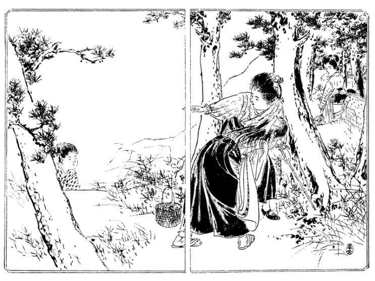

| 食道楽 冬の巻 | |
| 村井 弦斎 | |
| (2013) | |
食道楽
冬の巻
村井弦斎
○大隈伯爵家 温室内の食卓（口絵参照）
我邦
に来遊する外国の貴紳が日本一の御馳走と称し帰国後第一の土産話
となすは東京牛込
早稲田
なる大隈伯爵家温室内の食卓にて巻頭に掲ぐるは画伯水野年方
氏が丹青
を凝
して描写せし所なり。
この粧飾的
温室はいわゆるコンサーバトリーにして、東西七間
南北四間、東西は八角形をなし、シャム産のチーク材を撰び、梁部は錬鉄製粧飾金具を用ゆ。中間支柱なく上部は一尺二寸間ごとに椽
を置き一面に玻璃
を以って覆
われ、下部は粧飾用敷煉瓦
を敷詰め、通気管は上部突出部および中間側窓と、下方腰煉瓦
の場所に設けらる。棚下の発温鉄管は室内を匝環
し、冬季といえども昼間七十五度夜間五十五度内外の温度を保つ。周囲における二層の花壇には、絶えず熱帯産の観賞植物を陳列し、クロートン（布哇
産大戟科
植物譲葉
の類）、ドラセナー（台湾およびヒリッピン産千年木
の類）、サンセビラ（台湾産虎尾蘭
の類）、パンダヌス（小笠原島辺
の章魚
の木
）その他椰子類
等はその主なるものにて、これを点綴
せる各種の珍花名木は常に姸
を競い美を闘わし、一度凋落
すれば他花に換え、四時
の美観断ゆる事なし。
この爽麗 なる温室内に食卓を開きて伯爵家特有の嘉肴珍味 を饗 す。この中 に入る者はあたかも天界にある心地 して忽 ち人間塵俗 の気を忘る。彩花清香 眉目 に映じ珍膳 瑶盤 口舌を悦 ばす。主客談笑の間、和気陶然 として逸興 更に竭 くる事なけん。
小山は徐
ろに席に就き「中川君、非常に面倒で大きに弱ったがやっと今日埒
が明
いたよ」とこの一語は天の福音
としてお登和嬢の耳に響きぬ。中川も忽
ち愁眉
を開き「それは全く御尽力の結果だね、さぞお骨が折れたろう」小山「ウム、実に骨が折れた。最初家庭教育の事を大原君に話して洋行の一件を勧
めたら大原君も非常に賛成して是非
欧米諸国を巡回してみたい、洋行は年来の志願だから何年でも往
っていたいとこういうのさ。ところでお代さんの一件はどうするといったら、それはモー婚礼の期が迫っているので婚礼を済ませて行こうというから、それでは何にもならない、君を洋行させる事に尽力したのも全くその災難を遁
れしめるためだ、婚礼を済ませる位なら洋行するに及ばんと広海子爵の意見と君の苦心とを委
しく話したところ、大原君のいうにはなるほどその厚意は実にありがたい、しかし僕らがお代先生と婚礼せずに洋行したらお登和嬢も僕の帰るまでは嫁に行かないで待っているつもりだろう、一方にはお代先生も待っている、そうすると僕は再び板挟みになって心の苦しみを増すばかりだ、お登和嬢の事は先日も志を打明けて中川君同胞
に申出た通り到底天から僕に授からんものと諦
めているから僕のために嫁期
を失わんより早く外
へ好
い口を捜してもらいたい、お登和嬢の身が片付いていれば僕も安心して海外に往っていられる、場合によれば五年でも十年でも長くいられるだけ彼地
にいたいと大原君は海外で独身生活をしようという位の意気組
だ。そこで僕は一生懸命に君とお登和さんの志を説いてマアともかくも僕らに任せ給え、未来の事はなかなか想像通りに行くものでないから、先によってどういう風に人の運命が変化するかも分らん、行末の事は成行
に任せるとして今度は何でもお代先生の婚礼を避け給えと無理遣
りに大原君を説伏せてそれから外の人たちへも洋行の一件を申込んだ。案の通りお代先生の両親は婚礼を済ませて行けという。大原君の母親もその通りさ。独
り父親が好い機会
として頻
に僕の方へ賛成するが御当人のお代先生は婚礼を済ませて大原君と一緒に行こうと言い出した。大原君の洋行費は家庭教育会から出る、自分の洋行費は親たちに出してもらいたいと言出すと両親たちも海外の事情を知らんから千円までなら自分が出してもいい、それで大原さんと一緒に行けと段々事がむずかしくなって来る。僕も随分閉口して毎日のようにあの家へ出かけて手を換え品を換えて一同を説得した結果、大原君も洋行して帰れば立派な紳士になる、お代先生も大原君と婚礼すれば立派な貴夫人にならなければならんから大原君の不在
中に東京で確
り勉強をしたらよかろう、貴夫人になるのはそれぞれの学問がなければならん、お代先生が日本で充分勉強して貴夫人たる資格を備えた上で大原君が帰朝した時立派に婚礼した方がいいでないかとこの方案に漸
く一決した。それもね、最初お代先生の両親が不同意で、貴夫人には貴夫人の学問が要
るというが今の貴顕紳士
の貴夫人には素姓
の賤
しい醜業婦
が沢山いる。あれはどういう学問をしたのだとこう一本参られたには僕も閉口したね」と今の社会の濁れるは上流の家庭より始まれるなり。
中川「アハハハそれは一言もない。ところでどういう風
に決定したね」小山「それから僕も色々に女子教育の大切な事を説いてどうしても女は結婚前に勉強しないと後になって悔ゆる事がある、結婚後は子供
が出来たり家政の事に追われたりしてなかなか思うように勉強も出来ないと段々説き付けて漸
くお代先生の両親を納得させた。しかるに忽
ちこういう問題が起って来る。大原君が洋行するとあの家へ独
りお代さんを置く訳にならん、国へ連れて戻っては勉強も出来ないし、東京で然
るべき処へ預けて充分に勉強させたい、他日大原文学士の夫人となっても愧
かしくない人物に仕立
ててもらいたい、それには外に頼む処もないから三年でも五年でも大原君の帰朝するまで僕に預かってくれろというのだ。僕も少々驚いたね、外の人を預かって世話をするならいいけれども、あのお代先生を預かるのは随分閉口だ。といって僕が預からんといえば今の相談が忽ち破れるかも知れず、それにお代先生をうっかりした者に預けられて他日一層大原君の迷惑になるようでは僕らの尽力した甲斐
がない。いっその事僕の方へ預かって気長に世中
の事を教えて自分の心から血族結婚の弊害を悟らせるようにした方がいいと思って、トウトウ僕が引受ける事に極
めたよ」中川「ヤレヤレそれはお気の毒だ、とんだ事まで背負い込んでしまったね。君の受ける迷惑は僕の方で弁償しなければならん」小山「アハハ、そんな事はどうでもいいがこういう風に事の極まった以上は一日も早く大原君を海外へ出発させねばならん。もしやぐずぐずしていてまた形勢が一変すると困る。それに両親や外の人は漸く婚礼延期を承諾したけれども御当人のお代先生が頻
に残念がって内々大原君を追廻
すようだ。大原君も長くあの中にいては溜
まるまい。そこで一日も早く洋行させたいがその手順はどうだろう」中川「それはどうにでもなる。ちょうど昨日
広海子爵から手紙が来て大原君の事を家庭教育会へ持出したら誰も彼も大賛成で速
にその事を決定したい、ついては大原君の方はどうであると問合せに来ている。そうと極まったら僕がこれから広海子爵の処へ行って万事の手筈
を極めて来よう。なるべくなら大原君と同道したいな、そうすれば事が早く極まるけれども」小山「ウム、そうし給え。では僕が大原君をここへ呼ぼう。ちょいと紙と筆を貸し給え、僕が今手紙を書くから」と紙筆を乞
いて換舌
の牘
を認
め、中川家の下女に頼みて大原家へ持たせ遣
る。下女の立出ずる時お登和嬢送り来りてそっと注意し「和女
はね、なるべくお代さんやあの下女に逢
わないようにして大原さんにその手紙を差上げておくれ。もしや知らないお方が取次に出ておいでだったら中川から来たといわないで小山さんからお使いに参りましたとそうお言いなさいよ、うっかりお代さんに知れては面倒だから」と何処までも大原のために心を配る。
やがて大原は使者とともに中川家へ入り来れり。家にありて如何
なる苦
みを忍びけん、茫然
としてまた平生
の元気なく「小山君、先刻
は大きに失礼した。あれからね、君が帰った跡
でお代先生が僕や両親の前へ出て来て手放しでワイワイ泣き出して実に困ったよ。今夜婚礼して明日直
ぐ洋行してもいいから婚礼だけを済ませてくれろ。そうでなければ待っている甲斐
がない、婚礼もしないでこのまま別れるようなら首を縊
って死んでしまうという騒ぎだ。僕らが何といって宥
めても聞かばこそ、洋行なんぞと拵
え事に違いない、婚礼するのがイヤだから急に小山さんを頼んで洋行の口を捜したのだ、西洋なんぞへ往
ってしまったら向うで何をするか知れやあしない、婚礼がイヤなら何でも一緒に連れて行ってくれろと強情張って張って何といっても承知しない。そうすると僕の母が先ずその方へ賛成して盃
だけ済ませるなら今夜にも出来るとお代先生の肩を持つし、叔父
や叔母
もうっかりするとまたその方へ心が変りそうだから僕は実にヒヤヒヤするよ。モー一日も日本にいるのがイヤになった。明日にも海外へ飛出したいね」と大原の境遇察するに余りあり。小山も打笑い「アハハハそうだろう、今直ぐ広海子爵の処へ往って洋行の手筈
を極
めて来給え。向うの方はモー出来ている。この上は万事の打合せをして洋行の期日を極めるばかりだ。中川君、広海子爵も大原君の事情を知っているから洋行の期を速める事は何でもあるまい」中川「それはどうでもなるだろう。ともかくも向うへ行って相談しなければ分らん。小山君、君も一緒に往き給え。僕と君と大原君の三人で万事を相談したら今日の内にすっかり事が極まってしまう」小山「それもそうだ、では一緒に行こう」と三人打連
れて広海家へ赴
かんとす。お登和嬢窃
に兄の袖を惹
き「そうすると大原さんは二、三日内に御出発なさるようになりましょうか」と今更別るるを本意
なく思う。兄はその心を知らざるにあらねども大原のためには一日も洋行を延ばし難
し「まだ何とも分らんが二、三日内に出発の出来るように運びたいものだ」お登和嬢少し涙ぐみ「そうすると暫
くお目にかかる事は出来ませんね。今夜は皆さんが此方
へお帰りになって御飯を召上りますか」兄「ウン、少しは遅くなろうがなるべく家へ帰って飯を食べるようにしよう」お登和嬢「それならばお遅くおなりなすっても必ずお帰りになって御飯を召上って下さい。そのつもりで私が今から支度を致します。もしや急に大原さんが御出発のようになると緩々
御飯を差上げる折がないかもしれません」と自分の心は手製の料理を以て大原の別を送るつもり。中川よりも小山がこの言葉を聞き「お登和さん、大丈夫です。貴嬢
のお心はよく分りましたからいくら遅くなっても向うで御飯を食べずに帰って来ます。大原君悦
び給え、今夜はお登和さんが君に餞
の御馳走をせられるそうだ」大原も今は辞
むべきにあらず「アア有難
い」
三人の出で行きし後お登和嬢は台所に入りて甲斐甲斐
しく御馳走の支度に取かかれり。対手
にするは下女のお竹
、これも中川の家に奉公するお蔭にて自ら料理の趣味を覚え「お嬢様、今日はどういう御馳走をお拵
え遊ばします」お登和嬢「そうさねー、今日は何でも大原さんのお悦
びになるような御馳走を沢山拵えて差上げたいものだ。西洋へいらっしゃると暫
く日本料理が召上られまいから日本料理の方を余計にしてそれに西洋料理も二つ三つ交
ぜましょう。大原さんには品数の沢山ある方がいい。家のお惣菜
に煮ておいた葡萄豆
でも何でもある物を皆
んな出しましょう。エート最初は何か汁物を拵えたいがちょうど鯛が買ってあるからあれで鯛汁を拵えよう」下女「鯛汁はどういう風に致します」お登和嬢「この鯛汁は国々で色々な料理があるけれども先
ず手軽なのは鯛の骨と身を別々にして骨や頭を水から四、五時間煮出してスープを取ります。本式にすると朝から晩まで一日煮通さなければならんが急ぐ時には四、五時間でも三、四時間でもいい、その代りにお味噌が入って味噌汁になる。お味噌は一旦
焼いて焼味噌にしたのを擂鉢
でよく摺ります。別に鯛の身を焼いてそれをむしってお味噌の中へ一緒によく摺ってそこへ今のスープを少しずつ入れては展
ばして行って普通
の味噌汁より濃い位なドロドロにしてそれをまたお鍋へ入れてザット煮て出すのだよ。お薬味に葱
の細かく切ったのと陳皮
と海苔の焼いて揉んだのと紅生姜
の刻んだのと紫蘇
の実なんぞを添えて食べる時に味噌汁へ入れて搔廻
してもよし、温
い御飯へそのお薬味と鯛汁をかけて食べてもいいのさ。ちょいとした御馳走にはこの鯛汁に外のお料理が二品か三品あればそれでも沢山な位だ。九州辺では鯛の骨を焼いて摺り混ぜる処もある。なかなか美味
しい味噌汁だよ」下女「オヤそうでございますか、ちょうど西洋料理の濁ったスープに似ておりますね」お登和嬢「やっぱり西洋料理から出たものだろう。九州辺のお料理は多く長崎伝来の西洋料理から出ていて進歩したものがある。関東辺のお料理よりも滋養分に富んでいるものが多い。この鯛汁なんぞは鯛のスープに鯛の実に滋養分の多いお味噌に薬味も色々交じるからなかなか滋養分があるお料理で病人の恢復期
や産婦なんぞにちょうどいいね。よく産婦には鯛の味噌汁やカマスの味噌汁を食べさせると乳が沢山出るというがつまり滋養分の多い飲料が効能のあるという訳だ。和女
なんぞも家にいて毎日色々なお料理を見ているから自然とお料理を覚えるけれどもこういうお料理は病人にいいとかこの御馳走は老人
に差し上げようとか、これは子供に食べさせたいとか一々その用い方を考えておくとお嫁に行ってからどんなにためになるか知れないよ。何でも心掛次第だ、家
にいてお料理を覚える気になったら知らず知らず沢山のお料理を覚えられるよ」下女「ホントにありがたい事でございます。イエね、お嬢様にはまだ申上げませんが先日宿下
りに家へ参りました時西洋風の柔いお料理を二つ三つ拵えて父や母に食べさせましたらどんなに悦
びましてございましょう。そういうお家へは此方
から月謝を出しても置いて戴きたい位だと申して大層ありがたがっておりました。私も一生懸命に覚えますからどうぞよくお教えなすって下さい」と下女までが食道楽にかぶれたり。
○この鯛汁を九州辺にて薩摩という。製法は国々によりて小異あり。
下女の熱心はお登和嬢の悦
ぶ所「ホントにお料理ばかりでない、私の家にいれば何でもためになる事が覚えられて和女
の一生にどんな得になるか知れません。お料理だって家のお料理を覚えておくともしや和女が看護婦になっても病人のお料理が直
ぐ出来る、看護婦にならないでも病人があった時に病人のお料理を知らなかったらどんなに困りましょう。たとい家中が無病息災で病気なんぞはした事がないと威張っても女が妊娠したら妊娠中の食物を知らなければなるまい。お産をした後は産後の食物が一番大切で肥立
の良いのも悪いのも乳の出るのも出ないのも食物次第で大層違う。だから誰でも女と生れたらお料理の事を覚えておかなければなりません。今の鯛汁も西洋料理から出たといったが西洋料理でお魚のスープというとよく病人に食べさせる。お魚は鯛でも鱸
でも鰈
でも比目
でも何でも白い身の物ならばいい。それを腸
だけ抜いてまるのまま水へ入れて暫く湯煮
る。先ず大小によって一時間前後位でいい。別に例の通り白ソースを拵える順序でバター一杯を溶かしてメリケン粉一杯をよく杓子
で攪き廻しながらいためて白ソースならば牛乳を注
すけれどもこれは牛乳の代りに今の湯煮たスープを注してドロドロのものにする。それからお魚のスープが一合入ったらばその上へ牛のスープでも鳥のスープでもやっぱり一合注して湯煮たお魚の身をむしってなるたけ細かくしてその中へ入れて塩胡椒で味をつける。外にお魚の匂いを消すためスパイスという混ぜた香料を少し加える。もっとも病人に食べさせる時には香料を加減しなければならない。そうして弱い火へ掛けてまた一時間も煮るとお魚の身が溶けてドロドロの汁になる。それを火から卸
す少し前に牛乳一合を加えて少し煮るのだ。つまりお魚の湯煮汁が一合ならば牛か鳥のスープを一合、牛乳を一合と三合の汁になる。このスープは平生のお料理に使っても味が大層好いし、病人に飲ませてもなかなか滋養分が多い。よくお医者が病人にスープを飲ませろというが牛肉屋から配達してくれる一合十銭位な白湯
同様のスープを飲ませたって興奮剤にはなるけれども身体
の滋養にはなりません。西洋で病人に飲ませるスープというのは皆
んなこういう風に色々の材料を取合せて極く濃いような重いスープだ。牛肉から取る汁だってビーフチーといってなかなか手数のかかるものだ。それを病気の時には西洋でスープを飲むといって白湯同様なスープを飲むようではなかなか身体の滋養にならない。こんな事は病家
ばかりの罪でない、お医者さんさえ悪くするとスープの拵え方を知らない人も沢山ある。お魚のスープはこういうものだし、鳥のスープといえば先日広海さんのいらしった時拵えたようなボタージデアラレンといって鶏の肉の裏漉しにしたのと御飯を一旦煮て裏漉しにしたのを上等のスープで展
したドロドロのものだ。あれなんぞも病人には極くいいので、滋養分は沢山ある。もっとも病人によっては飲み物ばかり与えて悪い事も沢山あるけれども大概は消化吸収が良くって滋養分の多いものを貴
ぶ。和女
が考えても解るだろう、今までのようなお粥
や重湯
を食べさせるのとこんなスープを食べさせるのと何方
が身体にきくだろうか」下女「それはモーお粥なんぞは足元
へも追付
きません」
○病人に飲ましめるスープ類の料理法は付録に委し〔冬の巻付録「病人の食物料理法」〕［＃「〔冬の巻付録「病人の食物料理法」〕」は底本では「〔本巻五一三ページ以下〕」］ 。
病人の食物は何人
の家庭にても知らざるべからず。しかるに今の世は医師すら多く薬物療法に重きを置きて食物療法の大効あるを悟らざるなり。いわんや普通の素人
は病人の食物に対して平生
何の用意もなし、お粥
や重湯
に責めらるる今の世の病人こそ哀
れなれ。中川の下女はよくお登和嬢の言葉を解し「お嬢様、ホントにそう申すと病人のある家では食物に困りますね。長い病人になると毎日同じ物を食べさせられますから飽
きてしまいますよ。それに日本風のお粥や重湯では第一味が悪くって無病の人でも美味
しく食べられませんね」お登和嬢「全くそうだよ。病人の食物は無病の人よりも味を美味しく拵えなければならん。何故だというのに病人は病気のために食慾が平生よりも減じている。といって沢山物が食べられないと力が抜けて身体が余計に衰える。だから病人にはよっぽど美味しいお料理を拵えて食べさせなければならない。ところが今の世中は病人の食物が無病の人の食物よりもなお不味
い。不味いから病人には尚
お食べられない。こんな気の毒な事はない。私は先年或る病人が何も食べられないといっていたから西洋風の病人食物セーゴのプデンを拵えて食べさせたら大層悦
んで皆
んな食べてそれから力が付いて快方に向った事もある。セーゴやタピオカの料理は毎度拵えるから和女
もよく知っているがあれは西洋で病人食物の第一番に出て来る者だ。しかし日本人の家には平生西洋食品を蓄
えてある事が沢山はなし、それに御飯の料理でも美味しい物は沢山出来るから先ず御飯のお料理を沢山覚えておく方が便利だよ」下女「オヤオヤ御飯のお料理はお粥か重湯の外にないと思
ましたが色々ございますか」お登和嬢「ありますとも、西洋料理ではお米の料理が何百種とあります。その中で病人の食物にちょうどいい物も沢山あるがブランライスプデンなんぞはどんな病人にも食べられるね」下女「それはどう致します」お登和嬢「これは本式にすると面倒だが略式にすれば日本人の家で造作もなく出来る。何処
の家にも御飯はあるからなるたけ柔い御飯を一度煮て裏漉
しにしてその漉したものを大匙に山盛五杯それへ玉子の黄身を四つと砂糖を三杯と牛乳二合をよく混ぜるとドロドロのお粥のようなものが出来る。それを丼鉢
へ入れて鍋へ湯を沸かして丼鉢を一時間ばかり強くない火で湯煎
にするとちょうどお粥の少し固いようなものが出来て匙で掬
って食べると頰が落ちるほど美味しいよ。プデンは何のでも匙で掬う位の固さにしたのがいい。このブランライスプデンを無病の人に出すのはその中へナツメッグだのシンナモンだのと香料を加えるが病人によっては香料を加減しなければならん。大抵な家だって病人があるとソレ牛乳を飲ませろ、玉子を食べさせろ、お粥を拵えろのといってこれだけの材料を使うけれどもお粥の不味
いのに玉子の半熟に牛乳をただ飲まさせられては病人も飽
きるからね。殊
に牛乳ばかりを飲むのは無病の人にもよくない。病気の性
によっては大層悪い事がある。それだけの材料を使う位なら少し手数をかけてこのプデンを拵えて食べさせた方がどんなに悦ぶか知れないよ」下女「ホントでございますねー」と心なき身もその説に感服する。
○米の料理は秋の巻の付録に日本風五十種西洋風五十種を詳記せり〔秋の巻付録「米料理百種」〕［＃「〔秋の巻付録「米料理百種」〕」は底本では「〔本巻四七二ページ以下〕」］ 。
お登和嬢は何人に向
いても親切の心に変りなし。弟子に教ゆるも下女に教ゆるもその説く処は詳細を極む「竹や、和女
も料理法を習うからには略式ばかりで物足りない、念のために本式のブランライスプデンを教えて進
げましょう。これにはお米の粉が要
るよ。先ず二合の牛乳へお米の粉を大匙四杯にお砂糖を大匙三杯入れて弱い火で一時間ばかりよく煮るとドロドロしたお粥のようになります。それが出来上った時玉子の黄身を四つ入れてよく攪
き混
ぜてそれからベシン皿へでもあるいは丼鉢
へでも入れて外
のプデンのようにテンパンへお湯を注
いでその中へベシン皿を置いてそれごとテンピの中で二十五分間位蒸焼
にすると上等のプデンが出来ます。セーゴでもタピオカでもジャムやでもやっぱり同じ事で大匙二杯位を初めは暫
らく水へ漬けておいて膨
らんだ処を二合の牛乳へ入れて砂糖を三杯加えて三十分以上煮て出来上った時玉子の黄身を二つ混ぜてテンピの中で二十五分も蒸焼にすると病人にはどんなにいいだろう。無病の人には牛乳で煮ないでも普通
のカスターソースを拵えてその中へ水に漬けたセーゴやタピオカを混て蒸焼にしてもカスターセーゴプデンといってなかなか美味
しい者が出来るよ。その外私が平生
拵える挽いた肉のお料理や崩したお魚のお料理は大概な病人の食物になるからよく覚えておおきなさい」下女「ありがとうございます。お米のお料理でまだ外に病人の食べるようなものがございましょうか」お登和嬢「ありますとも、沢山あります。御飯を一旦
煮て裏漉
にして大匙山盛六杯へ二合の牛乳と三杯のお砂糖を加えて弱い火で一時間煮詰めて出来上った時ゼラチンを四枚水で濡
らして柔くして加えて玉子の黄身を二つ入れて少し煮て卸
したら其処
へ白身を二つ泡立たせて混ぜてそのまま冷して固めると手軽なお米のババロームというものになって病人には極
くいいよ。こういう時寒天
を使うと消化が悪くって病人に食べられないけれどもゼラチンは薬に使う膠質
でお腹
へ往
くと直
に溶けるから病人にも食べられる。この外に御飯を一旦煮て裏漉にしてライスケーキも出来ればライスソフレーも出来るし色々のお料理が沢山あるけれども今は忙
しいから今度また暇の時に教えて進
げよう。エート病人料理の話しで肝腎
な今日のお料理が何処
へか行ってしまった。大原さんは葡萄豆
がお好きだから昨日
煮ておいた葡萄豆をモー一度煮返して差上げよう。葡萄豆は昨日煮たものを今日また一度煮返すと味がいよいよ好くなるよ」下女「煮返さないでもお豆が柔くなって大層結構でございます。お豆というものは大層身体
のお薬りになるそうでございますね」お登和嬢「アア、牛肉やお魚のない田舎には大豆だの外の豆類が沢山あって身体の養いになる。豆というものは肉類に劣らないほどの功能があるよ。しかし料理方が悪いと消化
れないから病人に食べさせられないけれども家で煮るように外の物を入れて柔くしてあれば病人が食べても差支
がない」下女「ホントに融けるようでございますもの。私はお手伝い申したばかりでまたよくあのお料理を覚えませんが［＃「またよくあのお料理を覚えませんが」はママ］
丁寧
に致しますとどういう風に拵えます」
○ゼラチンは痔疾の薬なり。出血を止む。
お登和嬢「あれはね、極
く上等の大豆を一晩水へ漬けておきます。もっとも古いのと新しいのでその加減をしなければならんが古いほど長く漬けておいて翌日
の朝水を換えてよく洗って少しの昆布
と一緒に深い鉄鍋へ入れて水を沢山注
して先ず半日位強くない火で気長に湯煮
なければならない。水を引いてしまったらまたお湯を注
して緩々
湯煮て、半日もそうした処で一合の豆ならばお砂糖を大匙二杯半位入れて別に一寸四角位に截
った昆布と上等のカチ栗と小さく切った人参
少しと凍蒟蒻
少しとを入れてまた二時間位気長に煮るのだ。昆布が入るから豆も昆布も双方柔くなって双方へ味が付くし外の野菜も美味しくなるが其処
には才覚という事があって悪い昆布を入れるのと上等の昆布とは煮える時間も違うし味も違う。カチ栗も上等の品ならその時入れていいがコチコチ固いような品ならモット前に入れるがいい。昆布を二度に入れるのは豆と一緒に入れた昆布は長く湯煮ると溶けてなくなってしまう。跡
から入れた昆布がちょうど柔
になって食べられる。こうして二時間ほど煮て中の品物が皆
んなよく煮えたと思う時お醬油
を少し注してまた一時間ほど煮て火から卸
すがお醬油はなるべく寡
い位に入れないと味が鹹
くなり過ぎて困るよ。つまり一日かかるね。その晩一度食べて翌日はまたザット煮返すとモット柔くなって美味しくなる。寒い時にこの葡萄豆を煮て翌日モー一度煮返しておくと四日や五日の副食物
になってどんなに調法だろう」下女「私はお豆が好きでございますから毎日戴いても飽
きません。それから今朝ほど八百屋の持って参った大きな栗がございますね。あれを何かに遊ばしますか」お登和嬢「あれは栗を含ませ煮にして鯛のフクメをかけましょう。栗の含ませは先ず皮のままよく蒸してそれから皮を剝
いて一升の栗ならば味淋
二合砂糖一斤塩小匙一杯半の割で弱い火へかけて気長に煮てそのままその汁
へ漬けておけば長く持って段々味が出る。色を白く出そうと思えば白味淋に白砂糖を使うと味もなお良くなる。その栗へ鯛のフクメというものをかけるが、これは鯛を三枚に卸
してその身を指の先で小さくちぎって思い入れ沢山塩を振って二時間ばかり塩漬にしておく。それから今の身を塩から出してよく洗って沸湯
の中へ入れてサット湯がいてよく水気を切て布巾
で堅く絞
る。そうするとバラバラになるから別の大きい鍋へ湯を沢山沸かして湯の中へ薄い鍋を入れて今のバラバラに成
た身を両手で揉みながら落して五、六本の箸
で搔き混ぜていると湯煎
の空炒
になるから段々水気を蒸発して細い白い糸のようなものがカラカラに干上
る。それがすっかり干上った処で火から卸して栗の煮たのへ沢山かけて出すと鯛には塩気の味があり栗には甘い味があってどんなに美味しいだろう。こういうお料理は西洋で食べられないから今日は一つ上等に拵えて大原さんに御馳走しましょう」と嬢の熱心平生に異
るあり。下女もその心を知り「お嬢様、ホントに大原さんはお名残
惜しゅうございますね」
大原の事といわれてお登和嬢忽
ち少しく涙ぐみけるを下女は悪き事言いけりと話しを外
へ向け「お嬢様、栗の金団
なんぞは以前拝見致して覚えておりますが栗を西洋料理に使う事がございましょうか」お登和嬢「ハイありますとも、西洋風にすると栗を皮のまま蒸してそれから皮を剝
いて鉢の中へ入れておく。その上へバニラステーキといってバニラの棒を栗五合ならば二本ばかり載せておく。別に一斤の白砂糖を一合の水で煮立ててよく溶けた時熱い処を今の栗の上からかけて一晩置くと翌日
は栗から液
が出て少し濃くなっている。その液をすっかり漉し取ってまた鍋へ入れ暫く沸立てて熱い処をかけて一晩置く。その翌日
もやっぱり今の通りに液を沸立てて栗へかけて一週間毎日そうしてそのまま保存
っておくと一年過ぎても味が変らない。よく西洋から銀紙へ包んだ栗が来るがあれはそうした栗を干してよく水気を切って銀紙へ包んだのだ。近頃日本製にもその真似
をして銀紙へ包んで立派な瓶
へ詰めたのがあるけれども一度煮たのを銀紙へ包むと見えて直きに腐敗してしまう。何でも料理は親切に拵えないと長く持ちません。親切に拵えたのと不親切に拵えたのとは保存
が違うから争われないものだ」下女「全くそうでございますね。栗をちょっとしたお料理に使えますか」お登和嬢「そうさねー、バター一杯を溶かしてメリケン粉一杯をいためて牛乳一合を注
して塩胡椒で味をつけた白ソースを拵えて今のように蒸した栗を入れてザット煮て出してもなかなか美味
いよ。それから鳥のシタフェというのは若い雄鶏
のお腹
の中をくり抜いて蒸した栗をバターと塩とお砂糖とで和
えてその中へよく詰め込んで鶏の皮の切口を木綿糸で縫ってテンパン皿へ入れる。その側へ人参
や玉葱
の小さく切ったのを置いて鶏の上へは大匙一杯のバターを載せてテンピへ入てロースに焼くが途中で幾度
も引出して鶏から出た汁を上へかけなければいけない。出来上って出す時にはこの汁へスープを加えて塩胡椒して少し煮た汁をかける。ロースを焼くにはお菓子と違って火は極く強い方がいい。それで一時間ほど焼いてよく火が通らなければならん。こういうものを弱い火で焼くと一時間位では火が通らず、二時間も焼いていると肉の水気がなくなって硬くなって味が極く悪い。ロースやビフステキを上手に焼くのはなかなかむずかしいものだ。今度私が余所
へ行った時和女
が一つお料理を拵えて兄さんに差上げて御覧」下女「オホホそう致しましたらさぞ旦那様がお笑い遊ばす事でございましょう。お嬢様、先ほど八百屋からキザ柿をお買い遊ばしましたがあれは召上りますのですか」お登和嬢「イイエあれもお料理に使うよ、柿ナマスといって上等の御馳走が出来る。ちょうど大原さんへ差上げるのにこの上なしの珍味で、柿は西洋にない、日本の名物だ。西洋へいらっしゃると柿のお料理を召上る事が出来まいから今日は一つ美味しい柿ナマスを拵えて差上げたい」と一生懸命に料理の支度をなす処へこれも大原の一件を案じてや小山の妻君突然尋ね来れり。
○栗の西洋料理は本文の外になお数種あり。その中 栗のマッシは日本風の金団 に似たるものなるが先ず生栗一斤の皮を剝き極く柔になるまで湯煮 たるを裏漉にかけバター大匙一杯と塩胡椒を加え少しの牛乳にて弛 めて弱火にかけてよく煉り混ぜるなり。
○栗のベーキドプデンも味好 きものなるが玉子の黄身二つと砂糖大匙二杯とをよく煉り混ぜ一合の牛乳にて弛めし処へ裏漉しの栗大匙三杯を入れてよく混ぜ合せ香料のシンナモン、丁子 の類を少し加えてベシン皿へ入れるなり。焼き方は例の通りテンパン皿へ湯を注ぎその中へベシン皿を置きあまり強からぬ火のテンピにて三十分間焼くなり。火の強きに過ぐるは出来悪し。
○栗のボイルドプデンは前の物より少し固くするものなるが玉子三つに砂糖二杯を煉り混ぜ牛乳一合を注し裏漉の栗大匙四杯を入れ香料を加えてブリキ型へ入れ湯煎にして一時間ほど湯煮るなり。火加減は強からぬがよし。火が強過ぎて湯が沸騰するとプデンに鬆 が立ち味悪し。ブリキ型のなき時は茶筒の蓋へ入れ上から布巾をかけて湯煮てもよし。このプデンにはカスターソースあるいはスポンジソースをかけて食すべし。
○前文よりも一層上等なる栗のボイルドプデンは玉子の黄身三つに砂糖大匙三杯とバター大匙一杯とを煉り混ぜメリケン粉大匙六杯と焼粉を小匙一杯加え湯煮たる栗を小さく砕きて一斤ほど入れて牛乳を大匙二杯ほど注し、三つの白身を泡立てて加え、香料のワニラなど混ぜてブリキ型へ入れるなり。これも前文の通りに湯煮てソースをかける。
小山の妻君は良人
の帰宅が遅き故に大原の一件が如何
に成行
きつらんと心配して来りしなり。お登和嬢に逢いて様子を問えば三人同道にて広海家へ赴きしとの事、それならばもはや案じるに及ばず、洋行の相談全く整いて大原ぬしは情実婚礼を遁
れ給わんと小山の妻君もお登和嬢のために前途を悦
び「それでは皆さんも御相談が長くおなりでしょうから急にはお帰りがありますまい」お登和嬢「イイエ晩までにはお帰りになります。たとい遅くなっても晩の御飯を召上らずに帰っていらっしゃるお約束ですから只今
御馳走の支度を致しております」妻君「オヤそうでございますか、それならば私もお手伝い申しましょう。もしや急に大原さんが洋行なさると貴嬢
の御馳走を召上られないからといって今夜は御送別と御留別
を兼ねた御会食ですね。オホホ、そうでございましょう、きっとそうに違いありません。そういう訳ならそのつもりで私もお手伝いを致します。今何をお拵えなさいますか。ナニ柿ナマス、柿がお料理に使えますか。私もお手伝ながら拝見致しましょう」と嬢を促してともに台所へ入りぬ。お登和嬢は下女のみにて手廻り兼ぬる処へ好
き手伝人を得たりと心嬉しく「奥さん、柿ナマスはキザ柿の甘いのを大根の千六本のように細く刻んで沢山の味淋へ漬けておきます。別に椎茸
と簾麩
とを極く細かく切って糸蒟蒻
と一緒にお味淋やお醬油
で美味
しく煮ておきます。それから油揚
を二枚に剝
がして中の白い処を庖丁でこそけて取っておいてその皮だけ細く切って一緒に煮ます。大根と人参の生を千人前か何かで細く卸
して塩で揉んで固く絞っておきます。それから白胡麻を炒
って擂鉢
でよく擂って今の油揚の白い処を入れてまた擂って味淋と酢と砂糖と少しの醬油で味をつけて今の品々と外に蓮根の煮たのを入れてよく和
えます。蓮根は蓋をして外の品々と一緒に煮ると黒くなりますから薄く切って別に塩と味淋で煮ます。貴女のお家のようの南京豆が直ぐ間に合えば白胡麻の代りに南京豆を使ってもいいのです。品物の入れ加減は大概お見計
いでようございますがその中で柿が一番多く入ります。色々な味へ柿の甘味が交ってどんなに美味
うございましょう。柿のお料理ではこれが一番結構のように思います」妻君「そうでございますかね、さぞ大原さんがお悦
びになりましょう。それからまだ色々の御馳走が出来ますか」お登和嬢「ハイ何でも出来るだけ沢山拵えます。上等も下等も日本風も西洋風も構いません、材料のあるだけ品数を沢山拵えて大原さんに充分召上って戴こうと存じます」妻君「オホホソラ御覧なさい」お登和嬢「アラ、そういう訳ではございませんがお惣菜
料理までも一緒に出そうと存じますから里芋の極く柔い小さいのばかり蒸して鰹節
と昆布の煮汁
を薄味にしてよくお芋を煮てその汁へ葛を引いて里芋の葛掛も拵らえましょうし、鯖
の船場煮
やイナダの餡掛
もお料理致します」
○本文の柿ナマスには生柿のなき時干し柿を用いてもよし。
妻君「鯖の船場煮とはどうしたお料理です」お登和嬢「鯖の船場煮は誠にさっぱりしたお料理で先ず生鯖の鮮
しいのへ一塩宛
てて二、三時間置きます。あるいは極く上等の塩鯖があればそれでも構いません。別に昆布出
しの汁を美味
しく拵えて塩とホンの少しの醬油
とで味を付けて酢
を少し加えます、この汁には鰹節
も味淋も砂糖も使いません。昆布の味と塩気と酸味
だけです。別に大根を短冊に切って湯煮
ておきます。塩にした鯖も切身にしてちょいと汁へ入れて煮て椀へ盛る時大根を載せて今の汁をかけて出します。お汁物と煮物の仲間
のようなもので美味しゅうございますよ」妻君「これからは鯖が沢山出ますから宅でも拵えてみましょう、イナダの餡掛
とおっしゃるのは」お登和嬢「これもイナダへ薄塩を当てて蒸しておきます。別に昆布出しの汁へ醬油と味淋で味をつけて溶き葛を入れてお魚へかけて山葵
を載て出します」妻君「それも美味しゅうございましょう。私どもではこの頃近所の家からよくイナや鰡
の活
きたのを貰います。その主人が投網
が好きでよくイナや鰡を沢山取って来てくれますがイナや鰡はどうしたのが美味しゅうございましょう」お登和嬢「活
きているなら湯鰡
というお料理になさると生臭
くなくって極くさっぱりとしております。それはイナでも鰡でも活きているようなのを三枚に卸
して小さく切ってグラグラ沸立
っている湯の中へ潜
らせて直ぐ揚げます。それを酢醬油で食べますが薬味に摺
り生姜
と刻
み葱
と紫蘇
なんぞを用いますと沢山食べられます。船で釣や網に参った時船中の即席料理に極くいいと申します。イナや鰡はよく味噌汁へ入れますがあれは生の身を用いると汁
が生臭くなって不可
ません、一度焼いて入れるのに限ります」妻君「それは好
い事を伺
いました。イナや鰡はこれから沢山出ますけれどもさて食べ方に困るもので大きいのはお刺身にするとか小さいのは塩焼にする位なもので私どもは直きに飽
きてしまいます。イナや鰡は色々なお料理があるとみえてよく浦賀の土蔵焼
名古屋の饅頭焼
なんぞと申しますね。あれはどう致したのです」お登和嬢「名古屋の饅頭焼はお腹の中へお味噌を詰めて焼いたのです。浦賀の土蔵焼は腸
を出さずにそのまま丸焼
にしたのです。しかしこういうお料理はその土地の魚に限るのでイナや鰡が品川湾に来ている時分は盛
に餌を食べて釣人
に取られる位ですから腸が臭くってとても食べられません。品川湾から段々下へ落ちて行って神奈川横浜を過ぎる時分からモー段々餌を食べなくなります。それから段々東京湾の口へ落ちて行って房州へ六分相州へ四分下ると申しますが相州へ下った魚は浦賀湾の温かい処で冬籠りを致します。その時分には少しも餌を食べません。お腹の中の汚物は皆
んな吐いてしまって綺麗
なものです。それに身体
は充分脂
が乗って美味しくなっていますし、その魚を浦賀では昔
し一網千両の馬鹿網といって網で一度に沢山取
たそうです。そういうお魚でなければ土蔵焼にしても美味しくありません。東京辺で取れたイナや鰡はとても腸ごと食べられません」と一々説明の委
しきに小山の妻君感心し「ホントに貴嬢
は何でもよく御存知ですねー」
○イナや鰡を西洋料理にするはフライに用いてもよし。またグレー即ち網焼にも用い、これは魚を背開きにして塩胡椒とサラダ油をかけて十分間置き焼く時塩を少し振かけバターを塗りて強火にて焼くなり。かくすれば味好し。
魚の料理も季節により土地によりて各々その特長あり。小山の妻君頻
に感心し「お登和さん、そう伺
ってみるとお魚ばかりではありませんね、お野菜でも肉類でもそういう工合
がありましょうね」お登和嬢「ありますとも、同じお魚でもワラサやワカナゴの時は夏の方が味も好くって鰤
になると寒中が美味
いとしてあります。お野菜でも出来秋
に食べるのが一番身体
にお薬
りなので、お野菜や植物が出来秋に持っている成分は必ず何かその時に必要の事があるのでしょう。唐辛
が出来る時分には辛味のお料理が身体に必要ですし、梅の実のなる時分は人の身体に最も酸味
を要する時だと申します。山に薇
が出る時分には人のお腹
へ虫が生
きますし」と言うを遮
る妻君「オヤ薇と虫と何か関係がありますか」お登和嬢「ハイ薇は駆虫
の功があります。薇の根からメンバエキスと申して大層強い駆虫剤が取れるそうでございます。ちょうどその時分には人の身体に色々な虫が生いて駆虫の必要があるのだそうです。そういう訳ですから何でも出来秋の品物を色々に料理して食べるのは自然と人の身体の薬になりましょう」妻君「そうでございますかね、してみると何でも季節季節に出来たものは食べておいた方がいいのですね。よく無花果
は痔
の薬になると申しますが追々無花果が出て来ますからあれなんぞも食べておきましょう。お登和さん、無花果は何かお料理になりましょうか」お登和嬢「ハイ色々なものになります。無花果の酢煮と申すのは無花果の皮を剝
いて大きいのなら二十位を一斤の砂糖と一合の水と大匙四杯の西洋酢とで丁子
を十粒ほど加えて弱い火で煮るのです。なかなか結構なものですよ」妻君「無花果はただ煮てもようございますね、あれをジャムにして長く置けましょうか」お登和嬢「ハイ、やっぱり外のジャムのように拵えれば出来ます。皮を剝いた無花果が一斤なら砂糖を百目振かけて三、四時間置くと砂糖が溶けて液
が出ます。それを深い鉄鍋へ入れて最初は強い火で一時間ばかり煮る内にアクが浮いて来ますから丁寧
に幾度
も掬
い取ってアクが出なくなったら火をズット弱くして弱火
で二、三時間煮詰めるとジャムになります。西洋では無花果を乾
して砕いて珈琲
に製するそうです」妻君「そうでございますか。私も今度ジャムを拵えてみましょう。しかしお登和さん、大概なジャムは果物一斤に砂糖一斤の割ですがあれではどうも甘過ぎるようです。モー少し砂糖を減らしても構いますまいか」お登和嬢「ハイ、早く食べるのは砂糖を減らしても構いませんがその代り長く持ちません。長く持たせるものへ砂糖を沢山入れるのは防腐剤にするものです」妻君「オヤお砂糖が防腐剤になりますか」お登和嬢「お砂糖は塩に亜
いでの防腐剤です。庖丁
やナイフで手を截
った時塩を塗っておく代りにお砂糖の固まりを押付けて疵口
へよく浸み込ませておけば膿
むような事はありません。菓物
や何かをお砂糖漬にするのも防腐のためです」妻君「そういうものですかね、モー葡萄
が沢山出ますがあれもジャムになりましょうね」お登和嬢「ハイ、あれも皮付のまま砂糖をかけておいて今の通りに煮てそれから裏漉
しへかけてモー一度煮詰めておくと何時
までも持ちます」妻君「私は近頃何でも菓物を煮ますが梨ばかりは煮ても美味しくなりませんね」とこれは自分の失敗らしし。
○無花果の酢煮は皮付のままにてもよし。それには一斤の無花果へ砂糖八十目、酢を大匙四杯加えて本文の如く煮るべし。
お登和嬢「奥さんは梨をどういう風にお煮なさいます」妻君「やっぱり外
の菓物のようにお砂糖を入れて煮ました」お登和嬢「それでは甘くばかりあって美味
しくありません。梨は全体甘味ばかりで酸味
がありませんからお砂糖ばかりでは甘ったるくなります。あれは先ず大きい梨の皮を剝
いて心
を除
って四つに割って梨一斤半にお砂糖を百目入れて水を五勺
注
して四十分間煮てそこへ甘くない生葡萄酒
を五勺加えてまた二十分間煮ます。そうして冷
めてから戴くとなかなか結構です」妻君「なるほど葡萄酒で煮たらば美味しくなりましょう。この頃は西洋梨といって長い形のコチコチした石のように堅いのがありますがあんまり堅過ぎて煮なければ食べられませんね」お登和嬢「イイエ、あれは極
く柔くって味の好いものです。堅いようなのを買って糸で縊
って風通しの好い処へ釣るしておくと二、三日目か四、五日目位でちょうどいい食べ頃が来ます。手で触ってみると柔くなっていますからそれを召上るとどんなに美味しゅうございましょう。とても日本の梨は遠く及びません。ちょうど梨と林檎
の味を一緒に持っているようです。その代り食べ頃はたった一日か二日でその時食べないと直
きに腐敗しかけて酸味
を帯
びます。そうなるとモー食べられません。よく世間の人が西洋梨を堅い堅いといいますが全く食べ頃を知らんからです。マンゴーでもマングスタンでもライチーでも皆
んなその通りちょうどいい時に召上らないと菓物の王だとか女王だとかいう味が致しません」妻君「それで分りました。やっぱり此方
が悪いのですね。お登和さん、先日良人
が貴嬢
から三十銭料理や二十銭料理を教えて戴きまして宅へ帰ってから一々皆
な試みてみましたが大層経済に出来てどんなに悦
びましてしょう。その中
でも二十銭のサンドウィッチ料理なんぞは大層社中の賞賛を博したそうです。あれから宅では十八銭のブリスケ料理だの牛の尾の料理だのと徳用なお料理ばかり致しますがその外に臓物
料理は皆んな直段
が廉
くって味が好いと伺ったそうです。全体牛の臓物料理と申しますとどういうものでございましょう」お登和嬢「そうでございますね、上の方から申せば第一が犢
の頭です。頭一つを四十五銭から六十銭位までで買えます。大牛の頭も買えない事はありませんけれども大牛の頭は切りほどくのに面倒ですから大概犢を買います。大牛のは脳味噌とか舌とかいって別々に買う方が便利です。犢なら頭一つで脳味噌も取れれば舌も取れますし、顔の皮の美味しい処も取れて大層徳用です」妻君「牛の脳味噌は大層お薬だと申しますがどうして拵えます」お登和嬢「ハイ牛の脳味噌は大層なエキス分を含んでいますから興奮の効が多いそうです。脳味噌はトントお豆腐のように柔いものでそれをザット塩湯煮
にして薄い膜を剝
ぎまして薄く切ります。それへ塩胡椒してメリケン粉をつけて玉子の黄身へくるんでパン粉をつけてバターでフライにするのが一番軽便で美味しゅうございましょう。その外
色々のお料理に出来ますけれども食べ慣れないお方は気味を悪
るがって召上らないようです。西洋人は一週間に一度お薬のつもりで食べる人が多いそうです」
○梨はこの外に焼梨という料理あり。そは焼林檎の如く心 をくり抜きバターと砂糖を詰めテンピの中にて二時間ほどロース焼にするなり。よく気長に焼くべし。
○牛の脳味噌はコロッケーにもすべし。それには一旦湯煮て細かく切り固き白ソースへ混ぜ塩胡椒を加えて冷まし、それを丸めてメリケン粉をつけ玉子の黄身にてくるみパン粉をまぶして油にて揚げる。これにトマトソースをかけて食すれば一層上等なり。
妻君「牛の脳味噌と聞くと何だか気味が悪いようですね。追々食べ慣れたら平気になるかもしれません。それから顔の皮というのはどう致します」お登和嬢「顔の皮と申して頭の皮も何の皮も皆
んな食べられますが、それを最初塩でよく揉
んでヌルヌルを除
ってしまってよく洗って、深い鉄鍋の中へ水と一緒に入れて少し塩を加えて人参
や玉葱
なんぞを入れて強くない火で四時間ばかり湯煮
ます。そうすると皮が大層柔くなります。別の鍋でバター一杯をいためてコルンスタッチ一杯をよくいためてスープを五勺
に瓶詰
のトマトソースを一合加えて塩胡椒で味を付けて今の皮をその中へ入れて一時間ほど煮ますと美味
しいシチューが出来ます」妻君「牛の舌はいつでもシチューに致しますが外にお料理がございますか」お登和嬢「ハハ色々ございますが軽便なのはやっぱりシチューにする時のように最初舌を塩でよく揉んでヌルヌルを除って洗って深い鍋へ水と一緒に入れて人参玉葱を加えて強くない火で四時間湯煮ます。湯煮上った処でザラザラした厚皮を剝
いで別にバターで粉をいためて牛乳を注
して塩胡椒で味をつけた白ソースを拵えます。その白ソース一合へ玉子の黄身を二つ入れてツブツブの出来ないようによく混ぜて丸のまま今の舌を入れて弱い火で一時間煮ます。イザ出す時薄く切って油で揚げたジャガ芋か何かの野菜を附合せにして汁をかけますがこれは舌のフルカセーです」妻君「ジャガ芋を揚げるのはどう致します」お登和嬢「ジャガ芋を拍子木形
に切ってサラダ油でよく揚げて熱い内に塩胡椒を振りかけます」妻君「それで頭のお料理が出来ました。今度は何になります」お登和嬢「そうですね、レバーといって犢
の肝臓のお料理があります。犢の肝臓は廉
い物で大きなのが一つ十五銭位一斤余あります。それを生のまま三分位の厚さに切って塩胡椒してメリケン粉を叩きつけてバターでフライにしますが柔くってなかなか結構です。これへ野菜を附合せにして芥子
ソースをかけるとなお美味しくなります。芥子ソースはフライにした時出た汁へメリケン粉を入れてよくいためてスープを加えて溶き芥子を入れて酢を少し注
したものです。豚のベーコンを湯煮て薄く小さく切ってこのソースへ入れて一緒にレバーへかけて戴くとなお上等になります」妻君「レバーは私も一度食べた事がありますが脳味噌ほど気味が悪くありません。その次は」お登和嬢「トライプといって牛の胃袋のお料理もあります。これも最初塩で揉んで洗って人参玉葱と一緒に四時間湯煮て、それを小さく切りますがその時黒いポツポツの処を除かないといけません。それから今の皮のようにトマトソースを拵えて一時間煮てシチューにしてもよし、あるいは白ソースで煮てもようございます」妻君「その次は」お登和嬢「キドネー即ち腎臓です。これは俗にケンネーといいまして牛の生脂
即ちケンネー脂の中に包まれています。最初生のまま細かく切って沸湯
へザット入れて一度沸上
ったら直ぐ出してブラウンソース即ちバターでメリケン粉を黒くなるまでいためてスープを注して味を付けたもので火を弱くして少し煮るのです」妻君「その次は」
○牛の舌は本文の如く湯煮たるものを薄く切り白ソースかあるいはトマトソースをかけて食すればボイルドタンなり。その残物は翌日フライにしてもよし、フエタスにするもよし、崩してメンチトースあるいはコロッケーにもなすべし。
○犢の肝臓はロースにするもよし。それには肝臓へ豚のベーコンを処々へ差し込み塩胡椒を振りバターを載せて二十分間法の如くロース焼にするなり。
○舌は犢か羊を上等とす。豚の舌も牛の如くに料理すれども味は少しく劣れり。
○胃袋は大牛を良しとす。
○キドネー即ち腎臓は羊を上等とす。
臓物
料理も尽くる事なし、お登和嬢倦
める色なく「その次はハート即ち心臓のお料理で心臓には孔
が明
いております。先ずパンを四半斤
位皮の固い処を切捨てて真中
の柔い処ばかり水に漬けて絞
てそれへ大きな玉葱の細かく切ったもの二つ振
とパセリの細かく刻んだもの大匙一杯と玉子の黄身二つと塩胡椒とをよく混ぜ合せて今の孔へ詰めて塩胡椒を振かけてバターを載せてテンパン皿へ入れます。その周囲
へ人参や玉葱の小さく切ったものを置いてテンピへ入れて四十分間強い火でロース焼にします。何のロースでもこういう風にしますと肉の味と野菜の味とバターの溶けたのが一緒になって下へ溜
まりますから幾度
も幾度も引出して大匙でその汁
を肉の上へかけながら焼きます。それが出来上った時肉を出してその汁の中へバターを入れてメリケン粉を真黒くなるまでいためてスープとセリー酒を少し注
して塩胡椒で味をつけてよく煮て丁寧
にすればその汁を水囊
で漉
して肉へかけて出します」妻君「その次は」お登和嬢「これでお腹
の中の物はお終
いです。今度は下へ行って尾のお料理ですが先日小山さんにお教え申しましたから御存知でしょう。それから脛
はスープになりマルボンといって髄
も取れますし、足の先のお料理も結構です。足の先
きは生のまま四時間湯煮
て骨と肉とを別にしてその肉を今のお料理のようにトマトソースか白ソースで煮込みます」妻君「そうすると足の先から頭の先まで捨てる処はありませんね」お登和嬢「少しも捨てる処はありません。西洋人は肉料理よりも臓物料理を好む人がある位で食べ慣れると美味
いものです。しかし我邦
ではまだ臓物の食べ方を知らない人が多いため美味
しい臓物も腸と一緒に肥料屋に売られたり、あるいは胃袋なんぞは折々香具師
の材料となって縁日の見世物
になるそうです。大きな胃袋へ水を一杯詰めて裏返して置くとちょうど頭のような処が先にあり手足のような処もあり何とも訳の分らない化物
のような形になるそうです。それを見世物師が何処
の海で取れました何という珍らしい動物でござると名をつけて一銭二銭の見料を取って見せるのです。よく縁日の見世物を気を注
けて御覧なさい。黒い牛のような化物の看板が出ていますよ。あれが牛の胃袋です。西洋ではお料理にして食べられるものが我邦では見世物に出るので随分おかしいではございませんか。それから見世物に蛇
の骨
だといってよく出ているのがあれも牛の軟骨を乾
し固
めたのだそうです。そんなものを見るために一銭二銭の金子
を払って嬉しがっているのは多く頑是
ない子供ですが、まことに浅ましい事ではございませんか。文明流の家庭教育は子供に博物学上の智識を与えて牛はこういうものである。胎生動物と卵生動物の区別はこうであると事物の真相を教えて遣
らなければならんのに牛の胃袋や骨を以て子供を欺
いて金銭を貪
るなんぞとは実に乱暴とも野蛮とも申しようがありません。ああいう処を改良して行くのが教育家の仕事でありましょうけれども今までは家庭教育にさえ重きを置かなかった位ですからそんな処まで手が届きません。大原さんが西洋からお帰りになって家庭教育の必要をお唱えになったらばその時こそ始めて子供の幸福も出て来ましょう」と物に感じてはとかく心を大原の身辺に馳
する。
○心臓は犢の物を上等とす。
小山の妻君も同感なりけん「ホントに大原さんの力を以て我邦
の家庭教育を改良したらさぞ世中
が清くなって楽しい事でございましょう。しかしそれも大原さん一人の力では隅から隅まで行届く訳に参りません。是非
とも貴娘
が内から助けて婦人社会を感化なさらなければ大原さんの功を全くする事が出来ますまい。私は一日も早く大原さんと貴嬢
が奥床
しい御夫婦におなりなすってお二人揃って世中を感化なさる処を拝見したいと思いますよ。オホホ何ですって、そんな事は望まれないって。今度こそ大丈夫です、大原さんが洋行なすっておしまいなさればモー決して御心配はありません。お代さんの方は私ども夫婦が引受けてきっと始末を付けますから誰が何といっても今度はモー貴嬢と大原さんの間を妨げるものはありません。大原さんの御帰朝が待遠しかったら貴嬢も跡
から西洋へいらっしゃいまし。貴嬢が西洋へいらっしゃりたければそれこそどんな機会もありましょう。やっぱり家庭教育の取調をなすってもよし。料理法の研究をなすってもよし。どの口も直ぐ出来ますよ。ホントにいっその事そうなさいましな」と段々話しが先走りする。お登和嬢あまりにこの話を進めらるるが厭
わしく「私はモーモー決して先の事は何とも考えません。私なんぞが浅果
な智恵を以て未来の事を考えても決して解るものでないそうですからかえって考えない方が楽でございますよ。ネー奥さん、人は誰でも先の事を考えたがりますけれども滅多
に物事が考え通りになった例
がありません。それは考えるのが悪いのでない、まだ考えるだけの智識と経験を蓄えないでただ無闇
に考えるからだとよく兄が申しますよ。譬えば海岸へ出て海の水の穏
で広々した処を見ると誰でも好
い心持
になって海の真中
へ出てみたいような気がします。小舟に乗って海の中へ出ると海岸で眺めた時よりは案外に波のウネリが大きくって舟は揺れる、心持が悪くなる、オヤオヤこんなつもりではなかったと忽
ち怖くなって来る処へ風が起り雨が降って海が荒れ出して来ると舟が今にも顚覆
りはしないかと思って生きた心持のしないような事もあります。現に私も国にいる時分折々海へ出てそんな目に逢った事もございます。そうなると海が恐くなって厭
になって最初に考えた事とはまるで違ってしまいます。兄がよくその譬
を人の事に取ってこう申します。それは全く最初の考えようが悪いので海は一年中平
で穏
なものでない。時あって風も起り波も荒くなるのが海の持前
だ。それを無経験の内は何時
でも平に穏なものと思っているから風に遭
い波に遭うと非常に驚く。最初から海の事をよく知っていて今日は穏だがもし途中で風が出たらこうして避けると用意して乗出せば少し位の風波
があっても決して驚かない。今の青年男女がまだ社会へ出ない内に学校の窓から社会を望むのはちょうど無経験の人が初めて岸辺から海を望むようなものだ。社会は何時でも春の海のように穏なものと思って何の用意もなく乗出してみると忽ち風も出れば浪
も起る。そこで大
に狼狽
して社会を怨
み世を罵
り、いわゆる厭世主義
の悲哀観を起すようになる。まことに不心得千万な事だ。殊
に今の女学生や浮気娘
の間には自分勝手な理想という言葉が流行してヤレ我が理想に適
った良人
を持ちたいとか我が理想に適った家庭へ嫁入したいとかいうがまだ社会を知らない娘時代にどうして理想なぞが立てられるものか。ちょうど海岸に立って理想的の無風
無波
な海へ乗出したいというに同じ事で、そんな海は世界にない。ないと忽ち世を罵る。これも不心得の第一だ。何でも娘の時分は我儘
な心と生意気
な心を慎
んで老功者の教えに順
うものと心掛けなければならん。老功者の唱える理想を実行するものと覚悟しなければならん。娘時代に我が理想なぞという生意気な心を出すのは他日
身を不幸の地に陥
れる基
だとよく兄が申しますから私は決して未来の事を自分では考えません」とこれがお登和嬢の平生
の覚悟。
かかる物語は多少経験のある婦人にこそよく解し得らるるなり。小山の妻君さも我意を得たる如く頷
きて「ホントにそうおっしゃれば世中
の事は今のお話の通りですよ。私なんぞもやっぱり学校の窓から社会を眺めて自分勝手な理想を立てた方ですが今になって考えてみるとホントにおかしいようでございます。私ばかりでありません、その時分の学校友達は皆
んな同じような事を考えたものです。ちょうどお話のように理想の海といったら風もなく波もなく一年中盥
の水のように穏
でそこへ乗出して幸福の岸へ着いたらさぞ楽しいだろうというように考えたものです。ところで世中へ出てみるとまるで娘の時分に思った事と反対で海でも無風無波という日は滅多
にありません。稀
にあれば暴風雨の起る前兆位なものです。その代り風を凌
ぎ波を凌いでその海を渡って行くのが航海者の楽しみである通りに私どもが風波の荒い世中を凌いで行くのもまた一つの楽しみです。しかしそれは娘時代に決して想像の出来ない事で、娘時代に想像したものよりはモット楽
みの深い幸福の多いものですけれども、最初に無風無波の理想を持っていたものが社会の海へ乗出して始めて風波に遭
う時は誰でも一度驚きます。その時の心掛次第で女の幸不幸が岐
れるのでしょうが娘の時代に何の覚悟もなかった人は多く自ら不幸の地に陥
ります。私自身の事を考えてみても色々な事がございますよ。私の実家
は少し地位もあり資産もあった方ですから私は浮世の風波を知らずに育って学校へ入ってからもその時分の教育法で無闇
に突飛
な高尚
な事ばかり習ったものです。高尚というのは悪い事でありますまいけれども中川さんの風流亡国論の通りに何でも風流がかった事を高尚と心得てその実は迂遠
な学科ばかり稽古
したものです。それが縁あって小山文学士の処へ参るようになりましたからそれこそ娘心の理想では良人
とともに毎日風流を楽んであるいは歌を詠
み詩を作りあるいはともに天下の名所旧跡を歴遊してあくまで風雅な生活をしようと思っておりました。ところが恥をお話し申さなければお解りになりません、私が嫁に参って第一に驚きましたのは書生上りの貧乏世帯
です。家は狭いし道具は寡
いし、何事も足らぬ勝
で私は何となく鼻が閊
えるような気が致
たしました。実家にいて広い邸
に住んで奉公人を沢山使った身が急に島流しにでも逢ったような気がして心細く感じました。そうすると嫁に参
いって三日目にたった一人の下女が急に病気になって宿へ下がりました。良人
は社へ出て不在
ですし、晩になっても御飯の副食物
を拵
らえる事が出来ません。近頃のように学校時代から料理の事を仕込まれていれば狼狽
もしませんけれども副食物拵
えは奉公人の役目位に思っていた私ですからサアどうする事も出来ません。それでも良人が帰えって来て食べる物がなかったら困るだろうと思って九死一生の大奮発をしてお吸物
のような物を拵えてみましたが実に入れるものがありません。八百屋へ買物に行くという勇気は出ず、独
りで困っている処へ門の前を豆腐屋が通ります。あれでも買おうと笊
を持って裏口まで出たのはようございますけれども声を出して豆腐屋を呼ぶ事が出来ません。豆腐屋ーと呼捨てにしていいものか、豆腐屋さーんと尊敬して呼ぶべきものか、何といっていいのか訳が分らんで考えている内に豆腐屋はズンズン通り過ぎてしまうではありませんか。ホントにあんな困った事はありません。娘時代の理想に豆腐屋を呼留める言葉まで考えておく人は滅多
にありますまいからね」お登和嬢も思わず「オホホ」と笑い出しぬ。
小山の妻君もともに笑い「オホホ、そういう訳
で豆腐屋を呼び損
くなってその晩は里芋の堅いのをお吸物の実に入れて大層良人
に笑われましたがそれから毎日一生懸命に副食物拵えの稽古です。それも私ばかりでありません、外
の学校友達を聞いてみますのに大概誰でもお嫁に行って同じような経験をしたそうです。商人の妻になったものが八百屋を呼捨にして横柄だと悪く言
れたり、軍人の妻になったものが魚屋さーんと丁寧に言って良人
に戒
められたり、色々な奇談がございますよ。畢竟
良人の資格によって妻たるの覚悟を定めなければならんという思慮がないので、何でも娘時代の理想通りに押通そうとするから間違うのでございましょう。お姑
さんとの衝突
もやっぱりそれから起るのが多いようです。娘の理想に適
った良人さえ寡
い世中
ですもの、娘の理想に適うようなお姑さんが滅多にある気支
いもありません。私は舅姑
が郷里
におりましたから此方
では夫婦差向
いでございましたが二十日ばかり過ぎるとある時良人
が家の近所で車から落ちて右の腕を怪我
しました。それを宅へ持ち込まれた時には私もただ狼狽
するばかり、疵口
へどういう手当
をしていいものだかどうしていいか訳が分りません。医者を呼びに遣
っても急には来てくれず、ホントニ困
まりましたよ。西洋の女学校では必ず看病学や繃帯
の仕方を教えると聞いていますが私どもの理想に良人
の怪我を手当するなんぞという事は夢にもありません。小式部
が言下に歌を詠
んだとか曹建
が七歩
の詩を作ったという事は習い覚えていますけれども怪我をした時即座の応急療法を施
すというような実用の学科は一つも習った事がありません。幸
に良人の怪我が極く軽いので一週間ばかりの後に全快しましたけれどもその時の私の驚きはまだ忘れません。あれが海へ乗出して急に大風に遭
ったようなものですね、オホホ。しかしそう申すと嫁に参ってから悪い事ばかりあって懲々
したように聞えますが一方には段々良人の情愛が解って参りますし、良人の価値
も知れて来ましてこれもやっぱり娘時代にはとても想像の出来ない幸福を感じました。ですから善
い方角も悪い方角も皆
んな娘時代の理想以外です。そうしている内にちょうど二月ばかり過ぎますと私の身に取って一大打撃が参りました。忘れもしませんあの時の事は、良人
の不在に妙な人が尋ねて来て奥さんにでもいいからお目にかかりたいと申しますので逢ってみますと、今まで人の噂に鬼の如く聞いていた高利貸です。是非
今月の末までに三百円の金子
を返済しろ、返済が出来なければ訴えると厳重の談判です。私は良人が帰ったらお返事をしようと幾分
か腹も立
ましたからケンモホロロに追返しましたけれどもその時の心持と申すものは今に忘れませんよ。小山は物堅い人物と聞いて嫁に来たけれどもやっぱり以前は放蕩
でもして高利貸の金を借りていたのか、そう思えば机の抽斗
に芸者の写真が一枚大切そうに蔵
ってあったがあれがお馴染
というものかしらんなんぞと余計な嫉妬心
まで起してその時ほど心の悲しく浅ましく思った事はありません。家庭の幸福も何も彼
も忽
ち消えてしまったような気がして良人の帰るまでは心の中
で泣いておりました」と始めて聞きし身の上話しにお登和嬢も耳新しく覚え「オヤ、そんな事がおありになりましたか」
人世
の風波
は思い設
けぬ方面より起る。小山の妻君熱心に「マアどうぞ終
いまでよく聞いて下さい。それが全く私の邪推
で、娘時代の理想に良人
が高利貸に責められるというような事も想像しませんからただ驚きのあまり色々な邪推を起したのです。極端まで邪推を逞
ましくしたのです。そういう時に好
い方角へ考える事は決してありません。悪い方へばかり考えて独
りで悲しくなりました。晩になって良人
が帰りましたからその話しをしますと良人も少々困った風
で、あれがいよいよ遣
って来たか、あれは友達の借金へ判を捺
したが連帯責任になっているから此方
へ来たのだ。本人は遠方へ往
っていてとても返金の見込はなし、自分が何処
までも責任を負わねばならんと頻
に思案をしております。私はその時済まない事ですがまだ良人を疑いました。友達の借金なら貴郎
が被
る訳もありますまい。貴郎も少しは手伝ってお遣いなすったのでしょうと串談
のように気を引いてみましたけれども決してそうでないといいます。それならば机の抽斗
にある芸者の写真はどうしたのですと痛くない腹まで探りますと、その友達があの芸者に溺
れて堕落したから非常に苦諫
して手を切らせて遠方へ友達を遣
ったのだ、その時友達の手から取上げた写真だとこう申します。それでもまだ私は充分に信用しません。平生
噓を吐
かない良人だけれどもこの事ばかりは怪しい位に疑っておりました。人の妻となって良人を疑ぐる位物悲しく情けない事はありません。良人の言葉を信用する事が出来ない位なら天下に何を信用する事が出来るだろう。実に浅ましいものだとあの時位不愉快に思った事はありません。そうしますと良人が翌日
高利貸の家へ出向いて色々談判した末三百円を月賦
で返す事に極
めて参りました。それからと申すものは毎月の収入を殆
んど半分近
かく高利貸の方へ取られる始末、さなきだに私の目から見ると物足りない貧乏世帯
がいよいよ物足りなくなって私は始めて辛いという感じが起りました。過ぎ去った事は咎
めないにしてもそれがために私までが長い間苦しい思いをしなければならんかと口惜
しくなりまして、三百円位の金子
なら私の実家
へ話して出しておもらいなさい、私が口を添えれば必ず出しますからと良人に勧
めましたけれども承知しません。自分は女房の実家へ金を借りに行くほどの意気地
なしでもない、自分の責任は自分で果すといって一生懸命に外
の反訳物
まで引受けて遊ぶ処も遊ばないで一年ばかりは借金返しに苦
んでいました。その内に此方
の中川さんや外のお友達がいらしってのお話しに漸
く事の真相が私にも解りまして良人の言葉は噓でない、全く堕落した一人のお友達を助けるためにその人の借金まで背負って独りで苦むのだと疑
の心はすっかり晴れましたが、サアそうなると良人
や私どもの苦しむのが馬鹿馬鹿しくって溜まりません。自分に何の罪もなくって他人のためにこんな苦しい想いをして借金を返して遣
るなんて何という損な事だろう、旨
く掛合ったら返さないでも済みそうなものだ、良人があんまり正直過ぎると私の浅果
な心から窃
に不平を起した位です。それでもマア辛抱
して一年足らずの内に漸くその借金を返してしまうとそれから三月
ほど過ぎてその本人のお友達が突然台湾から帰って来て、実に君の恩は忘れない、僕も台湾で少し金を拵
えたから君の損害はこの通り弁償する、金銭の損害は弁償しても君の迷惑は弁償し尽せない、その恩は末長く報ずるといってそれから後台湾へ帰りましたけれども良人を兄とも親とも思って何事も親切にしてくれます。一方には高利貸連中が小山さんなら何時
でも安利
で金をお貸し申すと大層な信用で、それが四方八方へ広まって小山の物堅い評判は段々高
りました」
小山の妻君「ネーお登和さん、その時私は生涯忘れられないほど愉快を感じた事があります。それは私が実家の父に叱られましたので、その叱られたのが何よりの愉快です。以前小一年ばかり借金返しに苦しんでいる時分には私も折々実家へ参って母に愚痴
を申した事もあります。それを父がよく知っておりましてある時私に申しますには和女
ほど不心得なものはない、小山さんが他人の借金を背負って苦しんでいる時にナゼ折々家
へ来て愚痴を漏
した、愚痴を漏すべき事がない、本来なら小山さんのありがたい事を感じてその身の幸福を悟らなければならない、もしも小山さんが自分の責任を遁
れるような工風
をするとかあるいは和女
を頼
で家へ金を借りに来るような意気地
のない人であったら、それこそ和女が不平を起しても仕方がないが小山さんの仕方は実に男らしい、自分の責任は自分で果すという立派な覚悟のある人物だ、友達に対してすらその通りであるから妻に対してはなおその上の覚悟を持ているだろう、即ち人の良人
となってはあくまでも良人たるべき責任を尽す人だ、してみると和女の身に取ってこれほどありがたい幸福な事はないでないか、世中に何が役に立たんといって何事にも自分の責任を遁れたがる人位腑甲斐
ないものはない、外
へ対して責任を遁れたがる人は我が家庭に対しても主人たり良人たるべき責任を尽さない人だ、世間には男子の癖にそういう意気地なしが多いけれども小山さんは実に珍らしい、その小山さんの真価
を悟らないでかえって不平をいうとは重々
和女の不埒
だ、以来何事があっても小山さんの言う事に負
いてはなりませんと私は散々叱られましたがその時の嬉しゅうございましたこと、モットモット叱られてもいいと思いました。それから後
は宅の父も小山の事を知った人へ吹聴
して我が婿
はこういう人物でござると自慢を申すのです。あの広海子爵なんぞは最初実家の父が小山を紹介致しましたので」お登和嬢「アラそうでございますか、それではやっぱりその事が私どもへまで関係しているのですね」妻君「ハイ、世中
は妙なものでございますよ。それから私も始めて我身の幸福な事を感じましたが一つ好
くなれば外の事も段々好くなるものでその事の信用から小山の地位も次第に進みますし色々な幸福が諸方から舞込
で参ります。もしも以前借金で責られた時私の思った通りに責任を遁
れる工風したり実家
の親に金を借りたりするような小山でしたらば私も決してこんな幸福は得られないのです。つまり私をして一時苦しい目に逢わせてくれたような良人
ですから私の幸福になったのですが娘時代の理想にそんな事は決して考えられません。勿論
世間の娘には私よりも見識のある人があってそういう場合に、よくこそ他人の借金を引受けてくれる、よくこそ物足りない貧乏世帯から半分の収入を借金の方へ廻してくれる、実に有難い人だと感じる事があるかもしれませんが先ずマア寡
い方でしょう。いわゆる娘心の浅果
な理想から申しましたら私と同様にあるいは良人を疑がったりあるいは馬鹿らしいと思ったりするような事がないとも限りますまい。私ですらその通りですから娘時代の理想なんぞがあんまり当
になるものでありません。世間の娘を持った親やあるいは女子を教育するものはよくそういう事に注意して女の子に生意気な心を出させないようにしなければなりませんね」とこれこそ最も有力なる経験説。
この時門前を「松茸や松茸」と売り歩く声聞えたり。お登和嬢俄
に心付き「オーそうだ松茸を買って大原さんに御馳走しましょう。竹や松茸売を呼んで来ておくれ」と下女に命じて松茸を買わしむ。やがて松茸売は下女とともに台所へ来れり。お登和嬢自ら出でて松茸を点検するに小山の妻君も心得のためとてともに出で来り「お登和さん、品が良ければ私も少し買いますがその松茸はどうでございます」とお登和嬢に問うに嬢よりも松茸売の商人が進み出で「奥様、この松茸が悪いと申したら外に良いものはありません。その代りお直段
は少し高うございますけれども京都の本場で、昨日
採
れた品ですからこの通りまだ匂
いが抜けません」と売物屋の説明当
にはならず、お登和嬢一々籠を取りて中の松茸を指にて摘
み「小山の奥さん、松茸をお買いなさる時には何でも最初に茎
を指で摘んで御覧なさい。茎が固くって確
りしていれば新しくって虫もいないのです。茎が柔
で押すと凹
むようなのは古いのです。新しくっても質
の悪いのは生
えている時から虫がいます。虫のいるようなのは新しくってもいけません。それに笠が開いたのもいけません。やっぱり椎茸
と同じように笠の開かない肉の厚いのがよいのです。オヤオヤこの松茸は大層良いのと悪いのとが混ぜてあるね。良いのが一つ位上に置いてあって周囲
のは皆
んな悪い。一舟
一舟になっているけれども良いのだけ択
らせるなら買いましょう」と急所を指されて商人も閉口せしが前の広言に対して否
とも言われず少し直段を高くして択取
に任せんという。お登和嬢一つ一つ択り出して小山の妻君に説明し「この中には西京
の松茸も少しばかり混っていますが大概は江州
から美濃
辺の松茸のようです。西京の松茸は匂いが高いばかりでなく茎が短くって太く肥えています。外のは瘦
せて長うございます。同じ西京といって西京ばかりでありません。その近所の山々から沢山出ましてその中に質
の善悪
はありますけれどもどうしても本場と申すだけ西京辺のは全体に良いようです。もっとも伊勢の播摩山
の松茸なんぞは遥
に西京のより上等だと申しますが沢山採れませんから外へ売出しません。今は東京へも諸国から松茸が参ります。東の方は上州太田の金山
が名所でその近傍
は野州
の唐沢山
辺まで松茸が出るそうですが西は濃州
三州江州辺から沢山参ります。それが皆
んな売物屋の手へ入ると西京の松茸と名をつけてしまいます。何にせよ戴いてみると味が違うから仕方がございません。この品物の中には昨日の朝採
れたのも少しはありますが古いのも沢山ですから今私が新しいのばかり択り出しました。松茸は昼中
採った物より朝早くまだ草の露のある内に採ったのが味もよし匂いも高いとしてあります。ここへ択り出したのは皆んな上等ですから御入用ならこの中
をお持ちなさいまし」と今択り出したる松茸を盆の上に載せて妻君の前に置く。妻君それを売物屋の品と見比べ「なるほどこういう風に択ってみると上等と下等は大層違いますね」売物屋泣かぬばかりに「こういう御客様ばかりあっては商売人は上ったりだ」と代金を受取り悄々
と帰り去る。
松茸売の去りし跡にて小山の妻君今買
し松茸を打眺
め「お登和さん、ホントに今選
り出
て下すった松茸は良い品物ばかりですね。何故
良い品ばかり揃えて直段
を高くして売
ないでしょう。わざわざ良い品と悪い品と一緒にしてあるから択出
のに骨が折ます。松茸ばかりではありません。今の世中
は何を買
のでも油断をすると悪い品物ばかり押し付けられます。何一つ安心して買う事が出来ません。ホントに困ったものです」と到る処この弊
あり。お登和嬢も歎息し「商売人に信用を重んずる心の出ない内は仕方がございませんね、しかし商売人ばかりも責められません。客の方で品物を鑑別
る力がないと良い品物を持って行っても売れない事があります。奥州の或る地方へ色の白い塩を持って行くとこの塩は白いから利
きが悪いといって嫌うそうです。仕方がないからわざわざ白い塩を一旦
泥の上へあけて俵を結び直して深川からその地方へ送るという話
しもありますが世人
の智識が進歩しないとそんなものです。何事も無智識無経験という事が一番困るので西京
の松茸山へ素人
が採
りに入ると竹篦
で地を掘ってこれから出ようという極
く小さな松茸まで採ってしまったり、極く若い松茸を踏み潰
してしまったり、その損害は一通りでありません。だから素人を山へ入
るのはよほど高い代価を貰
わなければ引合
ないといいます。松茸ばかりでありません。東京の近傍
では初茸
が沢山採れてスープにでもすると味は大層好
いものですが秋になって初茸を出そうとするには六月頃から松の落葉を掃
かずにそのまま置いて藁
を振り撒いておくと秋になって雨の降った後
に大きな上等の初茸が沢山出ます。それを素人に取らせると根の土も一緒に引抜いてしまいますから再び其処
へ出なくなります。馴
たものは根の上からポクリと折り取るようにして根の先の土を動かさずにおきますからまた雨が降ると幾度
でも出て幾度でも採れます。松露
を採ってもその通りです。無経験の人は後の事を構わず、不親切に採りますから松茸でも初茸でもその土地がとんだ損害を受けます。後の事を考えずに一時に物を多く取りたがるのは人の品性の低い証拠で商人が一時の暴利を貪
るため大切な得意先を一度で懲々
させるのと同じようなものです」小山の妻君「なるほどそういう事もありましょうね。松茸は全体どういう土地にあるのがいいのでしょう」お登和嬢「松茸は赤土山で松の木が二十年位から四、五十年位過
った処が多いとしてあります。それより木が稚
くっても出ず、それより古くなっても出なくなります。しめじは木の稚い処へ出ますけれども松茸はそういう処へ出ません。それに南向きの温い処へ出る松茸は肉が厚くって味も好うございますけれども日の当らない処へ出るのは瘦
せて味が悪うございます」小山の妻君「松茸採りは大層面白いものだといいますがツイまだ一度も参った事がありません。来年は太田の金山
へでも御一緒に参ってみたいものです。秋に山へ参ると松茸の外
に色々な茸
が出ていて面白うございましょうね」お登和嬢「ハイ、それこそ何十種何百種という位変った茸が出ていますれども、うっかりしたものを採って食べると大毒があってよく死にますから知らない茸を食べるものでありません」

小山の妻君「お登和さん、菌
の中
でどういうものが食べられるのでしょう」お登和嬢「そうですね、松茸や初茸の外に椎茸
やしめじは勿論
ですが栗茸、岩茸、鼠茸、舞茸なんぞというのは食べられますね」妻君「よく俗に縦裂
のするのは食べられるとか銀の物を一緒に煮て黒くならなければ食べられるとか、あるいはお米粒を一緒に煮て黒くならないのは毒がないと申しますがそうでしょうか」お登和嬢「イイエイイエ、その俗説が当
になりません。かえってそんな事をいうためにこれは縦裂がするから大丈夫だなんぞといって大毒なものを食べて死ぬ人があります。現在私が幾度
も試してみました菌の中で、一番の激毒を持っている蠅取茸
というものがあります。東海道辺の松林には折々出ていますが大きな菌です。それを採
て火の上で炙
ると笠や茎から液
が出て一種の匂
を放ちます。それをお皿の上に逆
さにして笠の裏を出して砂糖を少し振りかけておくと蠅がその匂いを嗅
ぎつけて沢山聚
って来てその液
を嘗
めます。五分間も嘗めているとコロリコロリその場で斃
れて見ている内に四十も五十も蠅が取れます。大磯や平塚辺には折々あるそうですから今度あの辺へ遊びにいらしったら試して御覧なさい。面白く蠅が取れます。しかるにその菌は立派に縦裂もしますし、私は銀貨と一緒に長く煮てみましたが少しも黒くなりません。ある時鶏
がその死んだ蠅を四十も五十も一度に食べてしまいましたから、オヤオヤ大変だ今にあの鶏も死ぬだろうと思っていますと鶏は平気なもので翌日
になっても何ともありません。そこで疑
が起りました。蠅には毒になっても鶏には毒にならないのか、それとも蠅を殺す分量では鶏を殺すまでに至らないのかとも思いました。何
にしろ四、五十の蠅を皆
んな食べたのですから毒の分量も寡
くはありません。どういう訳
だろうと或るお医者に尋ねました処
下等動物は毒物に対して色々な免毒性を持っている、鶏は阿片性
の毒に対して他の動物よりも非常に感じが鈍い、殆
ど免毒性を持っているというべき位だ、蠅取菌
の毒質はムスカリンといって阿片性だからそれで鶏へは感じが薄いといわれました。物を知らないと色々の疑いが起りますし、とんだ間違
も出来ます。鶏が死なないから人間も大丈夫だろうなんぞとそんなものを食べたら大変です。あるいは鶏も今の菌の毒を蠅から受けて少し胸が苦しい位に思ったか知れませんが鶏なんぞは自然作用で解毒の草や土や知っていますからそんなものを食べて毒を消す事もありましょう。何にしろ菌を食べる時は菌に対する智識がなければならず、鶏を飼う時は鶏に対する智識がなければなりません。或る素人の家で自分の家の鶏が風邪
を惹
いて咳
をするからと発汗剤の水揚散
を飲ませたそうです。跡
でお医者に聞いたら大笑いで、鶏は決して水分を分泌しない動物だ、どんな薬を用いても汗の出る気支
がないという事でした。物を知らないと色々な間違が出来ますよ」と話しは四方八方へ飛廻
るに小山の妻君も烟
に巻かれたり。
松茸
の講釈は聞き得たり。この上は松茸の料理法を問
んと小山の妻君「モシお登和さん、その松茸は何のお料理になさいます」お登和嬢「そうでございますね、これで松茸の御飯を炊
きましょう。松茸は最初好
い加減
に切って暫
く塩水へ漬けておきます。松茸ばかりでありません、初茸でも何でも暫く塩水へ漬けておいてから料理するのは殺虫の功があります。それをよく洗って一旦
美味
しく下煮をしてその汁
へ醬油と味淋と水とを加えてお釜の底へ煮た松茸を入れて御飯をその汁で炊きます。手軽にするのは並の御飯を炊いてお櫃
へ移す時煮た松茸と汁とをよく混ぜて出しても構いません。極
く上品にして松茸の香気を保たしめるには桜飯
を炊いて吹きかけた時生の松茸を入れて普通よりも長く蒸らしておきます。松茸の御飯には必ずお豆腐のお汁を添えますがお豆腐は松茸の刺撃を中和させる功があるのです。あるいはお豆腐と松茸とをお汁にしたり、初茸とお豆腐とのお汁が出来たりするのもその訳
で、人によると松茸に酔
て大層逆上
る人があります。そういう人はお豆腐と一緒に食べると酔わないと申します。松茸の中へ茄子
の蔕
を入れるのも解毒の功がありましょう。松茸の甘酒漬を出す時にはその跡
で必ず茄子の漬物を出すのも毒消しのつもりです」妻君「松茸の甘酒漬と申すのはどう致します」お登和嬢「松茸の大きいのばかり択
って茎
ばかりを塩水へ漬けて洗
て蒸籠
で蒸します。それを濃い甘酒へ漬けて四、五日置いて食べる時短冊
に切って出します」妻君「松茸にも色々なお料理がありましょうね」お登和嬢「ハイ、蒸松茸
と申しますのは大小に限らず茎笠ともに今のようにして蒸します。それを切って生姜味噌
か胡麻
味噌で食べると結構でございます。蒸す代りに湯煮
て湯松茸にしてこうするのもありますがこの湯煮
加減や蒸
加減が少し工合
もので足りなくてもならず過ぎてもならずちょうど好い程にしないと味が出ません。それから焼松茸
と申すのが大層美味
いものですがそれはあまりに開き過ぎない松茸を丸のままよく塩水で洗って濡紙
へ包んで火の中の灰へ暫
く埋めておきます。気長にしてよく松茸が蒸焼にならなければいけません。好い時分に取出して水の中で紙を取ってよく洗って指で根元から裂いて皿へ入れてそれへお醬油
と橙酢
をかけて戴きます、橙がなければ柚
醬油でも構いません。松茸田楽
は串へ刺して焼いて山椒味噌
なんぞをつけたのです。その外
贅沢
にしますと大きい笠ばかりを取って茎は別にして笠の裏へお魚の摺身
を詰めて蒸揚
げたのを裏白松茸
と申しますし、土瓶蒸
だの、蒲鉾
だのと色々変った料理がございます」妻君「如何
でしょう、松茸の西洋料理がございますか」お登和嬢「ハイ、西洋料理にしますと一つはソース煮ですね。それは松茸を塩水へ漬けて洗って一旦蒸してそれから野菜のソース煮のように例の白ソースで煮込みます。松茸のフライも結構なものですがこれは笠ばかりを使います。大きな笠ばかりを取って指で薄皮をグルリと剝
いて、それを塩水へ暫く漬けておいてよく絞って水気を切ってバターでジリジリと揚
げて塩胡椒を振ります。松茸のロースは二つに割って薄皮を剝いてバターと塩胡椒を振ってテンピの中でロースに焼きます。あるいはベシン皿の中へ松茸を一側
並べてバターと塩胡椒をつけてまた松茸を並べてバターと塩胡椒をかけて二、三段にしてテンピで焼いてもようございます」と頻
に語りかける側
に下女は薩摩芋
の皮を剝きながら「お嬢様、お芋も何かお料理になりますか」
お登和嬢「アハハそれはお芋の酢煮
にしますから大根の千六本のように細く切っておくれ」と下女に命ずるを小山の妻君不審がり「お登和さん、お芋の酢煮というのがありますか」お登和嬢「ハイ、それは薩摩芋の皮を剝
いて千六本のように細く切りまして水でよくアク出しをして暫
く酢に漬けておきます。一時間も過ぎましたらその酢へお湯を二倍位注
して少しの塩と好
い加減
なお砂糖を加えてよく煮ます。味が変って結構なものでございますよ」妻君「そうですか、早速宅でも致しましょう。お登和さん、薩摩芋は西洋料理になりましょうか」お登和嬢「なりますとも、西洋料理にしますと薩摩芋とバターが合物
で味が大層好くなります。お芋のフライは薩摩芋の皮を剝て薄く切って最初はサラダ油でよく気長に揚げます。それから一旦
笊
の上へ取って今度はフライ鍋へバターを溶かしてその中へ今揚げたお芋を入れて塩胡椒を振って和
えるようにしてザッと揚げますとどんなに美味
しくなりますでしょう。これにはフレッシバターか上等のバターを使わないといけません。それからこうしたのも美味しゅうございます。湯煮
たお芋を輪切にしてベシン皿かあるいは丼鉢
の底へ一側
並べてその上へバター大匙一杯に砂糖を大匙一杯に塩胡椒を好いほどかけてまたお芋を一側並べてまたバターやお砂糖を今のように置いてモー一側お芋とバターを置いてつまり三段にして一番上へバターを沢山載せてブリキ皿へ入れてテンピの中で強い加減の火で焼きます。少し焼くとバターが溶けてブリキ皿
へ溢
れ出ますからそれを引出
しては匙
で掬
って上からかけてちょうど肉類のロースを焼くように幾度
もそうして三十分間も焼きますと出来上ります。これはなかなか美味しい御馳走です。並のロースは薩摩芋を丸のままテンピの中で焼きますが普通の焼芋よりは大層味が出ます。食べる時勝手に切ってバターや塩胡椒をかけても結構です。それから薩摩芋のソフレーと申しますのは一旦湯煮て裏漉
にしたお芋を大匙五杯に玉子の黄身三つに砂糖を大匙三杯とこれだけよくよく混ぜてそれに玉子の白身三つ振
の泡立てたのを加えてテンピの中で二十五分間焼きます。リッキスウィトポテートといいますのは薩摩芋を拍子木に細く切って今のフライのようにサラダ油で揚げてまたバターで揚げるのです。薩摩芋のプデンも美味しいものですがそれは玉子の黄身二つへ砂糖を大匙二杯加えてよく混ぜて牛乳一合と湯煮て裏漉しにしたお芋を大匙四杯入れてシンナモンの粉即ち肉桂
の粉を小匙に軽く一杯とグローブス即ち丁子
の粉を小匙に軽く一杯加えて皆
んなよく混ぜ合せてベシン皿か丼鉢
へ入れてテンピの中で二十五分間焼きます。今頃は栗がありますから栗を湯煮て裏漉しにして今の通りな分量にして焼いても栗のプデンが出来ます。栗と申せば生栗
のアクを取って細く刻んでお刺身の妻にしても結構ですが栗のアクを取るのは皮を剝いたまま葛粉の中へ半日でも一日でも漬けておきます。そうすると生栗の渋気がすっかり取れますよ」妻君「そうでございますかね。栗のプデンや薩摩芋のプデンも早速拵
えてみましょう。時にお登和さん、私どもは毎度使い慣れていますから大匙一杯小匙一杯という事がよく分りますけれども田舎の人なんぞにはよく分らない事があります。大匙一杯というとどの位な分量になりましょう」と世間往々この問あり。
○西洋料理に用ゆる薩摩芋は赤色の水芋を良しとす。
慣れぬ人に料理法を教ゆるは思い掛けぬ処にて間違
を生じやすし。お登和嬢もその意を諒
し「なるほどそうでございますね。田舎なんぞで大匙や中匙がなかったらその分量に困るかもしれません。しかし料理の分量は幾度
も経験してこの位がちょうどいいという程
を我が心で悟るようにならなければ匙で量
っても桝
で量ってもなかなか旨
く参りません。何故
と申すのに同じ大匙一杯と申しても量る品物によって一々その分量が違います。大匙というのは西洋で野菜匙という大きな匙で、メリケン粉を並に量ると先ず二十杯で一斤
になります。山盛
にすると十六杯位で一斤になります。しかしメリケン粉も篩
ったのですと大匙で並に三十杯量らなければなりません。即ち二杯と三杯と同じ事になります。水を量る時には大匙八杯で一合になります。中匙というのはスープに使う匙でメリケン粉を量ると大匙の半分以上あります。即わち大匙の七割位ありますが水で量るとちょうど大匙の半分です。小匙と申すのは茶匙の事でメリケン粉で量ると小匙三杯が大匙一杯になりますが水で量ると小匙四杯がちょうど大匙一杯になります。バターなんぞはスリ切りで大匙に十六杯が一斤になり、お砂糖も篩わないのが十六杯で一斤、篩ったのが二十杯位の割になります。お砂糖と申せば西洋料理でお砂糖一斤にメリケン粉一斤というと粉も百二十目
お砂糖も百二十目即ち英
一斤です。譬
えばジャムを煮る時菓物
一斤に砂糖一斤といいますのは双方とも百二十目の事です。赤茄子
とか無花果
とか酸味の寡
い菓物は菓物一斤に砂糖百目といいますから外の物よりも少しお砂糖の寡い割です。それを砂糖屋から黙ってお砂糖を一斤といって買って来て菓物屋から菓物を一斤といって買って何の気も付かずにジャムを煮たら甘過ぎて食べられなかったという人がありました。お砂糖の方は百六十目で菓物の方が百二十目ですからそれでは甘過ぎて食べられません。全体我邦
には百六十目一斤だの百二十目一斤だのと同じ一斤に相違のあるのは国の文明が進歩しない印で実に不便この上なしです。尺にも鯨尺
と曲尺
とがありますし、同じ一尺といっても二寸ほどの差があるのです。こんな事こそ早く政府の力で一定させて下さるといいのですね。しかし同じ鯨尺で反物
を測っても人によって延尺
の癖があり縮尺
の癖があるようなもので、同じメリケン粉やお砂糖を大匙何杯で量るにも人によって手加減が違いますからとても一様に参りません。大匙何杯と教わったからその通りにお砂糖を入れたが甘過ぎたとか甘味が不足したとかいいますけれどもそれはその人の手加減にもあるので、即ち料理の一番大切な程
や加減
という事です。自分で研究してその程と加減を覚えなければなかなか一度位で美味
いお料理が出来るものでありません」と人を教うるものは常にかかる苦痛あり。小山の妻君も嬢の心を察し「全くそうでございましょうね、一度聞いた位で試験してみてそれでよく出来ないと教え様
が悪いというのは習う人の無理ですね。或る書生さんが自転車の書物を買って二度も三度も読み返してモー自転車の乗り方を覚えたと自転車を買って乗ったところが直
ぐ転覆
って一尺も先へ出なかったという話しがあります。何ほど自転車の事が書物で委
しく書いてあってもそれを読んだばかりで稽古
もせずに自転車へは乗れません。料理の事もその通りでございましょう」と世には往々この自転車乗
に似たる事多し。
独
り自転車の事のみにあらず。世の青年子弟が一の学校を卒業すれば天晴
れ自ら何の事も成
し得
べしと信じ、無経験の身を以て大胆なる事業に当
り遂に失敗して世を怨
み自ら苦むもの比々
として皆
なこれなり。小山の妻君はさすがに経験のあるだけお登和嬢の言葉に服し「お料理の事は段々習って行くほど面白くなりますがその代り段々むずかしくなって何処
まで習ってもこれでいいという際限がありません。今のお話しのように同じ一斤のお砂糖を使ってもお砂糖の質
によって大層味が違いますね」お登和嬢「そうですとも。同じ一斤のお砂糖でもアクが強くって利
きの良いのもありますし、アクが寡
くって甘味の淡泊なのもあります。ジャムにはアクの寡いザラメ糖が淡泊で良うございます。車糖
を使う時はそのつもりで少し分量を減じなければなりません。赤砂糖のようなアクの強いものを一斤も入れたらそれこそ甘ったるくって食べられません。お砂糖ばかりでなく塩もその通りで塩を小匙に一杯といいましてもアクの強い日本の塩と上等の西洋塩とは大層な違いですから一々その使うもので加減しなければなりません。といって家庭の料理に毎日最上等の舶来塩を使わないでも日本の赤穂塩
で出来ますがその程と加減を覚えるのが肝腎
です。舶来の上等食塩と申
た処が市中で売っているのは殆
ど大概和製食塩の詰換
で壜
と商標だけが舶来なのです。本物の中味は滅多
にありません」妻君「オヤオヤそうでございますか。道理でこの頃の食塩は品が悪いと思いました」お登和嬢「食塩を皿へ出して空気に当
てておくと二、三日ですっかり湿りが来るようなのは和製の悪い品です。上等のものは乾燥が充分ですから決して湿りません。食塩ばかりでなく、何でも舶来の上等といって舶来の壜へ入れて舶来の商標を張って上等物のように拵
えてありながら中味は和製の詰換になっているものが沢山あります。西洋酢なんぞは殊に甚
しいもので葡萄酒
の腐ったのや麦酒
の腐ったものを大きな樽へ溜めておいてそれを酢に製して西洋酢の壜へ詰め換えてあります。丸で西洋酢の美味
い味はありません。丁子
や胡椒や芥子
は大概日本製の詰換です。舶来の壜へ詰め換えた品を食品屋から一壜二十銭で買う位なら薬種屋
へ行って同じ分量を一袋で買うと六銭でくれます。世人がまだ西洋食品に慣れませんから風
の悪い西洋食品屋では好き自由な事をしています。フライを拵える時にサラダ油が良いと申しても詰換の悪いサラダ油を買いますと臭くって胸に持って胡麻油
よりもなお悪いのが沢山あります。それで直段
は胡麻の油の三倍も高く取って儲
かる儲かると悦
んでいます。実に今の世の不徳義な商人ほど不埒
なものはありません。その食品屋が西洋人の家から注文される時は割合に悪い品物を持って行きません。西洋人は使い慣れて品物の善悪
が分りますから悪い品物は直
ぐ突戻して受取りません。それはそれは厳重なものです。日本人の家だと贋物
と見顕
されるまでは一年でも二年でも悪い品物を売付けて儲かる儲かると悦んでいます。見顕わされても日本人の家では制裁が弛
くって先日の品は悪かったから今度は良いのを持って来い位なものです。壜の口を開けてみて悪いから突戻すというような西洋風は滅多
にありません。私どもが西洋料理を世に弘
めると西洋食品が沢山売れて来ます。食品屋は大きに悦んで益々商売に勉強すれば殊勝ですが、益々悪い事をして暴利を貪
るようではかえって西洋料理の発達を妨げます。西洋食品を使う人はよくその品物を検査しなければいけません」と深く商人の不徳義を憤
る。
○サラダ油は同じ大きさの壜にて下等は六十銭位の品より上等は壱円六、七十銭まであり。よく検 めて買うべし。
商人の不徳に憤慨するは独
りお登和嬢のみにあらず。小山の妻君も平生
自ら実験する所あり「お登和さん、ホントに今の世は商人の言葉ほど信用の出来ないものはありません。何でもその場限りの噓を吐
いて平気でいます。食品屋ばかりでなく何一つ買っても商人の言葉は信用されませんから一々その品物を検査しなければなりません。先日も或る宝石屋へ行って宝石入の指環
を買いましたが最初の時は番頭が応対して日本製の品物でも細工が上手になっていますから決して宝石の抜け出す気支
がありませんと真珠入の指環を売付けられました。帰って来るとその翌日指環の真珠が直
ぐ抜けて落ちましたからその見世
へ行って小言
を申しますと今度は主人が出て来て、日本製の品はドウも足が弱くって中の石が抜けたがります、舶来の品物は決して抜けませんから舶来の物をお買いなさいと以前よりも高い品物を売付けようとします。よく平気でそんな事が言えたものですね。客に隙間
があれば少しでも儲けようという浅ましい根性なのです。客に対して親切という心は少しもありません。親切義
のない商人から決して物を買う気になりませんね。外
の品物はともかく食品屋だの外の食物の商売人に親切義のないほど人の身体
に危険な事はありません。お客の身体が好くなろうが悪くなろうが死のうが生きようが構わないで少しでも余計な金を儲けようと不衛生な品物を売るような商売人は実に国の賊です。こんな事は何とか政府で取締
の方法がないものでしょうか。それとは少し違いますけれども私の家では御存知の通り毎日牛肉を配達させますから物の試験に十日間続けて毎日同じ霜降
ロースを取った事があります。ところが毎日少しずつ味が変って美味
いのが一度か二度ありましたが美味しくないのは同じ霜降でも肉が硬
くって味がなくして並肉より悪いのが来ます。ナゼこんなに硬いだろうと聞きますと肉が新しいからだと申します。それならばと食頃
の日まで置
てみてもやっぱり硬くっていけません。同じ代価を払って同じ霜降を買うのにどうしてあんなに味が違いましょう」お登和嬢「それは少々御注文なさる方もお悪いのです。牛肉に霜降という部分はありません。霜降だの鹿
の子
だのというのは肉へ脂身
が霜を降ったようにさしている処を言うのでロース肉の美味しい処にも霜降の部分がありますし、ショーランドといって胸の処の硬い肉にも霜降がありますし、バラーの処にも霜降の部分があります。ロースの霜降を持って来れば煮ても焼いても柔
ですがショーランドの霜降を持って来られると硬くって仕方がありません。しかしショーランドの霜降は幅が狭
うございますから双方を比べてみると分ります」妻君「なるほど、そう伺
えば小さく切って持って来た時はいつでも硬くって不味
いようです。それでは牛肉を注文する時一々その肉の名を指して遣
らなければなりませんね。肉の名はいくつ位ございましょう」お登和嬢「西洋人の言うように委
しく別
ければ沢山ありますが先ず一通りに区別しても二十五、六はございましょう」妻君「オヤオヤそんなに沢山ありますか」
お登和嬢は立って我が机の抽斗
より一枚の紙片を取出し来り「奥さん、ここに牛の切図
がありますからこれを御覧なさいまし。先ず首の方から見て参りますとネックレブにチャックレブにレブロースという所が三つ並んでいます。これは首から肩の肉で牛肉の中では悪い部分です。その中にも首の方へ近いネックレブが一番悪くってチャックがその次レブロースが少し好くなります。ネックは下等のスープにでもするより外
に使い道がありません。チャックとレブロースはコーンビーフといって、塩漬肉にするか骨附きのビフステキにするか、下等のロースにでもする位なものです。或る華族さんはこのレブロースをヒレ肉だといって一年の余も毎日牛肉屋から売付けられたお方があります。ヒレとレブロースとは直段
が半分も違います。この三つのレブは皮の方にあって悪い処ですけれどもちょうどレブロースの真中
の心
のようになって円
い長い肉が少しばかりあります。それをスタンデンドブーフといって、牛肉中の一番美味
しい所です。ヒレ肉よりも美味
いのです。少し肉は硬
い方ですが料理方
で大層美味
しくなるもので西洋人が大層好みます。三つのレブの次即ち背の肉がサラエンロースの三番同じく二番同じく一番と三つ並
でいます。これが先ず上肉でロースに適当の処です。その中
でも一番の処が美味
いので西洋では一番の処が二番よりも高いのですけれども我邦
ではそんな区別もありません。この三つは背の皮の下にありますがこの肉の下にヒレ肉という上等の処があります。即ち俗にいう内ロースで一頭の牛で八斤
か九斤位より多くはありません。一頭の牛から十五斤も二十斤もヒレ肉を出すような牛屋がありましたらばそれは必らず外の肉を交
ぜるので今のようにレブロースが化
ける事もありましょう。本物のヒレ肉は寡
いものでロースにしてもビフテキにしてもあるいはビフテキプデンにしてもカツレツにしても第一等の味を持っています。その代り煮込
みものには適当しません。シチューなんぞには不適当です。ヒレ肉の下の処がケンネ生脂
に包まれていてその脂の中に腎臓
があります。今度は腰の方でランの一ランの二ランの三としてあります。このランは柔くってビフテキに適当の処です。殊
にランの一、二が好いので三は肉が悪くなります。ランの次がイチボの三角肉で肉は硬い代りに大層味があってボイルドビーフにすると極
く結構です。ボイルドビーフの外にはコーンビーフにも使います。それから腿
となって上のランド上のベインはビフテキなんぞに使いますし下のランド下のベインは挽肉
といって肉挽器械
で挽いてフーカデンとかコロッケとかいうものに致します。肉挽器械で生肉を挽いて料理する時は肉が細かくなりますからヒレ肉やロースの上等を使わないでもこの辺の悪い肉がちょうど適当しています。その下が脛
の肉でスープに適当ですし、その先が足でボイルドに致します」と一々委しく図面の説明。
注意 この切図と各部の名称価格等は『食道楽』夏の巻付録に委しければ読者就 て覧 らるべし〔夏の巻付録「西洋食品価格表」〕［＃「〔夏の巻付録「西洋食品価格表」〕」は底本では「〔上巻五六九ページ〕」］ 。
小山の妻君牛の図を見て感服し「一口に牛肉といいますけれどもこんなに色々区別がありますかね。腿
からお腹
へ来まして骨なしフランク骨付フランクという所がありますね。これはどういう所です」お登和嬢「これはモー悪い処で多く脂身
交りです。しかしシチュウにするバラーはこの中の肋
の方にあるのです。それからまた首の方へ戻って来てショーランドの一、二、三とありますがこれも挽肉
で肉挽器械へかける処です。その下にラットルランドという所がありましてこれはボイルドかコーンビーフに致します。一番下が毎度お話し申すブリスケでボイルドに致しますと極
く徳用な所です」と肉の適不適は料理によりて一々異るなり。小山の妻君頻
に図面を眺め「考えてみると私どもは迂闊
なものですね。牛肉とさえ言えば何処
でも同じ事だと思って内ロースをシチューにしたり、硬
い肉をビフテキにしたりして毎度失敗
っていました。それに以前は内ロースに霜降
ロース上等に並肉位よりは区別を知らなかったのです。今でも世間ではそういう名で牛肉を売っていますが全体何の部をいったものでしょう」お登和嬢「私も一々それを見ませんからよく存じませんが東京辺の悪い牛肉屋では今の図にあるネックレブ、チャックレブ、ブリスケ、下のランド、下のベインなんぞを並肉として売りますし、上のランド、上のベイン、ショーランドの一部が上肉ですし、ショーランドの大部分がロースですし、霜降
りになっている処が内ロースだそうです。もっとも上等の牛肉屋ではそんな事もありますまいけれども牛の一頭を屠
ると上の半分は屋敷行き下の半分は牛鍋屋行きと申すそうですから自然とそういう区別が出来るのでございましょう。その代り牛肉屋にもそれぞれ長所があって東京の牛肉屋では牛の生肉を薄く紙のように截
る事が名人で西洋人が驚くそうです。日本人の牛肉を薄く截るのは一種の技術だと申すそうです。それは鍋で出す時鍋の上へ広く張り展
ばす必要があるのと薄く截って配達するからです。牛肉は薄く截ると大層目方が殖えますから截る手数をかけても薄く截って売った方が徳です。買う人は截ったのを買うより截らないのを買って家で料理して截った方が大層徳です。しかし東京の牛肉屋は肉の各部を斫別
ける事が下手です。それは横浜が上手で多く西洋人へ売りますからヒレならヒレ、サラエンならサラエンとその部分を斫別けて持って来るそうです。東京の牛肉屋ではランもイチボも一緒に切って誠に部類別が面倒です。これから追々お客の方でも肉の名を指して買うようになりましたら自然と区別も出来て参りましょう」妻君「それに追々寒くなりますと沢山買っておけますがどうしておくのが一番長く保
ちましょう」お登和嬢「新聞紙へ包んで高い処へ釣
るしておくのが一番です。冬の寒い時は屠
ってから五、六日目がちょうど食べ頃ですから新しい肉は五、六日置いてから料理しなければなりません」妻君「オヤ、そんなに置くものですか。新しい肉と古いのとはどうして鑑別
ます」お登和嬢「新しいものは色が赤黒くって指で押しても凹
まない位に硬いものです。二、三日過ぎると色が段々桃色になって肉が弛
んで来ます。その頃は色が白みを帯びて押すと凹
むほど柔くなります。冬でも暖
い処にあると早く弛みますし、時候によっても違いますから一々その場合を考えなければなりません」
何事も研究せざれば真相を知り難
し。小山の妻君一々質問し「お登和さん、寒くなりますと牛肉を井戸へ釣るしたり氷箱
へ入れたりしないでもようございましょうか」お登和嬢「さようです。モー涼しくなったらばかえって牛肉を冷さない方がいいのです。地上の温度よりも無理に冷しておくと外の空気に触れた時直ぐ腐敗しますからかえって損です」妻君「近頃は宅でも犢
の肉を買って料理に使いますが犢の肉もやっぱり一週間位置
けますか」お登和嬢「イイエ犢の肉は牛肉よりも食頃
が速いので極
く寒い時でも屠
ってから三、四日目位でございます」妻君「犢の肉はやっぱり大牛
のように牝牛
の方がいいのでしょうか」お登和嬢「犢の時は孰方
も同じ事ですが大概牡
ばかりで牝
は滅多
に屠
りません。その代り大牛になりますと牝の肉が良いので牡は殆
ど食用になりません。市中では折々牡の肉を交
て売る事がありますけれども牡の肉は硬
くって味がなくってとても食
られません。その癖牡の方は舌でも尾でも牝の倍位な大きさがあって直段は半分より廉
いものですから折々素人
が欺
されます。現に私の知
た家で舌を注文した処が大層大きくって直段の廉い舌を持って来たそうです。これは大層徳用だと思って料理してみたら何ほど煮ても硬くって食られなかったと申しますが、全く牡の舌を売り付られたのです。尾もその通り牡のは牝の倍もありますがとても食られません」妻君「そうでございますかね、牛は全体どういうのが美味
うございましょう」お登和嬢「場所で申せば神戸牛といって中国筋の者が良いので上総
房州
から出る地廻
りは味が悪うございます。同じ場所の牛でも激しく労働させた牛は味が悪くって楽にしている牛が味も良いのです。それも老牛の肉は同じ牝でも味が大層悪いので、よく牛肉屋から老牛のヒレ肉やロース肉を持って参りますけれども硬くって料理に使えません。若牛のロース肉と老牛のロース肉とを並べてみますと老牛の方は筋が深く肉へ入っていて肉の幅が狭
うございます。牛肉のお料理を拵
える時にはそういう処から検
べて参らなければなりません。よく世間の人は何処
の牛肉屋が廉
いとか高いとかいって肉の分量ばかりかれこれ申しますがあれこそ料理の趣味がない証拠で分量の多寡
よりも品質の良否
を選ばなければなりません。同じロースを買っても若牛の肉と老牛の肉とは大層な違いがあります。それを客の方では肉の良否に注意しないで沢山ある方が廉いと思っていますから自然と牛肉屋の方も発達しない訳です。老牛でなくとも乳牛
が病気になってそれを屠
った肉も沢山あります。乳牛の肉はいけません。牛には乳牛と食牛
と耕作牛
との区別があって乳牛は乳を取るのに適していますけれども食用には不適当です。その肉を食用にすると味がありません。私は以前神戸辺にもおりましたがあの辺で並の牛肉を料理しましても東京の上肉より遥
に優っています。一つは牛の種類が良いからですし、一つは中国筋で牛を飼
う者が労役させると直段
が廉くなりますから極く痛
わって牛を使います。関東では牛の斃
れるまで追使
ってそれから潰
します。ちょうど鉄道馬車の馬と貴顕の乗馬と違うようなもので肉の味も非常に違います。関東の牛では飼育法を改
たら上等の肉を得られない事はありますまい」
一口に牛肉といえど種類により場所によりてその質の異
ることかくの如
し。小山の妻君説明を聞て我が智識の増したるを悦
び「お登和さん、こういうお話を伺うのが活
きた学問と申すのですね。私なんぞが以前一生懸命に学んだ事は死んだ学問の方が多いので生活上の役に立つものは滅多
にありません。もっとも生活上の事ばかり知っていればそれでいいという訳でありませんけれども女の身は誰でも生活問題の事をよく覚えてそれからその上の学問をしなければなりません。私どもの娘時代には女学生の中
にこういう人がありました。自分は読書が大好きだからお嫁に往
っても読書ばかりさせてくれるような良人
を持ちたい、その代り三度三度食べるものはどんなに不味
くっても構わない、好
い衣服
も要
らなければ外
の贅沢
もしない、ただ読書の材料と時間を与えてくれればそれで満足すると自慢顔に話したものです。外の人たちもそれに同意したり賛成したりしてさも高尚らしいように思ったのです。なるほど読書は悪い事でありますまいけれども生活問題に必要な書物
を読んで食物の事を衛生上から研究するとか、育児の事を生理学上から調査するとかいうなら他日人の妻となり母となった時の役に立ちますが、食物や衣服は何でも構わん、ただ読書がしたいというのは何のために読書するのでしょう。つまり恋愛小説を読むとか、似非
風流に耽
るとか、女学生の口真似
をすれば我が理想を高潔神聖にするとかいう位なものです。女の身として生活問題を度外視するのは女の恥辱と申さなければなりません。何を食べても構わないから書物が読みたいというのは女の本分を忘れた言葉で何を食べたら人の身体
のためになるか、子供を育てるためになるか、そういう書物を読みたいと言わなければなりません。悪くすると子供は蒼蠅
いから欲しくない、育児なんぞはイヤな事だというような人も出ます。私は貴嬢
に色々の事を伺うので近頃俄
に生活上の智識を増したような気がしますがナゼ昔の娘時代に活きた学問をしなかったろうと悔しく思います。先日も良人
が米国の料理学校の試験問題を伺って私に委しく話しましたが私はナゼ娘の時代にそういう事を試験してもらわなかったろう、ナゼそういう事を教えられる幸福がなかったろうと残念に思いました。あれなんぞがホントの活きた学問で一度覚えておけば毎日役に立つ事です。あの中にイーストで製したパンは何故
に消化良きやという問題もありましたが西洋ではパン一つ焼くのでも学理上から委しく調べてあるのですね。我邦
では毎日お米を食べながらお米は人の身体にどういう作用をするか、御飯とお粥
はどういう風に消化されるか、そういう風な事を委しく教える学校もありません。ホントに考えてみれば今の女子教育は情
けないほど迂闊
ですね。といってそういう私もお米の事を少しも存じません。お登和さん、お米の事を学説の上からいったらどういうものでしょう」と段々質問も高尚に進む。
質問を受けてお登和嬢微笑
を含み「オホホ、私も委
しい事はよく存じませんが先ず荒増
を申せばお米は草の実で籾
という皮を被
ってその皮を剝
くと中に若い芽があります。米粒を御覧になると先の方の尖
った処に黄
いような黒いような芽のようなものがありましょう。白米にするとあの芽を摺
り潰
しますがそれでもよく見ると、黄
いようなものが小さく残ります。あれがお米の本尊様で外の部分はあの芽を保護するために出来ているのです。人間の食物とする白い澱粉質
の物はあの芽を養
うための滋養分です。米粒を地の中へ播
けばその芽が発生して外の処から滋養分を吸収するまで籾の中で若芽を養っている食物です。あの事を学問上で胚乳
と申しますからちょうど人間の乳のようなもので即ち米の若芽の乳です。玉子で申せばちょうど黄身で、白身が鳥の身体になるまで黄身がそれを養っているのと同様です。黄身は白身の食物です。お米の胚乳は若芽の食物です。人間はその若芽を摺潰し食物を奪うようなものですが、最初から食物に出来ている胚乳ですから人が食べても身体
の滋養分になるのです」と仮初
の話にも小山の妻君感服し「なるほどね、そう伺ってみるとお米の功能が始めて分ります。私
しばかりでありません、誰でもお米を食べる人が一度その事を聞いたらなるほどと感心して生涯忘れる事はありますまい。しかるに私どもは今まで頓
と知りませんでした。毎日お米を炊
いたり料理したりして食べていても無我夢中でおりました。料理を教える先生でも先ずそういう原理から説明して御飯の炊き方を教えるというような人は滅多
にありますまい」お登和嬢「オホホ、今の世にそういう事をおっしゃっても少々無理ですがしかし今年の夏富士へ登山した人の話しに富士山の上で御飯を炊くとグラグラ沸立
っていても御飯が生煮
で何ほど長く煮てもよく出来ない、どういう訳だろうと帰って来て料理の先生に聞いたが先生にも説明が出来なかったという事でした」妻君「ヘイ、それはどういう訳でしょう。多分沸騰点
が違うからですね、先日の試験問題にもそういう事がありました。水の沸騰点と牛乳の沸騰点との比較がございましたね」お登和嬢「さようです。西洋の料理学校で煮物の事を教授する時には必ず物の煮えるという原理から教えるので料理法の初歩に水は水平線上で二百十二度が沸騰点、六百尺の高さを加えるごとに一度ずつ減ずるとありますから一万二千尺の富士山では二十度だけ沸騰点が低くなる訳です。富士山の上は例外ですけれども東京で物を煮るのと信州の軽井沢で物を煮るのとは寒暖計で四、五度ほどの相違が出来ましょう。カステラのホンザーを拵
えるのも東京と札幌辺とは同じ温度の日でも空気の湿度の差でよほど工合
が違わなければなりません。気候と料理の関係は大切なものだと申しますが私なんぞはまだ一向委しい事を存じません。これから追々勉強して覚えるつもりです」と嬢の深く謙遜するに小山の妻君「貴嬢
位よく御存知ならモー沢山でありませんか」お登和嬢「どう致しまして。西洋の料理学校で料理の初歩に教える原理さえ私はまだよく存じませんもの。それで料理が出来るなんぞと嗚呼
がましい事は申されません。これから追々稽古致しましょう」と何人も物を学ぶ時はこの覚悟なかるべからず。
学業の進歩するとせざるとは平生
の覚悟如何
にあり。お登和嬢の心掛の殊勝なるに感じて小山の妻君も俄
に奮発し「貴嬢
さえそういうお覚悟でいらっしゃるなら私なんぞは夜
を日
に継いで勉強しても追付
きません。これからモットモット身を入れてお料理の事を習いましょう。お登和さん、私どもでは毎日食パンを配達させておりますが家で軽便に食パンを拵
える法がございましょうか」お登和嬢「食パンはむずかしゅうございます。無理に拵えて出来ない事はありませんけれども食パン屋が近所におありならば配達させた方が御便利です。食パンを上手に拵えるのはパン焼竈
がなければなりません。さもなければ西洋風のストーブですがとても充分とは参りません。ましてテンピなんぞで上等に拵える訳になりませんけれどもしかし一通りは拵らえ方を知っておいて物の試験に一度や二度焼いて御覧なさるのもお稽古になりましょう。全体食パンにも英国風や仏蘭西風や米国風や色々の種類があります。その製造法もそれぞれ少しずつの相違があって手数をかければ際限がありません。日本で行われるのは多く英国風で先ずパン種
即ちイーストという物が第一の材料です。それは最初拵えたものへ少しずつ拵え足して行って段々古くなるほどよく醱酵
して来ると申しますからちょうど鰻屋
のタレのようなものです。食パン屋が近所におありならば食パン屋から今のパン種を買ってそれでパンをお焼きなさるのが一番便利ですけれども食パン屋のない地方では自分でパン種を造らなければなりません。パン種にも色々の製法があってよく麦酒
を混ぜる人もあります。白米と麴
で拵える法もあります。そんな事は先ず黒人
の仕事で素人
に不便ですから一番軽便な法を申上げましょう。第一に必ず入用
なものがホップス即ち葎草
といって麦酒の種に使う草です。少し苦みを持っていて醱酵性の強いものです。食品屋へ行くと何処
にでも売っていますからそれを買っておおきなさい。そこで水一升の中へジャガ芋を一斤半、お砂糖を大匙二杯、塩を大匙一杯入れて火にかけて沸立
った処へ今のホップスをほごして大匙に山盛一杯加えて一時間ほど煮ます。これは軽便法で全体はホップスを別に煮てその汁
で外の物を煮るのが順序ですけれども皆
んな一所に煮ても構いません。火から卸
してよく冷
めた処へメリケン粉を大匙四杯入れてよく混ぜて裏漉
にかけます。その裏漉にかけた汁
を壜
へ詰めて一週間ばかり寝かしておきますが中で醱酵して壜の口から吹出しますからよく壜の栓を糸で縛って大丈夫にしておかなければいけません。壜は逆
さにして置くか横にして置くのに限ります。イーストばかりでなく麦酒でも葡萄酒
でも炭酸水でも醱酵性の物は逆さに置くか横に置くものです。このパン種はパン屋へ行けば何時
でも出来ていますから買って来ると造作もありません。つまり日本の麴のようなものですね。これがなければどうしてもパンは出来ません。田舎なんぞではよく麴やお味噌を拵え慣れていて物を醱酵させる経験がありますからかえってパンを上手に拵える人があります。東京の人はそういう事に慣れません故
か誠に下手です。東京の悪い食パンよりは田舎の食パンの方が上手に出来ている事も毎度あります。小山の妻君「それでは東京の人にむずかしくって田舎の人に容易
いような者ですね」
お登和嬢「先
ずそうです。それを毎日少しずつ使ったら少しずつ拵
えて注
して行くと段々パン種
がなれて好くなります。いよいよパンを拵えようという時には大きな木鉢へ今のパン種を一合注
いで水四合を加えてメリケン粉一斤
を入れて湯煮
た薩摩芋の大きいのを一本裏漉
にして混ぜます。それから木の杓子
で休みなく搔
き廻
して煉
るようにするのですがこれがむずかしいもので随分骨が折れます。段々と煉っているとちょうど生麩
のようになって来てブツリブツリと中が泡立ちます。そうして煉って煉って煉り抜く事がおよそ四、五十分間ですね。よく煉り上ったと思う時分にメリケン粉を一握り摑
んでパラパラとその上へ振かけて木鉢の上へ大きな布巾
を蔽
うようにかけます。これは温
くして蒸らせるのですから布巾の代りにフランネルか毛布
ならなお結構です。その木鉢を極
く温い処へ八時間ほどそうっと置きます。先ず火鉢の脇とか温い戸棚ならなおいいので寒暖計八、九十度の処へ置かなければいけません。八時間の後
出してみるとブツブツと醱酵していますからその中へメリケン粉二斤
を加えてよく混ぜると饂飩
の少し柔い位なものが出来ます。それを大きな俎板
かのし板の上へ置いて両手で力限りに二十分間もでっちます。即ち饂飩を捏
ねるようによくでっちます。こんな事は田舎
の人の方が都会の人よりよっぽど上手です。二十分間もでっちたらばそのまま木鉢の中へ入れてメリケン粉をパラパラと振かけてまた布巾をかけて今の通りな温い処へ二時間置きます。二時間過ぎてみると膨れて柔くなっていますからそれを板の上へ取って打粉
代りにメリケン粉を振かけてモー一度十分間ばかりよくでっちるとちょうど好い加減な柔かさの物が出来ます。それを大きくでも小さくでも好き自由に切ってパンの型へ入れて上へ布巾かあるいは毛布
をかけて今の通りの温い処へ一時間ほど置きますと今度はズンズン膨れ上って大きくなっています。パンは焼く前に膨れていなければなりません。焼いてから膨れるのはホンの二分位なもので焼かない前に大概膨れておるようでなければいけません。それへ手水
をバラバラと振かけてテンピの中へ入れたら強い火を四方からよく中
るようにして大きいパンならザット一時間位、小さければ三、四十分間位焼きます。ストーブならモット早く出来ます。テンピで一時間かかるものはストーブで三、四十分間なら出来ます。先ず一通りこれが食パンを拵える順序で朝早く食パンを焼くには前の晩から用意して夜中に二度起きてでっちなければなりません。この割合で拵えたパンは悪い食パン屋のパンよりも色が白く出来て味が良うございます。その代り最初の煉り方と途中のでっち方に念を入れなければなりません。悪い食パンはパン種の分量を多くしてその力で膨らせますから色が赤黒く出来てイーストの匂
いがして美味
い味がありません。つまり煉り方とでっち方でよく膨らせたのが上等です。もしや焼く前によく膨れていなかったらそれを一旦
蒸してそれから手水を振ってザッと焼いても出来ます。食パンばかりは同じ原料を使っても上手と下手とで大層な味が違います。骨は折れますけれども今度一つ試して御覧なさい。貴女
のお家の女中さんは田舎の人で饂飩
やお蕎麦
を上手に打つと伺
いましたからそういう人に煉らせたりでっちさせたりしたならばかえってよく出来ましょう」
○パン料理五十種は秋の巻の付録に委 し〔秋の巻付録「パン料理五十種」〕［＃「〔秋の巻付録「パン料理五十種」〕」は底本では「〔本巻四九九ページ以下〕」］ 。
小山の妻君「ハイ、宅の下女はあの通り鬼とも組みそうな田舎者で力もありますからきっと上手にパンを捏
ねましょう。あの下女は不思議に饂飩
やお蕎麦
をよく打ちます。宅ではいつも下女に手打饂飩や手打蕎麦を拵
えさせますがそれを食べ慣れますとモー買ったものは不味
くって食べられません。饂飩は小麦粉を択
るのが肝腎
で粉が悪くっては美味
しく出来ませんね。名古屋の饂飩が美味しいというのもあの辺の小麦粉が良いのだそうです。宅では折々米利堅粉
で饂飩を打ちますが色が白くって綺麗
でございます。味も日本の饂飩よりは軽くって美味しゅうございますけれども時によるとどうしても繫
がらないでポツポツ截
れる事があります。あれはどういう訳
でしょう」お登和嬢「ハイ、米利堅粉の饂飩では私も色々苦しみました。全体米利堅粉は西洋の小麦であの通り細かい粉になっていますから日本の小麦粉よりも余計によく繫がらなければなりません。しかるに極く上等のメリケン粉はかえって繫がりが悪くって中位の処がかえって良く繫がります。中等の粉でもその産地によって繫がりの好
いのと悪いのがあります。和製のメリケン粉なら大概よく繫がって饂飩には適当しています。その代りパンに焼くと舶来の粉のように好く出来ません。これは畢竟
小麦の性質が違うからで西洋の小麦粉は粘着力
が寡
うございます。パンに焼いたり菓子に焼いたりする時は粘着力の寡いほど良く膨れて浮き上りますから上等のメリケン粉ほど粘着力が寡いのです。その代り饂飩にしては繫がりません。日本の小麦粉は粘着力が非常に多うございますから饂飩にすると良く繫がりますけれどもパンや西洋菓子に焼くと誠に浮き方が悪くって味がモチモチします。日本の小麦粉で製したカステラと上等のメリケン粉で製したカステラとを食べ比べてみると一方は軽くって淡泊ですし、一方は重くってモチモチします。饂飩に打ってもそういう違いがあってメリケン粉の方はどうしても淡泊です。それに日本の粉で饂飩を打つ時は塩水を入れますが米利堅粉へ塩水を入れるとなお繫がりが悪くなります。それも粉の性質が違うからでございましょう。一口に米利堅粉の饂飩は軽い代りに味が悪い、日本の饂飩は重い代りに味が良いと申しますけれども、原料の善悪と製法の上手下手で一概にそうは申されません。同じメリケン粉でも伊太利
や仏蘭西
の南部の方から出るのは気候風土が日本に似ている故
か大層粘着力が多くって饂飩には極く上等です。西洋の孔明
き饂飩と俗に申しますマカロニは伊太利製を上等としてありますがつまりその国の小麦粉が饂飩に適しているからでしょう。市中の食品屋へは多く米国製のマカロニが来ています。伊太利製や仏蘭西製の上等は滅多にありません。その味の悪い事と申したらポツポツして粘着気
がありません。これもやっぱり小麦粉の性質に由
るのでしょう。奥さんのお家で饂飩をお打ちなさるのはどういう風になさいますか」小山の妻君「さようですね、メリケン粉一升へ玉子を三つ入れて水を少し注
して固い位に捏
ねて濡れた布巾へ包んでお座敷か台所の温かいような処へ半日ほど置きます。それからちょいと捏ね直して展
して截
りますがそうすると饂飩がフックリ出来て大層軽くなります。やっぱりちょうどパンを捏ねて寝かすようなものですね」と品は異
れども理は同じ。
○西洋にはマカロニの外にラピオリとて平打饂飩に似たるもあり。ジャミセージとて素麵に似たるもあり。多くはスープの実に用ゆ。
饂飩
の製法を聞きてお登和嬢も感心せり「なるほどそれは美味
うございましょうね。最初に柔く捏
ねたのは軽くって味がありません。固く捏ねて寝かしておいて自分で柔くなったのは軽くって味が良うございましょう。しかし一番大切なのは粉の性質でメリケン粉の中でも粘着力
の強いのを択
らなければいけません。その代りその粉でパンやカステラを焼くと良く出来ませんから饂飩に打つメリケン粉とパンやお菓子にするメリケン粉とは別々の品を買わなければなりませんね」小山の妻君「日本の小麦粉はどういう訳
で粘着力が多いでしょう」お登和嬢「それは日本の空気に湿気の多いためどの澱粉質
にも糊精
という成分が多いからだそうです。小麦粉ばかりでありません。お米もその通りで日本のお米は御存知の通り糊精分が多くって大層粘着力があります。俗に南京米
という外国の米は粘着力がなくってポソポソします。外国米の御飯ならば直
ぐ裏漉
に掛けられますが日本米の御飯は一旦
煮るとか擂
るとかしないと粘着
り付
いて裏漉しに骨が折れます。ジャガ芋なんぞでも日本のは大層粘着力が強いようです。その外
色々の物にそういう違いがあると申しますが食物ばかりでありません。生糸
も日本のは大層ゴム質が多くって西洋のは寡
いそうです。或るお医者は同じ暑さの時に日本では西洋ほど日射病の沢山ない訳は人の皮膚
に粘着性が強いからだと申します。してみると人間の身体
や皮膚も西洋人と違うのでございましょう。もっとも人の皮膚は同じ人種の中
でも食物の栄養で大層違う位ですから風土が違えば必ず相違がありましょう。粗食する人の皮膚は枯れてポソポソしているように見えますし、衛生的の食事をしている人は誰が見ても沢々
して潤沢
が多いようです。その外
日本の土地にあるものは何でも気候と風土の影響を受けないものはありません。殊
に食物はなおさらで舶来のビスケットや西洋菓子が日本へ来て食品屋の店頭に飾られると直
ぐに味が変ってしまいます。先頃米国の或る会社で如何
なる気候に逢っても決して潤
らないというビスケットを売出して大層な好評を得ました。しかるに日本へ輸入したものは直
ぐに湿気
を受けて柔くなっています。とても佐賀のマルボーロのように梅雨
を凌
いでも潤らないという訳に参りません。小麦やお米の新しいのに毒があると申すのも或る人の研究では湿気の多いため発芽力が強過ぎるからだという説もあります」妻君「オヤ、麦と米の新しいのは毒がありますか」お登和嬢「ハイ、小麦の新しいのを直ぐ粉にして饂飩に打ちますと食べたものが腹痛を起します。お米の方も新米は胃腸を害します。人よりも馬は大層新米の毒に当
てられるそうで馬に新米を食べさせると病気になるそうです。ジャガ芋の芽にはゾラニンという毒質を生じますから色の紅
い芽の処は料理の時に切って捨てたり用心深い人は発芽の時のジャガ芋を食べません。何の食物でもその有毒時期を避けるのが料理法の心得です。牡蠣
は五月が有毒時期になり、渓間
の鯉は夏が有毒時期になり、猪
なんぞは寒い時ばかりが食べられるので秋と春は大層肉の毒質が強いそうです」小山の妻君「オヤオヤ、猪の肉は毒ですか」
お登和嬢「ハイ、猪の肉は冬の寒い時食べても人の腫物
や疵
が直
ぐに膿
を持つ位で大層刺撃性の強いものです。その代り味はなかなか結構で上等の御馳走にしてありますが料理法が悪いと身体
を害します。殊
に半煮
の物を食べるのと鮮
しい肉を料理するのが一番悪うございます。西洋料理では猪の肉を一週間以上置かなければ決して料理に使いません」小山の妻君「一週間も置いたら肉が腐りは致しませんか」お登和嬢「一週間置いて腐るような暖
い季節には猪を食べません。冬の寒い時ばかりに限ります。それも上等にするとブランデーへ漬けておいてそれから料理します」妻君「ナゼ鮮しい肉は毒分が強いのでしょう」お登和嬢「私にも委
しい事は解りませんが猪は大層好んで蛇を食べるそうです。殊に蝮蛇
は猪の御馳走で暖い時分には蝮蛇ばかり捜して歩くそうです。猪ばかりでありません。蛇を食物とする動物は何でも肉の中に同じような強い刺撃性を持っています。鳥で申せば雉
と山鳥
は蛇を食べますから雉と山鳥は冬の寒い時に殺してからやっぱり一週間の後でなければ食用になりません。雉や山鳥の肉も猪の肉と同じように腫物や疵口は膿を持たせます。母親が雉の肉を食べると翌日
乳呑児
の顔へ発疹
が出来るという事はよく聞いております。魚でも鮭
と鱒
と大きな鯇
と渓間
の鯉は蛇を食べますから鮭や鱒を食べると三年過ぎた古疵
が再発すると申す位で腫物や疵には大毒です。何でも蛇を食べる動物の肉には同じような刺撃性を持っていて人の血液に変化を起させるのだと申します。或る西洋医者は食物問題に注意しないで外科の病人が殆
ど疵口の癒
った時猪を食べてもよいかと尋ねたら肉食は結構だ、肉芽
が早く発生するから肉食をなさい、猪でも豚でも構わないとこういったそうです。その病人は安心して猪の肉を少し食べると翌日から疵口へ膿を持て大層悩みました。この事は私の親戚にあった事で私もよく存じております。今の西洋医者はとかく食物問題に不注意で、昔の漢家のように病気の毒断
という事をやかましく申しませんが何の病気にも食物の影響は薬に優る位ですから毒断が肝腎
です。殊
に猪のような毒質の多い肉を悪疫質
の人や発疹
のある人が食べたら大変な害を受けます。しかし一週間も置いた肉と鮮しい肉とその毒質に強弱の差があるのは肉の古くなるほど毒質が分解作用を受けて勢力を弱めるのだと申します。勿論
同じ猪でも肉の毒質はそれぞれ異
っていて沢山蛇や蝮蛇を食べた猪と穀物や野菜ばかり食べた猪とは大層な違いがありましょうから誰は鮮しい猪の肉を食べて少しも害を受けなかったという説は証拠になりません。誰は河豚
を食べて中
らなかったから河豚は無毒だというに同じ事です。不幸にして毒のある河豚を食べれば必ず中ると同様に毒質の強い猪の肉を食べれば必ず害を受けます。昔
しから猪に毒のある事は知っていたので日本料理でも猪へは毒消しというものを何か加えます。多くの場合は味噌で煮ますが味噌の蛋白質
はちょうど豆腐の蛋白質が松茸の刺撃成分を吸収するように猪の肉の刺撃成分を吸収するかもしれません。大根と煮るのも何か功がありましょう。大根はあの通り一種の成分を持っていて物を分解させますから」小山の妻君「私の郷里
では猪を生姜
と煮ますよ」
猪と生姜
は食物上の一問題なり。お登和嬢「サアその事は私も色々に研究してまだよく訳
が分りません。関東辺
では猪と生姜を食べ合
せの禁忌
だと申して大層嫌います。伊勢や紀州の方へ参りますとそれと反対に生姜を猪の毒消しだといって一緒に料理します。毒消しが本当でしょうか、禁忌が本当でしょうか、よくお医者にも聞いてみますがまだ適当の説明を得ません。しかし生姜と猪は何か一種の作用を起すに違いない事は豚に生姜を食べさせると中毒を起して死にます。猪も豚も同じ者ですから何か変った化学作用を生ずるに違
ありません。食物の配合は何
んでも化学作用に帰するので猪の肉をブランデーへ漬けておくと味が良くなるばかりでなく幾分
か毒質の分解作用を起しましょう。それはちょうど蝮蛇
をアルコールや焼酎
へ漬けて人が飲むのと同じ事で猪の毒質が蛇や蝮蛇より生ずるとすれば猪の肉をブランデーへ漬けるのも自然と配合法が似ております。蝮蛇の中
にも毒質の多
おいのと寡
ないのがありましてアルコールや焼酎へ漬けた時肉の縮まるのは良いし肉の弛
むのは悪いと申します。猪の肉にも一々検査したら毒質の違いがありましょうけれども何にしろ寒くない時と鮮しい肉は決して食べるものでありません」小山の妻君「そういうものですかね、私は猪でも雉子
でも鮮しいほど好いと思っておりました。私ばかりでありません。世間の人も大概は新鮮な肉の方を悦
びましょう。殊
に雉
なんぞは古くなると羽
が抜けて来てそんなのはモー食べられないと思っていました」お登和嬢「そこに肝腎
な事があります。古いのが良いと申して腐ったのではありません。秋や春の雉子は直
きに腐りますから一週間も置くと段々背中の色が青くなって来ます。背中の色の青くなったのは全く腐った兆
で、決して食べられません。その時分の雉
はお腹
の中によく蛇の消化しないのがあります。胃袋の中を検
めると大概少しずつ蛇の肉の残りがあるものです。そんな雉の鮮しい肉を食べたらそれこそ必ず血液へ有毒成分を受けます。一週間置いても腐らないような寒い時でなければ決して料理に用いられません。その代り一週間も置くと羽は段々抜けやすくなります。羽の抜けるのは構いません。ただ羽が抜けやすくなるとモー直
きに腐るのですからその前食べ頃を失
ないようにしなければなりません」妻君「そう伺
って始めて分りました。遠州の或る田舎では蛇の味噌漬を珍味の御馳走に数えるそうですが蛇の肉は味噌へ漬けてから三年目でないと食べられない、新しいのはまだ馴
れていないから毒だと申
ますが馴れないというのはつまり毒質が分解されないという事ですね。それに味噌へ漬けるのもやっぱり毒消しになるので猪の肉を味噌で煮るのと同しような訳でしょう」お登和嬢「ハイそうに違いありません。お味噌の蛋白質が外の物の刺撃成分を吸収するのでしょう。お味噌は豆ですからお豆腐の成分が松茸や初茸の刺撃成分を吸収すると同じようでございましょう」
○西洋料理にも蛇を用ゆる事あり。多くはブランデーに漬けて葡萄酒等にてシチューにする由。本文と同じ理ならん。
小山の妻君「そう伺
って考えてみると食物の作用は面白いもので、お豆腐と松茸というような事もただ味を出すばかりでなく互
に化学成分を中和させる功があるのですね。よく世間の人はお豆腐で酒を飲むと酔いが遅いと申しますがやっぱりそんな訳
でしょうか」お登和嬢「ハイ、同じ道理だろうと存じます。松茸も人を酔わせるもの、お酒も人を酔わせるもの、お豆腐の蛋白質
はその酔わせる刺撃成分を吸収しますから酔いが遅いでしょう。しかしお豆腐が一旦
吸収しても人のお腹
で段々消化されれば吸収したものを吐き出しましょうけれどもその時間が長いため刺撃の力を大層弱めます。お豆腐ばかりでありません。生玉子でお酒を飲んでも酔いが遅いと申します。それは玉子の蛋白質がアルコール分を吸収するからで、下戸
の人にブランデーを飲ませようとしては我慢
にも飲みませんが生玉子と混ぜてランブランという薬品にすると下戸でも楽に飲めます。それと同じように焼酎
をそのまま下戸に飲ませられませんが焼酎の中へお豆腐を一日漬けておくと誰にでもその焼酎が楽に飲めます。その外
柿とお酒が一緒になると酔いが遅いと申しますし、酒に酔った時柿を食べると酔が醒めるというのも柿の収斂性
がアルコール分を吸収するからであの甘い樽柿はその作用から出来ています。外の菓物を酒樽へ入れても酒の気をあれほどに吸収しませんけれども柿はあの通りすっかり吸ってしまいます。その外栃
の木
の小楊子
を咬
えながら酒を飲むと酔わないとか、テンポコ梨の実を嚙
みながらお酒を飲むと酔わないとか申すのもやっぱりその物にアルコール分を吸収せられるからでしょう。それと反対に椎茸酒といって椎茸を酒へ入れて燗
したり初茸や松茸を食べながらお酒を飲むと双方とも同じ性質だから酔いが激しゅうございます。唐辛子
や芥子
でお酒を飲んでもその通り。魚類の腸
なんぞは大概刺撃性の強いものですからアラ酒といって甘鯛のアラへお酒をかけて飲むと早く酔いますし、松魚
の塩辛
の事は酒盗
という位ですし、海鼠腸
や海胆
も酒を酔わせます。もっとも海胆は腸でありません。海栗
という貝の卵巣
ですけれども刺撃性が強いと見えます。何でも食物を料理する時は中へ入れる品物の性質を知っていてその配合を定めなければなりません。それが料理法の一番肝腎
な処です」と嬢もまた時あって長広舌を揮
う事あり。小山の妻君いよいよ感心し「なるほど伺ってみると段々面白くなります。世間の人は何でも新しいものが食物に適当だと思って猪でも雉
でも新しいほど悦
ぶ人もありましょうが新しいのでかえって毒なものもあり、古くって悪いものもあり、一々その物の食べ頃を知らなければなりません。鶏卵
でさえ産みたては料理に使えないで三十六時間過ぎた処が食べ頃だと伺いましたが小麦の新しいのも悪いしお米の新しいのも悪いし、猪や雉の鮮しいのも悪いし豚の鮮しいのも定めて悪いでしょうね」お登和嬢「豚も冬ならば四、五日位、暖
い時でも涼しい処へなるたけ長く置かなければいけません」妻君「しかしお野菜なんぞは大概新しい方が好いようですね。私どもでは新蕎麦
が大好きでよく宅で蕎麦の新しいのを打たせますが新蕎麦はどういうものでしょう」と今は一々食物の食べ頃を問わざるべからず。
蕎麦は日本の名物なり。殊
に信州の産を以て良品となす。お登和嬢は西国
の人いまだ蕎麦の事に委
しからず「そうでございますねー、お蕎麦の方はよく存じませんが別に新蕎麦が害になると聞きません。よく信州の新蕎麦と申す位ですから新蕎麦は結構なものでございましょう」小山の妻君「ハイ、結構ですとも。お蕎麦ばかりは宅で打ちましたのを食べますとどうしても外のは食べられません。今度私どもへいらっしゃいましたら下女に打たせて御馳走致しましょう。その代り前の日からそういって下さいませんと出来ません。宅では信州から上等の粒蕎麦
を取寄せてイザ打とうという前に碾臼
で碾かせます。碾いた粉を一晩置くとモー味が悪くなりますからその日に打たせます。碾いた粉にも一番粉二番粉三番粉と段々区別がありまして一番粉と申すのは一番先へ出た極
く上等の分です。それは色が白くって綺麗
で、それで打った生蕎麦
はやっぱり色が白うございます。よく人が生蕎麦は色が黒いと申しますけれどもあれは蕎麦殻
の交った三番粉位を使いますから皮の黒い色が出るので上等の蕎麦粉は色の白いものです」お登和嬢「そうでございますかね。蕎麦粉というと大概は少し鼠色になっているように思いましたがやっぱり粉が悪いのですね」妻君「鼠色の粉は上等の品でありませんけれども色の白い粉は家で碾かせるより外に得られません。家で碾かせますと一番先へ出た粉を極く細かい篩
にかけてそれを一番粉と申しますから色が白うございます。売物屋では大概その篩い残りをまた碾いて篩い、モー一度碾いて篩って三番まで位を一番粉に混ぜますので鼠色になります。それから後に出たのが二番粉三番粉となりますから家で拵
えた五、六番粉が売物屋の二番粉三番粉になるのです」お登和嬢「お蕎麦はどういう風にお打
なさいます、やっぱり少しは小麦粉を繫
ぎにお混
なさいますか」妻君「イイエ決して小麦粉を混ぜません。少しでも小麦粉を混ぜたらまるでお蕎麦の味が悪くなります。信州の極く上等のお蕎麦なら碾いた粉をそのままお湯ばかりで捏
ねられるのもあります。その代り一晩置くとモー繫がりません。碾きたての粉でもお湯ばかりで捏ねるのはやっぱり葛切
をお湯ばかりで捏ねるように特別の熟練が要
りますから大概は玉子を繫ぎに入れます。先ず一升の蕎麦粉へ玉子を九つか十位入れてそれだけで捏ねて展
します。それを直ぐに截
って湯煮
ますがどんなに美味
うございましょう。こう致したのは翌日まで置いても売物屋のお蕎麦のように柔く伸びません。ただ極く細く截るのが手際
ですけれどもそれはそれは味が良うございます」お登和嬢「今度一つ御馳走して戴きましょう。お蕎麦のお汁
はどういう風にお拵えなさいます」妻君「これも上等にすると際限がありませんが私どもでは先ず一合のお湯を沸立
たせて鰹節
を沢山入れて煮出
しを取ってそれへ味淋を一合に醬油
を一合ですからつまり三等分ですね。もし味淋やお醬油が悪くって好い味が出なかったらホンの少しのお砂糖を加えてよく煮て皆
んな漉
して用います。お蕎麦が良く出来てもお汁が悪いと何にもなりません」お登和嬢「そうでございますとも。田舎へ行って生蕎麦の美味
いのを出されてもお汁の悪いので困る事があります。やっぱり西洋料理に掛汁の味がむずかしいようなものでしてね」とかかる長話しに耽
りて既に夕暮を過ぎたれども先に出
でたる三人はいまだ広海家より帰り来らず。
○西洋料理にては蕎麦粉をケーキ、マッフン、ワッフル等に使う。
三人はいまだ帰らざれども堅く約せし事あれば必ず食事前に帰宅せんとお登和嬢熱心に御馳走の用意をなし「小山の奥さん、ただ今私がパイを拵
えますから一つ御覧下さい。パイというお菓子は素人
にむずかしいものですが饂飩
やお蕎麦
を打つ人には直
きに覚えられます。やっぱり木鉢
と展
し板
と展し棒を使うので、上等にすると石の展し板が熱を持たないで良いのです。しかしお蕎麦の展し板や展し棒があればそれでも出来ます。これもお家で試して御覧遊ばせ」妻君「ハイ、早速致してみましょう。木鉢でも展し板でも何でもありますからパンとパイは下女に拵えさせましょう。私はパイ物が大好きです。だが出来の悪いのは脂濃
くって胸に持っていけません。同じパイでも上等と下等とはあの位味の違う物もありませんね」お登和嬢「全くそうでございますよ、手際
一つで美味しくも不味
くもなりますから西洋菓子の中では一番むずかしいものとしてあります。形だけはパイに似たものを拵える人は沢山ありますけれども口へ入れてポロポロと溶けるような軽いパイは滅多
にありません。パイにも色々の種類があります。一番上等はバターで拵えたものです。その次はケンネ脂
即ち牛の生脂
で拵えます。一番下等は豚の脂のラードで拵えますがこれは味が悪くって胸に持ちます。私は今バターのを一つ拵えて御覧に入れましょう。バターで拵えたパイは売物屋にありません。売物屋ではケンネやラードを使う所が多いようです。先ず御覧なさいまし。こういう風に木鉢の中へメリケン粉を三斤取ります。それへ玉子の黄身を二つと塩を小匙に一杯と水を大匙八杯ほど入れて饂飩を捏
ねるようによく捏
ます。これも温
い日には水で捏ねられますけれども極く寒くなるとお湯で捏ねます。寒い時はお湯でないとメリケン粉の粘着力
が出ません。ちょうど固さも捏ねた饂飩位にしてこの通り展し板の上へ取って打粉
を撒
いて展し棒で少しずつ展して行きますが饂飩のように四方へ広く展しません。幅は一尺位にして長く帯のように向うへ展します。この展し方は饂飩や蕎麦を打つ人なら分りますけれども決して厚い処と薄い処のないように平均に展して先ず二分位の厚みに展してしまいます。慣れない内は棒へ力を入れますから薄い処が出来たり厚い処が出来たり幅が広くなったり狭くなったりして困ります。こういう風に長く帯のように展せたらば玉子の白身を刷毛
で上の一面へ敷きます。それから極く上等の匂
いのないようなバターをその上へ一面に平らに塗ります。塗るのは大きなナイフでようございます。これもバターが多過ぎてならず寡
くってもなりませんが先ず紙十枚位の厚さに塗るという心持
で遣
っていると自然と覚えられます。しかし夏の暑い日にはバターが直ぐに溶けて来て流れ出しますから素人に出来ません。黒人
でも夏は石の展し板の上で手速く拵えないとよく出来ません。このお菓子はバターやメリケン粉へ温度を持たせないように手速く拵えるのがむずかしいのです。そこでバターが一面に塗れましたら両方の端からグルグルと二寸位の幅に巻
て行って真中
でピタリと合せて畳
みます。ちょうど帯を双方から畳んで行く心持でなさると間違
がありません。これまでは誰でもむずかしくはありませんがこれからが段々むずかしくなるので、今畳んだものへ打粉を振ってまた展し棒で少しずつ展して以前のように向うへ長く帯のように展します。そうするとちょうどバターが皮の間へ挟まれて皮と一緒に薄く展ばされる訳です。この時展しようが悪いと皮が破れてバターが顔を出します。顔を出したらモーいけません。皮が破れなくって手速くしないとバターが溶け出して横から流れます。それでもいけません」と講釈しながら拵える手際好
さ。
小山の妻君は一生懸命にお登和嬢のなさんようを眺め「それではつまり二枚の厚い紙の間へバターを挟んだようにするのですね」お登和嬢「ハイ、そうです。それを前のような二分位の厚さに展
したらまた玉子の白身を敷いてバターを塗ります。それをまた前の通りに双方から畳んでまた展します。そうすると皮もバターも大層薄い物になって前の時が紙十枚の厚さならば今度は紙五枚の割合になりますから少し手際
が悪いと直
きに皮が破れます。それへまた玉子の白身とバターとを塗って双方から畳んでモー一度展します。つまり三度塗って展しますが今度こそ皮もバターも何枚となく合さって極く薄いものですから展し方がむずかしゅうございます。それに一番終
いですから幅も広くして厚さは五厘位即ち一分の半分ですね、半紙を十枚累
ねた位のものにしなければなりません。つまり饂飩
を展したようになるのです。これがパイの皮になるのでペースと申しますが二斤の粉ならばバターが一斤要
ります。こういう風に出来た皮を色々なものに使いますが、先ず一番容易
いのをお目にかけましょう。ここにパイを抜くブリキの型がありますけれども茶筒
の蓋
で構いません。ちょうど塩煎餅
を抜くように茶筒の蓋で円
い煎餅位
いなペースを抜いて菓物
のジャムを何でも構いませんから小匙に一杯ほど真中
へ置いて柏餅
のようにピタリと双方から合せます。形
ちもちょうど柏餅です。その合せ目へ玉子の白身をよく塗りつけてブリキ皿へバターを敷いて並べてテンピの中で十分間焼くとジャムパープスというお菓子が出来ます。テンピの火加減
は普通の処でようございますが玉子の白身を合せ目へ丁寧
に塗らないと中のジャムが吹き出します。白身を塗ってもジャムを沢山入れ過ぎると吹き出しますからその注意をしなければなりません。これは誰にでも出来ます。それからこのペースで林檎
を焼くと林檎のダンブルといって大層
美味
いお菓子が出来ます。それには先ず林檎の皮を剝
いて心
をくり抜いてその中へバターを小匙に一杯と砂糖を小匙に二杯入れます。別に今のペースを銭車
という器械があればそれで截
りますし、なければナイフで大きく四角に截り取って林檎を四方から包んで弱い火のテンピで四十分間焼きます。もっとも林檎の大小でその時間を加減しなければなりません。これをお皿へ盛って食べる時にはフークで皮ともによく崩して混ぜますと林檎の味と皮の味が大層美味しくなって西洋人の非常に悦
ぶものです。モット上等にすればそれへクリームをかけて戴きますと何とも言われない味になります。それから林檎のパイも結構なものでそれには林檎一斤の皮を剝いて心
を除
って一つを四つ切りにして直ぐに水の中へ放します。水へ入れずにおくと林檎のアクで白が赤くなります。それを大匙二杯の砂糖と大匙一杯の水で二十分間煮てそれからパイ皿へ入れます。その上へ今のペースを蓋にしてやっぱり同じペースで花の形や葉の形を飾りにしますがその時銭車が要ります。しかし飾りはなくっても構いません。それをテンピの中で二十五分間焼いたのが林檎のパイです。パイには色々の種類があって菓物
も入れれば肉類も入れますし何でも中へ入れますがこうしたのがつまりパイというものです」
○林檎のパイには生林檎を用いても味好し。それは先ず林檎の皮を剝き心を取り極く薄く小さく切りたるものへ砂糖をかけて一時間置きその後汁を絞ってパイの中へ入れて法の如く焼くなり。
○パイには林檎の外に桃、李、杏、無花果 等は煮たるものを入れ、苺は生のものへ砂糖をかけて前文の如く用ゆ。蜜柑は皮を剝き輪切にして生のまま用ゆ。
お登和嬢「菓物
のパイは何でもこういう風
に一旦
煮たものを入れてペースを被
せて焼くのですし、南瓜
やジャガ芋は一旦湯煮
るか蒸すかして玉子と牛乳と砂糖で混ぜてペースをかけるのですし、肉類のパイはシチューに煮たものかあるいは肉を崩してソースで和
えたものへペースをかけて焼きます。肉の上にこの皮があるだけ一層味が良くなるのでビフテキのパイもありますし、犢
のパイもありますし、鳥のパイもありますし、魚のパイも何でも出来ます。しかしパイよりも上等にするとオロアンというお料理になりますがそれは後
にお話し申すとして林檎のターツというものをお目にかけましょう。ターツは今のペースを上下
へ敷いて平
たく焼いた菓子です。林檎なら皮を剝
いて心
を除
って先ず二つ割にしてそれから薄く切って林檎一斤に砂糖を大匙五杯入れてよく混ぜ合せて十分間ほど置きますと林檎の液
が浸
み出して砂糖が溶けます。それからターツ皿があれば結構ですしなければテーブル皿でも構いません。その底へ今のペースを敷いて林檎の水気を切って入れてまたペースを上へ被せてテンピの中で四十分間焼きます。市中ではよく小さいターツを売っていますがあれならモット時間を速
して出来ます」小山の妻君「市中で売っている西洋菓子は大概シュークリームにケーキ類にターツ類と極
まっているようですが買ったターツの悪い品は脂濃
くってモチモチして胸に持っていけませんね」お登和嬢「あれはラードでペースを拵
えるからでしょう。ペースは上手に出来ると少しも脂濃くありません。口へ入れるとボロボロと軽く崩れます。それでなければペースの功能がありません。このペースでパテーなんぞを拵えて御覧なさい。ラードを入れたのはニチャニチャ歯へ付いて美味
しくも何ともありません」妻君「パテーとはどういうものです」お登和嬢「パテーとはペースの皮をまた双方から畳
んで五分
位に厚く展
して一旦パテー型で抜きます。パテー型の代りに茶筒の蓋を使っても構いません。そうするとお饅頭
位な円いものが出来ます。今度は小さいパテー型かあるいは小さいブリキ筒でお饅頭のような物の中ほどを底の近所まで押込みます。つまり底だけ残して中をくり抜くのですからそのつもりに型を一旦押し込んでそっと抜き出すとちょうどお饅頭の上へ蛇
の目
が出来たようになります。その上へ一面に玉子の黄身を塗ってブリキ皿へ入れてテンピの中で四十分間焼きますが今の物が倍位に膨
れて高くなります。何
のペースでも焼いた時よく膨れなければいけません。よく膨れるとモー饅頭の形
ちでなくって臼
のような形になります。蛇の目の印をつけた処は双方別に膨れて取りよくなりますから尖
った刃物
で中の蓋をちょいと剝
がすと直ぐ剝がれます。その蓋は大切にしておいて蓋の下の柔い処即ち蛇の目の中身だけホジクリ出すと楽に出ます。つまり搗臼
の穴のようになるのです。その中へ軽便
にすれば玉子の湯煮
たのを少さく切って白ソースで和
えたものを詰めてもよし、鳥の肉でも牛の肉でもあるいは海老
や魚が大層結構ですが一旦煮るか蒸すかして白ソースや玉子ソースで和えたものを詰めて今取った中身の蓋を載せて出しますと大層上品な御馳走になります」
小山の妻君「今伺
ってみればそういう物を外で戴いた事がありますけれども脂濃
くって食べられませんでした」お登和嬢「それは材料の悪い故
か拵
え方
が下手なのでしょう。よく出来たパテーは軽くって美味
いもので日本人の口にはよく合いますから誰でも一度召し上るとお好きになります。今御覧の通り幾重
にも幾重にも展
して焼いたものですから横から見てちょうど紙を幾百枚も累
ねたようにならなければいけません。紙を累ねたようでなくって上も下もひっついているようなのは脂
が顔を出したので味も重くなります。そういうのは一向
美味しくありませんけれども世間にはそんなパテーの方が多いのです。このパテーの皮は一度拵えて直ぐ焼いておくと冬は一週間以上十日や十五日位保存
ておけますから食べる時中身を詰めるばかりでどんなに調法だか知れません。私どもでは寒くなると大概この皮だけ拵えておきます。しかし皮が出来たら直ぐ焼いておかないといけません。今日拵えて翌日焼くと一晩の中
に脂が顔を出して大層重くなります。焼いて中身を掘出す時柔い処を捨てるに及びません。温い処へお砂糖をかけて戴くと結構です。最初の一、二度はお拵えなさるのに御面倒
でしょうがペースさえ上手に出来ていれば少し慣れるとパテーは何でもありません。パテーの通りでモット大きく拵えてその中へ鴫
の肉だの鴨だの、鳥のササ身だののお料理を詰めたのが先刻申したオロアンという上等の肉料理です」とペースの応用も尽
る処なし。小山の妻君熱心に聞き覚え「お登和さん、西洋料理の味はパイと赤茄子
にあると申す人がある位ですからパイの皮も是非
拵え方を存じておらなければなりませんね。しかしバターを一斤ずつも使うと随分高いものになります。普通
の処は何で拵えますか」お登和嬢「普通のペースは牛の生脂
即ちケンネ脂で致します。それも生脂の使い頃がありまして牛を殺してから冬は一日二日の後
夏は三、四日の後がいいのです。新らしいものは脂が凝
まりませんから使えません。一日二日置くと凝まります。冬の方が早く凝まって夏の方が遅いのですがケンネのペースはバターのよりも一層むずかしくってその代り上等に出来さえすればバターの品に劣りません。下手に出来るとラード製のようなニチャニチャしたペースになります。先ずケンネ脂を小さく切って裏漉
しにして少し煉るとバターよりも固い位なものが出来ます。別にバターの時のようなメリケン粉と玉子と塩と水とで饂飩
位な固さの物を捏
ねてこれは厚さ三分位に大きく四方へ拡
げて展
しておきます。今のケンネ脂を手で薄く押してその皮の真中
へ置いて四方から風呂敷で包むように引包みますが包みようが悪いと脂が顔を出しますからよく気を付けて包まなければなりません。それから今度こそ帯のように長く展して行って打粉
を振って双方から畳んで、そのまままた展してまた畳んで三度あるいは四度位展します。バターの方は一度一度に塗りますがケンネ脂は最初に包むばかりで跡
はそれを幾重
にも展します。これもやっぱり熟練が肝腎
で［＃「肝腎で」は底本では「肝賢で」］
殊
に夏は手速くしないと出来ません」小山の妻君「それでケンネ脂の分量は何ほど入れます」お登和嬢「寒い時ほど多く脂を入れます。冬は粉一斤にケンネ一斤即ち等分でようございます。暖い時は段々脂を減らして粉六分に脂四分の割に致します。これも少しお慣れになるとちょうどいい工合
がお分りになりましょう」とかかる料理は説明にもまた骨が折れる。
教ゆる者の説明如何
に懇
ろなるも学ぶ者が熱心に練習せざれば料理の道を究
め難
し。幸
に小山の妻君は料理を学ぶに一生懸命なり「お登和さん、それからラードで拵
えるのはどう致します」お登和嬢「それはバターの時の通りにしてバターの代りにラードを一々塗ります。しかしラードの時は大概手軽な胡麻化
し料理にする方
が多いようです。それはメリケン粉一斤ならラード四十目ですから即ち三分の一の分量をただイキナリ粉の中へ混ぜて玉子の黄身一つと小匙一杯の塩と焼いた時膨
らせるために焼粉
を大匙半分位入れて水で捏
ねて一度展
すばかりです。それを直ぐペースに使いますからこういうのを召上るとモチモチして歯へ付いて食べた跡
が胸に持って一度で懲々
なさいましょう。パイばかりは拵え方で味が非常に違います。ペースがあるだけ物の味が良くなる処を悪くするとかえって不味
くします。ラードのペースなんぞはお拵えにならない方がようございましょう」小山の妻君「そうですかねー。何でも西洋菓子は家で拵えるとモー買ったのが食べられません。カステラなんぞも家で拵えたのと市中で買ったのは大層味が違いますね」お登和嬢「市中のカステラは玉子が寡
くって粉が多くって折々は乱れた玉子も交っていますから泡立てる訳
になりません。多くは粉と玉子と擂鉢
で擂るそうですから手製のカステラよりも味が重くって胸に持ちます。あのカステラをケーキの種に使うと西洋人は菓子でないパンだといって食べないそうです。何でもお家で上手にお拵えなさるほど心持
の好い事はございません」妻君「この頃は市中でドロップスというお菓子を売っていますね。飴
の固まったような小さなものの中に菓物
の味が交っていてよく壜詰
になってあります。あれなんぞも家で出来ましょうか」お登和嬢「あれは何の造作もありません。菓子屋で使う浮粉
というものを買って来れば誰にでも出来ます。浮粉は形
ちを拵える粉で菓子屋には何処
にでもありますけれども素人
に売る事を厭
がります。大きな乾物屋でお買いなさい。それを平
たい箱へ詰めてドロップスの型を押します。譬えば銀杏
で横に押すと銀杏の形ちが半分出来ます。指で押せば指の形が出来ます。ドロップスの形は半分だけ模様があって半分は何
にもありません。つまりそうして拵えるからです。浮粉がなければコルンスタッチでも出来ます。その型を小さくいくつも押しておいて原料は一斤の白砂糖へ水を大匙四杯位入れて弱い火で一時間ほど煮ます。その煮加減が工合もので水の中へボタリと滴
らしてみて直ぐ飴のように固まればちょうどいいのです。それを火から卸
して菓物のシロップならば大匙二杯位加えますしレモンの絞汁
ならやっぱり二杯位ですがレモン油
なら小匙に一杯半位です。シャンパンとかマルシキムとかいう酒類ならば大匙一杯位です。それを加えて混ぜて今の浮粉の中へちょいちょいと注
いで往
くと一時間位で固まってドロップスが出来ます。しかし砂糖の煮方が悪いと一旦飴のようになったものが一月
も過ぎない内に砂糖に返
えってボロボロします。和製のドロップスにボロボロするのが多いのは煮方が粗末なのです。何でもあんなキャンデー類の菓子は砂糖に返るといけません」妻君「そうですか。早速宅で致してみましょう。時にお登和さん、私はあんまり遅くなりますからモーお暇
を致します。皆様もその内にはお戻りになりましょう」お登和嬢「マアいいでございませんか。御一所
に御飯を召上っていらっしゃいまし」と頻
に引留めて人々の帰りを待ちけるに夜に入りて中川小山大原の三人広海家より戻り来りぬ。
ここにおいてお登和嬢が心を籠
めたる御馳走は早速人々の前に持出
されたり。客も主人も皆
な食卓を囲みぬ。客の大原は殊
に今日の御馳走を賞翫
し「お登和さん、僕もいよいよ四、五日内に海外へ出かけますから今日は昔の大原に立戻って腹の裂けるほど御馳走を戴きます。中川君、今日はカロリー表の制限を許してくれ給え。お登和さんの御馳走で食傷
してもサラサラ恨
みと思わんからね」中川「アハハ僕らも随分腹が減ったよ。広海さんが是非
食事を差上げると言われたけれども家に御馳走の支度
があるといって断わったもののこんなに遅くなろうとは思わなかった。お登和や、広海さんの所で今度の日曜日にいよいよ食道楽会を開く事に極
まったがちょうど大原さんの洋行も直
ぐだから一つには大原さんの送別会を兼ねるのだ。その日には和女
にも早く来て手伝ってもらいたいという事だ」お登和嬢「ハイハイお手伝い申しましょうとも」と勇んで答うるは大原への心尽し。小山の妻君はお登和嬢のために慮
る所あり「ネー中川さん、私は先刻
もお登和さんに申上げたのですが大原さんの洋行なさる後
にお登和さんも西洋へいらっしゃれるような御工風
をなすったら如何
でしょう。家庭教育を取調べるにしても女の方がかえってよく解る事もありましょうし、食物の事を取調べるにもお登和さんがいらっしゃればこの上なしです。私は家庭教育研究会のためにも大原さんの外にお登和さんを洋行おさせなさる方が利益だろうと存じます。今直ぐという訳になりませんでも大原さんのお跡
から是非お登和さんを洋行おさせなさいな」と熱心に勧
むる所あり。良人
の小山も賛成し「これは名案だ、この上なしの名案だ。今の我邦
に最も欠乏しているものは何であるというに母である。健全なる未来の国民を養成すべき母がないのだ。しかるに世人
は教育教育と騒いでいるけれども多くは父の方ばかりだ。母を作るために絶叫しておるものは甚
だ寡
い。その癖家庭教育とか小児の感化とかいう事は母の任務に属する。家庭教育研究のためには男子を洋行させるよりもむしろお登和さんのような婦人を洋行させる方が得策というべし。一つにはお登和さんのためにもなり一つには国家のためにもなる。失礼ながらお登和さんの洋行費位は何処
からでも出るよ。広海さんの方で出来なければ誰に話しても僕が調達する。どうだね中川君、一つこの事を奮発しては」と今は仮初
の話しにあらず。中川は即座にも答え兼ねたり「ハア、その事はいずれ後の話しさ。大原君の跡
からお登和を洋行させるというと何だか其処
に秘密があるように思われてもならん」小山「それは君にも似合わん。秘密がなければ構わんでないか。ナニも同行するという訳でなし。大原君が欧羅巴
にいる時お登和さんは亜米利加
にいるという風にしたら誰が何というものか。それに家庭教育の事はなかなか広い問題だから大原君一人の力でとても充分調査が出来ないよ。大原君とお登和さんとが手を分けて調査しなければとても好結果は得られんよ。決して私情を以て斟酌
する場合でない。国家のためにお登和さんの洋行を必要とするのだね」と小山夫婦は熱心に説き勧むる。中川は無言。大原は聞くや聞かずや人々の談話を余所
にして一生懸命に御馳走を飽食
している。当人のお登和嬢この話
しを耳にしながらわざと台所へ隠れて容易に出で来らず。
お登和嬢の心は知る由
もなけれども客の小山はなお熱心に説く所あり「ネー中川君、僕の考えでは大原君一人に家庭教育全体の取調を任せるのも甚
だ無理だと思う。家庭教育は実に広い問題だ。何の事にも関係している。イヤ関係する位でない、社会全体の事一としてその根本を家庭より発せざるはなし。一口に一国の文明というけれども家庭を基礎としない文明は皮相の文明だ。先ず人の家庭が文明に進んでそれから社会を文明に進めたものでなければ真の文明と言われまい。政治だってその通り、人の家庭が立憲制度のようになって夫婦兄弟親子の間に各々その分限を守る習慣が出来、幾人
の家族があっても互
に相侵
さないで一家団欒
和気靄々
とするようにならなければ政治上の立憲制度も到底円滑に行われんよ。ところで今の政治家を見給え、口には立憲とか非立憲とか殊勝らしい事を言うけれども果してその家庭が立憲制度になっているかしらん。一国の代議士と言われる人で平生
盛
に立憲論を唱えながら家にあっては酒道楽に耽
り女道楽に荒
み言語同断
乱暴狼藉
朝から晩まで我が家庭に対して非立憲の行為をしている横道曲
の如
き人物が政治家の中にないとも限らん。そんな世中
にどうして立憲政治が旨
く行われよう。実業界もまたその通りさ、ヤレ株式組織だの会社組織だのと共同の事業は沢山起るけれども株主や役員たる人に果してよく共公心
があるだろうか。我が家庭に対してすら共公心もなく想
い遣
りもなく何でも主人一人のわがままを通すような根性ではどうして共公の事業を遂げる事が出来ようか。市街鉄道の大騒動なんぞはその好的例でないか。人の家庭に共同心が充実するようにならなければ実業界の共同事業も到底円満に発達せんね。それにモー一つこういう事がある。我邦の政治家は明治の初年から国民に殖産興業を勧
めて富を作れ作れと奨励した者だ。殊
に日清戦争後は戦勝の余熱に乗じて中央銀行すら開放主義を執
った位、盛
に興業熱を鼓舞
した。実業家も無闇
に金儲
金儲といって騒いだ。それがため一時は殖産興業も発達した、富も作れた、金も儲かった、ところがそれは一時の夢となって覚めての後は不景気に苦
む事殆
ど十年、寄ってたかって青い息ばかり吹いている。あれはちょうど人に大食をしろしろと勧めたようなものだね。勧められたものはただ無闇に腹一杯物を食べて一時は美味
いとか面白いとか思ったろうが跡
で胃病を起して五年も十年も悩んだと同じ事だ。人の身体に消化吸収の力を養わないで無闇に大食をさせたらその大食はかえって害になる。国民の品性道徳を養わないで無闇に金儲を勧めるのはかえって国民の害になる。ちょうど放蕩息子
に金儲をさせたようなものだ。ソレ金が儲かった、ドシドシ遊べと図に乗って儲けた金の二倍も三倍も遣
ってしまう。随分実業家の息子にはそういう人もあるよ。畢竟
親が悪いのだ。先ず息子の品性を養わないで金儲をしろしろと教えるからそんな事になる。国民もその通り富を消化吸収する力がなくって不時
に富を得たらばその国民はかえって益々堕落するばかりだ。富は国民の腹の中を素通りして忽
ち外へ出てしまう。国民の身体はそれがため胃病を起して営養不良になる。我国の有様
は全くこの通りに違いない。それではどうしたらいいだろう。先ず国民の品性道徳を高めて人の家庭を改善した上秩序的に富を得る道を講ずべしだ。古人は衣食足りて礼節を知るといったが僕からいうと先ず礼節を知らしめて後
富を作るべしだ。野蛮人に衣食を足らしめても礼節は起らん。人を野蛮界から文明界へ導いておいてその上で殖産興業を教ゆべしだ。今までの勧業政策や殖産主義は根本において間違った処があると思う。こういう風に論じて行くと大原君の家庭教育取調一件は政治の根本にもなり実業の根本にもなりその外
文学美術あらゆる方面の根本になるから到底一人や二人の力に及ばんでないか」と滔々
たる経世の大議論。
小山の大議論は主人の中川も客の大原もともに首肯
する所あり。中にも平生
沈黙なる大原はここに至りて何を感じけん突然顔を挙
げ「小山君、それは全く君の言う通りに違いないが僕はそういう広い問題を取調べるよりもかえって極
く小さい問題から取調べて段々大きな事に及ぼすつもりだ。譬えば文明国の家庭では小児がどういう風に発達して大人になるかという事を調べたらこれが第一番の根本だろう。小山君からいつぞや小児の洋服という話しを聞いた事もあるが洋服で育てると和服で育てるのとどういう差がある、食物の関係はどうである、それから段々大きくなってどういう風に育てられるかとこういう点を調べるのが家庭教育の根本だと思うね」と大原もまた確乎
たる意見あり。中川案を拍
ち「それだそれだ、それがもっとも今日の急務に違いない。もしも人の発達の径路を調べたら我邦
の小児ほど不幸なものはあるまい。食物と衣服と家屋の三点は無論だけれどもそれを別にして我邦の小児は言語を知るという事について非常の困難がある。英国人の小児が人を招く意味を現わしたい時には誰に向ってもカム即ち来れという一語を知っていればそれで済む。我邦の小児は犬を呼ぶ時ワンワンコイコイと教えられる。友達に向って誰さんコイコイというと叱られる。おいでなさいとかおいでと教えられる。もしや親たちに向って母様
コイコイというと大層
叱られる。その時はいらっしゃいと言わなければならん。物を欲しがる時何をおくれと教えられる事もあるし頂戴
と教えられる事もある。親たちの真似
をして何をよこせといって叱られる事もある。英語ならば誰に向ってもギーヴミーの一語で済む処を我邦の小児は三通りも四通りも言語を覚えなければならん。少し大きくなって文字を習うとサテ一層の困難だ。英語で人を招く意味にカムという一語を覚えれば文章に書く時でも手紙を書く時でもやはりその語
を使えるけれども我邦では手紙にコイコイともおいでとも書けない。ヤレ御入来
下され、御来車
下され、御抂駕
下され、御来臨
下され、御賁臨
下されなんぞと一つ事を十通りも知らなければならん。譬えばスナワチという詞
にも即
の字があり、乃
の字があり、則
の字があり、便
の字があり、ヨルという詞にも因
の字があり、由
の字があり、縁
の字があり、凴
の字があり、拠
の字があり、依
の字がある。言葉の時に英国人の小児より四倍も五倍も苦しんだ上に文字の時も十倍も二十倍も苦
まねばならん。自分で書く時は誰に向っても簡便な文字で押通す事も出来るがそれを一々知っていなければ人の文章を読む事が出来ない。殊
に困難を感ずるのは今のいわゆる自称文学者とか自称美文家とかいう先生たちの文章だ。僕ら如
き専門の文学者でさえ振仮名
を宛
にしなければ読む事の出来ない文字が沢山ある。解
りやすい文字で書けば誰にでも読めるものをわざわざむずかしい文字を並べて無理な振仮名をつけてある。振仮名を読んでみてああなるほどこう読ませるのかと漸
く合点
するような場合がある。意味を現わすのが文字の本能であるべきにわざわざ意味の現われないように書いてある。モー一つは聞いて解らない文字が沢山ある。譬えば新体詩なんぞに汝
と書いてナと読ませてナの俤
とかナの姿とか読ませる。文字を見ずにただ聞くと菜
の花
が幽霊になったようだ。少年時代に散々困難した上大きくなって他人の意思を知ろうとするとまたまたこんな困難を経
なければならん。僕の如きはなるたけ人に解りやすく文章を書こうと思うのにわざわざ解りにくく書きたがる人がある。言語文章は意思を伝える道具だからなるたけ透明で解りやすくなければならん。硝子箱
へ物を入れたように中の品物が見え透
かねばならん。しかるに我邦の文章とか文学と言われるものは鉄板を累
ね張
りにしてある。エッキス光線かラジューム線でなければ中の品物を見る事が出来ないよ。アハハ」とこの先生折々奇矯
の事を言う。
中川の言葉は奇矯
なれども大原は深く感ずる事あり「中川君、我々が今までその困難を感じて来たのは仕方もない。また今の文学者連中が独
りでよがっているのもその人の道楽として恕
すべきだが将来の小児にその困難を感ぜしめるのは如何
にも気の毒だね。それらの点は僕もよく取調べて他日我邦
の言語文章を平易簡単に一定させるようにしたいね」中川「ところでそこに誤解されてならん事がある。世人
はよく平易簡単というと一番短い賤
しい言語に傾きたがるからそれを注意しなければならん。汝
というのは長いからナで沢山だという事になっても困るさ。僕の主張は人を呼ぶのにナンジとかアナタとかオマエとかキサマとか幾通
りもある言葉を一つに定める時はその中の一番丁寧
な言葉に極
めようというのだ。僕が子供を持ったら誰に向ってもアナタと呼ばせる。下女下男から親兄弟に向っても他人を呼ぶのにアナタの一語を知っていれば済むようにしたい。もっとも外から色々な事を教えられてなかなか思い通りに行くまいけれども物を望む時は誰に向っても頂戴
といわせる。人を招く時は誰に向ってもいらっしゃいと言わせる。犬に向ってもワンワンいらっしゃいと言わせる。コイコイと言うよりいらっしゃいという方がむずかしいに違いないけれども幾通りも覚える困難に比べれば一つだけ丁寧な言葉を覚えさせるのは何でもない。英語だってアナタという言葉とナンジという言葉と二通りあったが今では丁寧の方のアナタばかり使ってナンジという言葉は廃された。英語では犬に物を言う時でもアナタだ。つまり人の言葉は丁寧なかつ綺麗
な言葉に一定させなければならん。今の恋愛小説には華族の姫君が、アタイこうしてよとかイヤだワとかどうしたのよとかよくってよとか下等社会の俗語を使っているのも折々見えるがああいう言葉は文明の最も進歩しない野蛮人の言葉だ。簡単でなければ舌の廻
らないという動物性の言葉だ。これも小説ばかりではあるまい。実際にそんな賤しい言葉を口にする姫君や令嬢が一人や二人はあるのかもしれん。女ばかりでない、男の言葉はなお乱暴だ。書生さんの中には我が両親に向って僕は何処
へ往
って来たよなんぞと折助言葉
を吐
く人がある。舌に病気があって往って来ましたとか往って参りましたとか言えないのであるまいし、まるで礼儀も作法もなくなっている。家庭教育はそういう点を第一に正さなければならん。無用な言葉は廃して一番上品な言葉一つ知っていれば済むようにして行かねばならん。人に備わる美という点はそこにあるだろう。今の文学者は一方にアタイいやだワというような動物的の言葉を書き一方に仮名
がなければ読めないようなむずかしい文字を並べて純文学だとか美文だといっているがなるほど双方の極端を寄せてあるからアルカリ性と酸性とを中和させる量見かも知れないね」ここに至
て客の小山笑い出し「アハハ君の攻撃も随分皮肉だね。それでは家庭教育論が文学論になってしまう」中川「イヤさ、これが家庭教育に大関係あり。文明の進歩した清潔なる家庭に果して能
く猥褻
なる小説や淫靡
なる文学を容
るるや否
やという点を大原君に調べてもらわなければならん」大原「よろしい必ず調べよう。その外にまだあるかね」
中川「あるともあるともまだ沢山ある。子供を育てるには翫具
の種類画本の良否行儀作法の仕込方
読書や習字の稽古
なんぞと必要な点が沢山あって一朝一夕
に説き尽せないが君に一つ調べてもらいたいのは家庭教育の主義と方針だね。近頃は小児を育てるのに放任主義とか自由主義とかいう大間違
の言葉が流行してそれがために小児が非常の不幸に陥
るようだ。西洋で放任とか自由とかいうのは圧制とか干渉とかいう言葉に対照したので料理法でいえば強い火加減
に対して弱い火加減を用いるという訳
だろう。即ち或る程度を指したのだ。それを我邦
の人は何でも気儘
勝手に育てなければ放任でない自由でないと心得て大切な子供を野放
し同様に育てるものが多い。実にとんでもない不心得と言わなければならんね。動物を飼っても知れるでないか。野放しの犬と教育した犬とはいずれが上等であるか。藪鶯
と飼った鶯とはいずれが妙音を発するだろうか。人に譬えても訓練した兵士と訓練しない兵士といずれが上等だろうか、誰にだって分りそうなものだ。つまり子供を野放しに育てるのは野蛮風だ。文明に進むほど規律的に発育させなければならん。行儀作法や言葉遣
いという事に最も重きを置いて上品に優美に育て上げなければならん。ただそこに程
や加減
という事があって圧制に過ぎてもならず放任に過ぎてもならず、物を教えるにも注入的では小児の脳を悩ますから誘導的に啓発するという工合がある。ちょうど料理する時強きに過ぎず弱きに過ぎざる火加減でなければケーキやシューが膨
れないと同じ事だ。しかし誰にも皆
なその加減が出来る訳でないから平生
の心得が要
る。僕の考えでは小児を育てるにむしろ厳
に失するも緩
に失してはならん。干渉に過ぎても放任に過ぎてはならんと思う。今の世の社会に立って何の某
といわれる人物を質
してみ給え。父親に厳しく仕込まれたとか母親が賢婦人であったとかあるいは祖父母か兄弟に感化されたとか大概家庭教育のお蔭を受けない人はない。野放しに育って大業をなした人は殆
ど世界中にあるまい。よく自然に任せるの自由に任せるのというが人の子を猿に預けたら、決して人間並の者は出来んぜ。しかるに我邦は自由とか放任とかいう言葉が流行するため父兄がそれを誤解して自分の子供を野放しに育てる。野蛮人の子だか下等社会の子だか分らないように育てる。中流以上の良家の子弟にさえ野放し育ちが沢山ある。小児ばかりでない。大きくなった娘や息子、書生さんや女学生を見ても野放し育ちが沢山あるでないか。行儀作法も知らず言葉遣いは下等人物同様で一挙一動が悉
く感情任
せという動物性の人間も寡
くない。実に野蛮界の有様
を現出しているね。といって極
くの幼年時代から厳しくしろとは言わんが段々生長するほど子供には制裁を加えなければならん。世人
は二、三歳の小児を大層撫育
するが段々大きくなるほど放任してしまう。それが大間違で段々大きくなるほど制裁を加えなければならん」大原「少し待ち給え、君のように言うと人の子供は幾歳
になるまで家庭教育の必要があるね」
家庭教育の年限は一問題なり。中川も興
に乗じ「それは一々子供の情態によって違う場合もあるが先ず誰にも応用すべき標準はだね、僕の主義からいえば女の子は嫁に行くまで、男の子は四十歳までだろう」大原「ナニ四十歳、してみると僕らもまだ家庭教育を受ける身分だ」中川「勿論
さ。人の生涯に小児の時代が二度ある。一つは家庭の小児、一つは社会の小児だ。三十歳近くまで学校教育を受けてそれから初めて社会へ生れるのは社会の小児になるのだ。家庭の小児も野放しにしておけないと同様に社会の小児を野放
にしておくほど不心得な事はあるまい。悴
がモー学校を卒業しましたから安心だというが学校を卒業したのは社会に対する初声
を挙
げたので、まだ匍
う事も立つ事も出来ない人間を野放しに置かれて溜
まるものでない。親の目から見れば社会に向って二度目のお産をするのだからいよいよ益々監督を厳重にしなければならん。男の三十歳前後は生涯の運命が岐
れる時で野放しにされても僥倖
にして明るい道へ匍
い出
したものは出世の山へ進めるけれども暗い道へ匍い込んだら段々深い谷へ落ちるばかりだ。処世の事もその通りであるが僕の最も心配するのは人の生命がこの時代に大変化を起す事だね。ここに医者の調べた正確なる統計表がある。日本全国の人口をその年齢と対照するに児童の数が一番多くってその次ぎは順序よく減じて行く中にただ一つ三十五歳以上四十歳以下という時代に男女とも急劇の減少がある。この時代が外
の年齢よりも一番多く人の死ぬ時だ。それから先きは再び平均して行く。この時代の生存者は次の時代の生存者より寡
い。四十歳以上四十五歳までの人が我邦に千人あるとすると三十五歳以上四十歳までの人は九百人よりない割合だ。順序からいえば若い人の方が老年の人より多くなければならんが三十五歳以上四十歳までが特別に寡い。医者はこの時代を以て人の最も危険なる時期という。それは畢竟
多くの人が三十前後に不養生をするからだ。飲食の不養生は勿論
精神の不養生も何の不養生もちょうど社会に生れた小児時代に多い。その時代には体格も気力も旺盛
のように見えるから何の不養生をしてもさほどに弱らない。何を食
ても平気だよ。三日位徹夜したって何ともないと無闇
に威張
てわざわざ極端な不養生を自慢するのがちょうどこの時代の人たちだ。その不養生が積もり積
て三十五歳以上四十歳以下の年齢に不治
の病気を発する。その時になってモー後悔しても追付
ない。これは畢竟監督者なしに社会へ産
み落されて野放しにされるからだ。何ぼ放任主義がいいといって一、二歳の小児を台所へ手放しにしてみ給え。毒な物でも何でも口へ入れるだろう。三十歳前後の男子が社会へ野放しにされるのはちょうどそれと同じ事だ。生命の上からいってもその通りだが事業の上から言っても三十歳前後の人は多く無理ばかりする。僥倖で小さな成功をするとさも自分の技倆
のように慢心して忽
ち手一杯な仕事にかかる。それがために生涯の大失敗を招くもの比々
として皆
なこれなりさ。四十歳までは誰でも小児時代勉強時代と心得なければならん。四十歳を越してから初
て社会の大人になれる。しかるにその小児時代を野放しにするほど憐
むべき事はない。親がなければ親戚
の老功者に監督してもらうとかあるいは誠実なる先輩に保護を頼むとか、何でも一人の監督者を得なければならん。親があったら我子の四十歳になるまでは充分の家庭教育を施して社会の大人に仕上げて遣
らなければ親の役目が済まんでないか」と相
も変らず奇矯
なる一家言
。
主人の言葉奇なりといえども深く人生の事を味
いなば争い難
き事実の存するあらん。客の小山好
き口実を得たりと思い「中川君、四十歳までの家庭教育を取調べるとなったら大原君が十人あってもまだ足らんよ。ここにおいてお登和さんの洋行がいよいよ必要なる事を悟るね」中川「アハハそれは随分お登和を洋行させて食物問題や家庭問題を調べたら多少の獲
る所があるかもしれない。しかし今急に何とも極
められんね」小山「ナニも急ぐ事はない。来年になっても構わんからその方針にしておき給え」中川「だがね、大原君の洋行した後にお登和が西洋へ行くとなったらお代さんの方からどんな苦情が出て大原君が迷惑するかもしれん。大原君の事がなくってお登和を洋行させるなら僕も望む所だけれども。ネー大原君、君は定めし迷惑するだろう」大原「そうさ、僕は迷惑しないとも限らんがしかし僕の事があるためお登和さんの洋行を妨げるのもお気の毒だね。僕は別に関係せんよ」小山の妻君が笑い出し「お登和さんが洋行なさればお代さんも負けない気になって洋行するというかもしれません。お代さんに西洋まで追駆
られては大原さんもお困りでしょうね」大原「それこそ大迷惑」と談笑の声高かりけるに小山の妻君フト耳を欹
て「あんまり大きな声をなすってもしやお代さんが立聴
しているといけませんよ。どうも先刻
から門の外を人が往
ったり来たりするようですがもしやお代さんではありますまいか。大原さん、ちょいと窓から覗
いて御覧なさい」といわれて大原立って窓外
を眺め「アアそうです、お代さんと下女と門前に立っています。僕はモー帰
えりましょう。中川君大きに御馳走さま」とそこそこに暇
を告げ恐る恐る中川家の門を出
でたるに門前に立てるお代嬢、今日は前日の如
き元気なく、そっと大原の側に寄り「満さん、あんまり遅いから心配して迎いに来たのよ」と打萎
れて悲し気に言う。大原も少しく哀れを催し「ツイ話
しが長くなって遅くなりました」と優しく答えぬ。お代嬢いよいよ悲し気に「満さんはイツ西洋とかへ行くの」大原「いずれ四、五日内です」お代嬢「アラ四、五日内なの、わしも先刻
父様に頼んで西洋へ遣
ってもらう事にしたワ、小山さんの所で二月
か三月
色々な事を習ったら来年あたり西洋へ行ってもいいって」大原驚き「貴嬢
が洋行なさるって、それは大変、西洋へ行くなら第一西洋の言葉を覚えなければなりません。とても二月や三月でそれが覚えられるものでもなし、それに男の洋行と違って女の洋行は入費も非常にかかります」お代「父さんが千円位は出してもいいって」大原「千円や二千円でとても洋行の出来るものでありません。第一に女の洋服から拵
えなければなりません。貴嬢は小山さんの家で一生懸命に勉強していらっしゃい」お代嬢「じゃ満さんはイツ帰るの」大原「先ず三年間の約束です」お代嬢「三年なんて長いこんだねー」とシクシク泣きながら満の手を執
りて我家へ伴
い行く。
これより数日の後食道楽会の第一回は大原満の送別会を兼ねていよいよ広海子爵の家に開かれたり。参集の時刻は午後一時、来会者は皆
な約束を重んじて一人も遅刻せるものなし。妻や娘を伴
える老人連は多く家庭教育会の会員なり。英気勃々
として我こそ姫君の選に預からんと心窃
に期する所あるは独身者の若紳士なり。中川兄妹は主人方の手伝い役、小山夫婦は来客の間を周旋
し、大原満は快然
として得意の色あり。料理法研究のためにとて中庭に仮の料理場を設け、テンピ、七輪、西洋鍋に至るまで来客の睹
る前に順序能
く並べられ、篤志
の料理人両三輩各受持の仕事に取かかる。座敷の広間には長き食卓へ清らけき布をかけ、卓上の器物はいうも更なり、花瓶に挿
したる美しき花々は自
ら人の眼を悦
ばしむ。席上に年若き紳士あり、金縁
の眼鏡
を眼の上ならで鼻の上の辺
りに載
せながら眼鏡越しに座敷の隅々まで眺め廻し「オイ中川君、少し君の説明を聞きたい事がある。君は平生
何でも実用主義を唱えて風流は国の害だとか美文は教育の妨
げだとか頻
に我が党を攻撃されるが、この卓上に花を飾ってあるのは何の訳だね。この花も摘
んで食べるという実用主義か、それとも卓上の装飾か」と言葉に角
を立てて詰問
するは同じ学校の出身にてつむじの曲りし人なんめり。中川は微笑を含み「無論装飾のためだ。しかし無用の装飾でない、実用の装飾だ」若紳士「これは面白い、食べられもしない花を飾って実用の装飾というからは天下何者か実用ならざらん。君はここに至
て我党の主義に降参したかね」と妙に中川へ突
かかる。中川は好んで対手
にもせず「大層
むずかしくなって来た。別に何の意味でもない、ただ会食の時に人々の眼を悦ばしめるため花が飾ってあるのさ」若紳士「よろしい、それならば風流も人の心を悦ばしめるため、美文も人の心を悦ばしめるためだからそれを無用とはどういう次第だ」と頻に責めかけられて中川も今は黙っていられず「僕は風流と美文を無用とは言わない。似非
風流は亡国の基
、似非美文は子弟教育の害になるという。しかしそれは今ここで説明する場合でないが食卓に花を飾るのは食事の愉快を増さしむるためだ。君なぞは食物を舌でばかり味わうと思うから間違
っている。食物の味を心に感ずるのは眼と鼻と舌との三つである。盲目者は別にして誰でも先ず食物に対すれば眼を以てその体裁
を視
る。如何
に味の良い御馳走でも盛り方が乱雑で皿が不潔であったらば食べる気にならん。第一に人の食慾を起さしめるものは眼の働きだ。その次は鼻で皿の中から香
ばしい匂
いが鼻を掠
めればそこで一段の食慾を起す。悪い匂いが鼻を衝
いたら忽
ち胸が悪くなる。鼻の働きが済んだ後初めて口へ入れて舌で味
うという順序だから食物の味は眼と鼻と舌の三つで感ずる。眼もそれほどに大切だから食卓の上へ花の飾りをする。食卓へ花を飾るばかりでない。大隈伯爵家の如
きは有名なる花壇室内に食卓を設けて西洋人を饗応
せられる事がある。西洋人は日本一の御馳走といって悦ぶそうだが冬の寒い日に百花爛熳
たる温室内で天下の珍味を御馳走になったらそれほど愉快な事はあるまい。食卓へ花を飾るのに何の不思議があるね」と穏
に答えられて若紳士は暫
く口籠
りぬ。
さりながらこの若紳士は容易に引込ず「中川君、それではね、食卓を飾るのに西洋風の粗雑な摑
み挿
しの花を用いずとも我邦
には古来より練習した活花
の特技があるでないか。遠州流でも古流でも池の坊でもその一流に拠
って清楚
なる花を食卓へ飾ったら葬式の造花然
たるこの摑み挿しに勝る事万々
だ。それとも活花は風流に属するから君の主義に合わんかね」と執念
く争いて中川を凹
まさんとするは子爵家の姫君に対して窃
に野心ありと見えたり。他の人々もこの問答を面白く感じぬ。老人連の中には若紳士の説を喜ぶものもあり。中川が如何
に答うるやと窃にその様子を伺
っている。子爵家の姫君玉江嬢も心配顔に中川の顔を打眺
めぬ。中川も少しく考うる所あり「サアそれはチト面倒な問題だ。西洋風の花飾も完全無欠とは言えないが日本風の活花とは主とする所が違う。西洋風のは重
に色の配合を主としてあって美しい花の色で人の眼を悦
ばしめる。日本風の活花は形を主としてあって形の巧拙
で人の心に趣味を感ぜしめる。時と場合によっては形を主とした方が趣味の深い事もあろうが多数の人の食会する食卓の上の飾りとしては形の力到底色の力に及ばんね。色の光線は遠くに達してその範囲が広い。譬
えば遠方の山に桜が一本美しく咲いていても美の光りは観
る者の眼に映ずる。同じ場所に同じ大きさの松があって枝振
が如何
に面白くとも数歩の近くへ寄らなければその奇を賞する事が出来ない。それに色の美は直ちに人の眼に映ずる。形の奇は判断力を費さざればその奇を賞する事が出来ん。食卓の上において外の事へ判断力を費す如きはかえって人の心を労せしめるのだ。外の場合はともかく、食卓の上は活花よりむしろ花の色を美しく配合した方が適当するだろう。一万円の価
ある万年青
を一つ置いてあっても遠方からは見えず趣味のない人に価値も分らんからね」若紳士「それでは趣味が人間に不必要であろうか。満座の人が高尚な趣味を持っていたらば無趣味なものより趣味のある物が悦ばれるだろう」中川「それは趣味の種類による。今の世中
は我が娘に料理の趣味を教える親よりも活花の趣味を教える方が多い。家政や育児の趣味を教えるよりも国文や歌の趣味を教える方が多い。それが僕のいわゆる風流亡国で先ず実用の趣味を覚えてから後に外の事を習わなければならん。君は食卓の上に活花が置いてあったら能
くその趣味を解し得るだろうが食物に対しては果してそれ以上の趣味を持っているかね。活花を見てこれは遠州流これは古流と一々鑑別するほどならばこの料理は仏蘭西風
この料理は英国風
と一々その味を判定するだろうね。活花に天地人
の原則がある通り食物には生理上の原則がある。君は活花の原則を知っていて食物の原則を知らないとは言われまい。ネー君今中庭で料理人が白い菓子を拵
えている。見給え、円
い型へ入れてテンピで焼く所だ。あれを君は御存知か」と食物問題へ引込まれて若紳士は何とも答うる能
わず。さりながら外の人もまたその菓子を知るものなし「中川さん、あれは何でございます」と問いかけしは側にいたる老婦人。
中庭にては料理人が頻
に料理の最中なり。スープを煮るものあり、魚の肉を裏漉
にするものあり、あるいは菓子を焼くものあり、来会者は多くこの前に聚
まりて熱心にその様子を見物する。中川も老婦人に問われて中庭の方へ進み「今焼いておりますのはレデーケーキ即ち貴婦人のお菓子と申すので西洋では婚礼の時かあるいは外
の祝日
に用います。あれは外のお菓子と違ってコルンスタッチ即ち玉蜀黍
の粉が入りますから味が軽くって大層上品です」老婦人「どうして拵えますか」中川「それは私よりも妹の方が委
しゅうございますから説明させましょう」とお登和嬢を呼びて菓子の製法を語らしむ。嬢は老婦人の前に材料の品々を持ち来りて一々懇
に説明し「カステラや外の西洋菓子がお出来になればあれも素人
に出来ない事はありませんが拵え加減
が面倒で幾度
も試して御覧遊ばしませんとなかなか良い味に参りません。あれには先ず兜鉢
のようなものへバターを大匙に五杯取りまして上等のお砂糖を大匙に五杯入れて玉子廻しの器械でよく泡立てるように煉
ります。バターと申しても匂いのあるバターではいけません。よく水で晒
してこの通り匂いが少しもない品を使いませんとお菓子が重く出来ます。そのバターとお砂糖を根気好
く煉っておりますと段々色が白くなって遂には真白になります。何のお菓子を拵える時でも最初バターとお砂糖とを混ぜます時はこういう風に色の白くなるまで煉らなければなりません。煉るものは鉄線
の玉子廻しかさもなければお箸
を五、六本片手に持ってよく丹念に搔き廻わしてもいいのです。バターが煉れましたらば別にメリケン粉を大匙十二杯とコルンスタッチと申してこういう白い粉を大匙六杯と焼粉を大匙に軽く一杯ですから八分目位でようございます。それを皆
んな混ぜて篩
っておいてカルワイセージという香料かそれがなければ代りにナツメッグの粉を少し加えます。その混ぜた粉を少しずつ今のバターへ加えて牛乳をやっぱり少しずつ注
してホンの欺
すように今の玉子廻しで釈
いて行きます。この時力を入れて混ぜてはいけません。そうするとメリケン粉の粘着力
が出てお菓子が重くなります。つまりカステラを拵えるのと同じ事です。こうして幾度
にも粉と牛乳とを注してそれだけの粉へ牛乳を一合も使えばちょうどよろしゅうございます。それが好い加減に釈
けましたらば別に玉子の白身四つ振
を本式に泡立ててやっぱり少しずつメリケン粉を振りかけながらその中へ三、四度位に混ぜてブリキの菓子型へ移してテンピの中で一時間ほど焼きます。火の加減は強くも弱くもないちょうどカステラの通りでようございますがよく出来ますと軽くって柔
で何とも言えない上品な味になります。悪く出来ますとモチモチして歯へ付きます」と何人
にも解るよう叮嚀
に説明する。子爵の姫君玉江嬢側へ寄り「その外にまだコルンスタッチで拵えるお菓子がございましょうか」お登和嬢「そうですね、シルバーケーキ即ち銀のお菓子と申すのはバター一杯半にお砂糖三杯を今のようにしてメリケン粉五杯にコルンスタッチ一杯に焼粉を小匙半分入れてレモンかバニラを少し加えて玉子の白身を三つ泡立てて入れます。それで四十分位焼きますがレデーケーキに似たものです」と語る側にて前の老婦人「どうも西洋料理は玉子ばかり要
りますね」
この苦情は何人よりも多く聞く処
、この度
は中川が進み出で「如何
にも西洋料理は玉子を多く使います。玉子一つは牛乳一合に劣らんほどの滋養物ですから玉子の使い高によって国の文野
が知れると申す位、委
しく調べた統計表によると日本人は人口一人に付いて一年に十三個の玉子を使う割です。米国人は一人が百二十ほどを使い仏蘭西
の巴里
では一人で二百五十個を使う勘定です。一つは富の程度が違うからですが一つは外国に家庭の養鶏という事が盛
なためです。巴里で一年中使う玉子の半分以上は家庭の鶏
が生んだものだと申します。仏蘭西ばかりでありません、英国でも前のヴィクトリヤ女皇
が自ら宮中に養鶏所を設けられて国民一般に家庭の養鶏を契励せられました故近来は大層盛
になりました。米国人もその通りで、西洋では大きな養鶏所も沢山ある上に大概な人は家庭の養鶏を実行しております。現に横浜の外国人中にも養鶏は大流行をしていますし、築地
辺の外国人も沢山鶏を飼っています。どうしても玉子を沢山使う時には家庭で鶏を飼った方が経済上非常の利益がありますしかつ新鮮な玉子を得られます。高い代価を払って石油臭い上海玉
なぞを買うに及びません。かつ家庭の養鶏は子供たちに動物学上の智識を与える便利ともなり廃物の利用ともなり色々な徳がありますから私は世人に向って大
にその事を勧
めたいと思います」老婦人「そうでございますか。しかし鶏を飼いますには広い地所がなければ出来ませんね」中川「イイエ、広い地所が要
るようではとても西洋人に出来ない事です。西洋の都はそれこそ土一升に金一升と申す位の高い土地ですからそこで広い地所を取れません。つまり西洋で家庭の養鶏がかくまでに進歩したのは極
く狭い地所で多くの鶏を飼う事が進歩したからです。今の我邦
の有様
ならどんな家でも一坪や二坪の地所を養鶏場に出来ない事はありますまい。一坪即ち一間
四方の地所があれば五羽の鶏は楽に飼えます。二坪あれば十羽の鶏に沢山です。それで人一人の廃物を利用すれば一羽の食料に足りるとしたもので芋の頭や大根の尾のように平生
掃溜
へ捨てられるものが鶏の餌
になりますからこの位徳用な事はありません。廃物利用の第一番です。家内が五人あれば廃物で五羽の鶏が飼える勘定で産卵鶏の好い種類を飼いますと一羽が一年に二百個以上の玉子を産みます。雄
一羽雌
四羽として二四が八百の玉子を取れます。平均一日に二つ半位な割になりましょう。もしや二坪の地面を養鶏場にして十羽を飼えば毎日五つずつの玉子を一年中取れる勘定ですから何に使っても自由です。西洋風の食事をしようと思えば家庭で養鶏をしなければなりません。玉子を取る外に肉用鶏を飼えば何時
でも潰
して食用になりますし、あるいは去勢術を習ってケーポンも出来ますし、羽を溜めて羽蒲団
にもなりますし、それはそれは色々の利益がございます。西洋のように土地の高い国で平生身体
の忙しい人たちが家庭に鶏を飼ってその利益を受けていますから我邦のように安い土地で庭や中庭へ鯉と錦魚
を飼うほどの余裕があるのに実用なる鶏を飼えない事はありません。鯉や錦魚は何ほどの利益を家庭へ与えましょう。池やタタキを拵
える費用でどんな立派な養鶏場でも出来ます。私はこれを見ても世人が風流にばかり流れて実用に疎
い事を歎息致します」と折に触れて風流亡国論が沸
き出
ずる。
養鶏の必要を説かれて老婦人よりもその良人
なる老紳士大
に感服し「なるほど、そう伺
ってみると家庭の養鶏はなかなかの利益がありますね。鯉や錦魚を飼って眺めるよりも鶏を飼って毎日玉子を食べた方が人の身体
のためになります。もっとも養鶏場を庭先へ設けて池の代りにする事も出来ますまいが一坪や二坪の地所ならば何処
へでも拵
える事が出来ます。私どもでも早速一つ養鶏を実行致しましょう。家内が玉江さんから折々西洋料理や西洋菓子の製法を習いますと首尾好
く出来る時は四つか五つの玉子で済みますけれども出来損じて二度も三度も遣
り直しますと忽
ち十五、六の玉子を使います。跡
になって玉子の代価を勘定して西洋菓子は高くかかるとよく苦情を申しますが家へ十羽も鶏を飼っておけば惜気
なく玉子を使えます。しかしよほど熟練しなければ狭い処で多くの鶏を飼えますまいな」中川「イイエ、別段にむずかしい熟練も要
りません。規則通りな鶏小屋を拵えて丹念に面倒を見て遣れば誰にでも出来ます」老紳士「その規則通りという事がむずかしいでしょう」中川「イイエ、上等にすれば際限もありませんけれども極く手軽にすれば無造作なものです。第一の必要が高燥で日当りの好い土地ですから物置
の檐下
で南向きの処を択べばそれで沢山です、先ず其処
を一坪竹矢来
で囲
います。一坪なくとも奥行四、五尺位でも構いません。檐下でなければ上の方へ高さ四、五尺位に屋根を作ります。その屋根の下へ太い止まり木を横に渡します。止まり木の代りに平たいヌキ板を平
らに渡しても構いません。この止まり木が細いと足を疲
らせて病気になりますからなるたけ太い方がいいのです。止まり木の高さに規則があるので産卵鶏即ち玉子を産ませる種類の鶏は高さを三尺から四尺までの間に致します。肉用鶏ですとモット低くして一尺から二尺の間に致します。止まり木の上へ二尺ばかり隔
てて屋根を作りますから屋根の高さも止まり木の高さに順じなければなりません。その止まり木の長さは鶏が五羽ならば三尺余十羽ならば六尺余です。それから屋根の下の四方を手軽にすれば炭俵
二枚合せて止まり木を真中
にして囲います。もっとも一方がハメ板ならば三方を囲うばかりです。これが鶏の寝室で夜はその中へ寝るのですが下の方は何にもありません。鶏は下から上へ飛び上ったり上から下へ飛び下りたり自由になります。それから砂を地へ一面に敷きます。砂があると鶏は毎日砂を浴びて羽虫を除
りますし、糞が溜まっても砂へ包まれて乾燥しますから鶏が病気になりません。それで鶏の種類は上等にすれば純粋種
のレグホンかハンバークを雄一羽に雌四羽位お買いなさい。この種類が日本の気候に適して身体も丈夫ですし玉子もよく産みます。ハンバークの方は玉子が小さい代りに一年で二百三、四十産みます。レグホンは玉子が大きくって二百位産みます。これも大きい鶏を買っては損です。最初は生れて百日位の雛
を買って二月ほど養うとモー直ぐに玉子を産み出します。雛で買って一羽八十銭位ですから五羽で四円ですね。純粋でない雑種ですと一羽四十銭五羽で二円位です」となかなか委
しき養鶏談。
老紳士は養鶏談を熱心に聞き「そこで餌はどう致します」中川「その餌が即ち廃物利用なので、人の食物の屑
です。魚のアラが極く上等ですし牛肉の屑でも魚の骨でも野菜の屑でも何でも掃溜
へ捨てるものを大きな鍋へ入れて水から一時間も煮てそれを遣
ります。夏と冬とでその材料も違わなければなりませんがちょうど人の食物と同じ事ですから人が季節によって食べるものは鶏にも適当なので、つまり人の食物の屑さえ与えれば自然とその季節に応じて行きます」老紳士「毎日餌を煮て遣るのが少し面倒ですな、生物
はいけませんか」中川「生物はいけません。生物を長く与えると色々な病気を起します。鶯
を飼っても摺餌
を拵える位ですから鶏の餌を煮る位何でもありません。つまり慣れです。慣れてしまえば火のあった処へかけておくばかりで少しも面倒でありません。鶯の摺餌よりよほど楽です。殊
に我邦
の人は平生
火鉢
の火を遊ばせておくでありませんか。万年スープでもかけるか鶏の餌でもかけなければ火鉢の火は何の用をなしません。それも腐ったものなぞを煮ると匂いがしていけませんけれども腐ったものは鶏にも毒ですから腐らない内に煮るのです。しかし人手がなくって餌を煮られないという場合には掃寄
せ米
か小麦の粃
なんぞを与えてもようございます。つまり粒餌
で小鳥を飼うようなものです」老紳士「そうすると直段
が高くなりましょう」中川「粒餌にして一羽の食料が一日三厘位で済みますから一年に二百の玉子を産ませると玉子一つの餌代が五厘ばかりに当ります。もっとも前のような煉餌
でも材料が不足だったらば煮る物の中へ米糠
やフスマやあるいは麦糠などを加えて遣ります。ただ急劇に食物を変化させるのは禁物で昨日
まで煉餌を与えた者が今日から急に粒餌ばかりを食
させると当分の内玉子を産
ません。ちょうど上流社会で小児の乳母
を田舎
から抱えて何でも滋養分を食べさせなければならんと肉や魚の御馳走を無闇
に与えると食物の変化で乳母の乳が出なくなるようなものです。鶏を育てるのも小児を育てるのも同じような事が沢山ありますから婦人が養鶏をすると大層育児法の発明を致します。西洋で家庭の養鶏が上流社会に行われるのも一つは動物の発達を研究する材料です」老紳士「なるほどそうでございましょう。清少納言
も鶏の雛を愛らしきものに数えた位で鶏を育てるのは興味が多いに違いありません。そこで餌は一日何ほど与えます」中川「鶏が食べて少し残す位遣るのです。不足してはいけません。百日余の雛で一合余、大きくなって二合余位の分量でしょう。別に鶏小屋の中へは飲水
を入れておきますがその水の中へ釘の折れとか鉄の屑を入れておくと鉄分が鶏の薬になります。折々は青菜
の柔い草を与えなければなりませんし、夏になると消炭
を粉にして餌に混ぜて一週間に一度位与えなければなりません。消炭の粉は腹の中を掃除します。しかし多過ぎてはいけません、少しでいいのです」老紳士「それで玉子はどういう風に産み出しますか。私の友人も先年二、三羽の鶏を放し飼にした事がありますが玉子を何処へ産むか分らんので大きに困ったと申します」と段々話しが実地に進む。
中川も熱心に「それは最初習慣を付けないからです。鶏
も初産
が肝腎
で、雛
の鶏冠
が紅色
を増して来るとモー産み出す前ですから産卵箱というものを少し高い処へ拵
えて遣
らなければなりません。石油箱へ藁
を詰めれば沢山です。それを地上二尺位の処へ作り付けて藁の上へ外
の玉子を一つ置いて遣ります。擬製
の玉子といって陶器製の玉子もそれがために出来ています。鶏
はそれを見ると必ずその中へ産んで外へ産みません。放し飼ではなおさらこの習慣が肝腎で人の知らない処へ産んで人が長く取らずにおくと外の鶏が食べてしまう事も毎度あります」老紳士「一度産み出すと毎日産みましょうか」中川「そうです、産み初めると四日間位毎日産んで一日休んでまた四日間産むという順序になります。一年の中
で冬になると産み方が寡
くなりますし、羽の抜けかわる時にも暫
く休みます。外の種類の鶏は巣に付くという事があってその時も暫く玉子を産みませんがレグホンとハンバークは巣に付きません。その代り玉子は人工孵卵器
で孵化させなければなりません」老紳士「鶏小屋の掃除はどうします」中川「毎日一度ずつ中を掃
いて糞
を除
って遣ればこの上なしですけれども砂が入れてあれば夏は二日目冬は一週間目位でようございます」老紳士「素人
が飼うと病気をした時困りますね」中川「今申上げた通りに飼えば滅多
にというより殆
ど病気になる事はありません。鶏
の病気は多く飼う人の不行届
と横着
から起ります」老紳士「私の友人が以前飼った時分はよくノドケとハナゲという病気になったそうです」中川「あれは鶏
の感冒
です。ノドケには喉
の中をテレビン油で拭
て遣
ます。それは筆の代りに鳥の羽の中ほどをむしって先の方を蝶
位な形
ちに残してテレビン油をつけて喉の中をグルリと拭くのです。ハナゲは酢を温めて鼻を洗ってテレビン油を付けておくと双方とも大概癒
ります」老紳士「鶏はよく下痢
を起すそうですね」中川「あれは鶏の胃腸病で鶏冠
の色が白みを帯びて来ます、鶏の食物は澱粉質
が多うございますから高峯博士のタカジャスターゼを与えるのが一番です」老紳士「夏になると鶏が霍乱
のようになって急に死ぬ事がありますね」中川「それは二通りあります。一つは日射病のようなもので鶏冠が黒くなって萎
れて急に弱って半日位で仆
れますが何でも夏は平生鶏冠に注意して少しでも色が黒くなりかけたら唐辛子
の粉を口へ割り込んで水を呑ませて涼しい処へ置けば大概助かります。モー一つは脳充血のような病気で急にトサカの色が変ってバタバタして一時間位で倒れます。それには早く脇の下の静脈を截
って血を出せば助かります」老紳士「それぞれ療治法
のあるものですな。鶏一羽が一代に何ほど玉子を産みましょう」中川「今の鶏で先ず千位です。即ち五年間の余産んでいますけれども三年を過ぎると産卵力が減じます」老紳士「鶏小屋へはよく鼬
が来たり蛇が来たりしていけませんが何か防ぐ法がありますか」中川「鼬除
けには硝子板
か鮑貝
のような光るものを三方へ釣るしておきます。蛇除
には小屋の周囲
へ煙草
の粉を撒
いておきます」老紳士「なるほどね、そういう風に色々委
しく伺ってみれば誰にでも出来そうです。早速一つ養鶏を始めましょう」中川「しかし一場
の談話位ではとても委しい事を申上げられません。西洋の料理法には必ず養鶏法の伴うものですから私も近い内に家庭の養鶏法と題する書物を著
すつもりです。委細
の事はそれを御覧下さい」
養鶏談の長かりける中
に眼前の料理場にてはレデーケーキも美事
に出来上り、一人の料理人は鶏
を俎板
に載せてその肉を割
き始めたり。前の老紳士再び中川に向い「鶏を飼う事ばかり覚えても鶏を食べる法が分らんと楽
みになりません。今あの料理人が拵
えている鳥は何のお料理になりますか」中川「あれはアスペーキゼリーというお料理ですが皆さんは料理人の鶏を拵える処を御覧遊ばせ。鶏の料理は是非
とも鶏の割き方を覚えなければなりません。今あの料理人が三百目ほどの雄鶏
を俎板
の上へ仰向
に置きました。先ず庖丁
を執
って背の方の首の処をちょいと截
りまして中へ指を入れて鶏の前胃
を抽出
しました。あの通りスルスルと楽に出ます。これは殺す前に二十四時間食物を与えないで前胃を空虚にしてあるから楽に抜けます。鳥屋から夕方に買った鶏は前胃に食物が充ちていてなかなか急に抜けません。その次は頭を切り取って喉
の処から不潔物を抜き出しました。その次は肛門の処を截って腹の中の臓腑
を残らず抽出しました。あの長いのが俗にいう百ヒロで鶏の腸です。赤黒いようなものが鶏の肝臓です。肝臓に着いている薄黒い小さいものが胆囊
です。大
い固いのが後胃即ち俗にいう砂胆
です。ここで皆さんによく御注意を願いたいのはあの肝臓の大きさです。この鶏は無病息災
であったから肝臓の大きさも三百目に相応していますが十羽の鶏を割いて見ると三、四羽は必ず肝臓肥大を起しています。色も少し悪くって大きさが身体
不相応です。肝臓肥大は鶏に最も多いものでその肉を食べるのに差支
はありませんけれどもあの肝臓を食べると害になります。しかるに昔
し風
の食物通
は鶏肝
といって大層肝臓の料理を悦
んだものです。もっとも味はなかなかありますけれども自ら鶏を割いて健全なる肝臓を取出したのでなければ決して食用になりません。それから肝臓の側の胆囊が肥大しているのも沢山ありますし、甚
しいのは胆石病を起しているのもあります。将来家庭の養鶏が盛
になって肉用鶏まで家で飼えば病鳥を料理する憂
もありませんけれども今の世中
はうっかり鶏を買うと病鳥が多いのです。つまり病気になった鶏をドシドシ潰
して売出すからです。その外に多い病気が気管病と肺病で鶏を割いて見ると俗にいうドリ即ち肺臓が変色しているのも沢山あります。世俗でドリを食べると毒だと申すのはその変色が多いから自然と注意するようになったので健全なる肺臓即ちドリは決して毒になりません。あのドリばかりを好んで食べる人もあります。さて只今
料理人が鶏をよく洗って再び俎板へ載せました。これからの截
り別
け方
が大切なので、上手に截れば楽に肉が取れて何の造作
もありませんけれども下手に截って一つ順序を間違えると肉が彼方
へ付き此方
へ付きして始末になりません。よくあの順序を御覧なさい」と人々を促
して鶏の割き方を見物せしむ。
当日の会衆は皆
な料理研究の熱心家とて中川の講釈を聞くや一同ここに聚
まり注意して中庭の料理場を見物する。料理人は左の手にフークを執
り右の手に料理用のナイフを持ち先ずフークを以て鶏
の体を抑えナイフを腰に当
てて軽く腰の番
い目
を截放
しぬ。中川再び説明を始め「諸君、今料理人がフークとナイフで鶏を扱うのはちょいと素人
に真似
も出来ませんから素人は手で扱っても構いません。もっとも西洋婦人はよくフークで扱うものがあります。多年の熟練で素人に出来ない事はありませんけれども我邦
の婦人たちはまだ鶏の截
り方
をさえ御存知ない人が多い位ですからよくあの順序を御覧遊ばせ。総
べて鳥の身体
は五つに載り別けるのが法です。大きい鳥でも小さい鳥でも法則の通り五つに別けて行けば極く楽に肉や骨が離
なれますけれども一つ法に外
れると肉が骨へついて始末になりません。五つに截り別ける第一として素人ならば先ず鳥を俎板
の上へ仰向きに置いて左の手で胴を抑えながら先ず腰車の骨を剝
がすように截り離すとあの通り足や腿
が楽に取れます。左右の腿を取りましたらば今度は親指と人差指とて鳥の手即ち羽の骨を引出すようにして肩の骨の蝶番
いを截り放します。こういう風に引出す心持
にしていると蝶番いが直ぐ離れます。御覧遊ばせ今料理人がちょいとナイフで截
たと思うと直
肩の骨が二つに離れました。見ているとあの通り優しいようですが自分で致すとなかなかむずかしくって容易にあの蝶番いが見当りません。うっかり蝶番いでない処を截ると大きい骨ですから容易に截れもせず、骨が截れても肉が離れず、非常に困難するものです。最初手でよく探ってみて蝶番いを見出さねばなりませんが、小さい丸い骨が二つ並んでいます。その骨と骨との際
へ庖丁を入れると直ぐに左右へ別れます。骨を截るのでありません、両方から合せてある骨を離すのです。骨が離れると肉も一緒に離れます。そこで料理人は胸の肉へ縦
に庖丁を入れて肩の処を抽
きました。あの通り手の肉がスルスルと離れて別になります。この順序が西洋風と日本風と違う所で日本風は胸へ庖丁を入れません。あのまま肩へ手をかけて肉を剝
がすように抽
き出
すと胸の抱
き肉と称する処がともに離れて手の方へ着いて来ます。西洋風は抱き肉を胴へ着けて料理に使いますから庖丁を入れて胴へ残るようにしておきます。抱き肉は牛肉のサラエンロースでその下にササミがありますのはちょうど牛肉のヒレです。西洋料理では鳥のササミをヒレと申します。料理人は今左の肩を取りましたから今度右の肩を取ります。ソラ直ぐにあの通り取れました。あれで鶏
の身体
が二つの手と両
つの足と胴との五つになります。あの通りにすれば誰が割
いても極く無造作です。その次に筋抜きという事を致します。腿の骨を肉の上からトントンと叩いて砕いておいて膝の下即ち脛の裏を庖丁で縦
に裂くと八本の筋が其処
へ聚
まっています。その筋へ指をかけて抜き出すと腿の肉にある白い筋が一度に抜けまして肉が柔かく食べられます。こういう事は鳥屋で致しませんから鳥屋の肉は硬
いのです。何でも鳥は家で拵えなければ美味
しく出来ません」
来会者の一人進み出
で「なるほどおっしゃる通り鳥屋で買
た肉はどうしても味がありません。肉が硬
いばかりでなく肉に味がありません。あれはどういう訳でしょう」中川「それは致方
もありません。鳥屋では沢山の鳥を拵
えるので一々親切に肉の味を保存させる事が出来ないのです。第一に鳥屋では毛を引く時熱湯の中へ入れます。そうすると毛は剝
がすように抜けますが味のあるエキス分は皆
んな出てしまいます。それからその鳥を水の中へ漬けておきます。実に乱暴千万で味はまるで抜けてしまいます。殊
に潰
したばかりの鳥を湯や水へ入れると一層味が抜けます。鳥屋の方では味の抜ける事は構いません。水へ漬けておくと自然と肉へ水分を含んで量目
も殖
るし容積
も大きくなります。鳥鍋屋の肉が鍋に一杯あると思って火へかけると急に縮まるのは肉に水分を含ませてあるからです。その肉を切売にする時には俎板
の上へも水を流し庖丁
へも水をつけます。一つはそうすると肉が切りやすいからです。それを客に渡す時はまたまた竹の皮を水で濡
らしてその中へ水だらけの肉を入れますからまるで鳥の肉の水漬
けを食べるようなもので如何
に料理しても味のあろうはずがありません」前の客「なるほどそれで分りました。今のお話に潰したての鳥を湯や水へ漬けると一層味が抜けるとおっしゃいましたがどういう次第です」中川「それは鮮
しい肉のエキス分が出てしまうからです。牛でも鳥でもその外
何の肉でもエキス分が沢山あって肉のまだ鮮しい中
はそのエキス分が分解作用を受けないから肉の外にあります。それ故
に鮮しい肉は味がないので牛ならば今頃は四、五日目鳥ならば二、三日目になりますとエキス分が肉の中に分解されて味も好く肉も柔くなりますが、鮮しい内に水へ漬けられるとエキス分は肉中で分解されないで水へ出て来ます。その代りスープを取るにはなるたけ今のエキス分を余計水へ出させますから鮮しい肉に限ります。牛肉の食べ頃は四、五日目だといってその肉をスープにしては味が出ません。牛でも鳥でもスープは鮮しい肉ほど良いのです。それに肉の食べ頃といっても料理方で違います。煮るものは一日早く用いて焼くものは一日遅く用います。今頃の鳥ならば昨日
の朝潰したものを今夜食べるなら煮てボイルドにするが適当ですし、明日はロースかカツレツにするのがいいのです」前の客「してみると鳥の肉の切売を買う事は無駄
ですな。潰してあるのを一羽買って来て家で拵えた方が確
でしょう」中川「潰してあるのも油断がなりません。悪い鳥屋へ行きますと色々な細工物があります。一つは俗にポンコツと申して瘦
せた老鶏
を殺してから胸の骨をコツコツと叩き砕いて俯向
きにしておきますと肩の肉が胸へ下って来て肥えた鳥のように見えます。潰し鳥を買う時には第一に胸の骨が満足なるや否
やを検
べなければなりません。モー一つは首の処から口で空気を吹込みます。これは鶏
ばかりでありません。鶉
なんぞは多く空気を吹込んで売っています。膨
れて肥えた様
でもその実は空気で膨脹
しているのです」と言われて聞く人驚くばかり。
この時まで前の若紳士は中川の言葉に何か隙
あれかしと窺
いおりしが俄
に進み出
でてさも嘲弄
する如
き口気
「中川君、君も随分不条理な事を言うね。鳥の喉
から空気を吹込んで一時は空気枕のように膨
れても口を離せば再び空気はシューと出てしまってちょうど潰
れた空気枕同様になる。それを防ぐには空気を吹込んだ後鳥の喉を糸で括
らねばならんがマサカ糸で括った鳥はあるまい。君の話
しは随分訳が分らんよ」と先程の意趣返しに旨
く一本突込んだつもり。中川打笑
い「空気枕と鳥の身体
とは訳が違う。鳥の身体が空気枕の様
に膨らんでいれば誰にでも直ぐその奸策
を見付けられるけれども、鳥の身体へ空気を強く吹込むと筋肉間の薄い膜を破って空気は小さな隙間
へ進入する。しかるに今の破れた膜は粘着性に富んでいるから忽
ちまた密着してその空気を洩らさない。譬えば大きな水泡
が人の皮膚
へ出来た時針の先位でちょいと突いて孔
を明
けても少し水が出ると忽ち皮の膜が密着して出なくなるようなものだ。鳥の体中へ空気を吹込んでおいて鳥の身体を逆
さに持っていると空気は上へ上へと侵入して筋肉の間に停まってしまう。しかし吹き込んだ空気が残らず停まるのではない。幾分
か戻って外へ出るが残りの幾分は中へ侵入して鳥の身体を大きく膨らせる。その空気が一番多く侵入する所は腋
の下
か腰の附け根だからそこを押えてみると空気の吹込んであるのはブクブクと気泡
が動く。鶉
なぞを買ったらよく試験してみ給
え、清潔の空気ならばまだいいけれども人の口から臭い息を吹込まれるから溜まらない。肺病患者の息であったら忽ち病菌を植え付けるだろう。考えてみると気味の悪いものさ」とこの説明を聞きて若紳士は忽ち口を緘
みぬ。外の人々はいよいよ感心し「中川さん、まだ外にそういう奸策がございましょうか」中川「さようです、老鶏の爪を切って若鳥に見せたり、病鳥を殺して売ったり随分危険な事が多いものです。或る地方で出来る鳥肉の鑵詰
は多く虎列剌
に罹
った鳥を製したので、鳥の虎列剌はその地方の特有病になっています。毎年必ず或る季節に虎列剌で鶏が沢山仆
れますからその肉を鑵詰にします。衛生警察の進歩しない我邦
では食品を買うのによほど注意しなければなりません。鶏を買うなら活
きておるのを買って来て家で潰すのに限ります。我邦に滞在する西洋人は殆
んど死んだ鶏を買いません。よほど信用した人の手からでないと潰し鳥を買いません。横浜辺にいる支那人ですら死んだ鶏を買いません。必ず活きたのを買って家で屠
ります。大きい鶏を一羽買うと小勢
の家では始末に困りましょうが食用に適するのは二、三百目の鶏ですから一羽買っても二、三日の料理に使えますし、直段
も牛のヒレ肉一斤と大差はありません。一番損なのは切売の肉を買うのです」客の一人「そこで鳥の肉の鮮しいのと古いのとはどうして鑑別
が付きましょう」中川「肉を押えて揺
かしてみると分ります。潰したての鳥は肉と骨と筋と皆
んな別々になっているように肉だけクルクルと動きます。二、三日過ぎると肉が骨へ着いて前のように動きません。それに硬
さと柔
さとも違います」客「そうでございますかね。鶏の肉を手軽で美味
しく食べる西洋料理法があるなら一つ二つ教えて下さいませんか」
中川「鶏
の料理は沢山ありますがちょいと手軽に出来て日本人の口に合うのが日耳曼風
のボイルドチキンライスです。それは鶏を一羽なりあるいは大きい鶏ならば腿
だけでも構いません。なるべく若鶏で肉の柔いのを殺してから一昼夜半過ぎたのがいいのです。即ち昨日
の朝潰したら今日の晩位です。その肉を水とともに鍋へ入れて塩を少し加えて弱い火で一時間以上湯煮
ます。最初にその中へ玉葱
を丸のまま人数だけ入れて鳥とともに湯煮ますが玉葱が大層美味
しくなります。今度は鳥を一旦
出してその湯煮汁でお米を固い位のお粥
になるまで煮ますとスープの味と塩気とが浸みてどんなに美味しくなりましょう。そのお粥をお皿へ盛って鳥の肉を上へ置いて玉葱を添えて出しますがその上から白ソースを掛ければなお結構です。白ソースはバター一杯でメリケン粉一杯をいためて牛乳一合を注
して塩胡椒で味をつけたものです。この料理はよく日本人の口に合って洋食嫌いの人にでも悦
ばれますし、殊
に病人に食べさせると極
くようございます。西洋人は少しお腹
の工合が悪いかあるいは風邪
でも引くとチキンブローかあるいはこのお料理を食べます。極く無造作
ですから皆さん一つお試しなすって御覧なさい」客「ところで今あの料理人が拵
えているのは何というお料理です」中川「あれはアスペーキゼリーといってなかなか面倒なお料理です。鶏
のササミを一旦
肉挽器械
で挽いて石臼
で搗
いてよく筋を取って裏漉
しに致します。その肉が百目あるなら玉子の黄身一つにセリー酒が大匙二杯、クリーム大匙三杯を加えて塩胡椒で味をつけて杓子
でよく煉ります。それをブリキの型へ入れて弱火で一時間湯煎
にして蒸します。蒸せたか蒸せないかを知るには小楊子
かあるいは外の細いものを真中へ通してみて何も附かなければよし、生々
しい処が附いて来ればまた暫
く蒸します。何を蒸すのでもこういう風にして検査しなければなりません。これだけでも既に立派な御馳走になりますが今日のは別にゼリーを添えます。ゼリーは牛のスープ一合へセリー酒を大匙一杯、ウシタソースを中匙一杯濡
らしたゼラチン五枚を入れて塩胡椒で味をつけてその中へ玉子の白身一つを殻
共
に割り込んでよく皆な搔き混ぜて火へかけます。玉子はアクを取るためですから冷たい処へ入れなければなりません。何でも玉子でアクを取る時には一旦
冷
して玉子を入れてよく搔き廻してそれからまた火へかけなければなりません。それを少し煮たらブリキ型へ入れて冷
して固めるのがゼリーです。それを小さく拍子木
に切って鳥の蒲鉾
のようなものへ添えます」客の一人「さぞ美味
しゅうございましょう。外の料理人も鶏
を拵えていますがあれは何になります」中川「あれは鳥のシューカナペールと申して塩湯煮
にした鶏の肉を細かく切って固い白ソースで西洋松露
や西洋菌
やハムの刻んだのと一緒に和
えてそれをトースパンへ蒲鉾形
に塗ってメリケン粉へ転がして玉子の黄身へくるんでパン粉をつけてバターでフライするのです」と実物について説明する時来会者の中
より進み出でたる一人「中川さん、鳥のついでに伺いますが私は銃猟
道楽で毎度野山の獲物
を沢山持って帰りましても料理方に困ります。どうぞ少し野締物
の料理を教えて下さいませんか」
銃猟
道楽は天下に多し。走獣
飛禽
を捕獲
するの術は日に新しきを加うれどもその獲物
の料理法を頓着
するものは甚
だ稀
なり。中川は何を問われても説明の労を厭
わず「よくこそそういう所へお気が付かれました。鳥獣
を取る事を知って食べる事を知らなければ折角
の獲物の価値
がありません。世間の人は何でも新しい肉がいいと思って今日撃
った獲物をその日に料理する事がありますけれどもあれでは肉の味がなくって何の御馳走にもなりません。鳥でも獣でも何でも肉類には食べ頃という事があります。新し過ぎてもならず古過ぎてもならず、ちょうど身体中
のエキス分が肉中に分解されて肉に味が充満する時を食べ頃としますがその種類によって少しずつ違います。先ず小鳥類の中
で田鴫
、雲雀
、水鶏
、鵯
、金雀
、椋鳥
、鶫
、雀なぞは殺してから中を一日置いて三日目を食べ頃としますし、鶉
、山鴫
、カケスなぞは四日目を食べ頃とします。鴨
、小鴨
、山鳩
、兎
、鷺
、五位鷺
、鴛鴦
なぞは五日目ないし六日目を食べ頃としますがその中
で鳩は腐敗の遅い鳥ですから七、八日目位になっても構いません。雉
、山鳥、雁
は七日目ないし八日目です。鹿、猪
、熊、猿、白鳥、七面鳥は八日目以上を食べ頃としたものです。もっともこれは東京の冬の気候で申しますから暖国ではそれより短くし寒国では長くしなければなりません」と説明を聞いて猟天狗
先生不審がり「なかなか面倒ですな。鴨なぞの食べ頃が雉山鳥よりも早いのはどういう訳でしょう」中川「総
べて木の実や穀類を食物とする動物は肉の腐り方が遅い方です。魚類を食物とする鳥は肉が早く腐ります。鳩の肉は長く保
って鴨の肉が早く腐るのもそれがためでしょう。それに鴨や雁のような水禽
は山にいる鳥よりも胃中へ入って肉の消化が大層悪いものです。料理する時は一々その心持
で消化の良いようにしなければなりません」猟天狗「そう伺
うといよいよ面倒になって来る。しかし物によっては五日も六日も置くと腐って来て困りますね」中川「腐るようにしておいてはいけません。鳥でも獣でも涼しい高い処へ吊るしておくに限ります。下へ臥
かしておいては二日保
つ者も一日で腐ります。歳
の暮
になると鴨や雁を籠詰めにして進物にするのを貰
った人が直
ぐ吊
しておけばようございますがそのまま床
の間
の温い処へ飾っておいて二、三日過ぎて外の家へ転送する事があります。悪口に死んだ鴨二、三軒飛ぶ歳の暮かなというようなのは食べ頃にならない内から肉がモー腐って来ます。あんな心ない事はありません。全体腐敗しやすい食物を歳暮の進物にするのは衛生に無頓着な証拠です。何ほど高価な鴨や雁でも腐ったものを貰っては何の役に立ちません。鳥屋で鳥類を買っても悪くすると十日も十五日も過ぎた鳥を売っています。腹から尻の方へ手を当ててみて非常に弛
るんでいるような鳥は決して新らしいものでありません。鳥の肉は殺した時が柔
で一両日過ぎると脂肪が固まりますから腹の辺が固くなります。それを過ぎるとまた弛るんで来て、その次は腐敗するという順序ですから自分が撃った鳥なら格別、お歳暮に貰ったり鳥屋から買ったりした物はよくその肉を検
べなければなりません。十日も前から鳥屋にブラ下っているようなものはたとい腐らないまでも食べ頃を通り過ぎて味がありません。腐るにしても吊るしてある鳥は足の方から先へ痛んで来ますから早い内なら胸の抱肉
とササ身だけまだ食べられますけれども下に置いてある鳥は腐りが直ぐ肉の中へ通ってまるで食べられません。何の鳥でも背中へ腐りが廻って皮に青い色を帯びて来たら決して食べるものでありません」
猟天狗
先生は中川の説明にて発明する所あり「なるほど研究してみると面白いものですな。西洋人の家には折々鳥を逆
さに吊るしてありますがあれはどういう訳です」中川「あれは早く肉を弛
ませるためです。四日目に食べる鳥をお客のあるため三日目に使わなければならんという時、鳥の足を上にして首を下に吊るしておくと肉が早く弛みます。その代り早く腐敗しますから長くは置けません。長く置くには首を上にして吊るします。もしや布巾
でもかけるなら布巾が肉へ触らないようにしないと触った所から早く腐ります」猟天狗「ところで中川さん、我々銃猟仲間は遠方へ出猟して五日も六日も滞在する時古く撃った鳥を持って帰るのに困りますから腹
を抜いて炭を詰めますがあれでも味は変りますまいか」中川「遠方へ送るのに炭を詰めるのは腐敗の予防法で仕方がありませんけれどもエキス分を炭へ吸収されますから幾分
か味が劣ります」猟天狗「料理の方では小鳥の焼き加減がむずかしいと聞いていました。鳥によって焼き加減が違いますか」中川「鳥ばかりでありません。肉類は一々違います。先ず大別すれば三通りの焼き方がありまして、雀、田鴫
、鶫
、椋鳥
、雲雀
、水鶏
、鵯
、金雀
、カケス、山鴫
、山鳩、鴨、小鴨、雁
、牛、羊なぞはあまり焼き過ぎない方が良いとしてあります。鶉
と鹿と猪
は焼け過ぎてもならず、焼け過ぎないでもならず、ちょうどよく火が通らなければいけません。雉
、山鳥、兎、鷺
、五位鷺
、鴛鴦
、熊、猿、白鳥、七面鳥、鶏
、犢
なぞは焼け過ぎた方が良いので生焼
を非常に忌
みます」猟天狗「むずかしいものですね。小鳥の中では何が一番美味
しいでしょう」中川「西洋では雲雀を小鳥の王といって雲雀のパイは大層な御馳走に数えられますが我邦
の雲雀は取れ場所によって味が少しずつ違うようです。勿論
鶉でも場所と季節で味が違います。先ず雲雀に鶉それから鴫なぞが美味
いものでしょう」猟天狗「小鳥の料理法は沢山ありましょうね」中川「それこそ幾
十種と数え尽されないほどあります。極
く手軽にすれば塩胡椒を振ってバターで十分間位もフライしてパンへ載
せて出しますし、あるいは背開きにして塩胡椒を振って鉄網
の上でバターを塗りながら十分間焼いてグレーにもします。しかし野鳥類の料理はサルミーといって骨のソースで煮込
んだのが美味いので、それは鶉でも鴫でも山鴫、雉、山鳥、水鶏の類を胸の肉ばかり別に取っておいて、残った肉や骨をよく叩
きます。それからバターでジリジリといためて玉葱
人参
セロリーの細かく刻んだのを交
ぜてまたよくいためて狐色になった処へコルンスタッチを少し入れて今度は中の品物が皆
んな焦
げる位にいためます。つまりブラウンソースを拵
えるのですからコルンスタッチやバターはその分量で見計
らいます、そこへセリー酒を大匙一杯にスープを一合の割合で注
してトマトソースを大匙一杯入れて塩胡椒で味をつけて一時間半煮ます。もしも略式にすればセリー酒がなくっても構いませんし、このソースを裏漉
しにして直ぐ鳥の肉を入れて一時間も煮れば極く手軽なサルミーになります。しかし上等にすると鳥の肉も別にセリー酒大匙三杯、スープ大匙三杯、バター大匙一杯に塩胡椒で味をつけて弱火で三十分煮ます。それから出た汁をソースへ交ぜてまた弱火で鳥を三十分間煮ます。モー一層上等にすると、この中へ葡萄酒
を入れてソースを二度も漉して鳥を煮ます」
猟天狗「なかなか面倒な料理ですな、セリー酒を入れたり葡萄酒を入れたりしては雉
一羽のお料理でも大層高くなりますね」中川「アハハ、そのお話しが私に分りません。貴君方
が上等の二連銃を携
えて汽車に乗って遠い所へ雉子打
にお出掛なさると随分費用もかかりましょう。旅店
へ泊って酒を飲んで、中には芸者まで揚
げる人もありますが帰って来て御計算なすったら雉一羽が何円に当ります。少くとも一羽の雉を撃つのに五円や十円はかかりましょう。中には一羽の雉が四、五十円に当るといった人もあります。撃つためには五円も十円も費
って料理するためには十銭二十銭を高いとおっしゃいますか。先日も或る銃猟者に猪
の料理を話してブランデーかシャンパンをお使いなさいと申したら大層高いといいましたがその人はこの前の猟期に三度も遠方へ猪猟に行って三度目に小さな猪を一頭捕って来ました。その一頭の入費を計算すると百六十何円に当るそうです。捕るまでには百六十円もかけて料理する時には一円二円を惜むというのがどうも不思議です。私の考えには捕る方の入費をモー少し減じて食べる方へ廻したらばさぞ美味
い御馳走が出来ましょう。捕る時は自分一人の楽
み、食べる時は家内団欒
一家一族への御馳走になります」猟天狗頭を搔
き「アハハ、そういわれると一言
もありませんがしかし我々は撃つまでが楽みで撃ってしまえばモー食べないでいい位です。今のお話しに猪の事がありますが猪へはどういう風にブランデーを使います」中川「ロースにする前にブランデーへ一両日も漬けておいてバターを載せて焼いて焼き上った時シャンパンをかけます。あるいは外の料理にしてブランデー大匙二杯へセロリーと人参
と玉葱
とセージとルリーとタイムを入れて西洋酢を五勺
セリー酒五勺赤葡萄酒一合を加えてその中へ猪
の上肉三斤を漬けて一夜置きます。翌日
それを出して弱い火でジリジリと三時間もフライにすれば上等の御馳走になりますが素人
に面倒ですから一度フライにしておいて今の汁で一時間ほど煮込んでもようございます。モット手軽な料理にすれば猪の肉を一旦フライしてブラウンソースへセリー酒を入れてシチューのように煮込んでもようございます。ブラウンソースはバター一杯でメリケン粉一杯を黒くなるほどいためてスープ一合を注
して塩胡椒で味をつけたのです。猪を煮る時はこれへセリー酒を大匙二杯加えます」猟天狗「猪はまだ色々の料理になりますか」中川「やっぱりグレーにでもロースにでも、チャップにでも、ビフテキのようにでも色々に使います。しかし猪は豚のように一旦
湯煮
ておいて角煮とかソボロとか支那風の料理にしても結構です。猪の新しい生肉
をそのまま鍋へ入れてジリジリと煮たり焼いたりするのは実に乱暴千万です。猪は背中のロースかイチボでないと美味しくありません、手の処は硬
い肉ばかりで頓
と味がありません」猟天狗「鹿はどういう風に料理します」中川「西洋料理にすれば猪の通りです。日本料理では鹿煮といって猪や鹿へ味噌を入れて煮ますがあれもなかなか結構です」猟天狗「熊の肉は何の料理が良いでしょう」中川「熊はビフテキとカツレツが良いようですね」猟天狗「そんな野獣類には何か附合物
が極
まっていますか」中川「ハイ猪、鹿、熊、兎、猿なぞの肉へはカレンズソースをかけますし、雁、鴨、七面鳥なぞにはクラムベルソースや林檎
ソースをかけますし、雉、山鳥へは野菜のソースをかけます。つまり衛生上の配合で果物か野菜を用います」と何事にも衛生上の原則が行わる。
○猪の肉は豚の肉の通り脂肪分を煮ても溶けざるものが上等なり。
○西洋料理にては七、八百目位の小猪を珍重す。これは丸のままロースに焼くなり。
衛生法の原則に適
ざれば文明の料理となし難
し。猟天狗
先生も頻
に感心し「我々は今まで鳥獣
を撃つ事ばかり知って食べる事を知らなかったのです。鳥や獣へ菓物
のソースをかける事なぞは夢にも思いませんでした。そのソースの拵
え方
は面倒ですか」中川「イイエ決して面倒な事はありません。林檎
ならば水と砂糖で煮てそれを汁ともに裏漉
しにして掛けます。クラムベルは山桃の様
な実ですが生ならばやはり煮てセリー酒を少し加えますし、鑵詰
のゼリーならばそのまま裏漉しにしてもいいのです。カレンズはゼリーになったのが食品屋にありますから一鑵のゼリーへセリー酒五勺
を混ぜて裏漉しにして少し塩を加えてかけます。これはロースばかりでありません、グレーでもカツレツでも何でもそういう肉の料理へかけると味も出ますし消化を助けます」猟天狗「鳥や獣を煮る料理は色々ありますか」中川「ハイ、種類によって煮る事もあります。煮るといってもシチューにするのとボイルドにするのと料理法が違いまして、ボイルドは極
く無造作
ですけれども雁や鴨のようなものは用いません。同じ兎でも山兎はシチューが良し地兎はボイルドが良いとしたものです。先ずボイルドにするものは鹿、猪
、雉
、山鳥、鶉
、猿、地兎位なものでその煮方は手軽にすると鶏
のボイルドと同じように水へ塩を加えて玉葱
人参
を入れて鳥や獣の好い加減に切った肉を入れて一時間以上煮ます。それが煮えたら別に牛か鳥のスープで御飯を炊
けば結構ですが普通の御飯へ載せても構いません。その上から白ソースとか赤茄子
ソースとか適宜のソースをかけて食べます。シチューの方は小鳥類でも水禽
でも獣でも何の肉でも適当しないものはありません。鳩でも鶉でも鴫
でも鴨でも猪、鹿、熊、猿に至るまでシチューにすると大層美味
しくなります。シチューの拵え方は手軽にすると何の肉でも先ずバターでジリジリといためておいて一旦
それを出してフライ鍋の中へ再びバターを加えてメリケン粉を黒くなるほどよくいためて牛か鳥のスープを注
して塩胡椒を加えればブラウンソースが出来ます。それを深い鍋へ移して前の肉を入れて弱い火で一時間の余も煮込みます。しかしそれは極く略式です。西洋料理の一名物といわれる兎のシチューなどは先ず兎の皮を丁寧
に剝
いて兎の毛を肉へ着けないようにします。肉へ毛が着くと臭くなっていけません。それから兎の肉を一寸四角位に切って一合の赤葡萄酒
へ西洋酢を五勺加えて玉葱、人参、セロリー、セージ、タイムなぞを入れてその中へ兎の肉を一昼夜漬けておきます。翌日それを出して水気を切ってバターで黒く焦
げるほどにいためます。よくいためたら肉を出して前の通りにフライ鍋へバターを足してメリケン粉を黒くなるほどいためてスープ一合と赤葡萄酒一合を注
して塩胡椒を加えて別に鍋へ移します。その中へ先ず兎の肉を入れて別にバターで焦げるほどフライした玉葱を五つ六つと皮を剝いてフライした小蕪
を五つ六つ加えて一時間余も弱火
で煮ます。小蕪は兎に合い物でこういう風に料理したのが兎のシチューですけれどもまだ上等とは申されません。西洋人が珍重
するのは血のソースで煮た兎といいまして兎を切る時大切に心臓の近所の血を絞
り取ります。日数を経たものは凝結
っていますが一羽の兎から五勺位出ます。それを今の汁へ混ぜて煮込んだのが兎料理の第一等としてあります。その次は兎のボイルドで水一升に玉胡椒十粒、ルリーの葉二枚、玉葱八つ、西洋人参八つ入れて塩胡椒で味をつけて兎一羽の肉を入れて一時間余弱火
で煮ます。よく煮えたらそれを出して別にバター大匙一杯でメリケン粉一杯をいためて牛乳一合を注
して塩胡椒と西洋酢を大匙一杯にケッバスといって酸
い実
を少し加えたソースをかけます。一緒に煮た人参と玉葱は附合せにします。こうすると兎の匂いが致しません。総
べてシチューやボイル料理は今日煮て翌日
食べる方が味も良くなります」猟天狗「随分大層な御馳走ですな」
○このソースの代りにジャムを肉に添えて食するもよし。
中川「アハハ、それも銃猟
に行って兎一羽を撃つ費用から比べたら何でもありますまい。随分今の銃猟紳士は兎猟に行って旅店
へ泊って晩酌
にビールや葡萄酒
の一本位傾ける事も毎度ありましょう。それよりも家へ帰ってその葡萄酒で兎を料理したら家族一同が珍味に飽
きます。何の遊びでも家族一同を楽しましめる心掛
でなければ文明流と申されません。男子の遊び事は多く自分一人の楽しみになって困ります」と頻
に長談義をなしけるに坐中より一人進み出で「中川さん、銃猟家先生のように自分で大金を費して兎や雉
を取って来る人には上等料理も適当
でしょうが中には貰
った雉を料理したりあるいは買って食べる人もあります。私どもは郷里から毎年雉を沢山貰いますが極
く無造作
に手軽く料理する法がありましょうか」中川「さようですね、シチューでもボイルドでも今申したように無造作な拵らえ方もありますけれども誰にでも手軽く出来て割合に味の良いのはアイルシチューでございましょう。これは雉に限りません、外の鳥でも出来ます。しかし鴨や雁にはいけません。先ず雉ならば鶏
のように五つに捌
いて背中の処をまた二つに切りますから都合六つになります。それを鍋へ入れて玉葱を六つにジャガ芋を十ばかり加えて上等にすれば牛か鳥のスープを四合注
しますがその代りに四合の白湯
でも構いません。それへ塩を加えて一時間半弱い火で煮ます。それから今のジャガ芋を半分即ち五つばかり出して裏漉
しにして今の汁へ混ぜてドロドロにします。それがアイルシチューでつまりジャガ芋のソースです。まだそのほかにフルカセーという手軽な料理もあります。これも色々な鳥に応用が出来まして雉でも山鳥でも肉を捌いてから一旦バターでザット揚げます。しかし焦
してはなりません。焦ないようにフライにします。それから肉を出して跡
へバターを足してメリケン粉をあまり黒くならないようにいためて牛乳を注
して塩胡椒で味をつけた白ソースを作ります。白ソースの時にはメリケン粉を黒くならないほどにいためますし、黒ソースの時には黒くなるほどいためますからよくその区別をお覚えなさい。今の白ソースの中へフライした肉を入れて一時間余も煮ますが丁嚀
にすると煮えた時肉を出してソース一合へ玉子の黄身を二つの割でツブツブの出来ないように混ぜてそれを裏漉しにして肉へ掛けます。この料理は鳥や獣ばかりでありません、鯛でも比目
でも白い身の魚なら皆
んな結構です。つまり一旦フライにして白ソースで煮るだけの事です。もしもこのフルカセーをモー一層上等にしようと思えばピシャネールという料理になります。それは今の通りに鳥の上肉即ちササ身の処をフライにしてからセリー酒を大匙三杯加えて三十分間その肉を煮ます。別に白ソースを拵えてクリーム一合を注して西洋菌
に西洋松露
に仏蘭西豆
なぞを加えて一時間煮て肉へかけます。ソースは少し固めにします。これにもやはり魚を使って構いませんが鴨や雁は用いません。雉と山鳥のシチューを拵える時には黒ソースの中へセリー酒を加えるとなお味が良くなります」猟天狗先生再び前に進み「中川さん、僕が雉を撃ちに行くと一羽十円以上かかりますから家へ帰ったら上等の料理にしてみましょう。雉を一番美味
く食べる料理は何ですか」
中川もまた応接に忙しし「さようですね、雉の肉を美味く食べようとするならロースが一番でしょう。ロースやビフテキというと誰にも楽に出来るようですけれどもかえって外
の面倒な料理よりむずかしいので、牛肉のビフテキが上手に焼ければ料理法の卒業証書を出せるという位です。先ずロースにするものはよほどよくその食べ頃を知らなければなりません。雉子
ならば殺してから六日目にはボイルドにしてもいい位に肉が弛
みますけれどもまだロースに適当しません。その翌日位でなければロースにちょうどいいというまでに弛みません。これも暖
い時と寒い時と北国と南方で違いますからその斟酌
をしなければなりませんが随分世間には殺したばかりの牛肉をロースやビフテキにするという間違った事もあります。注意して肉類を取扱うとモーこれは弛んだとか弛まないとか手で触って解るようになります。牛肉なぞは弛ませ方が肝腎
で寒い時はただ置いても五、六日位で弛みますけれども夏は一両日置いても弛むより早く腐ります。腐らせないように弛めるのが料理人の一番苦心する処で、殊
にロースを焼く時は一番その弛ませ加減が大切です。そこで雉を手軽なロースにするのは外のロースの通り丸のまま一羽の肉の上へバターを載せて強い火のテンピで焼きながら五分間ごとに抽出
して汁
をかけて五十分間も焼くと出来ます。それを上等にしますと、豚の脂身
を二、三分位の厚さに切ってなるたけ大きく鳥の上へ載せて焼きます。モー一層上等にすると鳥の肉を幾
か処
も切って豚の脂身を注
し込みます。そうしてその上へ大匙一杯のバターを載せて強い火で焼きますがテンピなら五十分間位ストーブなら四十分間位です。その間には五分間ごとに抽出
してよく汁
をかけなければなりません。汁
の掛け方を怠ると肉の表面が乾燥して焦
げるようになります。上の固くなったロースは極
く出来の悪いのです。今の肉が焼けた時一旦
抽出してセリー酒を上へかけてフレッシバターを載せてモー一度五分間ばかり焼くと雉の上等なロースが出来ます」猟天狗「それではさぞ美味しくなりましょう。ソースはやはり菓物
を用いますか」中川「菓物でもようございますが雉には玉葱にソースが合い物です。それは玉葱一つを細かく切って一合の牛乳へ入れて塩胡椒とバター中匙一杯とを加えてパン四半斤の中身ばかりを手で揉み砕いて混ぜます。それを三十分煮て雉のロースへ添えます。全体このソースは別の器へ入れて出すのが本式で肉へかけるのは略式です。雉のロースには焼く時に雉の肉汁
やバターやセリー酒が溶けたその汁を肉の上へ沢山かけて出しますからソースは別の器へ入れて添えなければなりません。上等にするとモー一つ添えるものがあります。パンの砂即ちブレッドサンドといってパン粉を拵える時篩
の方へ残った荒いパン屑
へ少し塩を混ぜてそれが大匙二杯あったらばバターを中匙一杯溶かしてパリパリするほどに炒
り付けます。雉の肉を皿へ盛る時それを下へ敷いて出します。パンのパリパリするのと肉と一緒に食べますから大層味が良くなります。これが先ず雉料理の第一等でしょう。その外
手数をかけて贅沢
にすればパイにもなり、パテーにもなり、オロアンにもなり、ゲムパイにもなり、テンパロデにもなります」
○雉の肉は腹部の小羽が楽に抜ける時を食べ頃とす。
猟天狗「オット少しお待ち下さい、そう無闇
に知らない名前を並べられては覚える事も出来ません。まずパイというのはパイの皮を蒙
せて焼いたのですか」中川「さようです、雉ならば白ソースでフルカセーのように煮たものへ湯煮玉子
を輪切にして加えます。それをパイの皮のペースで蒙
せて普通のパイのように焼きます。これにはシチューやボイルドにした物でも構いません。一度はフルカセーやシチューで食べて残った物をこうしてもようございます」猟天狗「雲雀
のパイというお話しがありましたがそれも同じ事ですか」中川「雲雀や鶉
のようなものはサルミーかシチューにしたものへ西洋松露
西洋菌
、それに豚のベーキンを小さく切って混ぜます」猟天狗「パテーとはどうしたものです」中川「これもボイルドにした雉のササ身ばかりを細かく切って、ハムの細かく切ったのと、仏蘭西豆
や西洋松露と混ぜて別の白ソースで和
えてパテーの中へ入れます。オロアンの方はフルカセーにしたササ身ばかりへ色々の物を混ぜて入れます。ゲムパイやテンパロデはゼリーを入れて焼くものでなかなか素人
に出来ません」猟天狗「鴨なぞもパイやパテーにしますか」中川「鴨はパイとオロアンにしますがパテーには致しません。鴨は白いソースで煮ませんからフルカセーにも致しません」猟天狗「鴨もやっぱりロースにしましょうね」中川「はい雉のロースの通りでようございますがこれには林檎
のソースが合い物です。モット上等にすれば林檎を鴨の腹へ詰めてロースに焼きます。それは先ず生の林檎を六つ位好い加減な大きさに切ってパン四半斤の中身ばかりと混ぜて塩胡椒を加えて鴨の腹へ詰めます。これをロースにすれば林檎のソースは要
りません」猟天狗「鶉や鴫
の腹へ雁の肝を詰めて焼いたのは非常の御馳走だと聞ましたがそんな料理がありますか」中川「それは随分贅沢
なお料理で雁臓
即ちフォーグラーというものは多く鵞鳥
の肝だそうですが横浜で買うと大鑵が七円五十銭小鑵が一円五十銭します。大鑵といっても真の雁臓は真中に少しばかりあるので周囲
は犢
の崩し肉が詰まっています。大概その犢も一緒に雁臓といって使いますけれども真の雁臓ばかりを詰めたら鴫一羽に一円五十銭以上入ります。その外
鴫や鶉はゼリーで包んだエンビルビューというお料理もあります。上等にすると際限がありません」猟天狗「西洋人は猪
の肉を大層好むそうですがあれを極く美味しく食べるにはどうしましょう」中川「猪
の肉の好い味を食べるには最上のロース肉を十五日間も寒い処へ置いて心
まで弛
めます。十五日も置くと表面
は弛み過ぎますから表面を削り取って中の心ばかりを先ほど申したようにブランデーやシャンパンでロースにしたりグレーにします。先ず二斤の肉ならば一斤は削り取って一斤を食べますから半分無駄
になります。しかしそうするには肉の鑑別
が出来ないといけません。三枚肉のような処を十五日も置いては食べられません。牛ならばスタンデンドブーフのように肉が硬
くって味のある処を択ばなければなりません。一口に何の肉は美味しいとか不味
いとか申しますけれども肉の使い方や料理方を知った人の評でなければなかなか当
になりません。鶏
でも上肉はササ身ですが美味しいのは腿肉
です。その代り腿は硬
いから柔くして食べないと味が出ません。牛のスタンデンドブーフはヒレ肉より美味しいのですけれども弛るめて使う事を知らなければ硬くって味がありません。鳥や獣でも取れた場所で味が違い、一発で撃ったのと手疵
を負わせたのと味が違い、網で捕ったのと鉄砲で撃ったのと味が違いますから充分に料理法を研究しなければ決して美味しい御馳走は食べられません」とこれこそ真
の食道楽。
食道楽会の来賓
は中川の説明を聞きつつ中庭の料理場を眺めて実地の模様を目撃せしが誰も皆
な料理熱心なる連中とて心に発明する処尠
なからず、これこそ誠に食道楽会の賜物
なれと人々互
に悦
び合
えり。程
なく晩餐
の用意も整いけるに主人の広海子爵会衆を聚
めて開会の詞
を述べぬ。子爵は先ず食道楽会の由来と将来の希望とを告げ「さて皆さん、今も申した通り全国各地に食道楽会が勃興
して食物問題の研究が盛
になれば我邦
の人は将来何ほどの利益を享
けるか知れません。我邦の事物は追々文明に向うと申しながら食物問題は今まで一向進歩しません。料理の点においては支那人にさえ一歩を譲らねばならん位です。支那人が昔
しから料理の事を大切にした証拠は周の世に食医疾医
というものがあって食医の官は疾医の上におりました。食医とは毎日の食物を研究する医者で大層に尊敬せられたものと見えます。なるほど人間は滅多
に病気には罹
りません。強壮な人は生涯薬を飲まないでも済みます。しかるに食物は一日もなかるべからず、毎日食物の影響を身体に受けていますから疾医より食医が貴
まれたのは無理でありません。食医が段々進歩したら大概な病気は未前
に防ぐ事も出来ましょう。疾医が段々閑
になって食医が独
り繁昌するようにならなければいけません。遠い昔の支那ですらその通り、西洋でも近頃は薬物療法より食物療法に重きを置いて既に食物療法専門の病院も出来ておるそうです。独逸
の有名なるベーリング氏は本年九月の万有学会で結核病の発生に関する研究報告を致しましたが肺結核発生の本元即ち素因
は乳児の乳汁にありといわれました。殊
に結核菌を有する牛乳を小児に飲ましむるは最も危険なりと主唱しました。その証例に牛乳のみを以て小児を養育する地方の小児死亡数は母乳のみを以て養育する地方の死亡数より五十倍多いという事を挙
げてあります。即ち一方が一人死ぬ時は一方が五十人死ぬ割合です。それからモー一つの発明として結核菌の経路は呼吸器に非ず腸なりと言われました。即ち今までの学説で呼吸器から肺病の細菌を吸い込むと信じましたけれどもベーリング氏の研究ではその細菌が食物と共に一旦
腸へ附着して体中
へ吸収せられるという事です。ベーリング氏の演説には他の大家の賛成もあって医学社会の大評判となりましたが我邦なぞも人が牛乳を飲み出してから結核病が多くなったのを思うと少々気味が悪いでありませんか。ここに至って益々食医の必要を感じます。もしも食医が常に検査して悪い牛乳を人に飲ませなかったらば肺病患者が忽
ち減少して疾医の門前雀羅
を張るに至りましょう。牛乳ばかりでありません、何の病気も多くは口から入ります。口から入って後病気になって騒ぐよりは口へ入れない前に食物で予防する方が確
でしょう。我邦は勿論食医と申す者もありませんし、文明流の医者先生すら多くは食物問題に対して甚
だ冷淡のように思います。イヤこの事は医者の力を待つべきものでありません。各人自ら食物問題を研究して衛生法に適
う食物を調理しなければなりますまい。モー一つ古人に対して愧
ずべき事があります。我邦でも以前は客に料理屋の物を出すと、今日は家内不手廻
りで拠
ろなく他へ料理を申付けました。お気味がお悪うございましょうけれどもと断ったものです。しかるに今は手料理でございますからお口に合いますまいと断る。まるで反対です。味が悪くも手料理ほど客に対しての心尽しはありますまい。将来は誰でも食物問題を研究して手料理を客に出すような習慣に致したいものです」となお頻
に食物研究の人生に必要ある事を説けり。
広海子爵は食物研究の必要を説きたる後「そこで今日の料理について一言を申上げなければなりません。今日の会費は二円と定めてありますがその二円を尽
く料理の材料に向けて其処
にある通りのメニュー即ち献立表を作りました。第一がマルボントースといって牛の髄
の料理、第二が仏蘭西豆
のスープ、第三が比目
のパンデポーソンといって蒲鉾
のようなもの、第四がポーレーシューカナペールと申して鳥の肉の料理、第五がヒレビーフゴーダンといって牛肉のロース、第六がアスペーキゼリーといって鳥の寄物
、第七がポンチシャンパンと申して酒を固めたもの、第八がアスペラガスのクリームソース、第九が七面鳥のロース、第十がサラダロアイヤル、第十一がカビネットプデン、第十二がアイスクリーム、と外にお菓子がレデーケーキにデザートに水菓子に珈琲
とそれに卓上の花飾りまでを加えまして一人前一円八十九銭で出来ました。残りの十一銭を炭代に廻しても二円の原料を費せば何時
でもこれだけの御馳走が出来ます。もしも料理屋へ御注文なすったら一人前に五、六円を払ってもあるいはこれほどに親切な料理は出来ないかもしれません。ここに原料買入の精密なる帳簿がありますからお望みのお方はよく御覧下さい。私の宅で拵
えたからこんなに安く出来たとかあるいは不足分を私から持出したろうと思召
してはなりません。今日お頼み申した料理人諸氏が何よりの証拠です。今日以後何人
がかかる会合を催しても三十人で二円ずつを原料と炭代へお廻しになれば何時
でも今日の通りなお料理を拵ると申しています。もっとも料理人の手当は別ですけれども原料は案外に安いものでありませんか。二円の原料で少し高過ぎるとお思いなさるなら一円ずつの原料にしても随分立派な御馳走が出来ます。あるいは五十銭の原料でも西洋料理一通りの献立が出来ます。今日の会合は食道楽会の発会ですから二円の原料で随分立派な御馳走を拵えましたが必ずしも世人
をしてこれに傚
しめようとは申しません。あるいは原料一円の食道楽会を起すもよし、五十銭三十銭の会合を起すもよし、中には一層上等にして三円五円の会合を催
す人も出来ましょう。今の世には歳の暮になると料理屋の二階で忘年会とかいうものを開いて酒を飲み芸者を揚げ狂歌乱舞顚倒淋漓
、野蛮人の状態をなして恬
として愧
じざるものが沢山あります。春になっても不規律な新年宴会が流行しますし、知名の紳士が海外へ往復するとお互
に迷惑を感じながら時の流行
で料理屋楼上に送別会とか留別会とかを開きます。それほど無用の入費があるならば忘年会にも新年宴会にもあるいは送別留別懇親の宴会にも今日のような食道楽会を開く方がようございましょう。一面には食物問題の研究となり一面には家族的の交際となって何ほどの利益だか知れません。現に今日の如
きも私方
の心持
では大原満君の送別会を兼ております。私は大原君の健在ならん事を祈ると同時に大原君が家庭教育取調
の任をおわって海外から御帰朝なさる時分には我邦の社会にもまた野蛮的の飲酒会
や淫猥
なる宴会の跡
を絶って今日の如き清潔なる食道楽会が全国各地に勃興
しつつあらん事を希望致します」
主人公が開会の辞終りて会衆は各々設けの席に着きぬ。中に最も悦
び顔
なるは先に中川と争いし近視眼の若紳士なり。右の隣席に当家の姫君玉江嬢あり、今日こそ西洋の交際法に傚
いて婦人のために食事の世話をなし、運好くば姫君の選びに預からんと窃
に機会を待っている。第一に出で来れるは皿に盛りたるマルボントース、若紳士はここなりと頼まれもせぬに塩壺を取り「サア玉江さん、塩は如何
です、薬味
も取って差上げましょうか。オヤ薬味壺が出ていない。オイ中川君中川君、見渡す処この卓上に薬味壺が出ていない。ウシターソースは何処
にある、もしや御失念になったのではあるまいか」と頻
にキョロキョロ見廻している。中川打笑
い「イヤ、こういう御馳走に薬味壺は出さんよ。ウシターソースをかけなければ食べられんようなお料理はないから安心し給え」と説明されて若紳士大
に手持無沙汰
なり。玉江嬢も余計なお世話と言わぬばかり「塩味もちょうど好くなっております」と窃
に隣人の軽挙を笑う。彼方
の席には小山の妻君がお登和嬢と並びし事とて一々料理の説明を聞き「お登和さん、このマルボントースは柔
で結構ですがどうして拵
えます」お登和嬢「これはスープを拵えます時その中へ牛の脛
の骨を人数だけ入て一時間煮て出します。その髄
を箸
で突出して塩胡椒を加えてトースパンへ載
せましたのです。時によって骨ごと布巾
へ包
でお客に出す事もあります」小山の妻君「私はスープが一番先へ出る者と思いましたがスープの前にこういうものが出ますかね。オヤ今度はスープが参りましたよ、仏蘭西豆
のスープですね。これはどうしてあります」お登和嬢「これは牛の脛から取りましたので、スープには屠
りたての新しい肉がいいのです。古くなるほどエキス分が肉に分解されますからスープに出しません。先ず牛の脛の新しいのを六斤
だけ骨ともに塩と胡椒を加えて玉葱
人参
セロリーを混ぜて三升の水で四時間煮ます。例の通り浮いて来るアクを取りながら弱い火で煮まして、別に仏蘭西豆の鑵詰
五つほどを汁
ともに裏漉
しに致します。それから深いソース鍋へバターを大匙二杯溶かしてコルンスタッチ大匙二杯を焦
げないようにザットいためて今のスープを注
してその上へ豆の裏漉を混ぜて塩胡椒で味をよく付けてまた一時間ほど弱い火にかけておきます。それを皆
んな一緒に漉して深い鍋に入れて牛乳を四合加えて少し温めて出しましたのが三十人前のスープです。中の実がコロトンと申してパンのサイの目を揚げたものです。このスープも上等にしますと牛乳を三合にしてフレッシバターを半斤入れてクリームを一合泡立てて加えますとなお味がよくなります。オヤ今度はお魚のバンデポーソンが参りました。これは先ず西洋風の蒲鉾
かハンペンのようなもので比目
の身が二百目あるならばそれを擂
って裏漉しにしてバターを大匙一杯玉子の黄身一つと塩胡椒とを入れてよく煉ります。それへ牛乳を五勺
クリーム五勺と西洋松露
少しとセリー酒を大匙二杯加えてまたよく煉って型へ入れますが型がなければ茶筒の蓋
でも何でも出来ます。それを本式にすればテンパンへ湯を入れてその中へ置いてテンピの中で三十五分ほど蒸焼きにします。略式にしてお湯で蒸しても構いません」妻君「二百目で何人前出来ます」お登和嬢「十五人前出来ます」妻君「かけてあるソースは」お登和嬢「ソースはノルマンデと申して白ソースの中へ小海老の湯煮
たのや西洋菌
に仏蘭西豆に西洋松露を混ぜたものです」と食べながらの講釈もまた忙
しし。
その次に出
でたるは先に中川が説明せる鳥のシューカナペールなり。それに続いてヒレ肉のロースが出で来る。中川の隣席に坐せる猟天狗先生頻
に賞翫
し「中川さん、このヒレ肉は特別に味があって今までこんな美味
いヒレ肉を食べた事がありません。これも一つは料理方によりましょうが全く例の食べ頃という事がありましょうね」中川「あります、牛肉の食べ頃は場所によって違いまた料理によって違います。全体なら牛肉屋の方で責任を以て食べ頃の肉を売らなければなりません。ビフテキにするとかロースにするとかいえばその食べ頃になった肉を持って来なければなりませんけれども我邦
の牛肉屋は今日屠
ったものをその日に売出す事もある位ですから買う人の方で肉を弛
る必要が起ります。それも夏と冬とは大層な相違で夏は早く腐りますから素人
の家へ長く置けませんけれども冬は素人の家で自分の好き自由に弛められます。牛肉の中でも新しいほど好いのはスープにする脛
の肉ばかりで、その外は何にするのでも冬なら二、三日以上置かなければなりません。その中でヒレ肉は屠ってから四日目か五日目が食べ頃です。ロースにビフテキのランや崩し肉のベイン、ショーランドなどは一週間目位でないと味が出ません。モット美味く食べようとするには大片
を十日ほど置きますけれどもそれは素人に保存法が面倒ですから先ず一週間位としておきましょう」猟天狗「シチューやボイルドにするのはモット早くってもいいでしょうね」中川「そうです、長く煮るものは煮るために弛みますから二、三日目位で使っても構いません」猟天狗「カツレツにするのは」中川「やはり一週間目です」猟天狗「臓物
料理といって脳味噌や肝臓を使いますがあれも二、三日置かなければなりませんか」中川「イイエイイエ、臓物は極
く新しいほどいいのです。決して古いものを食べてはいけません。臓物は弛
める必要がない上に早く腐敗しますから少しでも古いと思ったら食べるものでありません。脳味噌でも胃でも心臓でも肝臓でも腎臓でも何でも新鮮なのに限ります」猟天狗「牛肉を一週間も置くにはどうします」中川「先ず大片のまま買わなければいけません。薄く切ったのは長く置けません。二斤か三斤の大片を二、三日で使うならば皿へ載せて涼しい処へ置いてもようございますがモット長く置くには涼しい処へ吊
るします。風の当る処は肉が乾燥しますから料理の時に削り取らなければなりません。なるたけ風に当てないような涼
い処がいいのです。西洋人の家には肉を入れる戸棚が出来ています。新しい肉と古い肉とを一緒に置いてはいけません。一方が腐り始めると直
ぐ一方の新しい方へ伝染します。牛肉ばかりでありません。何でも食物の保存法は台所に大切な問題で浅草海苔を箱から出して二、三日置けばベトベトに湿ります。それは誰でも御存知ですけれども牛肉の保存法には無頓着
な人が多い。これというのが浅草海苔は昔
しから使って知っているが牛肉はまだ経験が少ないためでしょう。浅草海苔も台処へ投げ出しておけないと同様に牛肉も適当の保存法を加えなければなりません。今申したのは冬の寒い時の事で春や秋の暖い時分にはそれに準じて食べ頃の期日を短縮しなければなりません。また暖国と寒国でもその工合を斟酌
しなければなりません」
猟天狗「牛肉の事はそれでよく解りました。豚なんぞはどういうものでしょう」中川「豚は牛肉よりも早く腐りますから概して食べ頃が短い方です。しかし東京辺で売るような大きな豚の肉は冬の寒い時で五日以上置かなければなりません。もっともそれはロースなぞの事で煮るものはモット早くしても構いません。屠殺
してから二、三日目にはモー使ってもようございます。長崎辺で使うような小豚は二日目から三日位が食べ頃ですし去勢した豚は二日目が食べ頃です。全体東京辺では豚の使い方に無頓着
で、売る者も買う人もただ豚の肉といって通していますけれども牛にも大牛と犢と牝牛の区別があるように豚にも大豚の肉と小豚の肉と去勢豚の肉と区別して使わなければなりません。その肉の中
にもロースがあり三枚肉があり腿肉
があります。ただ豚の肉といっては食べ頃も使い道も分りません。牛肉もその通りで素人
はよく牛の肉の極
く上等をくれろと牛屋へ買いに行きますがサラエンロースも上等ですしヒレ肉も上等ですし、スタンデンドブーフは一番上等です。しかるにスタンデンドブーフなんぞは硬
い肉で弛
め方を知らずに使ったら腿や腰の中肉に劣ります。ヒレが良いといっても屠
りたてのヒレを直
ぐ料理したら美味
い味がありません。といって古い肉を買って来て四日も五日も置いたら忽
ち腐ってしまいます。食べ頃の幾日
目というのは屠った日より勘定するので買った日でありませんから間違ってはなりません。少し慣れると新しい肉と古い肉とは一見して解りますが慣れない人は肉を買う時これは屠ってから幾日目になると牛肉屋に聞かなければなりません。横浜で西洋人に売込む牛肉屋なぞは黙っていても新らしい肉を持って行きません。食べ頃にならない肉を持って行けば忽ちお得意を失います。その代り買う方でもロースをくれとかビフテキをくれとか肉の名を指して注文します。東京辺ではまだ買う方も売る方も曖昧
としていて折角
美
い味を持っている肉も不適当の料理にされています。何でも肉の使い道と食べ頃とを覚えなければ料理の功能がありません」猟天狗「なるほどね、我々なぞも雉
を撃つには何号弾を用いるとか舞い立ちはどうとか飛切
はこうとかそういう区別はあくまでも研究しながら今まで雉の食べ方を研究しなかったようなものです。そこで犢
なんぞはどういうものでしょう」中川「犢は大牛よりもズット早く腐ります。食べ頃の日数は大牛の半分と見ていいので大牛の肉を六日目に食べる時分なら犢の肉は三日目が食べ頃になります」猟天狗「近頃は羊の肉も流行しますが羊はどういうものでしょう」中川「羊は一番腐りの遅いもので冬は一週間から十日位が食べ頃です。もっともシチューなぞにはモット早く用いて構いませんけれどもチャッブやロースにするのは一週間以上の処ですね」猟天狗「羊には大層美味
い肉を買い当てる時と大層不味
くって臭い匂いのあるのがあります。あれはどういう次第でしょう」中川「それは野羊
の肉を混ぜるからです。羊も支那から来るのが一番上等で肉の味も結構です」猟天狗「ところでこのヒレビーフゴーダンはどういう風なお料理ですか」中川「少しお待ち下さい。饒舌
ってばかりいると御馳走を食べる事が出来ません」とナイフを執
りて皿に向いぬ。
○牛肉の弛ませ方は牛肉屋に吊しある大肉と小売にしたる小片とは時日に非常の相違あり。なるべくは牛肉屋にて大肉のまま弛ませたるものを良しとす。
中川は一皿を喫
しおわりて再び説明を始めたり。「このヒレ肉は三十人前に牛一頭振
即ち七斤
ほどを用いてあります。ヒレ肉は左右に二本あって一本が大概三斤半位です。その肉の周囲
には筋や脂
がありますから丁寧
に切捨てて正身
ばかりにします。その正身へ五寸おき位にナイフの先で切口を付けて豚の脂肉
の細く切ったのを一々刺し込んでありますがこれは略式にすると脂身一枚を肉の上へ載せて落ちないように糸で括
っても構いません。この肉をテンパンへ入れて塩胡椒を振かけて肉の周囲に玉葱
人参
セロリーとルリーの葉の細かく刻んだのを置きます。肉の上へは大匙一杯の西洋酢をかけて大匙二杯のバターを載せてテンピへ入れますが、五分間ごとに抽出
してテンパンの中のジュースを肉の上へかけなければなりません。火は強い方でテンピなら二十五分間ストーブなら二十分間位焼きます。出来た時肉を大皿へ盛って今のテンパンにある汁はそのまま火の上へ置いてセリー酒大匙二杯にスープ大匙三杯を加えて塩胡椒で味をつけて一旦
漉
します。それを今の肉へかけて附合せには別に湯煮
たジャガ芋や人参の小さく繰り抜いたものと西洋菌
と仏蘭西豆
と西洋松露
なぞを一旦バターでいためて肉の周囲へ綺麗
に並べます。これも略せば肉のジュースをそのままかけてもよし、モット上等にすれば野菜の附合せ物をフレッシバターで充分によく味つけておきます」猟天狗「よく料理の中にフレッシバターやフレッシクリームという事がありますがどうして拵
えます」中川「それは別段にむずかしい事でありません。先ず今朝搾
った一升の牛乳をなるべく浅い広い鉢へ入れて一日かあるいは一昼夜も涼しい処へ置くとクリーム即ち乳皮
というものが上へ浮いて凝
まります。ちょうど固い甘酒のようなものです。それを小孔
の明
いている杓子
で掬
い取って暫く水気を滴
らしているとクリームばかり残ります。こうして一旦クリームを取って残った乳をそのまま半日ほど置くと、第二の乳皮が浮きますから今のように再び掬い取ります。こうして取ったのが即ちフレッシクリームでオートミルや外のマッシへかけて砂糖を混ぜて食べると非常に美味
いものです。炊
きたての御飯へ砂糖とクリームをかけても結構で西洋人が大層好きます。クリームを食べ慣れると牛乳は水っぽくって食べられません。しかし牛乳の脂肪分ですから沢山食べ過ぎると腹に持ちます。このフレッシクリームを半日ほど水へ冷しておいて玉子廻しで十五分間も泡立てるとやはり玉子のように雪が出来ます。それを料理に使ったり菓子に使ったりしますが一旦泡立てたものをそのまま構わず、四十分間も泡立てていると今度はその泡が消えて段々固く凝結
って水分と別れて来ます。これが即ちフレッシバターで何
んの造作がありません。クリームを泡立てる時ちょうどいい処で止めないとバターになって困る事があります。しかしバターを取るにはモー一日位置いてからの方がよいので、今朝の乳なら明日の朝クリームに取り、明後日
の朝バターに取るとします。このバターをパンへつけて食べるとそれこそ頰の落ちるほど美味うございます。クリームは菓物
の煮たのや林檎
の焼いたのへかけても結構ですし、苺
なぞを食べるにはクリームに限ります。それを泡立てて菓子に使う時は純粋のクリームでないと泡立ちません。少しでも水気が混ってはならず、淡過
ぎてもならず、また牛乳から掬い取ったばかりでは泡立ちません。水へ冷して三、四時間置かなければなりません。クリームは塩気と油気を嫌いますから泡立てる時少しでも塩気と油気の器についていないものを択ばなければなりません。砂糖を混ぜるには先ずクリームを五分間も泡立ておいてそれから砂糖を加えてまたよく泡立ます。悪い牛乳屋から持て来た下等のクリームは何ほど廻しても泡立ちません」
○牛乳より急ぎてクリームを取らんとする時は鍋に入れ弱き火にて一時間ほど湯煎にして本文の如く掬い取るべし。しかし味は本式の品に劣る。
猟天狗先生再び質問を始め「クリームやバターを取るには牛乳の良否で違いましょうね」中川「勿論
大層な相違です。脂肪量の多い牛乳は壜
へ入れたまま三時間も置くとクリームが口の処へ凝
まって壜を逆
さにしても牛乳が流れ出ません。そういう牛乳からですと一升に一合二勺
位のクリームが取れます。バターにすると一斤の三分一位取れます。悪い牛乳ですと一升からクリームが七、八勺
より取れません。上等の牛乳は乾燥食料で養った牛に限りますがそれから取ったクリームは色が白く出来ます。青草などを与えた牛の乳から取るとクリームの色が黄みを帯びます。我邦
では牛乳屋が衛生思想のないために春から夏へかけると無闇
に牛へ青草を与えます。春から夏のクリームが黄色を帯びるのはそれがためですけれどもこういう牛乳を小児に与えるのは甚
だ危険で、小児はそれがために胃腸を害して下痢
を起します。小児が謂
れなくして下痢を起したら必ず牛乳を検
めて御覧なさい。牛乳の色が幾分
か青みを帯びて質が淡
くって生のまま舌で味
うと渋味を強く感じるのは青草を多く与えたのです。独逸
なぞでは乾燥食料の牛乳で厳重に殺菌したものでなければ決して小児に与えません。その点は厳重なものです。先ほども広海子爵の御演説中にベーリング氏の牛乳論がありましたが小児に牛乳を飲ましめるは非常の注意を要します。我邦のように公徳心の乏しい世の中ではなおさら危険千万でありませんか。外の食料品も勿論ですけれども殊
に牛乳はよほど厳重に検査をして用いなければなりません。衛生思想の進んだ独逸なぞでは商人が信用を重んじて自分の方で悪い牛乳を売りません。有名なるボルレーの牛乳店なぞでは大器械を以て一々厳重に殺菌したものでなければ決して配達しないそうです。十五日間は決して腐敗せぬという保険付だそうです。その店の牛乳には色々の区別があって上等というのは乾燥食料を与え毎日平野に一定の運動をなさしめ獣医をして毎週一回牛の健康診断を行わしむるものとしてあります。我邦の牛乳屋に自分から獣医をして毎週一回牛の健康診断を行わしめるものがありましょうか。政府の検査をさえ避けたがるような牛乳屋にどうして良質の牛乳がありましょう。実に独逸国の有様
は羨
ましいといわねばなりません。毎日平野に一定の運動をなさしめるという箇条
が特に出してあるのは牛乳の質に大関係を及ぼす事で、既に本年の夏やんごとなき宮様方が箱根の宮
の下
へ成らせられた節に乳牛を二頭東京から宮の下へ連れて行って当座の事だから狭い牛小屋へ繫
いでありました。しかるに医官方が毎日乳を検査せられると質が段々悪くなり乳の出る分量も寡
いからその原因を調べてみたら全く運動不足の結果だそうです。これは牛ばかりでありません、小児に乳を飲ませる母親も美味美食に飽
きたからといって良い乳が出る訳でない。毎日一定の運動をしてその滋養分を消化吸収しなければ何の役に立ちません。イヤ母親ばかりでなく誰でもその通り滋養物を口へばかり入れても運動が不足しては体中へ吸収されません。ここにおらるる食道楽会の諸君にお注意申すのはどうぞ今日の御馳走を口へばかり入れずに体中へお入れ下さい。第一の口よりも第二の口へ沢山吸収して戴きたい」と時に取っての戯
れ言
。
○牛乳を沸騰せしめてクリームの外に黄色の油が浮き出ずるは運動不足の牛より搾れるものにて小児等に飲ましむべからず。
○小児に乳を飲ましめる母親が運動不足する時は乳の質悪くなりて多くは小児の便秘を起すものなり。
この一言に坐客
興
を催
し「賛成賛成、我々も以来は第一の口でばかり御馳走を食べずに第二の口から吸収するように致しましょう。しかし中川さん、クリームやバターを一升の牛乳から一合位取るのでは随分高いものになります。一合が四銭としても一升四十銭、四十銭の牛乳を毎日のように使ってはなかなか入費がかかります。何とか工風
がないものでしょうか」というものあり。中川「それも一つの問題で我邦
は牛乳の相場が非常に高いのです。独逸
では今のようにした上等の牛乳でさえ一リートル即ち五合五勺
が我が二十五銭に当りますから一升一合で五十銭、一升で四十五銭余です。その次がやはり乾燥食料を与えて毎月一回獣医の診断を受けしめるものとしてあって一リートル二十銭即ち一升が三十六銭余です。この二種を小児養育料と称
えてこれより悪いのは小児に与えません。ところで第三等の牛乳は少くとも毎三か月一回獣医に診断せしむるものにて脂肪量少くとも百分の三以上を要すとしてありますからちょうど我邦現在の牛乳に相当していましょう。我邦の悪い牛乳は脂肪が百分の三以下で自分から獣医に診断させる事もありませんが先ずこの辺の処を比較してみるのに、独逸では一リートル九銭即ち一升が十六銭余一合が一銭六厘余の割合です。ナント安いものでありませんか。なおその下に脂肪量の少い牛乳で一升九銭の分と一升七銭と五等までに分
ってあります。それで客が突然牛乳を持って来て分析試験を請求すれば何時
でも無代で分析試験に応ずる事になっていますから決して不正な事は出来ません。独逸と我邦とは事情も違いますけれどもモー一層牛乳屋が勉強して牛乳の販売商を増加したらば今より廉価
に牛乳を売る事が出来ましょう。現に此方
の広海さんでは懇意な牛乳屋に特約なすって飲料にする牛乳は卸
ろし相場即ち一升二十五銭でお買入れになりますし、クリームやバターをお取りなさるのは一日の余り物をお買入れなってそれよりも非常にお安いそうです。牛乳屋では余り物が出来るために高く売らなければならんので、毎日余ったものが残らず売れさえすれば背負い込む憂
がありません。その代り一升余れば一升持って来る。二升余れば二升持って来ると先方の随意に任せてありますけれども世間多数の人が家でクリームやバターを製して毎日一升も二升も使うようになれば牛乳の代価もズット減じるでしょう。牛乳の良否
と代価の高下
は国家問題です。もしもベーリング氏の説の通りに結核病の素因
が牛乳にありとすれば我邦の如き衛生思想の乏しい社会では政府が自ら牛乳搾取業を始めて純良牛乳ばかりを世人
に安く供給することあだかも痘苗
や血清
の如くしなければなりますまい。煙草
を官業にするのしないのと騒いでいますけれども国家的の衛生問題から申したら煙草よりも牛乳の供給を官業にしてもらいたい。国内に結核病者ばかり沢山殖
えたら一国の損失は非常のものでしょう。それを考えたらむしろ国費を以て良乳を廉価に供給すべしとこう申した処が到底行われませんけれども政府の当局者はその位な意気組
を以て牛乳事業を監督してもらいたいものです」と相
も変らぬ長談義
の中に前なる皿はいつの間にか新しき品と更
れり。
新しき品はアスペーキゼリーの鳥料理、それに続いてシャンパンのポンチも出
でたり。アスペラガスへクリームソースをかけたるものも出でたり。クリームソースとは白ソースにフレッシクリームを混ぜたるもの、ここにおいて衆客
は中川に聞きたるクリームの真味を賞しぬ。野菜料理の次が七面鳥のロースなり。製法は外の肉の上等ロースに同じけれども前胃に豚と犢
の砕き肉を詰めたるは一段の味を添えぬ。続いて出でたるサラダロアイヤルは林檎
とセロリーの細かく切りたるを上等のマイナイスソースにて和
えたるもの。アイスクリームはパインナプルの味を含み、レデーケーキは先に衆客が目撃せし所。外にデザートの干菓子
あり林檎に柿の果物あり。珈琲
はモカの上等を用い、一品一物皆
なこれ卓上の珍ならざるはなし。食事おわりて会衆が暫く休息せし後主人の広海子爵は当日の余興にとて姫君の玉江嬢に琴一曲を弾ぜしめたり。妙音清調会衆は皆
な天国に遊びし心地
せしが主人公もまた多年の嗜
みとて観世流の謡曲羽衣
を謡
い出しぬ。客の中には覚えず声に和して手拍子を取るもあり。子爵は元来声自慢、一揚一抑
法に適
いて四壁に透徹するばかりなるが漁夫と天人の問答に至りて一段と力を籠
め「この衣を返しなば舞曲
をなさでそのままに天にや上り給うべき」「イヤ疑いは人間にあり、天に偽
りなきものを」と謡い半ばにハタと声を停
め「諸君、我輩が平生
羽衣の曲を愛するのはこの一句にあります。イヤ疑いは人間にあり、天に偽
りなきものをと。この句ほど高遠雄大にして光風霽月
の如きものが滅多
にありましょうか。日本の文学はさておき世界中の美文を蒐
めてもこの上に出ずる句はありますまい。これこそ実に世界的の美文で天下万世
に誇るべきものです。人の心は誰もかくこそありたけれ。大原君が海外へ赴
いて外国人に接する時は常にこの句を以て日本人の精神となし給え。イヤ疑いは人にあり我れに偽りなきものをと、その心を以て世に立たば何人も間違いはありません。食道楽会の精神も其処
にあります。衛生法に適
たる食物を以て身体を養えば心も自ら高遠雄大になりましょう。食物は独
り身を養うばかりでなく、心もまた食物で養われます」と興に乗じてうたた感慨を説く。座中の一客感歎し「いかにも主人公のお説の通り、我々の催
したる食道楽会は単に人の口腹
を悦
ばしめるためではなく、これに拠
って人の脳髄精神をも高潔正大になさしめる会合です。食物が人の体中に消化吸収せられなければ人の脳髄も養分を取る事が出来ません。しかるにこの消化吸収という事が一問題で、同じように料理した食物を喫
しても人の体質や境遇によって大
に吸収消化の度を異
にしましょうが平生どういう風に心掛けたらいいでしょうか。即ち食道楽会の大眼目とする事がありましょう。これは食物問題の根本ですから是非
一つ中川君の御説明を伺
いたい」とまたしても中川の長広舌
を促
がす。
ここに至りて中川は再び例の長広舌を揮
い始めたり「そのお尋ねがなくとも私は一度諸君に食道楽の本領即ち食物問題の大眼目となるべき心得方をお話し申したいと存じていました。食物の事を一々別々に説明しては際限もありませんがただ一つ何の場合にも応用の出来る心得方は程
と加減
を知るという事です。大食に過ぎてもならず、少食に過ぎてもならず、肉食に偏
してもならず、菜食に偏してもならず、何事にも一番大切なのが程と加減を悟るので、これはコンモンセンス即ち常識のある人が注意して物を考えれば誰にでも自然と解ります。人の心にこの二、三日腹工合
が悪いが少し肉類を食べ過ぎたように思われるとかあるいは食物に不都合はないけれども運動に不足したらしいとか大概は察し得
られます。もしや自分で察し得られんでも外
の人が平生
程と加減に注意しているとその過不及
も自然と解るもので、妻君が家の旦那は甘い物ばかりこの頃沢山召上るけれどもチト甘味が過ぎはしないかと気の付く時は必ず良人
が一時性の糖尿病を起す時です。何ぼ肉類が良いといってもそんなに沢山召上てはお毒になりませんかと外の人に忠告される時は必ず食物の偏頗
を招いているのです。食物は消化吸収の良いものに限るといって三度三度柔い物ばかり食べていると胃の機械的作用が弱って来てお香物
とお茶漬けが欲しくなる。その時は必らずお香物やお茶漬けの分子に欠乏しているのです。お茶漬けサラサラと一口にいう位で胃中に粘着性
の多い時はお茶漬けでサラサラと胃を洗いますから大層心持も良し、消化吸収が良くなる事もあります。といって坐職の人や脳を使う人が毎日お茶漬飯を食べると運動不足のために不消化を起しますから何でも人の境遇によってその程と加減を違えなければなりません。つまり自分の心で自分の身に適した程と加減を考えるのが一番確かです。それからまた何ほど食物ばかり吟味しても戸外運動が不足したら消化吸収の力がありません。これは諸君もよく御承知でしょうけれどもその運動にも程と加減があって食後直
ちに激烈な運動をすると非常に胃を害します。そういう時には腹が突張って痛くなりますから自分でも直ぐに分ります。あるいは運動に過ぎて心身を疲労させると消化吸収の力は非常に衰えます。昔しの早飛脚が着いた時に先ずお粥
を与えなければならん。急に御飯を食べさせると死ぬと言伝
えたのは疲労した人に不消化物を与えるなといった戒
めです。運動の不足は最も人の身体
に禁物ですが運動の過度もやはり禁物で、運動にも程と加減があります。人の身体に食物の良く消化吸収されるのは何事も程と加減に合った時です。衛生上の原則や生理上の原則を誰でも一々記憶
する［＃「記憶する」は底本では「記臆する」］
訳になりますまいから食物問題に対しては程と加減が一番大切だと心得ていらっしゃい。そうすれば自然と衛生法に適
います」と最も解りやすき戒めなり。聴く人皆な感心し「なるほどお説の通り程や加減を知るのが食物問題の大眼目に違いありません。しかしこれは食物問題のみならず天下の事何者かその戒めに乖
きましょうぞ。私は今のお言葉を百事に応用してこれから生涯守りましょう」と深く中川の言に服するものあり。中川がかくまで人に重んぜらるるを見て最前の若紳士忽
ち癪
に触りけん「オイ中川君」と何か挑むような口気
にて呼かけたり。
若紳士は何かにつけて中川を突込
まんと「中川君、君の話しは大層上手だがいわゆる八方美人主義で一向要領を得ない。程や加減が誰にでも悟り得られれば君のお談義を聞くに及ばんがそれを悟るのがむずかしいから困難する。それよりも万人が万人直
ぐ行えるような心得を聞きたいね。誰にでも同じように実行の出来る訓言があるならばその方を伺いたいね。エ、中川君。モー一層実際的の心得はないかね」と妙に人を嘲弄
するような口気
あり。中川は少しも驚かず「アハハ、程や加減では君に解らんかね。僕はコンモンセンス即ち常識のある人なら大概解ると思ったがあるいは君のように解らん人が出来るかもしれない。それならば御注文通り万人が万人直
に行える心得を言って聞かせよう。それは外でもない。消化吸収の力は最も多く人の精神作用に支配せられるから人は何時
でも我が心を愉快に持っていなければならんという事だ。何ほど腹が減っていても食事に対する時我が心に外の事の心配があっては食物の味も解らず、食べた物が消化しない。たとい心配でなくとも食物に対する時外の事を考ていてはならん、心を外へ向けるとそれだけ消化力を失う訳だ。よく昔の人は食物に頓着
しないという事を英雄豪傑の外見
にした。食物の味はどうであろうともそんな小さな事をかれこれ言わん。自分の頭にはモット大きな問題があるぞと言わぬばかりに食物問題を軽蔑
したものだ。なるほどそれが英雄豪傑かもしれんが食物の味が解らんような英傑は自分の身を重んずる事を知らんから決して大事業を成し遂げられない。これは大きな間違いだろうと思うね。食物に対した時は外の事を考えないで食物の味を賞翫
する事の出来る人がその心に綽々
たる余裕もあるので真の英雄豪傑と言うべきだ。心配が胸に閊
えて食物の味が解らんような豪傑は一向ありがたくない。今の人たちにも食物に無頓着
な事を自慢する者があるけれども僕には一向訳が分らんよ。誰でも食物に対する時は外の方へ心を向けずに食物の味を賞翫しなければならん。それが消化吸収の力を養うべき第一の根本だね。もっともその事は食物に向った時ばかりでない。人は平生
愉快の心を持っているほど胃腸の働きが盛
になる。それに反して一年中心配ばかりしているとそれがために胃腸の働きが弱くなる。或る医者が我国のお嫁さんの病気は大概胃腸病に原因する、それはお嫁さんの境遇が余計な心配を忍ぶからだろうといったが一理ある言葉だと思う。我国の人は平生
心を不愉快に持つ癖がある。それも一つは文学の弊
で我国の文学は病的文学と称すべきものだ。何でも世中
を悲観的に観察して愚痴
や不平ばかり並べている。殊
に風流に関するほど一層の悲観的になる。月を観
て悲しむ、秋に逢って悲しむ、虫の声を聴いて悲しむ、何を見てもただ無闇
に悲しむのが風流の癖だ。あれでは胃と腸がさぞ悪くなるだろう。今の文学者の言論文章を読んでも多くは不平怨嗟
の声だ。ヒステリー患者のよまい言
に似ていて不平や怨嗟の声を発するのが文学者の本領と心得ている。御当人は仕方がないとしても社会の人がそれを読んでその不平や悲みに伝染するから困る。伝染の極端が華厳
の滝
へ飛込
という事になるからいよいよ困る。そういう有様
では無病の人までが段々消化吸収の力を弱くするようなものだ。これは先
ず今の病的文学を改良しなければならんが世を文明に進めんと欲すれば誰でも人は平生愉快の心を持っていなければならん。殊
に食事の時は愉快の心を以て食物を味わねばならん。これが食物に関して誰にでも応用の出来る心得だ」と再度の説明に席客
は［＃「席客は」はママ］
いよいよ感服する。若紳士独
り苦い顔して「それはなお無理だ」と叫び出したり。
若紳士は中川を説破せんとて一生懸命なり「中川君、人の心の愉快と不愉快とはその境遇にあるさ。不愉快の境遇にある人へ心を愉快に持てといっても無理でないか」中川「イヤ、そうでない。人の心の愉快と不愉快とはその境遇よりもむしろその覚悟にある。勿論
境遇に幸不幸の区別がないとはいわんが大概な人はその覚悟によって心を愉快に持てると思う。先ず手近い話しが人は誰でも自分の職業を神聖として楽しまねばならん。職業に高下貴賤
の別はない。労動力役
といえども神聖なる職業だ。天下の人が皆
な各々自分の職業を楽しんで熱心に勉強したらば毎日その心も愉快で充
たされるだろう。しかるに今の世の人は自分の業務をさえ愉快に実行しない者もある。それが第一に人の心の愉快と不愉快の別れる処だ。僕が自分の事を例に出すのもおこがましいが僕なぞは文筆を以て社会を感化するのが何よりの楽みだね。実に人生無上
の愉快だね。自分の業務を愉快に楽しんでいるから口広い事を言うようだけれども一年三百六十日一日として我が業務を怠った事がない。鴉
の鳴かぬ日はあっても僕が業務を休んだ日は一度もない。それも一年や二年の事でない。君らを始め世間の人が皆知っている通り僕が文筆に従事してより永年の間に自分の怠りで業務を休んだ事はいまだかつて一日もない。休むどころか愉快に駆られて毎日業務以外の仕事までをする。勿論これは人の道として当然の事だ。日に三度の食事をなすと同様に我が業務を尽
さねばならんのが人たるの務めだ。しかるに世間には三度の食事を満足に食べていながら自分の業務を満足に尽さない人もある。それよりも甚
しいのは自分の務めを満足に尽さないで他人の事をかれこれ批評したり社会に向って不平を唱えたりする人もある。それはチト得手勝手な不平であるまいか。自分が業務を尽さなければ社会から不平を言
れても仕方がない。それを自分の方から社会に向
て不平を言うとは実に乱暴千万だね。自分の業務をさえ尽し得られない人は他人の事を批評したり社会に不平を唱えたりする資格がないのだ。文明の世には言論よりも実行を貴ばねばならん。先ず自分から人たるの務
を実行しておいて他人の事をも言ねばならん。実行の人は常に愉快の心を持
ておられるが不実行の人は多く不平や怨嗟
の声を発するようだね。勿論
いまの世に誰も不平を言うなとは申さん。或る場合には不平の力で社会を改良する事もあろうけれども無用の不平は愚痴
に陥
る。言わないでもいい事へ一々不平を言うのは愚痴だ。愚痴ほど人の心を不愉快にして消化吸収の力を害する者はない。僕はドウも今の人に平生愚痴の心が多過ぎると思う。譬
えば海に臨んでヤレ波が高いのヤレ風が荒いのと歎き悲
むのは愚痴だ。何ほど愚痴を漏
しても愚痴の声で波や風は鎮
まらない。それよりもこの波を凌
いで大海を渡るには千噸
の船を造らねばならん。イヤ千噸ではまだ小さい。一万噸二万噸の船を造ろうとこういう風に心掛けたら遂
には波や風を何とも思わなくなる。人もその通り我が体力心力の寡
い時はちょうど船の噸数が寡いと同様で社会の風波を凌
ぐのに困難する。我が体力と心力とを増加して一万噸二万噸の大きさにすれば激浪怒濤
の中を平気で乗り廻わせる。世間には往々我が噸数の過少なるを顧
みないで徒
らに風浪の高きを怨
むという人がないとも限らん。厭世主義
や悲観主義はそういう事からも起るのであるまいか。それが即ち愚痴というものだ。とにかく人は誰でもその体力と心力とを増加して一万噸にも二万噸にもするような心掛けでいなければならん。体力と心力とは何を以て増加する。即ち平生の食物にありだ。さればこそ人は一日も僕の主張する食道楽を忘れてはならん、アハハ」と何処
までも我田
へ水を引く。若紳士も最早
争う力なし。独
り愉快に堪えざるは中川に心を寄する玉江嬢。
この夜食道楽会の会衆も散じて後小山夫婦に大原中川の兄妹は跡片附
の手伝いにとて残りしが小山は折を見て中川を閑室
へ招き「中川君、ちょいと少し相談がある。外
でもない広海子爵は今日を吉日として万事の相談を遂げておきたいといわれるが、第一は兼て僕らの志願たる雑誌発行の一件だ。子爵が何程
でも資本を出すから世界人道のため来春を期して一大雑誌を起したらどうだとの事だ。無論君も同意だろうね」中川「勿論
さ。僕は一日も早く世人をして幸福愉快なる心にならしめん事を望むね。今のような有様では折角
食物衛生を天下に勧
ても厭世観
や悲哀観の流行するため人の元気沮喪
して食物を消化吸収するの力なく、その自体
中毒
で脳を刺撃するから人の神経が過敏症の病的となって不平怨嗟
嫉妬
愚痴
そんな事ばかり言って日を送る有様だ。僕は人道雑誌発行の一日も忽
せにすべからざるを思うね」小山「大原君にも海外から家庭教育上の通信をしてもらえば好都合さ。それからモー一つはお登和さんを三年間ばかり洋行させたい。それも子爵が入費を出すから国家のために洋行させてはどうだといわれる。外の事情は問うに及ばん。子爵がお登和さんに洋行を依頼するから御本人さえ承諾したら君は異存を言われまいという訳
だ」中川「ウム、それは当人の心は任せてもいいが急の事では少し困る」小山「イヤ事が決してさえいればそれでいい。モー一つは結婚問題、即ちこれは僕の方から兼
ねて子爵へ申出して承諾を得ている事だが、あの玉江嬢を君に貰
ってくれ給えというのだ。食道楽会を兼ねて婿
を選定するのも今日の一度で沢山だそうだ。是非
一つ君に貰ってくれろと先方の望みだがどうだね」中川「よろしい、それも異存はないがしかし僕は兼ねて主張する一事件がある。即ち結婚前には双方の男女が信認すべき医士に身体検査をしてもらってその検査証を交換するのだ。今の世にはその慣例がないから不幸にして病的の人と結婚する危険がある。肺病は勿論だが最も社会に害毒を流すものは花柳病
でそれがために病的の子孫を生ずるのは一家の大不幸だ。その外に恐るべき遺伝病と伝染病は沢山ある。僕は世人が結納を取交わせる代りに身体検査証を取かわせる事の最大急務なる事を信ずるね。僕も検査証を差上げるから玉江嬢からも検査証を貰いたい。しかしそれで事は極
まっても今は約束だけに止
めて結婚は先ず、二、三年の後だ。何となれば僕の方にもまだ人の良人
となり親となるべき準備がない。一の家庭を作るにはそれだけの資本を蓄えなければならん。借金をして女房を貰うような事ではとても家庭の幸福を受けられない。玉江嬢の方もまだ人の妻となるには早過ぎる。妻となれば忽
ち親となるべき覚悟がなければならん。妻となって家政を調理し、親となって子女を育するにはモー二、三年の修業を要する。僕の言う事はこれだけだ。子爵によろしく取次いでくれ給え」と中川の返答竹を割りたる如
し。小山はその事を子爵に伝え席を改めてなお将来の事を談じぬ。
超えて数日大原は海外へ出発したり。中川と玉江嬢は楽しき月日の下 にあり。これより世間に流行するは衛生上より研究したる和洋料理の食道楽。
およそ各種の病人に食物ほど大切な事はありません。一方に医者の薬を浴びるほど飲んでも一方で食物の注意を怠ればそれがために癒
るべき病
も急に癒らず、場合によると薬の効目
を打消して一層病を重くする事もあります。病気によっては薬を飲まないでも食物療法ばかりで癒る種類が沢山あります。如何
なる病気も食物の影響を蒙
らないものはありません。
しかるに我邦
の有様
は医師ですらまだ食物療法に注意する人が寡
い位ですから素人
の家では病人があると何でもお粥
か重湯
を食べさせて滋養物には玉子と牛乳をそのまま与えるばかりのように思っています。玉子や牛乳は病人に悪い訳でありませんけれども毎日料理法を変えて行かなければ病人が飽
きてしまいます。一月
も二月
もお粥や牛乳ばかり飲まされては食慾が減じて身体
に力が付きません。病人は普通の人よりも食慾が寡
いからそれに与える食物は普通の人に与えるよりも一層美味
しく料理しなければなりません。しかるに我邦の有様は病人の食物というと何でも味のない物ばかりです。病人こそ可哀想
でありませんか。
病人の食物を択
ぶ事は医師の指図を受けなければなりませんが択んだ食物を料理する方法は各人が自ら研究しなければなりません。同じ品物でも料理法次第で消化吸収が良くも悪くもなりますし、同じ料理でも味の良いのと悪いのとで病人の食べる分量に大差が出ます。一口に物がよく食べられる病人は大丈夫だという位で消化力の許す限り多くの滋養分を食べられれば病人が衰弱しません。殊
に重い病気や激しい病気に堪えるのは多く食物の力です。
病人に食物を与える目的も色々ありまして第一には胃腸病患者のように消化吸収の良いものを択ぶ事です。第二には病後の恢復期
や衰弱の予防のために滋養物を多く与える事です。第三には食物の成分を変化させて病気を癒
す事です。譬
えば糖尿病には糖分を禁じて肉食を勧
めるとか腎臓病
には肉食を禁じて菜食を勧めるとかいう場合です。第四には衰弱した諸機能を奮励せしめるために興奮性のスープや珈琲
のようなものを用ゆる場合もあります。第五には産前産後のように乳へ影響する食物を択ばなければならん事もあります。産褥中
の母親が少しでも悪い物を食べると当人には何の影響がなくっても小児が忽
ち下痢
や便秘
を起すようなものでよほど注意しなければなりません。
それから同じ病気でも第一は年齢によって食物を斟酌
しなければなりません。若い人は新陳代謝が活潑ですから消化力もさほどに衰えませんが老人は病気に罹
ると忽ち消化力が衰えますから消化の良いものを与えるのが必要です。第二は体力によって食物を加減しなければなりません。体力の盛
な人と弱い人では食物を消化吸収する力が大層違います。第三は体質によっても食物を斟酌しなければなりません。神経質の人と脂肪質の人とは同じ病気中でも食物の配合を少しずつ違えるのが必要です。第四は習慣によっても斟酌を加えなければなりません。平生
好きな物は少し位不消化物でも病人に何の害を与えない事もありますし、平生嫌いな物は消化を良く料理しても病人の胃に堪えられない事もあります。さてこう申すと大層むずかしくって容易に食物を定める事が出来ないようですけれどもこの道理を胸に入れて食道楽の本文にある通り程と加減に注意すれば大きな間違いも起りません。平生の食物にも程と加減が大切ですが病人の食物には殊
に大切です。
さて病人の食物といっても数限りもありませんがここへ出しておく料理は大概な病人に応用する事が出来ますから病人のある家では必ずお医者に相談してこの中のどれがいいかという事をお尋ねなさい。お医者や看護婦も平生この料理法を研究しておいて病家の人たちへ勧
めるようにしたら必ず病人の幸福になりましょう。
今までは大病人に必ず重湯を飲ませました。重湯も拵
え方
次第で滋養分が違います。上等にすると白米一合を洗って水五合を加えて弱火で気長に一時間半以上煮なければなりません。出来上ったら水囊
で漉
して塩を加えて病人に与えます。その濃さ加減は病人によって斟酌
しなければなりません。
我邦
の大病人はお米の重湯を食べますが西洋ではチキンブローの重湯を用います。チキンブローとは三百目位の雛鶏
を骨ともに細かく切って大匙二杯のお米と一緒に五合の水へ入れて塩を小匙一杯加えて弱い火で三時間以上気長に煮たものです。西洋人は風邪
でも引くと直
ぐこのチキンブローを食べますが大層身体
が温まって薬
りだと申します。大病人にはこのチキンブローを漉
してその重湯だけ食べさせます。普通の重湯よりは味も良いようですから病人には好かれましょう。
我邦
では重湯の次に多く白粥を用います。これも上等にするとお米を洗って直ぐ水と少しの塩を加えて弱火
で気長に煮なければなりません。磨
ぎ置きのお米と強火で炊
いたものは味が良く出来ません。
白粥は粘着性
が多くって胃の悪い病人に適しませんからその時は炒米の粥を用います。これは西洋風にすると米を洗いません。先ず麻の布巾
のようなもので米をゴシゴシ擦
るように拭
いて炮烙
か鉄鍋で狐色に炒
ります。そこで一合の米へ五合ほどの水を加えて弱い火で一時間半以上煮ますが七輪で煮ると火を弱くしても水をよく引きます。ストーブでは水を引きません。水の加減は七輪の時と火鉢の時とストーブの時とで一々斟酌
しなければなりませんがここへは多く七輪やテンピの加減を出しておきます。この炒米の粥は洗った米を用いても構いません。
西洋には我邦
の粥に似た食物が沢山あります。先ずオートミルといって燕麦
を挽割
にしたようなものが鑵入
と袋入
とになって食品屋に来ております。それを大匙へ山盛二杯だけ水で一度洗って水一合を加えて湯煎鍋
へ入れます。別に大きな鍋で湯を沸かしてその中へ入れて一時間半以上湯煎にします。この時鍋の中のオートミルを搔
き廻
してはいけません。そのままそうっと湯煎にすると柔くなりますからそこで塩を加えて味をつけます。それから裏漉
へかけて漉すと舌へ当らないほど柔くなりますから砂糖を振かけて牛乳をかけて病人に与えます。場合によっては牛乳を用いないで砂糖ばかりでも構いません。これは大層味の良いものです。
これは前の通りにして裏漉にしないものを食べる事です。略式にすると湯煎
にもしません。鉄鍋へ湯をグラグラ沸立
たせておいて洗わないオートミルを少しずつバラバラと落しては片手でグルグルと搔
き廻
し皆んな入れてしまったら底へ焦
げ付
かないように絶えず搔き廻している事がおよそ四十分位です。それで味を加えて直ぐ食べられますから軽い病人にはこれでもいいのです。モー一つの法は前の晩からオートミルを水へ漬けておいて翌朝鍋で搔き廻しながら四十分間煮ても出来ます。こういう西洋食品は新しいのと古いので煮える時間が大層違いますから最初買入れる時よくその品物を択ばなければなりません。新しいものは搔廻しながら煮ると三十分間で柔くなります。店晒
しになっていたような古いものは四十分間でも柔くなりません。その他バレーやロールオーツ、あるいはジャミヤの類も皆
な同じ事です。古過ぎて中に虫のいるような品は食用になりません。
これは西洋の麦です。一合へ四合の水を加えてお米の通りに煮て塩を加えて漉
して重湯に取ります。
これも水で洗って大匙山盛二杯を一合五勺の水で、二時間煮ます。塩で味を付けて牛乳と砂糖で食べます。前の晩から水に漬けておいてもいいのです。
は燕麦
の圧
し潰
したもので我邦
の潰し麦に似ております。味はオートミルよりも少し軽くなりますがこれは洗わないで湯煎
にします。その分量はオートミルほど水を引きませんから一合の水へ大匙山盛二杯半入れて三十分湯煎にすればオートミルよりも早く柔くなります。そこで塩を加えて裏漉にかけてやっぱり砂糖と牛乳で食べます。味が軽い方ですからオートミルよりもこの方を好む人もあります。
も略式のオートミルのように洗わないロールオーツを今の分量だけ沸立
った湯の中へバラバラと搔
き廻
しながら落して、ダマにならないように絶えず搔き混ぜていると三十分間で出来ます。そこで塩を加えて卸
して砂糖と牛乳で食べます。総
べてマッシ類は冬ならば一度拵
えておくと二、三日は少し水を加えて温めて幾度
にも食べられます。
は玉蜀黍
の粉から製するのでちょうど我邦の葛湯
か葛煉
の通りなものです。これは先ず一合の牛乳を沸立
たせておきます。別に大匙一杯半のコルンスタッチを冷い牛乳かあるいは水で葛を釈
くように釈いて沸立った牛乳の中へよく搔き混ぜながら入れて五分間ほども絶えず搔き廻しているとドロドロに固まりますからホンの少しの塩を加えて砂糖と牛乳をかけて食べます。極
く無造作に出来るもので腸の悪い病人なぞには極くいいようです。
これも我邦の葛に似てモット粘着性
の強いものです。製法と分量はコルンスタッチの通りです。
セーゴとは西崑米
といって我邦の道明寺糒
に似た小さい円
い粒で、煮ると粘着性
のない葛のようになります。これは大匙二杯のセーゴを水で洗って一合の牛乳へ入れて四十分間煮ると柔
になりますから少しの塩を加えて砂糖と牛乳をかけて食べます。病人によっては大層
美味
しがって好むものです。
もセーゴに似て少し大粒の固まったものです。セーゴよりも固い物ですから四十分間水へ漬けておかなければなりません。それを洗って水をよく切って大匙二杯を一合の牛乳で四十分間煮てセーゴの通りに食べます。西洋の胃腸病患者はよくこのセーゴやタピオカを食べております。
これは粟粒
に似たようなもので外の品より少しザラザラしますが味はなかなか結構です。先ず大匙二杯を洗って一合の水で三十分間湯煎
にしますが食べ方はオートミルの通りです。
は普通の澱粉性のマッシよりも滋養分が多く消化も良いとしてあって西洋では多く病人や小児の食物にします。麦から製したものでオートミルの通りに料理します。
これは玉蜀黍
を砕いたものです。少しブツブツする気味はありますけれども味は良うございます。前の晩から水へ漬けておいて翌朝これを洗って一合の水へ大匙三杯入れて気長に弱火で二時間湯煎
にしなければなりません。もしも略式にして鍋で煮るなら四十分間絶えず搔
き廻
します。煮えた時塩味をつけて砂糖と牛乳をかけて食べます。
は麦製でやはりブツブツしますがこの方は水を引きますから前の晩から水へ漬けておいて大匙山盛二杯を一合の水へ入れて弱火
で二時間湯煎にして塩味をつけて砂糖と牛乳とで食べます。
さてここへ出したクラックホイート、ハムネー、ジャミヤ、タピオカその他の西洋食品は『食道楽』夏の巻の付録にその価格表を出してありますからよく御覧なさい〔夏の巻付録「西洋食品価格表」〕［＃「〔夏の巻付録「西洋食品価格表」〕」は底本では「〔上巻五五〇ページ〕」］
。
は消化力の良い病人でないと与えられませんが滋養分は大層あります。先ず玄米をよく拭
いて碾臼
で碾
いて粉にして炮烙
で狐色になるまで炒
ります。それを大匙二杯だけ一合の牛乳へ入れて塩と砂糖を加えて一時間半煮て卸
す時玉子の黄身を混ぜてもよしあるいは塩味だけにして食べる時砂糖と牛乳をかけてもいいのです。
これは普通の米の粉を玄米の粉の通りに拵えます。
秋の巻の付録米料理百種の中に出ております〔秋の巻付録「米料理百種」の「日本の料理の部」の「第五 スープの粥」〕［＃「〔秋の巻付録「米料理百種」の「日本の料理の部」の「第五 スープの粥」〕」は底本では「〔本巻四七四ページ〕」］
。
前同様です。
も秋の巻の付録パン料理の部に出ております〔秋の巻付録「パン料理五十種」の「第七 軽便ミルクトース」〕［＃「〔秋の巻付録「パン料理五十種」の「第七 軽便ミルクトース」〕」は底本では「本巻五〇二ページ」］
。
世間にはよく病人にスープを飲ませて滋養になると思う人がありますけれども普通の淡
いスープは興奮性があるばかりで滋養分は多くありません。大病人に飲ませるのはビフチーに限ります。これは上等にすると牛肉のランという処を一斤買って脂身
のない赤身だけを削
るように極
く細かく切って深い壺へ入れます。それへ塩を小匙半分位加えてよく搔
き混
ぜて水をホンの少し即ち大匙一杯も入れてそのまま一時間も置くと肉のエキス分が段々溶けて来ます。今度はその壺へ蓋
をして沸立
っておる湯の中へ入れて一時間半ないし二時間ばかり湯煎
にすると極く濃い汁が出ますから布巾
で漉
してモー一度塩加減をしてその汁だけ病人に飲ませます。この中へ柔い御飯を入れて実にするとなお味がよくなります。玉子の黄身を入れて混ぜてもようございます。それは病人の様子次第で斟酌
しなければなりません。
は今の肉一斤を細かく切って塩を小匙に半分と水を沢山即ち一合ほど入れて直ぐそのまま二時間ほど湯煎にしてモー一度塩味を見ます。この方は直ぐ煮る代りに前のよりも時間を長くしなければなりません。
西洋から極
く小さな壺へ入れた煉薬
のようなビフチーが来て食品屋に売っております。その効能は手製の新しいものに及びませんけれども急ぐ時にはそれを湯で溶かして塩味を付けて飲ませてもいいのです。飲む事の出来ない大病人には水で溶かずにそのまま少量をオブラードへ包んで飲ませる事もあります。このビフチーは牛肉のエキス分を煮詰
めて製したものです。
ビフチーは味が少し重い方ですから淡泊な味を好む病人には鶏肉エキスがいいのです。これも製法はビフチーの通りで三百目位の雛鳥
の上肉即ち赤身ばかり一斤を細かく切って塩を小匙に半分と大匙一杯の水を加えて一時間置きます。それから壺へ蓋をして一時間半以上湯煎
にして漉
してまた塩加減をして病人に与えます。こういう飲料はなるべく美味
い味にして病人に飲ませないと病人が飲むに堪えません。味を付けては悪るかろうなんぞと不味
いものを無理に飲ませてはかえって病人の滋養になりません。何でも病人が悦
んで食べるようなものを与えるのが看護の務めです。
は前のような雛鶏を骨ともによく叩いて塩少しと一合の水とを加えて二時間以上湯煎にして漉します。しかしこれもビフチーの略式も効能は上製の品に及びませんからなるべく病人には上製の方を与える事です。病人の食物を調理するのに手数のかかるのを面倒がるようでは看護の甲斐
がないので病人に不親切といわざるをえません。何となれば看護人が手数を省くだけ病人の胃と腸が消化吸収に手数を要するからです。何でも食物は病人の胃腸を労させないように拵えなければなりません。
これ我邦
の特有物で鰹節
から製します。まず上等の鰹節をおよそ一合ほど削って一合の水を加えて壺へ入れて二時間湯煎
にします。それを漉
して醬油で味を付けてまた煮ると我国の人の口によく合うようです。
スープ類は機能の弱った病人を興奮させるために用いますが鶏肉スープの方が牛肉のスープより味が軽くって病人に好かれます。鶏肉スープを製するには三百目位の新しい雛鶏
を骨ともにブツブツに切って水四合と小匙一杯の塩を加えて深い鉄鍋で沸立
てます。その時アクが上へ浮いて来ますからよく掬
い取ってそれから玉葱
や人参
なんぞを一つずつ入れて弱い火で三時間以上煮ます。スープを煮るのは火加減が大切で決して強火を用いてはなりません。弱火
で気長に肉中のエキス分を出させないと好い味になりません。出来上ったらそれを漉して味加減をします。
は新しい牛
の脛
を骨とも一斤小さく切って四合の水と小匙一杯の塩とを加えて沸立
った時アクを取って玉葱
人参
を入れて三時間以上弱火
で煮ます。それを漉
して味加減をして出しますが多くの病人にはこういうスープよりも色々の品物を混ぜた濁ったスープの方が滋養分も多いし味も結構です。
は大層味の好いもので、前にある牛や鳥のスープが出来ましたらば別に鑵詰
の仏蘭西豆を一鑵だけそのまま裏漉
しにします。それを鍋へ入れて一合五勺
のスープを注
してホンの少しの塩と小匙一杯の砂糖を加えよく搔
き廻
して極
く弱い火へかけます。沸立った処へ五勺ほどの牛乳を加えてよく搔き混ぜて五分間も煮たら卸
す前に玉子の黄身一つを入れて手速く搔き混ぜます。この混ぜ方が悪いと玉子がダマになったり煮え過ぎたりしていけません。玉子を入れたら直ぐ卸して出します。こうすると味も大層佳
くなりますし、玉子に牛乳に豆と三種の滋養物がスープへ加わりますから滋養分も多くなります。このスープを食べる時柔い御飯を少し入れて実にしても結構ですし、パンのサイの目に切ったのを入れてもようございます。このスープは病人用ですが普通の人に出すのはバター一杯でコルンスタッチ一杯を狐色にいためて一合五勺のスープを注して裏漉の豆を加えて塩胡椒の味加減をしてそれから牛乳五勺を注して出す前に玉子の黄身一つを混ぜます。つまり二合のスープが出来ます。仏蘭西豆の代りに豌豆
の柔いのを煮て漉して混ぜてもいいのです。これで普通は六人前になります。
も前のに似たものでよく湯煮
た隠元豆を裏漉しにして大匙五杯ほど一合のスープへ加えます。そこで塩味をして五勺の牛乳を注
しますがこれには玉子の黄身を入れません。玉子の黄身を前のスープへ入れるのはザラザラするのを滑
にするためで隠元は仏蘭西豆ほどザラザラしませんから玉子を入れないでもいいのです。しかし入れても構いません。
は大きい蕪を四つばかり皮を剝
いて小さく切って柔
に湯煮ます。それから水をよく切って裏漉しにして一合のスープへ混ぜて十分間ばかり煮た処へ塩味を加減して火から卸
す前に玉子の黄身一つを前の通りに入れます。このスープには牛乳を用いません。
はホウレン草の青い葉だけよく柔
に湯煮
て一旦
絞
って水を切って擂鉢
でよく擂ります。それを裏漉にして一合のスープの中へホウレン草もやはり一合位入れ十分間ばかり弱火
で煮て塩味を付けてから大匙四杯の牛乳を混ぜます。これは出す前に玉子の黄身を一つ入れた方がいいのです。
西洋人参でも日本の人参でもよく湯煮て裏漉しにして大匙四杯位を一合のスープへ混ぜて暫く煮た時玉子の黄身一つを加えて出します。これには牛乳を用いません。
は玉葱を一斤半即ちおよそ八つばかりよくベトベトになるまで湯煮て水を切って裏漉しにして一合のスープへ混ぜてまた少し煮ます。これも牛乳を用いませんで塩味をつけた後出す前に玉子の黄身一つを法の如
く混ぜます。
は大きいキャベツ一つを湯煮て裏漉しにして一合のスープへ加えて十分間ばかり弱火
で煮た後塩味を付けて出す前に玉子の黄身一つを混ぜます。これも牛乳は要
りません。
花キャベツとはカリフローワという大きな白い花ですがその大きいのを一つ湯煮て裏漉しにして一合のスープへ加えます。十分間も弱火
で煮た時塩味を加減して五勺ほどの牛乳を注
して出す前に例の如く玉子の黄身一つを混ぜます。
は八本ほど湯煮て裏漉しにして前のように一合のスープへ加えます。これには牛乳を用いません。出す前に玉子の黄身一つを混ぜます。
これは大層美味しいもので舶来の鑵詰コルンを用います。それを直ぐ裏漉しにして一鑵だけを一合五勺のスープへ混ぜて十分間ばかり弱火
で煮た後塩味をつけて牛乳を五勺注します。つまり二合のスープになります。これは出す前に玉子の黄身を入れてもよし、入れないでも構いません。
アテチョーとはツク薯
に似た西洋種の薯で味の良いものです。その薯を一斤だけ皮を剝
いて四十分間湯煮て水を切って裏漉しにして一合のスープへ混ぜて十分間煮た後塩味をつけて牛乳を大匙二杯加えます。これは出す前に例の如く玉子の黄身一つを混ぜなければなりません。
は濁ったスープの中でも上等の料理です。先ず鑵詰
ならばそのまま裏漉しにして一鑵分を一合五勺のスープへ混ぜて少し煮て塩味をつけた後大匙三杯の牛乳を加えて出す前に玉子の黄身一つを混ぜます。これは病人の模様次第で普通のスープのようにバター一杯でコルンスタッチ一杯を狐色にいためてスープを注した後アスペラガスや牛乳なぞを加えた方が大層味も良くなります。こればかりでありません。外
の野菜スープも皆
なその通りにした方が味は良くなります。アスペラガスは生ならば湯煮て穂先の柔い処を裏漉しにします。
は赤茄子
の事ですが生ならば二斤ほどのトマトを一つ一つ二つに割って種や汁を絞り出して水を少しも入れずに弱い火で四十分間煮ます。それでも水が出ますから水を切って裏漉しにして一合のスープへ混ぜて十分間煮て塩味の外に砂糖を小匙一杯ほど加えて出します。鑵詰の物はそのまま水を切って裏漉しにします。これには牛乳も玉子も要
りません。
ビーツを皮の付いたまま水から二時間湯煮て皮を剝いて裏漉しにします。それを大匙五杯だけ一合のスープへ混ぜて少し煮て出す前に玉子の黄身一つを混ぜます。牛乳は要りません。
は芋の皮を剝
いて柔
に湯煮て水を切って裏漉しにして大匙五杯ほど一合のスープへ混ぜます。外
の事は前の通りで玉子一つだけ入れます。
は大層
病人の悦
ぶもので先ず半斤ほどの鶏肉
の上等を三十分間ばかり湯煮ておきます。それを細かく刻んで大匙二杯の御飯とともに擂鉢
へ入れてよく擂って裏漉にかけます。それから一合のスープへ混ぜて十分間ほど煮て塩味をつけたら五勺ほどの牛乳を加えて出します。玉子は要りません。
これも魚の身を一旦
湯煮ておいて御飯とともに擂
って裏漉しにしますがその割合は魚七分に御飯三分です。それを半斤位と思うほど一合のスープへ混ぜて弱火
で少し煮て塩味をつけて牛乳五勺を加えます。これには白焼
にした魚を使っても構いません。
は極く淡泊な味の良いもので大きな鯛の頭と鯛の骨ばかりを水から一日煮ます。それへ塩味をつけてまた少し煮て出しますが鯛の肉を入れると味が悪くなりますし、少くも半日以上煮なければ良い味が出ません。
病人はとかく喉
が渇
いて酸
い味の物を好みますがそれには菓物
のグラスカスターを与えると大層美味
しく感じます。その製法は先ず玉子の黄身二つへ砂糖大匙二杯を加えてよく煉り混ぜておいて牛乳一合を少しずつ注してそれを器ごと湯の中へ入れて湯煎
にしながらよく搔き廻します。搔き廻しようが悪いと固まってブツブツが出来ますし、煮過ぎてもいけません。ちょうど半熟と思う位に搔き廻していると好い加減なドロドロの物になりますから火より卸
して搔き廻しながら冷まします。冷めた処でコップへ半分注
いで生レモン一個の汁だけ絞り込んで別に残った白身を泡立ててその上へ載せて出しますと匙でその白身と中の品物を搔き混ぜながら食べます。どんなに美味しゅうございましょう。あるいは生レモンの代りにレモン油とライムジュースを入れてもようございます。酸味
の加減はその時の場合で自由になります。
は前の通りなカスターを拵えておいて生の杏ならば砂糖を入れて煮て裏漉しにしたものを大匙に一杯半加えて前の通りに致します。鑵詰
の西洋杏ならば水を絞って裏漉しにします。上等の乾杏
ならば煮て裏漉しにします。
生桃ならば砂糖を入れて煮て裏漉しにしますし、鑵詰ならばそのまま裏漉しにして前の通りにカスターへ入れます。その分量は大匙に一杯半位です。
生の苺をそのまま直ぐ裏漉しにして一杯半ほど前の通りにカスターへ混ぜます。
生梅を砂糖でよく煮て裏漉しにして前の通り一杯半用います。
パインナプルは裏漉しにしたものを大匙一杯位でようございます。
橙の汁を絞って好いほどに入れて出来ます。
蜜柑の汁も前の通りに出来ます。
これも煮て裏漉しにして一杯半入れます。
これも煮て裏漉しにして一杯半入れます。
興奮性を嫌わない病人には珈琲
のグラスカスターも結構ですがこれは前のカスターの中へ濃く煎じ出した珈琲を大匙一杯加えます。
これは生のまま直ぐ裏漉しにして一杯半入れます。この外
何の菓物
を適宜に用いて構いません。
前のグラスカスターの味が重過ぎるという病人には菓物のゼリーを与えても悦
びます。これは先ずゼラチン即ち西洋膠
四枚を水の中へ三十分間漬けておきます。別に一合の水へ大匙二杯の砂糖を加えて火にかけて沸立
たせます。沸立った処へ今のゼラチンを入れてよく溶けたらば大きな生レモン二つの汁を絞り込んで直ぐに布巾
で漉します。それを四角な器へ入れて水の中で冷しておくと二、三時間で固まりますから羊羹
のように切って病人に与えてもようございます。生レモンの代りにレモン油とライムジュースを入れても出来ます。ゼラチンは消化の速いものですがこの場合に寒天
を使うと消化が大層悪くなります。寒天で製したものは病人の食物に用いられません。ゼラチンも冬は三枚半位で出来ます。
は中位の蜜柑六つの汁を絞って前の通り一合のゼラチン水へ入れて固めますが汁が少し殖
えますからゼラチンを五枚使います。
生の杏は煮てその汁ともに裏漉しにします。鑵詰
のものはそのまま汁ともに裏漉しにします。それが一合あれば砂糖を適宜に加えて火にかけて水に漬けたゼラチン四枚を入れて冷
します。乾杏
の煮たのを汁ともに固めても出来ます。
これは生苺へ砂糖を好
きほどかけて一時間ほど置くと沢山の汁が出ます。それを汁ともに裏漉しにして一合の中へゼラチン四枚を入れて沸立って溶けたらば直ぐ冷して固めます。固める時器の中へ生の苺を混ぜてもいいのです。苺は生でも消化が良くって大抵な病人に用いられます。
生の水蜜桃
や天津桃
ならば皮を剝
いて一斤へ一合の水と大匙三杯の砂糖を入れて一時間煮たものを裏漉しにします。それが一合ならばゼラチン四枚を入れて前の通りに固めます。鑵詰
の桃はそのまま裏漉しにして用います。
前の通りにして出来ます。その他の菓物も大概その通りにします。
は先ず水一合へ大匙三杯の砂糖を入れて沸かして水に漬けたゼラチン四枚を入れてそこへ上等の生葡萄酒
大匙二杯を加えて前の通りに固めます。
これも葡萄酒の通りです。
はスープ一合にゼラチン四枚を入れて前の通りに固めます。
西洋では病人見舞によく手製のジャムを贈りますがジャムはパンへ付けてもカステラへ付けても何にでも用いられて病人には調法です。ジャムの中でも林檎なぞは極
く結構で、これは皮付のまま四つ位に切って心
を除
って一斤の林檎なら百目位の砂糖をかけて三時間ほど置きます。そうすると砂糖が溶けて林檎の液
が出ますからそのままそっくり深い鉄鍋へ入れて最初は強火で煮るとアクが浮きますからそれを幾度
にも丁寧に掬
い取ってアクがいよいよ出なくなったら今度は火を弱くして一時間以上煮ます。それから裏漉しにして液
はゼリーに取り身の方はそのまま器へ入れて目張
りをしておくと長く保
ちます。林檎にも酸いのと甘いのがありますから砂糖の入れ方はそれで加減しなければなりません。長く保たせるには砂糖を多くして菓物と同じ分量に致します。林檎の皮を剝かずに煮るのは皮の間から膠質
が沢山出て味が良くなるからです。
前の通りに煮て出た液
を布巾
で漉してまた四十分間湯煎
にして四角な器へ入れて二、三日置くと自然と凝結
ってゼリーになります。これは林檎
の皮からゼラチンと同様な膠質
が出るからで上等の林檎など良く出来ます。このまま保
っておけば林檎のシロップで何時
でも温めて溶かせば用いられます。
これは生の苺へザラメ糖を同じ分量だけ掛けて三時間置いて前の通りの順序で煮ますが決して中を搔き廻してはいけません。苺の形が崩れるとジャムの価値
がなくなります。また火が強過ぎると後になって砂糖がザラザラと凝
まります。これは裏漉にしません。身の方をそのまま器へ入れておきますが形が崩れないで色が好くって砂糖が凝
まらなければ上等のジャムです。液
の方は壜
へいれてまた四十分間湯煎
にして固く栓をしておくと苺のシロップになります。これも湯冷
しの水へ混ぜて飲ませると病人に結構です。
前にある林檎や苺のジャムが出来れば外
の菓物も大概その方法で出来ます。即ち桃のようなものは林檎に似て膠質
がありますから林檎の通り皮を剝
かずに煮ますし、葡萄なぞも皮も剝かずに苺の通りでジャムもシロップも取れますし、蜜柑
なぞは皮ともに薄く切って暫く砂糖へ漬けて前のように煮るのと皮を剝いて身だけ潰して煮るのと二つの法があります。つまり皮ともに煮たものは跡
で裏漉しにしますし、皮を剝いて煮るもの即ち無花菓
のようなものは形を崩さないようにします。
とは菓物の煮た事を申すので、これも二様
の煮方があります。一つは直ぐに食べたりあるいは外の料理に使うためです。林檎でも桃でもそれに似た物は皮を剝
いて心
を去
って四つ位に切って直ぐ水の中へ放します。これはアクを抜くので色の赤くならないためです。アク出しをしないと煮てから色が赤くなります。それを水から出して外の水を好
きほどに加えて砂糖を適宜に入れて弱い火で気長に柔くなるまで煮ますがアクが浮いたら掬
い取らなければなりません。こうしたのは色が沢々
としています。モー一つの法は長く保
たせるように煮るので最初によく菓物の水気を拭き取って庖丁や手にも水気のないようにして菓物の皮を剝いて程好
く切ってそのまま砂糖をかけて二、三時間置くと砂糖が溶けて菓物の液を呼び出します。それを弱い火にかけてアクを掬い取りながら気長に煮ます。つまり水気が混じると早く腐りますからそれを防ぐためです。こうしたのは夏でも四、五日ぐらい保
ちます。この通り柔く煮た菓物は病人の種類によって大層悦びますがそれをブラマンジに添えて食べるとなお一層の御馳走になります。
は葛餅
に似たようなもので先ず一合の牛乳を沸かして大匙二杯の砂糖を加えます。別にコルンスタッチを軽く大匙二杯ほど冷たい牛乳かあるいは水で葛を釈
くように釈かしてその中へ注
してよく搔き廻しながら五分間ばかり煮るとドロドロになります。ちょうど葛が返える通りですが葛よりも少し長くかかります。それをブリキの型かあるいは外の器へ入れて一時間も置くと葛餅のように固まります。病人次第で火から卸
した時レモン油かワニラのような香料を加えると一層結構です。我邦の葛をコルンスタッチの代用にしても出来ます。これだけでもなかなか結構ですが菓物のシチューを添えて食べると酸味
と甘味でいよいよ美味
しくなります。
は前の通り牛乳と砂糖と葛の原料が煮えた時玉子の黄身一つをダマにならないように搔き混ぜて固めます。もしそれをモー一層軽く上品にしたければ火から卸した時残った白身をよく泡立てて混ぜて固めます。
はコルンスタッチを用いません。大匙二杯の米を二合の牛乳で火を弱くして気長に二時間余煮て砂糖を大匙三杯加えます。お粥
の少し固い位にならなければいけません。それへ玉子の黄身を二つ入れてダマにならないように搔き混ぜて器へ入れて冷ましておくとそのままで固まります。
も前の通りですが分量は大匙二杯の米の粉を一合の牛乳で一時間煮て砂糖を大匙二杯と玉子の黄身一つを加えます。これにも前のにも白身を泡立てて跡
から入れて構いません。
は水で洗ったセーゴ大匙二杯を一合の牛乳へ入れて砂糖大匙二杯を加えて四十分間弱火
で煮ます。煮えた時玉子の黄身一つを混ぜて前のように固めます。
はタピオカを四十分間水へ漬けて柔
にしておきます。それを一合の牛乳へ入れて砂糖大匙二杯を加えて四十分間煮て玉子の黄身一つを加えます。
これは分量も拵え方もコルンスタッチの通りです。
病人の食物にプデン類は多く用いられますがカスタープデンにも焼くのと蒸すのとがあります。焼く方は玉子の黄身二つへ砂糖大匙二杯入れてよく煉り混ぜます。色の白くなるほど煉らなければいけません。そこへ一合の牛乳を少しずつ幾度
にも注
してよく混ぜて香料を少し加えたのが原料です。この原料をベシン皿かあるいは丼鉢
へ入れてテンパン即ちブリキ皿の中の湯の注いである処へ置いてテンピの中で二十分間焼きます。こうすると底の方は湯煎
になって上の方から焼けますから底へ焦
げ付きません。火加減は中位です。焼けたと思う時間に極
く細い箸
をプデンへ通してみると焼けない時には生々しいものが着いて来ます。箸が少しも汚れなければモー出来たのです。このまま食べてもよろし、モー一層美味
しくするにはテンピから出した後上へ一面にジャムを塗ります。プデン類は温い処を食べてもよしあるいは翌日になって冷めたいのを食べても味が良いものです。
これは湯煎の方ですが前の通りな原料を深い茶碗へ入れて蓋
をするかあるいは布巾
を被
せて広い鍋で三十分間湯煎にします。しかし火を強くして湯がコトコト沸立
つようではいけません。そうするとプデンに孔
が明
きます。この原料には玉子の黄身ばかりとしてありますが白身を入れても悪い事はありませんけれどもプデンがズット固くなって味も劣ります。
はセーゴを大匙一杯よく洗って水に三十分間漬けておいてカスタープデンの原料の中へよく混ぜ込んで前の通りに焼くとも蒸すともします。
も前の通りですがこれは殖
えますから中匙一杯を洗って一時間水に漬けて用います。
これは極く略式にすると柔い御飯を大匙一杯位前の原料へ混ぜて焼きます。
これは中等の製法で、先ず牛乳一合の中へ大匙二杯の御飯を入れて弱い火で一時間ほど煮るとお粥
のようになります。それを火から卸
して大匙二杯の砂糖を加えて玉子の黄身二つをよく混ぜて前の通りにテンピで焼きます。これも跡
で上へジャムを塗ると結構です。このプデンは匙で掬
って食べる位の柔
かさがいいのです。
これは蒸す方の製法ですが前の例より玉子を多くして玉子の黄身四つに大匙三杯の砂糖を煉り混ぜて一合の牛乳を注
して大匙二杯の御飯を加えます。それを湯煎にすると固く出来ますからカスターソースや外のソースをかけて食べます。
これは上製で、先ず大匙一杯の米を大匙五杯の牛乳へ二時間漬けておいて大匙一杯の砂糖を加えて弱火
にかけてお粥
になるまで柔く煮ます。それからベシン皿へ移して前の通りの方法でテンピで焼きますがこれには玉子を入れるに及びません。
は大匙一杯の米の粉を一合の牛乳で一時間半ほど煮て砂糖大匙二杯に玉子の黄身二つを加えて法の如くテンピで焼きます。これも蒸す時は玉子を多く入れます。
はカスタープデンの通りに玉子の黄身二つへ大匙二杯の砂糖を煉り混ぜて牛乳一合を注
します。別にジャミヤを大匙一杯半ほどよく洗って二十分間水へ漬けておいてその水を絞って今の原料へ混ぜてカスタープデンの通りに焼きます。
これは西洋の素麵
のようなものです。それを大匙三杯ほど三十分間も湯煮ますが最初水が沸立つ時よく搔き廻さないと底へ沈んで焦
げ付きます。それがよく湯煮
ったらば水を切ってカスターの原料へ混ぜて前のように焼きます。
これは西洋の孔明
き饂飩
です。長いのを四本ばかり一寸位ずつに折って焦
げ付かせないように一時間ほど湯煮
て前の通りカスターの中へ入れます。
は濃く煎じ出した珈琲を大匙二杯だけカスターの中へ入れます。
はチョコレートの削ったもの大匙一杯ほどを一合の牛乳で煎じて一旦
冷ましておきます。別に玉子の黄身二つと砂糖大匙一杯とをよく煉り混ぜてその中へ今のチョコレートを少しずつ幾度
にも混ぜてカスターの通りに焼きます。チョコレートは甘いものですから砂糖が寡
いのです。
これはソーダビスケといって軽い煎餅
のようなものです。それを四枚だけ一時間ほど牛乳一合の中へ漬けておきます。別に玉子の黄身二つと大匙二杯の砂糖を煉り混ぜて今の物を加えてカスターの通りに焼きます。これにはソーダビスケの屑
を使ってもいいのです。
はパンを二分位の厚さに切ってそれを二片
だけ端
の固い処を切り捨ててまた二つずつに切ってベシン皿へ並べます。その上からカスタープデンの原料を注いで二十分間そのまま置いて例の通りに焼きます。
はパン二片を水に十五分間漬けておいてそれを絞って水を切ってカスターの中へ手で揉
み込んでよく混ぜて焼きます。これは病人の悦
ぶもので上等にするとパンを牛乳へ漬けておきます。
は生レモン一つの汁をカスターの中へ絞り込んでそれからレモンの皮を半分ほど山葵卸
しで卸し込んで焼きます。
は一片の南瓜を湯煮て水を切って裏漉しにしてそれを前のカスターの中へ混ぜて焼きます。
これも湯煮て裏漉しにして前の通りにします。
前の通りで出来ます。芋なぞは繊維が多くって外の料理では病人に向きませんがこうすると食べられます。
大概な病人は身体
の営養を恢復
するために肉類を食べる必要がありますけれども我邦
の人の胃腸は穀食に慣れていて肉類に対する消化力の弱いため肉の料理はよほど注意して拵
えなければなりません。病人料理には牛肉の中
でも一番柔い部分即ち腰のランという処なぞが適当です。それも屠
りたての新しい肉ではいけません。ちょうど好
い食べ頃に弛
んだ肉で脂
や筋のない処を買ってそれを先ず肉挽器械
へかけて一度挽きます。挽いて出た肉をまたその器械へかけてモー一度挽き、丁寧にすれば三度挽くと肉が極く細かになって殆
ど舌へも歯へも障
りません。よく世間では肉を俎板
へ載せて庖丁でトントン叩いて細かくする人がありますけれどもあれは俎板の木屑
が肉へ混って病人に良くありません。今のように肉挽器械で二度も三度も挽くのに限ります。さてこうした肉は色々な料理になりますからその製法を述べましょう。
は前の挽肉が一斤ほどありましたらばそれへ塩を振かけて玉葱の小さいのを一つ山葵卸
しで擦
り込んで別に薄く切ったパンを水へつけて絞って中身ばかりを揉
み込みます。そこで肉と玉葱とパンをよく捏
ね混ぜて五つ位に別
けますが一つ一つ手で丸
めて平たく押して饅頭
のようなものを拵
えます。それからフライ鍋へバターを敷いて今の物を狐色になるまで焼きます。こればかりで食べると少しポソ付きますから肉を出した跡
で鍋の中へスープを大匙一杯注
して塩で味をつけてそれをビフテキの上へかけます。
は前の通りにして丸めた肉へメリケン粉をマブして玉子の黄身をつけてパン粉でくるんでサラダ油で揚げます。これは上等にするとトマトソースを拵えてかけます。
は前の通りに肉と玉葱とパンと混ぜたものを小さい団子
に丸めて一度バターでいためておきます。それを鍋から出したら跡
の鍋へバターを少し加えてメリケン粉を大匙一杯いためてスープを二合注します。この時もし壜詰
のトマトソースがあればそれを大匙一杯加えるとなお良いのです。それへ塩味をつけて今の肉を入れて弱い火で気長に一時間煮ます。別にジャガ芋と西洋人参を柔く湯煮
ておいてその中へ入れてまた三十分煮ますからつまり一時間半煮て食べるのです。
は前の通りな団子をフライせずに直ぐ深い鍋へ入れます。それへスープかあるいは水を三合ほど注
して皮を剝
いたジャガ芋六つばかりと中位な玉葱四つばかり入れて塩で味をつけて一時間ほど弱い火で煮ます。煮えた時ジャガ芋を半分即ち三つだけ出して裏漉
しにして今の汁
へ混ぜてまた五分間煮て出します。
は前のように肉と玉葱とパンを捏
ねた中へ生玉子一つを加えてまた捏ねて小判形に押し付けてブリキ皿へ入れます。その周囲
へ細かく刻んだ玉葱一つと西洋人参一つとをグルリと並べて肉の上にはバターを大匙一杯載せてテンピの中へ入れて強火で四十分間焼きます。その間は五分間ごとにブリキ皿を引出して肉から出た汁を匙で肉の上へかけないと肉の表面が硬
くなって味がありません。この料理にはジャガ芋の湯煮
たのを添えて出します。
はランの肉を半斤ほどそのままバターでよくいためます。それから肉挽器械
でよく挽いておきます。今のフライパンへバターを少し加えて細かく刻んだ玉葱
一つとメリケン粉大匙一杯とを入れてよく黒くなるまでいためてスープを一合注
します。これにも壜詰
のトマトソースを大匙一杯加えるとなお美味
しくなります。その中へ前の肉を入れて弱い火で三十分間煮ると段々水を引いてドロドロになりますからそこへ玉子の黄身一つを入れてよく搔き混ぜて冷まします。冷めたらば手で八つ位に細長く丸めて例の通りメリケン粉をつけて玉子の黄身をつけてパン粉へくるんでコロッケーにフライします。
は前の通りにして煮た原料へジャガ芋を裏漉しにして芋三分肉七分の割で混ぜて塩味をつけて捏
ねて前の通りにコロッケーに揚げます。玉子は要
りません。
は前の通りに拵えた原料へ御飯を加えて三十分間煮て玉子の黄身を混ぜて冷めたら十位に丸めてコロッケーに揚げます。
はコロッケーの原料のように半斤の肉を一度フライして肉挽器械
で挽きます。そのフライ鍋へバターを加えて刻んだ玉葱一つとメリケン粉一杯とを黒くなるまでよくいためてスープを一合加えてそれへ今の肉を入れて三十分間弱火
で煮ます。別に柔い御飯を炊いてその上へ今の肉を汁ともにかけて出します。
は前の通りに煮たものをトースパンへ沢山載せて出します。
は湯煮て裏漉しにしたジャガ芋へ牛乳と塩を混ぜてマッシにしてその上へ前の通りに煮たメンチ肉を載せて出します。
は一度フライして挽いた肉へ裏漉しにしたジャガ芋を四分肉六分の割で混ぜて塩味をつけて玉子の黄身一つ入れてよく捏
ねて六つ位の饅頭形
に丸めてバターでよくフライして出します。
は前のような割合で芋と肉を混ぜた中へ牛乳を大匙二杯加えてよく混ぜてそれをフライパンのバターの敷いてある処へ一度にあけて色の付くまで焼いて出します。
病人には牛肉よりも鶏肉の方が消化も良くって味も軽いものですがしかしそれも鶏
によるので三百目位の雛鶏
でよく肥えた足の黄
いのでなければいけません。その鶏を五つ位に捌
いて五合の水で玉葱四つを加えて塩味をつけて一時間湯煮
ます。最初沸立
つ時アクの浮くのを掬
い取らなければなりません。よく湯煮
ったらば一旦鶏を出してその汁で米を五勺ほどお粥
になるまで炊いて皿へ盛る時お粥の上へ鶏肉を載せ玉葱を添えて出します。上等にするとその上へ白ソースをかけますがそれはバター一杯でメリケン粉一杯を狐色にいためて牛乳を一合注
して塩で味をつけたものです。
これもやはり三百目位の雛鶏を丸のまま塩を振りかけてバターを載せて細かく刻んだ玉葱と人参を周囲
へ置いてテンピの中へ入れて五分間ごとに汁
をかけながら強火で四十分間焼きます。出来た時肉を出してテンパン皿へスープを大匙三杯注して塩味をつけて肉へかけます。
は前のような雛鳥を骨ともに細かく切って大匙二杯のお米とともに五合の水へ入れて塩味をつけて三時間弱火
で煮ます。これも沸立つ時浮いて来るアクを掬
い取らなければなりません。
は前のように三百目位の雛鳥の肉を骨ともにボツボツ切ってもあるいは五つに捌
いたままでもようございますがそれを塩湯で一時間ほど湯煮
ます。別にバター一杯でメリケン粉一杯をいためて牛乳一合を注
して塩味をつけた白ソースを拵
えて別に湯煮てある玉葱を二つ三つ入れて三十分間煮ます。もしも牛乳が足りなかったら水を半分加えてもいいのです。出す前に玉子の黄身一つを混ぜればなお結構です。
これもスープの中へ鶏の生肉をいれてジャガ芋と玉葱を加えて塩味をつけて一時間煮た後ジャガ芋を半分裏漉
しにして混ぜたものです。第百八のアイルシチューを御覧なさい。
鶏も雛鳥でなければ肉が硬いものですから大きい鶏ならば脂
のない処を肉挽器械で挽いて牛肉の挽肉料理の通りになさい。
羊は味も軽くって美味
しいものですからよく病人料理に用いられます。これには羊のバラー肉を小さく切って一旦
バターでフライしておきます。その肉を出してバターを足してメリケン粉を黒くなるまでいためてスープを注
して塩味をつけて玉葱人参を入れて今の肉を弱火
で四時間煮ます。牛肉のバラーをこの通りにしても牛肉のシチューになります。
は羊をチキンブローの通り米とともに四時間煮て出す時に牛乳五勺
を加えます。
鶏
の通りです。
魚は味が軽くって病人の口に合いますがその中でもボイルドフィッシは我邦
の人の好む料理です。これは白い身の軽い魚を塩湯煮
にするかあるいは蒸しておいて第百十八にあるような白ソースをかけて出します。魚の時はそのソースへ湯煮玉子
の輪切
を混ぜるとなお味が良くなります。
は白い身の魚を湯煮ておきます。フライ鍋へバターを溶かして今の魚を手でむしって大匙四杯位入れたらば御飯を大匙三杯位入れて塩を振って焦
げないようによく搔き廻していためます。これも出す前に湯煮玉子を二つばかり薄く切って混ぜるとなお味が良くなります。
は前の通りにいためた物の中へ牛乳を大匙二杯加えてよく混ぜてベシン皿へ入れてパン粉を振かけてテンピの中で二十分間焼いたものです。
魚のケズレーが残ったらば翌日には玉子の黄身を一つ入れて丸めてコロッケーになります。また普通のコロッケーは白ソースを作って湯煮
た魚をむしって入れて生玉子の黄身を混ぜます。
玉子は重い病人に不適当ですけれども恢復期
には多く玉子を使います。その中で半熟玉子が一番良いので、在来のように沸立
った湯の中へ三分間位入れておくのは白身ばかりが半熟になって黄身は半熟になりません。白身も黄身も半熟にするのはちょいと指を入れられる位の湯即ち摂氏の七十度位華氏の百五、六十度の湯へ玉子を三十分間入れておきます。これが真正の半熟で味も良し功能も多いものです。
は沸立
っている湯へ玉子をホンの三十秒位即ち半分間入れてそのまま鍋を火から卸
して火の側の温い処へ五分間置きます。これでも黄身まで半熟になりますが最初鍋の端から辷
らせるように入れないと玉子が割れます。沢山の玉子は一々入れると前のが沸
え過ぎますから笊
へ玉子を入れてそっと沸煮
の中へ入れます。
玉子へ塩を加えてよく搔
き混
ぜて牛乳少しとバターを少し入れて炒
り付けます。ちょうど日本風の炒玉子
と同じ事です。
は玉子へ塩と少しの牛乳を注
してよくかき混ぜてフライ鍋で焼くと手軽に出来ます。
本式のは玉子へ塩を加えてよく搔き混ぜてフライ鍋のバターの中へ注
いで箸
でグルグル搔き廻すと段々膨
れます。その時鍋の柄を片手に持ち片手で柄をトントンと叩くとオムレツが段々端へ寄ってその時鍋を箕
のようにあおれば独
りで柏餅
のようになります。これには牛乳も何も入れないでよく柔
に膨
れますが少し熟練
を要します。
前のものよりモット上等にすると玉子の黄身ばかりへ少し塩を加えてよくよく煉
って、白身を別に泡立てて混ぜてフライ鍋へ注
いでからよく搔き廻して前の通りにすると大層膨
れます。これはソフレオムレツといって温い内に食べるものです。
は挽肉
と玉葱
をバターでいためて溶いた玉子へ混ぜてオムレツに焼きます。
はハムを刻んで玉葱とともにいためて玉子の中へ混ぜてオムレツに焼きます。
御飯を玉子へ混ぜておいて前の通りに焼きます。
玉葱のいためたものを入れてもよし、赤茄子
の皮を剝
いて生のまま小さく切って入れてもよし。外の物を見繕
って入れてもいいのです。
伊太利
製か仏蘭西
製の上等なマカロニを四本ばかり一寸位に折って湯煮
ます。湯煮る時沸立ったら搔き混ぜて浮かせないと底へ沈んで焦付
きます。別にバター一杯でメリケン粉一杯を黒くいためてスープ一合と壜詰
のトマトソース大匙二杯を加えたソースで今のマカロニを一時間煮ます。
普通の珈琲は興奮性が強くって大概な病人に不適当ですから病人には多く麦から製したポストム珈琲を用います。これは普通の珈琲の通りに煎
じ出せばいいのです。
珈琲と同じく茶も病人に悪いものですからその代りには大豆を入れた麦湯が良いものです。それは大豆を麦同様に黒くなるほど炒
って麦と半分ずつ入れて長く煎じ出します。甘味があって味も結構です。
チョコレートは興奮性が強過ぎますから病人にはココアを用います。これはココアを小匙に二杯と角砂糖二つとを一合の牛乳へ入れてよく搔き廻して沸立
たせます。沸立って双方がよく溶ければそれでいいのです。
は色々の製法があります。手軽なのは生レモン一つの液
を絞って砂糖を混ぜて沸湯
を注
ぎます。
は菓物
のシロップへ湯冷
しの水かあるいは白湯
を注
して飲みます。
ゼリーの事は前に色々出ていますがまだ外に牛乳一合へ大匙二杯の砂糖を加えて沸立たせてその中へ水に漬けたゼラチン四枚を入れて少し煮て冷まして固めても病人にいいものです。
これは前のような牛乳のゼリーを冷まして半ば凝
まった処へ玉子の白身を泡立ててよく混ぜて今度は本式に固めます。半凝まりの処へ入れないと白身が一方へ寄ってよく混ざりません。
これは前の通りな原料へ玉子の黄身を入れて冷まして半凝まりの処へ前のように白身を泡立てて混ぜます。
第百四十四にある通りなココアを煮て水に漬けたゼラチン四枚を加えて前の通りに固めます。
これは削ったチョコレート大匙一杯へ角砂糖二つ加えて一合の牛乳で煮てゼラチン四枚を入れて例の如く固めます。
今や我邦
は露西亜
に向って膺懲
の師
を起しました。我が海陸軍は連戦連勝の勢いで頻
に北亜の天地を風靡
します。しかし露西亜も大敵だからこの戦争は二年も三年も続くものと覚悟しなければなりません。戦争が長きに渡ると我が軍隊その他の出征者は病気の敵と戦わなければなりません。昔
しより長い戦争には戦場で討死する人よりも病気で死ぬ人が多いとしてあります。病気で死ぬのは犬死
で何の役に立ちません。我が出征者は先ず身体
を大切にして病気の敵に勝たなければ戦争においても最後万全の勝利を獲
る事が出来ません。勝利の基
は身体にあります。身体の基は食物にあります。食物の衛生に注意するのは敵人に勝つの大根本でありましょう。
戦地に在って第一に注意しなければならんのが飲用水です。赤痢
とか虎列剌
とかその他恐るべき流行病は大概飲用水から起ります。全体なら一度沸騰
した水の外
は決して飲まないのに限りますけれども戦地ではその事を実行出来ない場合もありましょう。生水を飲む時は必ず消毒剤とともに飲まなければなりません。しかし人は習慣次第で生水を飲まないでも済むものです。外の食物を喫
しておればその中に多少の水分がありますから水を飲まないでも済みます。殊に疲労して喉
の渇
いた時は水を何ほど飲んでもその渇きが止まりません。そういう時は水を口へ入れて幾度
も含嗽
するに限ります。飲んではいけません。飲むとかえって後の渇きを増します。この事は人の習慣で段々慣れると一日水を飲まずに済みます。現にその習慣のある人は冬の日に猟銃
を肩にして一日山野を跋渉
しても決して水を飲みません。サンドウィッチや弁当を食べた後
谷川の水で口を嗽
ぎさえすれば一日奔走
しておっても決して水を飲むに及びません。夏の炎天に山を登るのでも今の通りにしておれば水を飲まずに済みます。
渇
いた時水を飲むのは病毒を嚥下
すという危険があるばかりでなく、胃中へ水が溜
まって吸収されませんから非常に消化器を害します。多くの胃病は流動物の飲み過ぎから起るという位で、たとい無毒の水でも渇くに紛れて沢山飲み過ぎてはなりません。つまり身体
を大切にするのは水を飲まない習慣を養うのが第一です。
飲用水の次に注意すべきは食物です。これも戦地では贅沢
な物を食べるとか衛生的の物を拵
えるとかいってもとてもそうは参りません。場合によれば石の交った御飯を食べなければならん事もあります。しかし何の食物でも衛生的に食べるという習慣を養わなければなりません。即ちよく嚼
み砕
いて胃中へ送るという習慣です。これはどんな場所でも何の場合でも自分の心掛
次第で出来ない事はありません。よく嚼んで食べると一度に多くの分量を食べ過ぎる事もありませんから自然と衛生法に適
います。食物は沢山食べたから身体
の営養になるという訳
でありません。つまり食べた物をよく消化吸収しなければ身体の養いにならぬ事は食道楽の本文に出ている通りです。あるいは敵を前に於
いてそんな優長な事が出来るかという人もありましょうけれども敵を前に於
て物を食べるような事は毎日あるものでありません。一年も二年も戦地に在
る間平生
その心掛を忘れなければ必ず身体のためになります。
軍隊の人々は隊の支給がありますから自分の好みを言うことも出来ませんがしかしそれでも自分の心掛次第でその分量や配合を加減する事も出来ましょう。冬の寒い時に脂肪分
の食物が必要な事は勿論
ですが夏の暑い時でも脂肪分が不足すると色々な病気を起します。野菜が不足すれば便通が悪くなりますし、疲労した時に糖分を食べると早く恢復
します。その外
春は酸
い物が良し、夏は辛い物が良しという風に食物の配合法は食道楽の本文に毎度出ていますからそれを応用するように心掛けるのが一番です。戦争だから食物なぞはどうでも構わんというのは不心得な事で、戦争の時は平生よりも食物に注意して身体を大切にしなければなりません。米国の軍隊に四か条の心得という事があってその第一は「兵の食物」としてあります。食物の善
いと悪いとは何ほど兵気
に関係するか知れません。しかし善い食物といっても贅沢
な美食をしろというのでありません。衛生法に適
った食物が大切だという事です。
陣中に酒を用ゆる事は或る場合に必要もありますが、しかし酒を飲み過ぎると必ず身体
を害します。殊
に冬の寒い時に酒を飲むのは非常の害があるので一時は寒気を凌
ぐようでもその跡
が一層寒気を感じて凍
えたり病気を起したりします。食道楽の本文にもある通り酒でも食物でも程
と加減
を忘れてはなりません。
軍隊の中にいたりあるいは負傷しても病院にいる時は医者も看護人もありますから色々の注意が行届きましょうがしかし隊を離れて負傷などをした者が民家に入って独
りで手当をするような場合にはその時の心得がなければなりません。
先ず負傷して疵口
へ応急の手当をするには塩かまたは上等の砂糖を沢山塗り付けると防腐の功があります。塩や砂糖はどんな処でも得られない事はありません。
出血の長く止まらない時にはゼラチン即ち西洋膠
を湯で溶かして飲むと止血
の功がありますけれども西洋膠なぞは滅多にありません。その代り支那
には海鼠
がありますからそれを煮て食べても止血の功があります。
戦地では身体を冷すためよく痔疾
が起って苦
むものです。痔の出血をとめるにも今のゼラチンを食べるのが一番良いとしてあります。医者の薬にもゼラチンを使う位ですからそういう場合には膠質
の物を択んで食べるのが良いので今の海鼠でもあるいは牛や豚の脛
から足にも膠質が多いものです。菓物
ならば林檎
や桃の皮と身との間に膠質が沢山あります。つまり膠質は血を濃くするもので局処の出血にゼラチンを注射する事もある位です。
疵口なぞを癒
す時には辛子
のような刺撃性の物を食べてはいけません。
これは食物に関係がないようですけれどもしかし消化器の力を弱めて胃腸の病気を起すのは寝冷が一番悪いので、夜寝る時腹部を冷さないようにしなければなりません。夏は木綿 を腹へ巻き冬はフランネルを腹へ巻いて寝るのが一番です。睡眠中に腹を冷すと胃や腸を害して急性の下痢 を起します。何でも胃と腸が健全でなければ身体の勇気も出ませんから食物衛生を守るのが戦地では一番大切な事です。
索引 は五十音 に別 ちたり、読者 の便利 の為 め正式 の仮名 によらず、オとヲ、イとヰ、の類 は皆 な近 きものに入 れたり、
赤茄子
スープ 春 第三十 万年スープ
杏
の羊羹
春 第八十一 手製菓子
鯵
と蕨
夏 第百十九 蕨
のアク
アナゴの蒲焼
夏 第百三十九 鯛料理
油揚
の玉子煮
夏 第百四十 玉子料理
杏
の蒸物
夏 第百四十三 赤茄子飯
赤茄子飯
夏 第百四十三 赤茄子飯
汗
の薬
夏 第百七十九 野菜の功
鮑
のトロロ 夏 第百七十九 野菜の功
鮑
のフクラ煮
夏 第百七十九 野菜の功
揚
げ昆布
秋 第百九十二 昆布
スープ
鮎
の料理
秋 第百九十四 鮎と犢
鮎
の蒸焼
秋 第百九十四 鮎と犢
鮎
のグレー 秋 第百九十四 鮎と犢
鮎
のフエタス 秋 第百九十四 鮎と犢
アスペラガス料理
秋 第百九十八 大立腹
鮎
の酢煮
秋 第二百十二 魚のグレー
鮎
の三杯
醬油
秋 第二百十二 魚のグレー
鮎
の甘露煮
秋 第二百十二 魚のグレー
鮎
の鮨
秋 第二百十三 旅の弁当
赤茄子
サンドウィッチ 秋 第二百十三 旅の弁当
鯵料理
秋 第二百十八 鰺
料理
鯵
のスープ 秋 第二百十八 鰺
料理
鯵
の酢煮
秋 第二百十八 鰺
料理
鯵
の酢
の物
秋 第二百十八 鰺
料理
鯵
の蓼酢
秋 第二百十八 鰺
料理
鯵
の蓼蒸
し 秋 第二百十八 鰺
料理
鯵
の味噌焼
秋 第二百十八 鰺
料理
鯵
の醬油干
秋 第二百十八 鰺
料理
鯵
のロース 秋 第二百十八 鰺
料理
鯵
のロール 秋 第二百十八 鰺
料理
鯵
の姿酢
秋 第二百十八 鰺
料理
鯵
の摺身
秋 第二百十八 鰺
料理
アラローツプデン［＃「アラローツプデン」は底本では「アロルートプデン」］
秋 第二百二十一 食物の成分
家鴨
のロース 秋 第二百二十一 食物の成分
家鴨
のグレー 秋 第二百二十一 食物の成分
家鴨
のシチュー 秋 第二百二十一 食物の成分
赤茄子
スープ 秋 第二百二十五 赤茄子
赤茄子
の肉詰
秋 第二百二十五 赤茄子
赤茄子
のジャム 秋 第二百三十二 赤茄子ジャム
赤茄子
の羊羹
秋 第二百三十二 赤茄子ジャム
アイスクリーム 秋 第二百四十四 アイスクリーム
赤茄子
スープ（手軽
） 秋 第二百四十七 二十銭料理
赤茄子
の詰物
秋 第二百四十九 三十銭料理
泡
の立方
秋 第二百五十四 泡の立ち方
油揚飯
秋付録 米料理百種「日本料理の部」の「第十 油揚
飯」
鮎
の鮨
秋付録 米料理百種「日本料理の部」の「第四十六 鮎
の鮨」
粟
の赤飯
秋付録 米料理百種「日本料理の部」の「第五十 粟
の赤飯」
赤茄子
ソース 秋付録 米料理百種「西洋料理の部」の「第六 赤茄子
ソースのペラオ飯」
赤茄子飯
秋付録 米料理百種「西洋料理の部」の「第七 赤茄子飯」
蛤蜊
のライスカレー 秋付録 米料理百種「西洋料理の部」の「第二十一 蛤蜊
のライスカレー」
アスペラガストース 秋付録 パン料理五十種の「第十一 アスペラガストース」
アンチョビトース 秋付録 パン料理五十種の「第十五 アンチョビトース」
赤茄子
サンドウィッチ 秋付録 パン料理五十種の「第二十七 赤茄子
サンドイッチ」
アスペーキゼリー 冬 第三百三十六 鶏の割方
アロツートの粥
冬付録 病人の食物調理法の「第十二 アロルートの粥」
アテチョーのスープ 冬付録 病人の食物調理法の「第四十二 アテチョーのスープ」
アスペラガスのスープ 冬付録 病人の食物調理法の「第四十三 アスペラガスのスープ」
杏
のグラスカスター 冬付録 病人の食物調理法の「第五十一 杏
のグラスカスター」
杏
のゼリー 冬付録 病人の食物調理法の「第六十四 杏
のゼリー」
アイルシチュ（挽肉
） 冬付録 病人の食物調理法の「第百八 挽肉のアイルシチュー」
アイルシチュ（鶏
） 冬付録 病人の食物調理法の「第百二十二 鶏のアイルシチュー」
芋
と昆布
春 第十九 人の噂
芋入餅
春 第十九 人の噂
胃病
の食物
春 第四十六 病気全快
苺酒
春 第四十九 イチゴ酒
イチボ肉
春 第五十五 イチボ
苺
と葡萄酒
夏 第百四十二 菓子料理
苺
の菓子
夏 第百四十二 菓子料理
イチボの徳用料理
夏 第百七十五 徳用料理
伊勢海老
のコロッケー 夏 第百八十 海老料理
伊勢海老
の料理
夏 第百八十 海老料理
イナの味噌焼
秋 第二百十八 鰺
料理
苺
のジャム 秋 第二百三十二 赤茄子ジャム
鰯
のフエタス 秋 第二百四十七 二十銭料理
鰯
のグレー 秋 第二百四十九 三十銭料理
鰯
の料理
秋 第二百五十八 鰯
料理
鰯
の粟漬
秋 第二百五十八 鰯
料理
鰯
の煮付
秋 第二百五十八 鰯
料理
鰯
の味噌煮
秋 第二百五十八 鰯
料理
鰯
のバター揚
げ 秋 第二百五十八 鰯
料理
鰯
の酢煮
秋 第二百五十八 鰯
料理
鰯
の糠漬
秋 第二百五十八 鰯
料理
鰯
の照焼
秋 第二百五十八 鰯
料理
烏賊飯
秋付録 米料理百種「日本料理の部」の「第三十七 烏賊
飯」
鰯
のサンドウィッチ 秋付録 パン料理五十種の「第三十三 鰯
のサンドイッチ」
イナダの餡掛
冬 第二百八十六 鯖
の船場煮
無花果
のジャム 冬 第二百八十七 季節の食物
育児法
冬 第三百二十六 育児法
炒米
の粥
冬付録 病人の食物調理法の「第四 炒米
の粥」
隠元豆
のスープ 冬付録 病人の食物調理法の「第三十三 隠元豆
のスープ」
苺
のグラスカスター 冬付録 病人の食物調理法の「第五十三 苺
のグラスカスター」
苺
のゼリー 冬付録 病人の食物調理法の「第六十五 苺のゼリー」
苺
のジャム 冬付録 病人の食物調理法の「第七十三 苺
のジャム」
鰻
の中毒
春 第四十三 鰻
の中毒
鰻
の蒲焼
春 第四十三 鰻
の中毒
梅干
の功
春 第五十 梅干の功
梅干
の煮方
春 第五十一 水道の水
独活
の酢煮
春 第八十 岡目八目
梅干酢
春 第八十六 豚料理
梅羊羹
秋 第百九十九 梅料理
梅
のソース 秋 第百九十九 梅料理
梅
の煮物
秋 第百九十九 梅料理
梅
の素麵
秋 第百九十九 梅料理
梅
のジャム 秋 第百九十九 梅料理
梅
のシロップ 秋 第百九十九 梅料理
梅
の糸
秋 第百九十九 梅料理
鰻
のシチュー 秋 第二百十二 魚のグレー
鰻
のソース煮
秋 第二百十二 魚のグレー
鰻
のフライ 秋 第二百十二 魚のグレー
鰻
のバター焼
き 秋 第二百十二 魚のグレー
鰻
の寄物
秋 第二百十二 魚のグレー
牛
の舌
秋 第二百四十二 寄せ物［＃「第二百四十二 寄せ物」は底本では「第二百四十四 アイスクリーム」］
牛
の尾
のシチュー 秋 第二百五十 牛の尾
牛
の頭
のシチュー 秋 第二百五十 牛の尾
牛
の頭
のプロー［＃「プロー」は底本では「ブロー」］
秋 第二百五十 牛の尾
牛
の尾
のスープ 秋 第二百五十 牛の尾［＃「第二百五十 牛の尾」は底本では「第二百五十三 玉子廻し」］
ウグイの鮨
秋付録 米料理百種「日本料理の部」の「第四十七 うぐいの鮨」
牛乳飯
秋付録 米料理百種「西洋料理の部」の「第二十五 牛乳飯」
牛
の脳味噌
冬 第二百八十八 牛の脳味噌
牛
の臓物
冬 第二百八十九 牛の臓物
牛
の舌
冬 第二百八十九 牛の臓物
牛
の胃袋
冬 第二百八十九 牛の臓物
牛
の腎臓
冬 第二百八十九 牛の臓物
牛
の心臓
冬 第二百九十 見世物の種
饂飩
冬 第三百十一 小麦の粉
兎
のシチュー 冬 第三百四十四 兎
のシチュー
梅
のグラスカスター 冬付録 病人の食物調理法の「第五十四 梅のグラスカスター」
牛
の挽肉
冬付録 病人の食物調理法の「第百四 牛の挽肉
」
豌豆
スープ 春 第三十 万年スープ
海老
スープ 夏 第百四 味自慢
豌豆
スープ 夏 第百三十七 玉子麩
豌豆
のソース煮
夏 第百七十九 野菜の功
海老
のコロッケ 夏 第百八十 海老料理
海老
のフエタス 秋 第百九十四 鮎と犢
海老
のサラダ 秋 第二百十六 ライスカレー
豌豆飯
秋付録 米料理百種「日本料理の部」の「第十六 豌豆
飯」
海老飯
秋付録 米料理百種「日本料理の部」の「第二十七 海老
飯」
お多福豆
春 第二十四 秘伝
オイスタークリーム 春 第三十一 牡蠣
料理
オートミルのマッシ 春 第七十四 色々の朝食
オムレツ 秋 第二百八 蒸し料理
重湯
冬付録 病人の食物調理法の「第一 重湯
」
オートミル 冬付録 病人の食物調理法の「第五 オートミルの粥」
オムレツの一 冬付録 病人の食物調理法の「第百三十四 オムレツの一」
オムレツの二 冬付録 病人の食物調理法の「第百三十五 オムレツの二」
オムレツの三 冬付録 病人の食物調理法の「第百三十六 オムレツの三」
カステラ鍋
の図
春 第十 豚の刺身
干瓢
の煮方
春 第二十三 お豆腐
牡蠣
のフライ 春 第三十一 牡蠣
料理
カツレツ手軽法
春 第四十二 カツレツ
カロリー表
春 第四十五 食餌箋
軽焼餅
春 第八十三 小児の食物
海藻類
分析表
春付録 日用食品分析表の「○海草類」
貝類
分析表
春付録 日用食品分析表の「○貝類」
かき玉子
夏 第九十 お吸物
鰈
の餡掛
夏 第百十二 お稽古
松魚料理
夏 第百三十八 松魚
料理
松魚
の刺身
夏 第百三十八 松魚
料理
松魚
の叩
き 夏 第百三十八 松魚
料理
松魚
の煮付
夏 第百三十八 松魚
料理
皮
ナマス 夏 第百三十九 鯛料理
カステラ 夏 第百六十六 上等のカステラ
カスターソース 夏 第百七十七 豆腐素麵
カツレツ 秋 第百九十一 上等料理
雁
の肝料理
秋 第百九十七 鳥料理
柿
の功 秋 第二百 菓物
の効
カステラ 秋 第二百四 軽便法
カップカスター 秋 第二百三十一 暑中の飲物
カップケーキ 秋 第二百四十 安直主義［＃「第二百四十 安直主義」は底本では「第二百四十八 ペラオ飯
」］
カステラ菓子
秋 第二百五十七 カステラ菓子
カステラのソース 秋 第二百五十七 カステラ菓子
カステラのプデン 秋 第二百五十七 カステラ菓子
カビネットプデン 秋 第二百五十七 カステラ菓子
蒲鉾飯
秋付録 米料理百種「日本料理の部」の「第二十六 蒲鉾
飯」
鴨飯
秋付録 米料理百種「日本料理の部」の「第二十九 鴨飯」
貝
の柱飯
秋付録 米料理百種「日本料理の部」の「第三十一 貝の柱飯」
凱旋飯
秋付録 米料理百種「日本料理の部」の「第三十九 凱旋
飯」
牡蠣飯
秋付録 米料理百種「日本料理の部」の「第四十 牡蠣
飯」
牡蠣雑炊
秋付録 米料理百種「日本料理の部」の「第四十一 牡蠣雑炊
」
カレンズ飯
秋付録 米料理百種「西洋料理の部」の「第三十一 カレンズ飯」
カビヤサンドウィッチ 秋付録 パン料理五十種の「第三十四 カビヤサンドイッチ」
カビヤブレッド 秋付録 パン料理五十種の「第三十五 カビヤブレッド」
カナペール 秋付録 パン料理五十種の「第四十五 カナペール」
カマスの味噌汁
冬 第二百七十九 鯛汁
柿
ナマス 冬 第二百八十五 柿料理
家庭
の養鶏
冬 第三百三十二 家庭の養鶏
鴨
のロース 冬 第三百四十七 鴨のロース
鰹節
エキス 冬付録 病人の食物調理法の「第二十九 鰹節
エキス」
蕪
のスープ 冬付録 病人の食物調理法の「第三十四 蕪
のスープ」
牛乳
の飲方
春 第四十四 流動物
牛乳
の検査法
春 第四十四 流動物
去勢鶏
の肉
春 第五十二 無類の珍味
牛肉
の味噌吸物
［＃ルビの「みそすいもの」は底本では「みそずいもの」］
春 第八十五 軽い鍋
牛肉
の酢味噌
夏 第百十二 お稽古
牛乳
の検査
夏 第百二十三 牛乳の検査
牛肉
の餡掛
夏 第百四十一 肉料理
黄身素麵
［＃「黄身素麵」は底本では「黄身素麭」］
夏 第百七十六 夏向
料理
胡瓜
の葛引
夏 第百七十八 胡瓜
と茄子
胡瓜
の糠味噌漬
夏 第百七十八 胡瓜
と茄子
胡瓜
の肉詰
夏 第百七十八 胡瓜
と茄子
牛乳
の蒸物
秋 第二百八 蒸し料理
キャベツ巻
秋 第二百十八 鰺
料理
牛肉崩
し料理
秋 第二百二十四 西洋の葛餅
牛肉
の煮加減
秋 第二百二十六 チース料理
牛乳
の沸騰点
秋 第二百六十八 料理の教授法
牛乳
の粥
秋付録 米料理百種「日本料理の部」の「第六 牛乳の粥」
牛肉飯
秋付録 米料理百種「日本料理の部」の「第三十 牛肉飯」
牛肉
のライスカレー 秋付録 米料理百種「西洋料理の部」の「第十八 牛肉のライスカレー」
牛乳飯
秋付録 米料理百種「西洋料理の部」の「第二十五 牛乳飯」
牛肉
の区別
冬 第三百五 肉の区別
雉子
の料理
冬 第三百四十五 手軽料理
雉子
のロース 冬 第三百四十六 雉
のロース
牛乳
の良否
冬 第三百五十四 牛乳の良否
牛乳
の相場
冬 第三百五十五 牛乳の相場
牛乳
の粥
冬付録 病人の食物調理法の「第二十二 牛乳の粥」
牛肉
のスープ 冬付録 病人の食物調理法の「第三十一 牛肉のスープ」
キャベツのスープ 冬付録 病人の食物調理法の「第三十八 キャベツのスープ」
牛乳
のゼリー 冬付録 病人の食物調理法の「第百四十七 牛乳のゼリー」
葛入餅
春 第四 南京豆
胡桃餅
春 第六十九 長手紙
慈姑
の揚物
春 第八十五 軽い鍋
菓物類
分析表
春付録 日用食品分析表の「○果実類」
慈姑
のシンジョ 夏［＃「夏」は底本では「春付録」］
第百三十七 玉子麩
慈姑
の金団
夏 第百五 世の流行
葛麵
夏 第百七十六 夏向
料理
葛切
夏 第百七十六 夏向
料理
クッキービスケ 秋 第二百七 ビスケット
菓物
のシロップ 秋 第二百三十一 暑中の飲物
クリーム 秋 第二百四十六 クリーム
菓物
のポンチ 秋 第二百四十六 クリーム
枸枯飯
秋付録 米料理百種「日本料理の部」の「第十九 枸枯
飯」
栗飯
秋付録 米料理百種「日本料理の部」の「第二十一 栗飯」
クロソースのペラオメシ 秋付録 米料理百種「西洋料理の部」の「第三 黒ソースのペラオ飯」
砕
き肉
秋付録 パン料理五十種の「第二十三 砕き肉のサンドイッチ」
クリームサンドウィッチ 秋付録 パン料理五十種の「第三十二 クリームサンドイッチ」
栗
の含
マセ煮
冬 第二百八十三 葡萄豆
栗料理
冬 第二百八十四 栗料理
栗金団
冬 第二百八十四 栗料理
栗
のプデン 冬 第三百 薩摩芋
クリーム 冬 第三百五十三 ヒレの焼方
クラックホイート 冬付録 病人の食物調理法の「第十八 クラックホイートのマッシ」
菓物
のジャム 冬付録 病人の食物調理法の「第七十四 菓物
のジャム」
ケーポン料理
春 第五十四 肉の味
玄米
の粥
春 第五十六 玄米の粥
検乳器
の図
夏付録 台所道具の図
ケンネ脂
冬 第三百二十 パイの別法
玄米
のマッシ 冬付録 病人の食物調理法の「第十九 玄米のマッシ」
鶏肉
エキス 冬付録 病人の食物調理法の「第二十七 鶏肉
エキス」
鶏肉
スープ 冬付録 病人の食物調理法の「第三十 鶏肉スープ」
ケズレーのパイ 冬付録 病人の食物調理法の「第百二十九 ケズレーのパイ」
昆布
と竹
の子
春 第十四 廃物利用
珈琲
の煎
じ方
春 第十四 廃物利用
五味
春 第三十四 五味
犢
のシブレ 春 第五十五 イチボ
コーンミル［＃「コーンミル」は底本では「コルーンミル」］
春 第七十五 十日に十色
牛蒡
の柔煮
春 第八十五 軽い鍋
穀物類
分析表
春付録 日用食品分析表の「○穀類」
根菜類
分析表
春付録 日用食品分析表の「○根菜類」
米
のプデン 夏 第八十九 米料理
米
のオムレツ 夏 第八十九 米料理
米
のフライ 夏 第八十九 米料理
米
のコロッケ 夏 第八十九 米料理
胡麻醬油
夏 第百十八 御熱心
珈琲
の害
夏 第百二十四 食物の性質
五目鮨
夏 第百三十二 五目鮨
牛蒡
天麩羅
夏 第百四十 玉子料理
コロッケー 夏 第百七十五 徳用料理
五色
ゼリー 夏 第百七十八 胡瓜
と茄子
珈琲挽
の図
夏付録 台所道具の図
犢料理
秋 第百八十六 鮎の料理
犢
のチャップ 秋 第百八十六 鮎の料理
犢
のカツレツ 秋 第百八十六 鮎の料理
犢
のシチュー 秋 第百八十六 鮎の料理
犢
のフルカセー 秋 第百八十六 鮎の料理
犢
のロース 秋 第百八十六 鮎の料理
コロッケー 秋 第百九十一 上等料理
昆布
スープ 秋 第百九十二 昆布
スープ
犢
のシブレ 秋 第百九十四 鮎と犢
珈琲
のアイスクリーム 秋 第二百 菓物
の効
珈琲
ブラマンジ 秋 第二百二十四 西洋の葛餅
米
プデン［＃「米プデン」は底本では「米フデン」］
秋 第二百二十八 老人の食物
コールポーク［＃「コールポーク」は底本では「コールボーク」］
秋 第二百四十一 冷肉
料理
犢
の頭
秋 第二百五十 牛の尾
コルンスタッチの菓子
秋 第二百五十 牛の尾
犢
の舌
秋 第二百五十 牛の尾
珈琲
ケーキ 秋 第二百五十三 玉子廻し
米料理
百種
秋付録 米料理百種
五目飯
秋付録 米料理百種「日本料理の部」の「第二十五 五目
飯」
コジャ 秋付録 米料理百種「日本料理の部」の「第四十九 こじゃきねり」
米
のコロッケー 秋付録 米料理百種「西洋料理の部」の「第十四 米のコロッケー」
米
と魚
のコロッケー 秋付録 米料理百種「西洋料理の部」の「第十五 米と魚のコロッケー」
米
と牛肉
のコロッケー 秋付録 米料理百種「西洋料理の部」の「第十六 米と牛肉のコロッケー」
米
と魚
のケズレー 秋付録 米料理百種「西洋料理の部」の「第十七 米と魚のケズレー」
米
のスープ 秋付録 米料理百種「西洋料理の部」の「第二十三 米のスープ」
米
の粉
の朝飯
秋付録 米料理百種「西洋料理の部」の「第二十六 米の粉の朝飯
」
米
のフライ 秋付録 米料理百種「西洋料理の部」の「第三十三 米のフライ」
米
のフエタス 秋付録 米料理百種「西洋料理の部」の「第三十四 米のフエタス」
米
のオムレツ 秋付録 米料理百種「西洋料理の部」の「第三十六 米のオムレツ」
米
のソフレオムレツ 秋付録 米料理百種「西洋料理の部」の「第三十七 米のソフレオムレツ」
米
の菓子
秋付録 米料理百種「西洋料理の部」の「第三十八 米のソフレ」
米
の粉
のソフレ 秋付録 米料理百種「西洋料理の部」の「第三十九 米の粉のソフレ」
米
のブラマンジ 秋付録 米料理百種「西洋料理の部」の「第四十一 米のブラマンジ」
米
のバハローム 秋付録 米料理百種「西洋料理の部」の「第四十二 米のバハローム」
米
のスポンジゼリー 秋付録 米料理百種「西洋料理の部」の「第四十三 米のスポンジゼリー」
米
のプデン 秋付録 米料理百種「西洋料理の部」の「第四十五 お米のプデン（蒸すもの）」
米
の粉
のプデン 秋付録 米料理百種「西洋料理の部」の「第四十七 米の粉のプデン」
コロトン 秋付録 パン料理五十種の「第四十六 コロトン」
犢
のレバー 冬 第二百八十九 牛の臓物
米
の功能
冬 第三百八 米の説明
小鳥料理
冬 第三百四十二 小鳥料理
コルンスタッチ 冬付録 病人の食物調理法の「第十一 コルンスタッチの粥」
米
の粉
のマッシ 冬付録 病人の食物調理法の「第二十 米の粉のマッシ」
珈琲
のグラスカスター 冬付録 病人の食物調理法の「第六十 珈琲
同」
米
のオムレツ 冬付録［＃「冬付録」は底本では「秋付録」］
病人の食物調理法の「第百三十九 米のオムレツ」
ココア 冬付録 病人の食物調理法の「第百四十四 ココア」
ココアのゼリー 冬付録 病人の食物調理法の「第百五十 ココアのゼリー」
薩摩芋
梅干和
春 第十八 芋料理
薩摩芋
の茶巾絞
り 春 第十八 芋料理
薩摩芋
の繊
春 第十八 芋料理
薩摩芋
のフライ 春 第十八 芋料理
薩摩芋
の蒸物
春 第十八 芋料理
薩摩芋
春 第十九 人の噂
里芋
の煮方
春 第二十二 芋章魚
薩摩芋
の菓子
春 第八十一 手製菓子
サワラの玉子
ソース 春 第八十六 豚料理
魚類
分析表
［＃「分析表」は底本では「分拆表」］
春付録 日用食品分析表の「○魚類」
サワラの照
り焼
夏 第百五 世の流行
サワラのフライ 夏 第百十二 お稽古
魚
の葛炊
き 夏 第百十九 蕨
のアク
魚
の湯引
夏 第百三十九 鯛料理
莢豌豆
の煮物
夏 第百四十 玉子料理
酒
の試験
夏 第百六十二 酒の試験
サラダ 夏 第百七十五 徳用料理
魚
のケズレー 秋 第百九十四 鮎と犢
魚
のオムレツ 秋 第二百八 蒸し料理
魚
のグレー 秋 第二百十二 魚のグレー
サンドウィッチ 秋 第二百十三 旅の弁当
魚
の淡雪
ソース 秋 第二百十八 鰺
料理
魚
のシタフェ 秋 第二百三十三 下等肉
三十銭
料理
秋 第二百四十九 三十銭料理
薩摩芋
の粥
秋付録 米料理百種「日本料理の部」の「第八 薩摩芋の粥」
桜飯
秋付録 米料理百種「日本料理の部」の「第九 桜飯
」
里芋飯
秋付録 米料理百種「日本料理の部」の「第十三 里芋飯」
薩摩芋飯
秋付録 米料理百種「日本料理の部」の「第二十二 薩摩芋飯」
鯖鮓
秋付録 米料理百種「日本料理の部」の「第四十五 鯖
鮨」
サフラン飯
秋付録 米料理百種「西洋料理の部」の「第八 サフラン飯」
魚
のライスカレー 秋付録 米料理百種「西洋料理の部」の「第二十 魚のライスカレー」
サラダサンドウィッチ 秋付録 パン料理五十種の「第二十九 野菜サンドイッチ」
魚
のサンドウィッチ 秋付録 パン料理五十種の「第三十一 魚のサンドイッチ」
鯖
の船場煮
冬 第二百八十六 鯖
の船場煮
薩摩芋
の酢煮
冬 第三百 薩摩芋［＃「第三百 薩摩芋」は底本では「第二百九十九 松茸料理」］
薩摩芋
の西洋料理
冬 第三百 薩摩芋
酒
と豆腐
冬 第三百十五 酒の酔
魚
と米
のスープ 冬付録 病人の食物調理法の「第四十八 魚と米のスープ」
酒
のゼリー 冬付録 病人の食物調理法の「第六十八 葡萄酒
のゼリー」
魚
のコロッケー 冬付録 病人の食物調理法の「第百三十 魚のコロッケー」
シチウ 春 第二十三 お豆腐
シチュー鍋
の図
春 第二十四 秘伝
椎茸
春 第二十六 名物
馬鈴薯
の［＃「馬鈴薯の」は底本では「馬歳薯の」］
煮方
春 第三十二 料理の原則
食物
の原則
春 第三十二 料理の原則
心臓病
の食物
春 第四十六 病気全快
ジャーマントース 春 第七十五 十日に十色
醬油
検査法
春 第七十六 醬油
検査法
舌
のシチュウ 春 第七十九 三十六品
食品
分析表
［＃「分析表」は底本では「分拆表」］
春付録 日用食品分析表
椎茸飯
夏 第九十 お吸物
松露豆腐
夏 第百十二 お稽古
シュークリーム 夏 第百四十二 菓子料理
白
ソース 夏 第百七十九 野菜の功
食器
価格表
夏付録 西洋食器類価格表
食品
価格表
夏付録 西洋食品価格表
塩昆布
秋 第百九十二 昆布
スープ
白瓜
のフエタス 秋 第百九十四 鮎と犢
ジンジャービスケ 秋 第二百七 ビスケット
ジャムのサンドウィッチ 秋 第二百十三 旅の弁当
吃逆
の薬
秋 第二百二十三 吃逆
の薬
シャッパッパイ［＃「シャッパッパイ」は底本では「シャッバッパイ」］
秋 第二百二十五 赤茄子
暑中
の飲物
秋 第二百三十一 暑中の飲物
シロップ 秋 第二百三十一 暑中の飲物
シタフトマト 秋 第二百三十一 暑中の飲物
白瓜料理
秋 第二百五十 牛の尾
タン・シチュー［＃「タン・シチュー」は底本では「シターシチュウ」］
秋 第二百五十 牛の尾
舌
のフルカセー 秋 第二百五十 牛の尾
ジャムロール 秋 第二百五十六 お茶菓子
ジャムケーキ 秋 第二百五十七 カステラ菓子
試験問題
秋 第二百六十三 試験問題
白粥
秋付録［＃「秋付録」は底本では「秋」］
米料理百種「日本料理の部」の「第二 白粥
」
紫蘇飯
秋付録 米料理百種「日本料理の部」の「第十四 紫蘇
飯」
椎茸
飯 秋付録 米料理百種「日本料理の部」の「第十五 椎茸
飯」
白
ソースのペラオメシ 秋付録 米料理百種「西洋料理の部」の「第二 白ソースのペラオ飯」
ジュースソースペラオメシ 秋付録 米料理百種「西洋料理の部」の「第四 肉汁
ソースのペラオ飯」
ジャムカップライス 秋付録 米料理百種「西洋料理の部」の「第四十四 ジャムカップライス」
ジャムライスプデン 秋付録 米料理百種「西洋料理の部」の「第四十八 ジャムライスプデン」
食麵麭
の製法
秋付録 パン料理五十種の「第一 食パンの製法」
ジャーマントース 秋付録 パン料理五十種の「第五 ジャーマントース」
ジャムサンドウィッチ 秋付録 パン料理五十種の「第二十六 ジャムサンドイッチ」
ジャムトースプデン 秋付録 パン料理五十種の「第四十一 ジャムトースプデン」
滋養
スープ 冬 第二百八十 滋養スープ
シルバーケーキ 冬 第三百三十一 白い菓子
シューカナペール 冬 第三百四十 鳥の米料理
猪料理
冬 第三百四十三 猪
料理
白粥
冬付録 病人の食物調理法の「第三 白粥
」
ジャミヤの粥
冬付録 病人の食物調理法の「第十五 ジャミヤのマッシ」
馬鈴薯
の［＃「馬鈴薯の」は底本では「馬歳薯の」］
スープ 冬付録 病人の食物調理法の「第四十六 ジャガ芋のスープ」
シロップ水
冬付録 病人の食物調理法の「第百四十六 シロップ水」
スープ鍋
の図
春 第三十 万年スープ
水道
の水
春 第五十一 水道の水
スタンデンドビーフ 春 第五十五 イチボ
スリ立汁
夏 第百十八 御熱心
スポンジケーキ 夏 第百四十三 赤茄子飯
炭
ビスケ 夏 第百六十七 炭ビスケ
スポンジソース 夏 第百七十七 豆腐素麵
スポンジゼリー 秋 第二百二十四 西洋の葛餅
スープ 秋 第二百四十九 三十銭料理
スープ 秋 第百九十 中等料理
ズイキ和
え 秋 第二百六十九 鳥の汁
スープの粥
秋付録 米料理百種「日本料理の部」の「第五 スープの粥」
スライストース 秋付録 パン料理五十種の「第四 スライストース」
スカンボロトース 秋付録 パン料理五十種の「第九 スカンボロトース」
李
の［＃「李
の」は底本では「杏
の」］
グラスカスター 冬付録 病人の食物調理法の「第五十八 李
同」
スープのゼリー 冬付録 病人の食物調理法の「第七十 スープのゼリー」
スカンボロエッグス 冬付録 病人の食物調理法の「第百三十三 スカンボロエッグス」
スポンジゼリー 冬付録 病人の食物調理法の「第百四十八 スポンジゼリーの一」
ゼリーの寄方
夏 第百七十八 胡瓜
と茄子
セリー酒
ソース［＃「セリー酒ソース」は底本では「ゼリー酒ソース」］
秋 第百九十一 上等料理
セーゴプデン 秋 第二百二十一 食物の成分
セーゴブラマンジ 秋 第二百二十四 西洋の葛餅
薇
の功
冬 第二百八十七 季節の食物
西洋梨
の食頃
冬 第二百八十八 牛の脳味噌
セロリーのスープ 冬付録 病人の食物調理法の「第四十 セロリーのスープ」
雑煮
と大根
春 第一 腹中
の新年
ソース鍋
の図
春 第八十五 軽い鍋
蚕豆
の羊羹
夏 第百四十三 赤茄子飯
蕎麦
のケーキ 秋 第二百七 ビスケット
ソーダ松魚
の料理
秋 第二百十七 ソーダ松魚
ソーダ松魚
の白焼
秋 第二百十七 ソーダ松魚
ソーダ松魚
の切身付焼
秋 第二百十七 ソーダ松魚
ソーダ松魚
の摺身
秋 第二百十七 ソーダ松魚
ソーダ松魚
の簾煮
秋 第二百十七 ソーダ松魚
ソーダ松魚
の蠟燭焼
秋 第二百十七 ソーダ松魚
ソフレー 秋 第二百二十九 ソフレー
ソドル 秋 第二百三十一 暑中の飲物
蚕豆飯
秋付録 米料理百種「日本料理の部」の「第十七 蚕豆
飯」
蕎麦
の打方
冬 第三百十六 新蕎麦
蕎麦
の汁
冬 第三百十六 新蕎麦
セーゴのマッシ 冬付録 病人の食物調理法の「第十三 セーゴのマッシ」
大豆餅
春 第十九 人の噂
章魚
の柔煮
春 第二十二 芋章魚
玉葱
スープ 春 第三十 万年スープ
玉子
の半熟法
春 第三十七 鶏卵
の半熟
玉子
の善悪
春 第三十八 玉子の善悪
田毎豆腐
春 第四十一 田毎豆腐
大根
フロフキ 春 第四十一 田毎豆腐
鯛
スープ 春 第四十八 鯛
スープ
玉子
と牛乳
の淡雪
春 第七十四 色々の朝食
タピオカ［＃「タピオカ」は底本では「タビオカ」］
とセーゴ 春 第七十五 十日に十色
沢庵
の功
春 第七十五 十日に十色
タンシチュー 春 第七十九 三十六品
鯛
の塩辛煮
春 第八十六 豚料理
玉子
ソース 春 第八十六 豚料理
竹
の子
と昆布
夏 第百四 味自慢
玉子
のハハソ漬
夏 第百四 味自慢
玉子
の半熟
夏 第百四 味自慢
竹
の子
の梅和
え 夏 第百十二 お稽古
竹
の子
の餡掛
夏 第百十八 御熱心
鯛
のゴーレン 夏 第百十九 蕨
のアク
玉子麩
夏 第百三十七 玉子麩
鯛
の味噌汁
夏 第百三十七 玉子麩
鯛
のソース煮
夏 第百三十九 鯛料理
鯛
の玉子酢
［＃「玉子酢
」は底本では「玉子鮓
」］
夏 第百三十九 鯛料理
竹
の子
の漬物
夏 第百四十 玉子料理
鯛
の揚物
夏 第百七十九 野菜の功
玉子
の淡雪
秋 第二百六 玉子の雪
玉子
の雪
秋 第二百六 玉子の雪
玉子
のサンドウィッチ 秋 第二百十三 旅の弁当
玉子
のブラマンジ 秋 第二百二十四 西洋の葛餅
鯛
の難波煮
秋 第二百六十九 鳥の汁
大根飯
秋付録 米料理百種「日本料理の部」の「第十二 大根飯」
竹
の子
飯
秋付録 米料理百種「日本料理の部」の「第二十 竹の子飯」
鯛飯
秋付録 米料理百種「日本料理の部」の「第三十二 鯛
飯」
鯛
の胡麻汁飯
秋付録 米料理百種「日本料理の部」の「第三十三 鯛の胡麻汁
飯」
鯛
の汁掛飯
秋付録 米料理百種「日本料理の部」の「第三十四 鯛の汁
掛
け飯」
田毎飯
秋付録 米料理百種「日本料理の部」の「第三十六 田毎
飯」
鯛
の雀飯
秋付録 米料理百種「日本料理の部」の「第四十八 鯛の雀鮨
」
玉子
ソースのペラオメシ［＃「ペラオメシ」は底本では「ベラオメシ」］
秋付録 米料理百種「西洋料理の部」の「第五 玉子ソースのペラオ飯」
玉子
のライスカレー 秋付録 米料理百種「西洋料理の部」の「第二十二 玉子のライスカレー」
玉子
トース［＃「玉子トース」は底本では「玉子ソース」］
秋付録 パン料理五十種の「第八 玉子トース」
玉子
のサンドウィッチ 秋付録 パン料理五十種の「第二十 玉子のサンドイッチ」
鯛汁
冬 第二百七十九 鯛汁
鯛
のフクメ 冬 第二百八十三 葡萄豆
ターツ菓子
冬 第三百十九 ターツ菓子
タピオカのマッシ 冬付録 病人の食物調理法の「第十四 タピオカのマッシ」
玉葱
のスープ 冬付録 病人の食物調理法の「第三十七 玉葱
のスープ」
鯛
のスープ 冬付録 病人の食物調理法の「第四十九 鯛
の頭のスープ」
橙
のグラスカター 冬付録 病人の食物調理法の「第五十六 橙
同」
玉子
の半熟
冬付録 病人の食物調理法の「第百三十一 半熟玉子」
チョコレートブラマンジ 秋 第二百二十四 西洋の葛餅
チース料理
秋 第二百二十六 チース料理
チースフエタス 秋 第二百二十六 チース料理
チーストース 秋 第二百二十九 ソフレー
チーストロン 秋 第二百二十九 ソフレー
チースソフレー 秋 第二百二十九 ソフレー
チョコレートカステラ 秋 第二百四十三 手軽な菓子
チーケーキ 秋 第二百五十五 珈琲
ケーキ
茶碗鮨
秋 第二百七十 茶碗鮨
茶粥
秋付録 米料理百種「日本料理の部」の「第七 茶粥
」
チキンブロー 秋付録 米料理百種「西洋料理の部」の「第十二 チキンブロー」
チキンライス 秋付録 米料理百種「西洋料理の部」の「第十三 チキンライス」
チースメシ 秋付録 米料理百種「西洋料理の部」の「第三十二 チース飯」
チーストース 秋付録 パン料理五十種の「第十四 チーストース」
チースサンドウィッチ 秋付録 パン料理五十種の「第三十 チースサンドイッチ」
チキンブローの重湯
冬付録 病人の食物調理法の「第二 チキンブローの重湯」
チキンブロー 冬付録 病人の食物調理法の「第百二十 チキンブロー」
チョコレートのゼリー 冬付録 病人の食物調理法の「第百五十一 チョコレートゼリー」
テンピノ図
春 第十 豚の刺身
デプロマーテ 秋 第百九十九 梅料理
テンピノ取扱
秋 第二百五十五 珈琲
ケーキ
鳥
ソボロ 春 第十九 人の噂
トウバニク［＃「トウバニク」は底本では「トリバニク」］
春 第三十三 東坡肉
トウスパンの食方
春 第四十八 鯛
スープ
鳥
のミドリニ 春 第八十六 豚料理
鳥類
分析表
春付録 日用食品分析表の「○鳥肉類」
豆腐
の吸物
夏 第九十 お吸物
鳥
の爪
夏 第百十一 硬
い肉
豆腐
のフライ 夏 第百四十 玉子料理
鳥
の山葵醬油
夏 第百四十一 肉料理
鳥
のソース煮
夏 第百四十一 肉料理
トマトソース 夏 第百七十五 徳用料理
豆腐素麵
夏 第百七十七 豆腐素麵
鳥
スープ 秋 第百九十三 鳥スープ
南瓜
のプデン 秋 第二百八 蒸し料理
南瓜料理
秋 第二百十 南瓜
料理
南瓜
の胡麻酢
秋 第二百十 南瓜
料理
南瓜
の三杯酢
秋 第二百十 南瓜
料理
南瓜
の葛掛
秋 第二百十 南瓜
料理
南瓜蒸
秋 第二百十 南瓜
料理
南瓜
のパイ 秋 第二百十 南瓜
料理
冬瓜
の塩漬
秋 第二百十一 野菜の煮物
冬瓜
とソボロ 秋 第二百十一 野菜の煮物
冬瓜
の胡麻酢
秋 第二百十一 野菜の煮物
冬瓜
の葛掛
秋 第二百十一 野菜の煮物
泥鰌
のフライ 秋 第二百十二 魚のグレー
ドーナツ菓子
秋 第二百十八 鰺
料理
ドライハッシ 秋 第二百二十四 西洋の葛餅
鳥
と米
のコロッケ 秋 第二百二十五 赤茄子
トマトスープ 秋 第二百二十五 赤茄子
トマトシチュー 秋 第二百三十一 暑中の飲物
トーストプデン 秋 第二百四十八 ペラオ飯
鳥
の摺立汁
秋 第二百六十九 鳥の汁
豆腐飯
秋付録 米料理百種「日本料理の部」の「第十一 豆腐飯」
鳥飯
秋付録 米料理百種「日本料理の部」の「第三十五 鳥飯」
トルコ飯
秋付録 米料理百種「西洋料理の部」の「第十 土耳古
飯」
鳥
のライスカレー 秋付録 米料理百種「西洋料理の部」の「第十九 鶏肉
のライスカレー」
トースパン 秋付録 パン料理五十種の「第二 トースパン」
鳥
のサンドウィッチ 秋付録 パン料理五十種の「第二十五 鶏肉
サンドイッチ」
鳥
のシタフェ 冬 第二百八十四 栗料理
ドロップス 冬 第三百二十一 ドロップス
鳥
の割方
冬 第三百三十六 鶏の割方
玉蜀黍
のスープ 冬付録 病人の食物調理法の「第四十一 玉蜀黍
のスープ」
トマトスープ 冬付録 病人の食物調理法の「第四十四 トマトスープ」
鳥
と米
のスープ 冬付録 病人の食物調理法の「第四十七 鳥と米のスープ」
ドライハイシ 冬付録 病人の食物調理法の「第百十七 ドライハイシ」
鳥
の［＃「鳥の」は底本では「烏の」］
フルカセー 冬付録 病人の食物調理法の「第百二十一 鶏
のフルカセー」
鳥
のアイルシチュー 冬付録 病人の食物調理法の「第百二十二 鶏のアイルシチュー」
南京豆
の汁粉
春 第四 南京豆
南京豆
の和物
春 第四 南京豆
南京豆
の豆腐
春 第四 南京豆
南京豆
の成分
春 第四 南京豆
南京豆
の煮物
春 第四十一 田毎豆腐
鉛
の中毒
春 第五十一 水道の水
菜類
分析表
春付録 日用食品分析表の「○葉茎菜類並ニ瓜蓏類」
茄子
のソース煮
夏 第百七十八 胡瓜
と茄子
茄子
のフライ 夏 第百七十八 胡瓜
と茄子
茄子
のフエタス 秋 第百九十四 鮎と犢
梨子
の功
秋 第二百 菓物
の効
茄子
の刺身
秋 第二百十一 野菜の煮物
梨
の煮方
秋 第二百二十四 西洋の葛餅
茄子
の鍋田楽
秋 第二百七十 茶碗鮨
茄子
の辛漬
秋 第二百七十 茶碗鮨
茄子
の百一漬
秋 第二百七十一 茄子の性質
梨子
の煮方
冬 第二百八十八 牛の脳味噌
肉漿
春 第三十二 料理の原則
肉挽器械
の図
夏［＃「夏」は底本では「春」］
第百四十一 肉料理
二重鍋
の図
春 第八十五 軽い鍋
人参
の酢煮
春 第四十一 田毎豆腐
妊婦
の食物
春 第四十六 病気全快
肉類
分析表
春付録 日用食品分析表の「○獣肉類」
錦玉子
夏 第百四十 玉子料理
肉類
サンドウィッチ 秋 第二百十三 旅の弁当
二十銭
弁当
秋 第二百三十九 二十銭弁当
二十銭
料理
秋 第二百四十七 二十銭料理
肉類
の食
べ頃
冬 第三百四十一 鳥の食べ頃
人参
のスープ 冬付録 病人の食物調理法の「第三十六 人参
のスープ」
肉入
オムレツ 冬付録 病人の食物調理法の「第百三十七 肉入オムレツ」
海苔汁粉
春 第五 嫁捜
し
脳味噌
のフライ 秋 第二百五十 牛の尾
脳味噌
のコロッケ 秋 第二百五十 牛の尾
ノルマンデ 冬 第三百五十 骨の髄
パインナプルのグラスカスター 冬付録 病人の食物調理法の「第五十五 パインナプル同
」
バラーのシチウ 春 第二十三 お豆腐
麵麭
の餡掛
春 第三十三 東坡肉
麵麭
の食方
春 第四十八 鯛
スープ
麵麭
の餡掛
春 第七十四 色々の朝食
蓮
の梅干和
春 第八十五 軽い鍋
ハムエッグ 春 第八十六 豚料理
ハムのシチュー 夏 第百十九 蕨
のアク
蓮
の詰物
夏 第百四十 玉子料理
ハムのサコニ 夏 第百四十一 肉料理
バターの晒方
夏 第百六十五 晒
しバター
ハッビスケ 夏 第百七十四 試験
麵麭
のフエタス 秋 第百九十四 鮎と犢
バナナの［＃「バナナ」は底本では「パナナ」］
フエタス 秋 第百九十四 鮎と犢
バタービスケ 秋 第二百七 ビスケット
ハムサンドウィッチ 秋 第二百十三 旅の弁当
バターケーキ 秋 第二百五十六 お茶菓子
バターの粥
秋付録 米料理百種「日本料理の部」の「第四 バターの粥」
初茸飯
秋付録 米料理百種「日本料理の部」の「第二十四 初茸飯
」
蛤飯
秋付録 米料理百種「日本料理の部」の「第二十八 蛤
飯」
ハム飯
秋付録 米料理百種「西洋料理の部」の「第二十九 ハム飯」
麵麭料理
五十種
秋付録 パン料理五十種
バタートース 秋付録 パン料理五十種の「第三 バタートース」
麵麭
のフエタス 秋付録 パン料理五十種の「第十七 パンのフエタス」
麵麭
のジャムフエタス 秋付録 パン料理五十種の「第十八 パンのジャムフエタス」
麵麭
と赤茄子
のシチュー 秋付録 パン料理五十種の「第十九 パンと赤茄子
のシチュー」
ハムのサンドウィッチ 秋付録 パン料理五十種の「第二十一 ハムのサンドイッチ」
パテミーサンドウィッチ 秋付録 パン料理五十種の「第二十四 パテミーサンドイッチ」
麵麭粉
の製法
秋付録 パン料理五十種の「第三十七 パン粉」
麵麭
のプデン 秋付録 パン料理五十種の「第三十八 パンのプデン（蒸す法）」
麵麭
のカビネップデン 秋付録 パン料理五十種の「第四十二 パンのカビネットプデン」
麵麭
のシャントリー 秋付録 パン料理五十種の「第四十三 パンと林檎
のシャントリー」
麵麭
ソース 秋付録 パン料理五十種の「第四十七 パンソース」
麵麭
のホースミート 秋付録 パン料理五十種の「第四十八 パンのホースミート」
麵麭
のシタフェ 秋付録 パン料理五十種の「第四十九 パンのシタフェ」
麵麭
のフライシタフェ 秋付録 パン料理五十種の「第五十 パンのフライシタフェ」
麵麭種
の製法
冬 第三百九 パン種
麵麭
の製法
冬 第三百十 食パンの製法
パイの皮
冬 第三百十七 パイの皮
パテー 冬 第三百十九 ターツ菓子
パイの別法
冬 第三百二十 パイの別法
バレーの重湯
冬付録 病人の食物調理法の「第七 バレーの重湯」
ハムネマッシ 冬付録 病人の食物調理法の「第十七 ハムネーのマッシ」
花
キャベツのスープ 冬付録 病人の食物調理法の「第三十九 花キャベツのスープ」
巴丹杏
のグラスカスター 冬付録 病人の食物調理法の「第五十九 巴丹杏
同」
巴丹杏
のゼリー 冬付録 病人の食物調理法の「第六十七 巴丹杏のゼリー」
ハム入
オムレツ 冬付録 病人の食物調理法の「第百三十八 ハム入オムレツ」
ビフテキの肉
春 第三十一 牡蠣
料理
比良目
の梅干酢
春 第八十六 豚料理
挽茶
の羊羹
夏 第百五 世の流行
ビフテキ 秋 第百九十一 上等料理
雛料理
秋 第百九十五 鶏
の雛
挽茶
のアイスクリーム 秋 第二百 菓物
の効
ビスケット 秋 第二百七 ビスケット
冷
し珈琲
秋 第二百三十 赤茄子の味
ビーフスカラップ 秋 第二百三十三 下等肉
ビスケット 秋 第二百四十三 手軽な菓子
肥前飯
秋付録 米料理百種「日本料理の部」の「第四十二 肥前
飯」
肥前
の押鮨
秋付録 米料理百種「日本料理の部」の「第四十四 肥前の押鮨
」
ピシャネール 冬 第三百四十五 手軽料理
雲雀
のパイ 冬 第三百四十七 鴨のロース
ヒレ肉
のロース 冬 第三百五十一 牛肉の食頃
ヒレの焼方
冬 第三百五十三 ヒレの焼方
羊
の肉
冬 第三百五十二 豚と犢
病人料理
冬付録 病人の食物調理法
ビフチー 冬付録 病人の食物調理法の「第二十四 ビフチー」
ビーツのスープ 冬付録 病人の食物調理法の「第四十五 ビーツのスープ」
挽肉
のビフテキ 冬付録 病人の食物調理法の「第百五 挽肉のビフテキ」
挽肉
のカツレツ 冬付録 病人の食物調理法の「第百六 挽肉のカツレツ」
挽肉
のシチュー 冬付録 病人の食物調理法の「第百七 挽肉のシチュー」
挽肉
のアイルシチュー 冬付録 病人の食物調理法の「第百八 挽肉のアイルシチュー」
挽肉
のフーカデン 冬付録 病人の食物調理法の「第百九 挽肉のフーカデン」
挽肉
のコロッケー 冬付録 病人の食物調理法の「第百十 挽肉のコロッケー」
羊
のシチュー 冬付録 病人の食物調理法の「第百二十四 羊のシチュー」
豚
の寄生虫
春 第九 豚料理
豚
の上等
刺身
春 第九 豚料理
豚
の刺身
春 第十 豚の刺身
豚
のソボロ 春 第十 豚の刺身
豚
と炒豆腐
春 第十 豚の刺身
豚饂飩
春 第十一 門違
い
豚
と大根
春 第十一 門違
い
豚
とマカロニ 春 第十一 門違
い
豚
の角煮
春 第三十二 料理の原則
蕗味噌
春 第四十一 田毎豆腐
鰤
の梅餡
春 第五十六 玄米の粥
豚饅頭
春 第八十六 豚料理
豚
と竹
の子
春 第八十六 豚料理
豚
と蛤
春 第八十六 豚料理
蕗
の白和
夏 第百十八 御熱心
フライシュウ 夏 第百四十三 赤茄子飯
プデン型
の図
夏付録 台所道具の図
鮒
の甘露煮
秋 第二百十二 魚のグレー
フランチソース 秋 第二百十六 ライスカレー
ブラマンジ 秋 第二百二十四 西洋の葛餅
ブリスケ肉
秋 第二百三十三 下等肉
ブリスケのボイル 秋 第二百三十三 下等肉
ブリスケの冷肉
秋 第二百三十三 下等肉
豚
のロース 秋 第二百四十一 冷肉
料理
豚
のソボロ飯
秋付録 米料理百種「日本料理の部」の「第三十八 豚のそぼろ飯」
ブラウンライススープ［＃「ブラウンライススープ」は底本では「ブラランライススープ」］
秋付録 米料理百種「西洋料理の部」の「第二十四 ブラウンライススープ」
プラムライス 秋付録 米料理百種「西洋料理の部」の「第二十八 プラムライス」
豚飯
秋付録［＃「秋付録」は底本では「秋」］
米料理百種「西洋料理の部」の「第三十 豚飯」
ブレッドミルク 秋付録 パン料理五十種の「第十六 ブレッドミルク」
フライブレッド 秋付録 パン料理五十種の「第四十四 フライブレッド」
ブランライスプデン 冬 第二百八十一 病人の食物
ブランライスプデン 冬 第二百八十二 米料理
葡萄豆
冬 第二百八十三 葡萄豆
葡萄
のジャム 冬 第二百八十七 季節の食物
フルカセー 冬 第三百四十五 手軽料理
フォーグラー［＃「フォーグラー」は底本では「フォーグスー」］
冬 第三百四十七 鴨のロース
豚
と犢
冬 第三百五十二 豚と犢
フレッシバター 冬 第三百五十三 ヒレの焼方
フハリナマッシ 冬付録 病人の食物調理法の「第十六 フハリナのマッシ」
フランス豆
のスープ 冬付録 病人の食物調理法の「第三十二 仏蘭西豆
のスープ」
葡萄
のグラスカスター 冬付録 病人の食物調理法の「第六十一 生葡萄
同」
葡萄酒
のゼリー 冬付録 病人の食物調理法の「第六十八 葡萄酒
のゼリー」
ブラマンジ類
冬付録 病人の食物調理法の「第七十六 ブラマンジ」
プデン類
冬付録 病人の食物調理法の「第八十三 カスタープデンの一」
ヘットの手軽
製法
夏 第百六十四 食物の臭気
ベシン皿
の図
夏付録 台所道具の図
ヘットの製法
秋 第二百十七 ソーダ松魚
ペラオ飯
秋 第二百四十八 ペラオ飯
［＃「第二百四十八 ペラオ飯
」は底本では「第二百四十九 三十銭料理」］
ペラオ飯
秋付録 米料理百種「西洋料理の部」の「第一 ペラオ飯
」
ペラオチキン飯
秋付録 米料理百種「西洋料理の部」の「第十一 ペラオチキン飯」
ベーキントース 秋付録 パン料理五十種の「第十 ベーキントース」
魴鮄
の吸物
夏 第九十 お吸物
鳳蓮草
の料理
夏 第百七十九 野菜の功
ポンチ 秋 第百九十八 大立腹
ポテットミート 秋 第二百十三 旅の弁当
鰡
の味噌焼
秋 第二百十八 鰺
料理
ホンザー 秋 第二百五十七 カステラ菓子
ボタージデアラレン［＃「ボタージデアラレン」は底本では「ポタージアラレン」］
冬 第二百八十 滋養スープ
鰡
の土蔵焼
冬 第二百八十六 鯖
の船場煮
鰡
の饅頭焼
冬 第二百八十六 鯖
の船場煮
ボイルチキン 冬 第三百四十 鳥の米料理
鳳蓮草
のスープ 冬付録 病人の食物調理法の「第三十五 ホウレン草のスープ」
ボイルチキン 冬付録 病人の食物調理法の「第百十八 ボイルドチキン」
ボイルドフィッシ 冬付録 病人の食物調理法の「第百二十七 ボイルドフィッシ」
ポストム珈琲
冬付録 病人の食物調理法の「第百四十二 ポストム珈琲
」
マカロ煮
と豚
春 第十一 門違
い［＃「第十一 門違
い」は底本では「第三十 万年スープ」］
万年
スープ 春 第三十 万年スープ
豆炒麦湯
春 第七十五 十日に十色
丸煮玉子
夏 第百四十 玉子料理
マッフン 夏 第百七十四 試験
マフン型
の図
夏付録 台所道具の図
マンゴー 秋 第二百 菓物
の効
マングスタン 秋 第二百 菓物
の効
マイナイソース［＃「マイナイソース」は底本では「マイナイスソース」］
秋 第二百十六 ライスカレー
マカロニチース 秋 第二百二十六 チース料理
マルボントース 秋 第二百四十九 三十銭料理
松茸飯
秋付録 米料理百種「日本料理の部」の「第二十三 松茸飯」
鮪飯
秋付録 米料理百種「日本料理の部」の「第四十三 鮪
飯」
松茸
冬 第二百九十六 松茸
売
松茸料理
冬 第二百九十九 松茸料理
松茸飯
冬 第二百九十九 松茸料理
マルボントース［＃「マルボントース」は底本では「マルポントース」］
冬 第三百五十 骨の髄
マトンブロー 冬付録 病人の食物調理法の「第百二十五 マトンブロー」
マカロニシチュー 冬付録 病人の食物調理法の「第百四十一 マカロニシチュー」
味噌餅
春 第五 嫁捜
し
水飴
春 第二十六 名物
蜜柑
の葛掛
春 第四十二 カツレツ
蜜柑
のフライ 春 第五十六 玄米の粥
蜜柑
の丸煮
春 第八十四 小児の衣服
蜜柑
の寄物
夏 第百四十二 菓子料理
ミルクババローム 秋 第二百二十四 西洋の葛餅
ミルクトース 秋付録 パン料理五十種の「第六 ミルクトース」
ミルクトース 冬付録 病人の食物調理法の「第二十三 軽便ミルクトース」
蜜柑
のグラスカスター 冬付録 病人の食物調理法の「第五十七 蜜柑
同」
蜜柑
のゼリー 冬付録 病人の食物調理法の「第六十三 蜜柑のゼリー」
ムツのフライ 春 第五十 梅干の功
ムツの酢漬
春 第八十六 豚料理
ムツのシタフェ 秋 第二百三十三 下等肉
蒸麵麭
秋付録 パン料理五十種の「第三十六 蒸しパン」
メンチトース 秋 第二百二十五 赤茄子
飯
の炊方
秋付録 米料理百種「日本料理の部」の「第一 飯
の炊
き方
」
飯
のマッシ 秋付録 米料理百種「西洋料理の部」の「第二十七 飯のマッシ」
メンチトース 秋付録 パン料理五十種の「第十二 メンチトース」
メンチトースコロッケ 秋付録 パン料理五十種の「第十三 メンチトースコロッケー」
メンチライス 冬付録［＃「冬付録」は底本では「秋付録」］
病人の食物調理法の「第百十三 メンチライス」
メンチトース 冬付録 病人の食物調理法の「第百十四 メンチトース」
メンチポテト［＃「メンチポテト」は底本では「メンチボテト」］
冬付録 病人の食物調理法の「第百十五 メンチポテト」
メンチボール［＃「メンチボール」は底本では「メンチポール」］
冬付録 病人の食物調理法の「第百十六 メンチボール」
餅
の切方
春 第十九 人の噂
モカの珈琲
春 第五十六 玄米の粥
桃
の煮方
秋 第二百二十四 西洋の葛餅
桃
のグラスカスター 冬付録 病人の食物調理法の「第五十二 桃のグラスカスター」
桃
のゼリー 冬付録 病人の食物調理法の「第六十六 桃のゼリー」
ヤマメのフライ 春 第五十 梅干の功
ヤマメのソースカケ 春 第五十 梅干の功
焼林檎
夏 第八十九 米料理
山吹魚
夏 第百四 味自慢
野菜
のソース煮
秋 第二百十一 野菜の煮物
野菜
サンドウィッチ 秋 第二百十三 旅の弁当
野菜飯
秋付録 米料理百種「西洋料理の部」の「第九 野菜飯」
野菜
のサンドウィッチ 秋付録 パン料理五十種の「第二十九 野菜サンドイッチ」
野菜
のオムレツ 冬付録 病人の食物調理法の「第百四十 野菜入オムレツ」
湯豆腐
春 第二十三 お豆腐
百合
の天麩羅
夏 第百五 世の流行
湯鰡
冬 第二百八十六 鯖
の船場煮
嫁菜飯
秋付録 米料理百種「日本料理の部」の「第十八 嫁菜
飯」
ライスカレー 夏 第百五 世の流行
ライスカレー 秋 第二百十五 旅店
の衛生
ライスブラマンジ 秋 第二百二十四 西洋の葛餅
ライスプデン 秋 第二百二十八 老人の食物
ライスソフレー 秋 第二百二十九 ソフレー
ライムジュース 秋 第二百三十一 暑中の飲物
ランのコロッケ 秋 第二百四十七 二十銭料理
ライスプデンのソース 秋付録［＃「秋付録」は底本では「秋」］
米料理百種「西洋料理の部」の「第五十 ライスプデンのソース」
琉球
の塩豚
春 第十 豚の刺身
琉球
の塩豚料理
春 第十 豚の刺身
林檎
の淡雪
春 第十四 廃物利用
林檎
フライ 春 第十四 廃物利用
林檎
フライの上等
春 第十五 昨夜の夢
林檎
のフライ 夏 第八十九 米料理
林檎
のフライ上等
夏 第百四十一 肉料理
林檎
の丸焼
夏 第百四十一 肉料理
林檎素麵
夏 第百七十七 豆腐素麵
林檎
の雪
夏 第百七十七 豆腐素麵
林檎
のフエタス 秋 第百九十四 鮎と犢
リソウ 秋 第二百二十五 赤茄子
料理
の原則
秋 第二百六十六 料理の原則
林檎
と米
の雪
秋付録 米料理百種「西洋料理の部」の「第四十 林檎
と米の雪」
林檎
のパイ 冬 第三百十八 林檎
のパイ
林檎
のダンブル 冬 第三百十八 林檎
のパイ
林檎
のターツ［＃「林檎のターツ」は底本では「林檎のダーツ」］
冬 第三百十九 ターツ菓子
林檎
のジャム 冬付録 病人の食物調理法の「第七十一 林檎
のジャム」
林檎
のゼリー 冬付録 病人の食物調理法の「第七十二 林檎のゼリー」
蓮根
の白煮
春 第八十五 軽い鍋
レモン絞
りの図
夏付録 台所道具の図
レモン水
秋 第二百三十 赤茄子の味
レモネード 秋 第二百三十 赤茄子の味
レモンゼリー 秋 第二百四十三 手軽な菓子
レデーケーキ 冬 第三百三十一 白い菓子
レモンのグラスカスター 冬付録 病人の食物調理法の「第五十 レモンのグラスカスター」
レモンのゼリー 冬付録 病人の食物調理法の「第六十二 レモンのゼリー」
レモネード 冬付録 病人の食物調理法の「第百四十五 レモネード」
ロールオーツ 春 第七十五 十日に十色
ロース 春 第八十四 小児の衣服
ロールキャベツ 秋 第二百十八 鰺
料理
ロールパン 秋 第二百十九 下駄
と帽子
ロースのサンドウィッチ 秋付録 パン料理五十種の「第二十二 ロースのサンドイッチ」
ロールオーツの粥
冬付録 病人の食物調理法の「第九 ロールオーツの粥」
ロースチキン 冬付録 病人の食物調理法の「第百十九 ロースチキン」
山葵
春 第二十六 名物
ワッフル 春 第八十二 ワッフル
ワッフル鍋
の図
春 第八十二 ワッフル
蕨
の灰汁
夏 第百十九 蕨
のアク
蕨
の白和
［＃ルビの「しらあえ」は底本では「しらあい」］
夏 第百十九 蕨
のアク
蕨
の甘酢
夏 第百十九 蕨
のアク
山葵
ソース 夏 第百七十五 徳用料理
食道楽料理法索引 終
底本：「食道楽（下）」岩波文庫、岩波書店
２００５（平成17
）年8
月19
日第1
刷発行
２００８（平成20
）年11
月5
日第4
刷発行
「増補註釋 食道楽 冬の巻」報知社出版部
１９０４（明治37
）3
月28
日発行
１９０４（明治37
）4
月10
日5
版発行
底本の親本：「食道楽」報知社出版部
１９０３（明治36
）～１９０４（明治37
）年刊
初出：「報知新聞」
１９０３（明治36
）年1
月～12
月
※挿絵は、水野年方（1866―1908）によります。
※「菓物」と「果物」、「こーひー」と「コーヒー」の混在は、底本通りです。
※「大隈伯邸花壇室内食卓真景の口絵（fig52355_01.png）」は、柴田書店刊の復刻版「増補註釋 食道楽 冬の巻」から複製したカラーの画像です。底本では白黒です。
※底本の「料理法索引」は「岩波書店が底本の親本の「料理法索引」を整理した」とあるため、底本を使用せず、項目と並び順は、柴田書店刊の復刻版「増補註釋 食道楽 冬の巻」の「食道楽料理法索引」を底本としました。従って「食道楽料理法索引」の注記にある「底本」とは、この柴田書店刊の復刻版「増補註釋 食道楽 冬の巻」のことです。
「増補註釋 食道楽 冬の巻」は旧字旧仮名で書かれているため、「旧字、旧仮名で書かれた作品を、現代表記にあらためる際の作業指針」に基づいて表記をあらためました。
本文の文字使いにあわせて、「鰺」は「鯵」、「煑」は「煮」、「附」は「付」にあらためました。
「増補註釋 食道楽 冬の巻」の「食道楽料理法索引」では、項目の参照先として巻の名（春夏秋冬など）と頁数を示していますが、本テキストでは岩波文庫版にある巻の名と見出し番号と見出し表題を載せました。
入力：砂場清隆
校正：川山隆
２０１３年7
月21
日作成
青空文庫作成ファイル：
このファイルは、インターネットの図書館、青空文庫（http://www.aozora.gr.jp/）で作られました。入力、校正、制作にあたったのは、ボランティアの皆さんです。